<!doctype html>
<html lang="zh-CN">
<head>
<meta charset="utf-8"><meta name="viewport" content="width=device-width,initial-scale=1">
<title>迈向市场辅助的AI：云端推理 ｜完整中文译本</title>
<script>
window.MathJax = {tex:{inlineMath:[['$', '$'], ['\\(', '\\)']],displayMath:[['$$','$$'],['\\[','\\]']],tags:'ams',processEscapes:true},svg:{fontCache:'global',scale:0.92},options:{skipHtmlTags:['script','noscript','style','textarea','pre','code']}};
</script>
<script defer src="assets/mathjax/tex-svg-full.js"></script>
<style>
:root{--ink:#1b2737;--muted:#627080;--line:#dce4e9;--paper:#fff;--bg:#f2f5f5;--green:#176043;--green-bg:#eef8f0;--blue:#15548c;--blue-bg:#eef5fd}
*{box-sizing:border-box}html{scroll-behavior:smooth;scroll-padding-top:95px}body{margin:0;background:var(--bg);color:var(--ink);font:16px/1.9 "Segoe UI","Microsoft YaHei","Noto Sans SC",sans-serif}button,a{touch-action:manipulation}a{color:#205882}button{font:inherit;line-height:1.4;cursor:pointer}
.toolbar{position:sticky;top:0;z-index:30;display:flex;align-items:center;justify-content:space-between;gap:12px;flex-wrap:wrap;padding:12px 24px;background:#fffffff5;border-bottom:1px solid var(--line);backdrop-filter:blur(12px)}.brand{font-size:14px;font-weight:700;letter-spacing:.03em}.controls{display:flex;gap:7px;flex-wrap:wrap;align-items:center}.controls button,.controls a{padding:6px 12px;border:1px solid #cfdade;border-radius:6px;background:white;text-decoration:none;font-size:13px;color:var(--ink)}.controls button[aria-pressed=true]{color:white;background:#204d53;border-color:#204d53}.status{font-size:12px;color:var(--muted)}
.layout{display:grid;grid-template-columns:210px minmax(0,850px) 245px;gap:24px;max-width:1390px;margin:auto;padding:24px 18px}.sidebar{position:sticky;top:94px;align-self:start;height:calc(100vh - 116px);overflow:auto;padding:6px 10px 30px}.sidebar h2{font-size:14px;line-height:1.5;color:var(--muted);margin:0 0 14px}.toc a{display:block;line-height:1.55;font-size:13px;padding:6px 0;text-decoration:none}.toc a:hover{text-decoration:underline}.toc-major{font-weight:650}.toc-minor{padding-left:12px!important;color:var(--muted)}
main{min-width:0;background:var(--paper);border:1px solid var(--line);border-radius:12px;padding:42px 48px;box-shadow:0 8px 34px #20343f08}.eyebrow{font-size:12px;color:var(--green);letter-spacing:.12em;font-weight:700}.article-title h1{font-family:"Microsoft YaHei",sans-serif;font-size:31px;line-height:1.5;letter-spacing:-.03em;margin:16px 0}.original-title{font-size:17px;line-height:1.6;color:#475869}.subtitle{font-size:13px;color:var(--muted);line-height:1.8}.reading-guide{padding:20px 22px;border:1px solid #d1e2df;border-radius:8px;background:#f5faf8;margin:28px 0 38px;font-size:14px}.reading-guide p{margin:6px 0}.legend{display:flex;gap:18px;flex-wrap:wrap;font-size:13px}.legend span:before{content:"";display:inline-block;width:9px;height:9px;border-radius:2px;margin-right:6px}.legend .g:before{background:#24875c}.legend .b:before{background:#246bae}
h2{font-size:23px;line-height:1.6;margin:48px 0 22px;letter-spacing:-.015em;border-bottom:2px solid #dbe7e4;padding-bottom:9px}h3{font-size:18px;line-height:1.7;margin:28px 0 14px}.pair{position:relative;margin:0 0 18px}.pair p{margin:0 0 7px;white-space:pre-line;text-align:justify;overflow-wrap:anywhere}.source-left{display:none}.page-link{display:inline-block;color:#72808a;font-size:11px;text-decoration:none;border-bottom:1px dotted #b4c1ca;margin-top:4px}.page-link:hover{color:var(--blue)}.reference-note p{font-size:13px;line-height:1.85}.list-item .translation-right{border-left:2px solid #d4e3dd;padding-left:16px}.abstract .translation-right{font-size:16px}.caption{font-size:14px;font-weight:600;line-height:1.8;margin:8px 0 18px}.equation{padding:13px 3px;margin:22px 0;overflow-x:auto;font-size:15px}.equation .page-link{display:block;text-align:right}.equation mjx-container[display=true]{margin:10px 0!important;min-width:min-content}.table-scroll{overflow-x:auto;padding-bottom:5px}table{border-collapse:collapse;font-size:12px;line-height:1.65;width:100%;min-width:440px;margin:12px 0}th,td{padding:8px 10px;vertical-align:top;border:1px solid #d7e1e7}th{background:#edf3f5;font-weight:700}tbody tr:nth-child(even){background:#f8fafb}.table .term-tip{min-width:200px}
.translator-note{margin:20px 0 26px;padding:15px 19px;border-left:3px solid;border-radius:0 7px 7px 0;font-size:14px;line-height:1.85}.translator-note p{margin:6px 0 0;text-align:justify;overflow-wrap:anywhere}.note-label{font-weight:700;font-size:11px;letter-spacing:.04em;margin-bottom:7px}.green{color:var(--green);background:var(--green-bg);border-color:#3a996b}.blue{color:var(--blue);background:var(--blue-bg);border-color:#4384c3}.hide-notes .translator-note{display:none}.hide-notes #teaching-001,.hide-notes [id^=teaching-]{display:block}
figure{margin:30px 0 10px;text-align:center}figure img{max-width:100%;max-height:760px;height:auto;object-fit:contain;display:block;margin:auto;background:white}#fig-1 img{max-height:650px}.artwork-note{font-size:11px;color:var(--muted);margin-top:8px}.figure-labels{font-size:12px;margin-top:10px}
.glossary{font-size:12px;line-height:1.7}.term-entry{margin:0 0 20px;scroll-margin-top:105px}.term-entry h3{font-size:12px;line-height:1.6;margin:0 0 5px}.term-entry p{margin:0;color:#536371}.term-ref{position:relative;text-decoration:none;border-bottom:1px dotted #779794;color:inherit}.term-ref:focus{outline:2px solid #5c9188;outline-offset:2px}.term-tip{display:none;position:absolute;bottom:calc(100% + 10px);left:0;width:260px;background:#1c3940;color:white;padding:10px 13px;font-size:12px;line-height:1.7;border-radius:7px;font-weight:400;z-index:50;text-align:left;white-space:normal;box-shadow:0 7px 20px #0002}.term-ref:hover .term-tip,.term-ref:focus .term-tip{display:block}.term-tip:after{content:"";position:absolute;left:15px;top:100%;border:6px solid transparent;border-top-color:#1c3940}
.parallel .layout{grid-template-columns:190px minmax(0,1260px);max-width:1550px}.parallel main{padding:35px 30px}.parallel .glossary{display:none}.parallel .pair,.parallel .heading-pair{display:grid;grid-template-columns:minmax(0,1fr) minmax(0,1fr);gap:28px}.parallel .source-left{display:block;font-size:14px;line-height:1.85;color:#52606d;min-width:0}.parallel .translation-right{min-width:0}.parallel .source-left p{text-align:left}.parallel .pair:before{content:"";position:absolute;top:0;bottom:0;left:50%;border-left:1px solid #e4eaee}.parallel .equation{font-size:13px}.parallel h2{font-size:21px}.parallel .translator-note{margin-left:calc(50% + 14px)}.parallel .article-title{max-width:900px}.parallel .reference-note p{font-size:12px}
.gloss-open .glossary{display:block!important;position:fixed;right:12px;top:83px;width:340px;background:white;z-index:40;box-shadow:0 5px 30px #0003;border:1px solid #b9cecd;border-radius:9px;padding:22px;max-height:calc(100vh - 95px)}footer{border-top:1px solid var(--line);margin-top:40px;padding-top:20px;font-size:12px;color:var(--muted)}
main mjx-container{max-width:100%;overflow-x:auto;overflow-y:hidden}main mjx-container[display=true]{min-width:0!important;max-width:100%!important;overflow-x:auto;overflow-y:hidden}main p mjx-container,main td mjx-container{display:inline-block!important;vertical-align:middle}mjx-container svg{max-width:none}main p mjx-container[display=true]{display:block!important}
@media(max-width:1250px){.layout{grid-template-columns:180px minmax(0,850px);max-width:1100px}.glossary{display:none}.parallel .layout{grid-template-columns:160px minmax(0,1fr)}}
@media(max-width:850px){.layout,.parallel .layout{display:block;padding:12px}.toc{display:none}.toc-open .toc{display:block;position:fixed;left:12px;top:95px;width:280px;height:calc(100vh - 110px);z-index:45;background:white;border:1px solid var(--line);box-shadow:0 5px 30px #0002;border-radius:8px;padding:20px}main,.parallel main{padding:26px 23px}.article-title h1{font-size:25px}.toolbar{padding:9px 12px}.brand{font-size:12px}.status{display:none}.parallel .pair,.parallel .heading-pair{display:block}.parallel .source-left{margin-bottom:13px;padding-bottom:12px;border-bottom:1px dashed #c8d3dc}.parallel .pair:before{display:none}.parallel .translator-note{margin-left:0}.term-tip{width:230px}.gloss-open .glossary{width:min(340px,calc(100vw - 24px))}}
@media print{body{background:white;font-size:11pt;line-height:1.7}.toolbar,.sidebar,.page-link,.artwork-note{display:none!important}.layout,.parallel .layout{display:block;padding:0;max-width:none}main,.parallel main{border:0;box-shadow:none;padding:0}.article-title h1{font-size:23pt}h2{break-after:avoid;margin-top:28px}.pair{break-inside:auto}.translator-note{print-color-adjust:exact;-webkit-print-color-adjust:exact;break-inside:avoid;font-size:10pt}figure{break-inside:avoid}figure img{max-height:620px}.term-tip{display:none!important}.term-ref{border:0}.equation{overflow:visible}table{font-size:8pt}.parallel .pair,.parallel .heading-pair{display:grid;gap:22px}.parallel .source-left{display:block}.parallel .translator-note{margin-left:0}.reading-guide{break-inside:avoid}a{color:inherit;text-decoration:none}}
.pseudocode pre{margin:0 0 8px;padding:12px 14px;background:#f5f8f8;border:1px solid var(--line);border-left:3px solid #6f8f8c;border-radius:6px;font:12.5px/1.6 ui-monospace,Consolas,"Cascadia Mono","Microsoft YaHei",monospace;white-space:pre;overflow-x:auto;text-align:left}
.pseudocode .source-left pre{background:#f1f5f5;color:#4d5a63}
.pseudocode{background:#fbfcfc;border:1px solid var(--line);border-radius:8px;padding:10px 12px}
@media print{.pseudocode pre{font-size:8pt;white-space:pre-wrap}}
</style>
</head>
<body>
<div class="toolbar"><div class="brand">论文中文阅读版</div><div class="controls"><button id="btn-read" aria-pressed="true">中文阅读</button><button id="btn-parallel" aria-pressed="false">原文对照</button><button id="btn-notes" aria-pressed="true">显示译注</button><button id="btn-toc">目录</button><button id="btn-gloss">术语表</button><a href="source.pdf" target="_blank">原 PDF</a><button id="btn-print">打印</button></div><div id="math-status" class="status">公式排版中…</div></div>
<div class="layout"><nav class="sidebar toc" aria-label="论文目录"><h2>目录</h2><a class="toc-minor" href="#sec1-heading">第一节　引言</a><a class="toc-minor" href="#sec2-heading">第二节　模型与问题形式化</a><a class="toc-minor" href="#sec2-sub-a">A. 系统建模</a><a class="toc-minor" href="#sec2-sub-b">B. 问题形式化与算法挑战</a><a class="toc-minor" href="#sec3-heading">第三节　投标选择与支付分配</a><a class="toc-minor" href="#sec3-sub-a">A. 算法 1：选择分数式投标</a><a class="toc-minor" href="#sec3-sub-b">B. 算法 2：把分数式投标转换为整数投标</a><a class="toc-minor" href="#sec3-sub-c">C. 算法 3：支付分配</a><a class="toc-minor" href="#sec3-sub-d">D. 遗憾与拟合分析</a><a class="toc-minor" href="#sec3-sub-e">E. 经济性质分析</a><a class="toc-minor" href="#sec4-heading">第四节　模型托管与集成学习</a><a class="toc-minor" href="#sec4-sub-a">A. 算法 4：通过懒惰切换托管模型</a><a class="toc-minor" href="#sec4-sub-b">B. 算法 5：基于 Hedge 的集成学习</a><a class="toc-minor" href="#sec4-sub-c">C. 损失与竞争性分析</a><a class="toc-minor" href="#sec5-heading">第五节　实验研究</a><a class="toc-minor" href="#sec5-sub-a">A. 实验设置</a><a class="toc-minor" href="#sec5-sub-b">B. 实验结果</a><a class="toc-minor" href="#sec6-heading">第六节　讨论</a><a class="toc-minor" href="#sec6-sub-a">A. 推理性能差的廉价模型</a><a class="toc-minor" href="#sec6-sub-b">B. 每个时隙的时长</a><a class="toc-minor" href="#sec7-heading">第七节　相关工作</a><a class="toc-minor" href="#sec8-heading">第八节　结论</a><a class="toc-major" href="#ref-heading">参考文献</a><hr><a href="math-audit.md">数学复核底稿</a><a href="verification-report.md">校验记录</a></nav>
<main id="reading">

<header class="article-title" id="front-001"><div class="eyebrow">完整中文翻译 · 公式与原文逐段对照</div><h1>迈向市场辅助的人工智能：通过拍卖获得模型集成以服务流式数据的云端推理</h1><p class="original-title">Toward Market-Assisted AI: Cloud Inference for Streamed Data via Model Ensembles From Auctions</p><p class="subtitle">Yining Zhang · Lei Jiao · Konglin Zhu · Xiaojun Lin · Lin Zhang<br>IEEE Transactions on Networking, Vol. 33, No. 2, April 2025 · 原 PDF 14 页</p></header><div class="reading-guide"><strong>阅读说明</strong><p>这是所附论文的完整中文译本，保留原结构、22 个编号公式、2 张表、17 幅图、5 段算法伪代码与 76 条参考文献。译文与原文逐段并列，每段标注原 PDF 页码可回查。公式全部用 LaTeX 重排由本地 MathJax 渲染，不用公式截图。</p><p>点“原文对照”可逐段核对；点“显示译注”可只看译注。术语可点击、悬停或用键盘聚焦查释义。译注分两层：绿色讲背景与直觉，蓝色讲公式、算法、证明与需要留意的地方。末尾“译者教学补充”一节含五个算法的逐步手算例与易错点清单，其中算例数字为译者自设，不是论文实验数据。</p><div class="legend"><span class="g">绿色：背景、直觉</span><span class="b">蓝色：公式、算法、证明与疑点</span></div></div>
<div class="pair paragraph" id="pair-front-002" data-block="front-002"><div class="source-left"><p>Yining Zhang, Lei Jiao, Member, IEEE, Konglin Zhu, Xiaojun Lin, Fellow, IEEE, and Lin Zhang, Member, IEEE</p></div><div class="translation-right" id="zh-front-002"><p>Yining Zhang、Lei Jiao（IEEE 会员）、Konglin Zhu、Xiaojun Lin（IEEE 会士）、Lin Zhang（IEEE 会员）</p><a class="page-link" href="source.pdf#page=1" target="_blank" aria-label="打开原 PDF 第 1 页">原 PDF p.1</a></div></div>
<div class="pair reference-note" id="pair-front-003" data-block="front-003"><div class="source-left"><p>IEEE TRANSACTIONS ON NETWORKING, VOL. 33, NO. 2, APRIL 2025. Digital Object Identifier 10.1109/TNET.2024.3505252</p></div><div class="translation-right" id="zh-front-003"><p>刊于 IEEE Transactions on Networking，第 33 卷，第 2 期，2025 年 4 月，本文页码 793–806。数字对象标识符（DOI）：10.1109/TNET.2024.3505252。</p><a class="page-link" href="source.pdf#page=1" target="_blank" aria-label="打开原 PDF 第 1 页">原 PDF p.1</a></div></div>
<div class="pair reference-note" id="pair-front-004" data-block="front-004"><div class="source-left"><p>Received 24 January 2024; revised 8 October 2024; accepted 17 November 2024; approved by IEEE TRANSACTIONS ON NETWORKING Editor G. Iosifidis. Date of publication 5 December 2024; date of current version 18 April 2025.</p></div><div class="translation-right" id="zh-front-004"><p>2024 年 1 月 24 日收稿；2024 年 10 月 8 日修回；2024 年 11 月 17 日录用；由 IEEE Transactions on Networking 编辑 G. Iosifidis 审定。2024 年 12 月 5 日在线发表；2025 年 4 月 18 日为当前版本日期。</p><a class="page-link" href="source.pdf#page=1" target="_blank" aria-label="打开原 PDF 第 1 页">原 PDF p.1</a></div></div>
<div class="pair reference-note" id="pair-front-005" data-block="front-005"><div class="source-left"><p>This work was supported in part by the National Key Research and Development Program of China under Grant 2023YFB2704500; in part by Beijing Natural Science Foundation under Grant 4222033 and Grant 9232008; in part by Beijing Advanced Innovation Center for Future Blockchain and Privacy Computing; and in part by U.S. National Science Foundation under Grant CNS-2047719, Grant CNS-2225949, Grant CNS-2113893, and Grant CNS-2225950. (Corresponding authors: Lei Jiao; Konglin Zhu.)</p></div><div class="translation-right" id="zh-front-005"><p>本工作部分受中国国家重点研发计划资助（项目号 2023YFB2704500）；部分受北京市自然科学基金资助（项目号 4222033、9232008）；部分受北京未来区块链与隐私计算高精尖创新中心资助；部分受美国国家科学基金会资助（项目号 CNS-2047719、CNS-2225949、CNS-2113893、CNS-2225950）。（通信作者：Lei Jiao；Konglin Zhu。）</p><a class="page-link" href="source.pdf#page=1" target="_blank" aria-label="打开原 PDF 第 1 页">原 PDF p.1</a></div></div>
<div class="pair reference-note" id="pair-front-006" data-block="front-006"><div class="source-left"><p>Yining Zhang, Konglin Zhu, and Lin Zhang are with the School of Artificial Intelligence, Beijing University of Posts and Telecommunications, Beijing 100876, China. Lei Jiao is with the Center for Cyber Security and Privacy, University of Oregon, Eugene, OR 97403 USA. Xiaojun Lin is with Elmore Family School of Electrical and Computer Engineering, Purdue University, West Lafayette, IN 47907 USA. This article has supplementary downloadable material available at https://doi.org/10.1109/TON.2024.3505252, provided by the authors.</p></div><div class="translation-right" id="zh-front-006"><p>Yining Zhang、Konglin Zhu 与 Lin Zhang 就职于北京邮电大学人工智能学院（中国北京 100876）。Lei Jiao 就职于俄勒冈大学网络空间安全与隐私中心（美国俄勒冈州尤金市 97403）。Xiaojun Lin 就职于普渡大学 Elmore 家族电气与计算机工程学院（美国印第安纳州西拉法叶市 47907）。本文附有作者提供的可下载补充材料，见 https://doi.org/10.1109/TON.2024.3505252。</p><a class="page-link" href="source.pdf#page=1" target="_blank" aria-label="打开原 PDF 第 1 页">原 PDF p.1</a></div></div>
<div class="pair abstract" id="pair-front-007" data-block="front-007"><div class="source-left"><p>Abstract—While ensemble methods can tackle concept drifts, obtaining pretrained models and conducting ensemble learning upon streamed data impose fundamental challenges, including the dynamic balance between system overhead and inference accuracy in uncertain system environments, and the interlacement between desired economic properties and long-term participation. In this paper, we propose the joint optimization which enables service providers to obtain models via repetitive auctions from the model providers and conduct ensemble methods online in a cost-efficient manner. We design polynomial-time online algorithms to solve the underlying non-linear mixed-integer social cost minimization problem, involving bid selection, payment allocation, model hosting, and ensemble model-weight adaption. We further rigorously prove the performance guarantees with our approach, such as the sub-linear dynamic regret for the bidding cost, the sub-linear dynamic fit for the long-term participation constraint, the truthfulness and the individual rationality for the auctions, the upper bound for ensemble inference loss, and the parameterized-constant competitive ratio for the long-term social cost. Through extensive trace-driven evaluations under real-world settings, we have validated the significant advantages of our approach over multiple baselines and state-of-the-art algorithms.</p></div><div class="translation-right" id="zh-front-007"><p>摘要——集成方法虽能应对<a class="term-ref" href="#term-concept-drift" title="Concept drift（概念漂移）：数据分布随时间变化，使既有模型不再能给出最佳标签；本文用集成方法在不显式检测漂移的前提下应对它。">概念漂移<span class="term-tip" role="tooltip">Concept drift（概念漂移）：数据分布随时间变化，使既有模型不再能给出最佳标签；本文用集成方法在不显式检测漂移的前提下应对它。</span></a>，但在流式数据上获取预训练模型并开展<a class="term-ref" href="#term-ensemble-learning" title="Ensemble learning（集成学习）：把多个模型的推理结果按权重合并为一个联合结果，以提升精度与抗漂移能力。">集成学习<span class="term-tip" role="tooltip">Ensemble learning（集成学习）：把多个模型的推理结果按权重合并为一个联合结果，以提升精度与抗漂移能力。</span></a>仍面临根本性挑战：一是不确定的系统环境中系统开销与推理精度之间的动态平衡，二是所期望的经济性质与长期参与之间的交织关系。本文提出一种联合优化方案，使<a class="term-ref" href="#term-service-provider" title="Service provider（服务提供方）：运营机器学习推理服务的一方，在本文中同时充当拍卖人。">服务提供方<span class="term-tip" role="tooltip">Service provider（服务提供方）：运营机器学习推理服务的一方，在本文中同时充当拍卖人。</span></a>能够通过重复<a class="term-ref" href="#term-auction" title="Auction（拍卖）：本文用重复拍卖决定购买哪些模型并决定支付，以替代直接定价。">拍卖<span class="term-tip" role="tooltip">Auction（拍卖）：本文用重复拍卖决定购买哪些模型并决定支付，以替代直接定价。</span></a>从<a class="term-ref" href="#term-model-provider" title="Model provider（模型提供方）：以竞标者身份出售（提供）模型的一方；提供多个模型者可视为多个虚拟提供方。">模型提供方<span class="term-tip" role="tooltip">Model provider（模型提供方）：以竞标者身份出售（提供）模型的一方；提供多个模型者可视为多个虚拟提供方。</span></a>处获得模型，并以成本高效的方式在线开展<a class="term-ref" href="#term-ensemble-learning" title="Ensemble learning（集成学习）：把多个模型的推理结果按权重合并为一个联合结果，以提升精度与抗漂移能力。">集成学习<span class="term-tip" role="tooltip">Ensemble learning（集成学习）：把多个模型的推理结果按权重合并为一个联合结果，以提升精度与抗漂移能力。</span></a>。我们设计了多项式时间的<a class="term-ref" href="#term-online-algorithm" title="Online algorithm（在线算法）：输入逐步显现、必须即时决策的算法；本文全部算法均为多项式时间在线算法。">在线算法<span class="term-tip" role="tooltip">Online algorithm（在线算法）：输入逐步显现、必须即时决策的算法；本文全部算法均为多项式时间在线算法。</span></a>，以求解底层的非线性混合整数<a class="term-ref" href="#term-social-cost" title="Social cost（社会成本）：服务提供方成本与模型提供方成本之和再加上累计推理损失；支付项在求和时相互抵消。">社会成本<span class="term-tip" role="tooltip">Social cost（社会成本）：服务提供方成本与模型提供方成本之和再加上累计推理损失；支付项在求和时相互抵消。</span></a>最小化问题，该问题涉及<a class="term-ref" href="#term-bid-selection" title="Bid selection（投标选择）：决定哪些投标获胜；本文先用分数算法求解，再随机舍入为整数。">投标选择<span class="term-tip" role="tooltip">Bid selection（投标选择）：决定哪些投标获胜；本文先用分数算法求解，再随机舍入为整数。</span></a>、<a class="term-ref" href="#term-payment-allocation" title="Payment allocation（支付分配）：决定向每个获胜投标支付多少；本文用“实际决策”与“替代决策”之差构造支付。">支付分配<span class="term-tip" role="tooltip">Payment allocation（支付分配）：决定向每个获胜投标支付多少；本文用“实际决策”与“替代决策”之差构造支付。</span></a>、模型托管以及集成模型权重自适应。我们进一步严格证明了该方案的一系列性能保证，包括投标成本的次线性<a class="term-ref" href="#term-dynamic-regret" title="Dynamic regret（动态遗憾）：在线投标成本与逐期离线最优成本之差；本文证明其相对时隙数是次线性的。">动态遗憾<span class="term-tip" role="tooltip">Dynamic regret（动态遗憾）：在线投标成本与逐期离线最优成本之差；本文证明其相对时隙数是次线性的。</span></a>、长期参与约束的次线性<a class="term-ref" href="#term-dynamic-fit" title="Dynamic fit（动态拟合）：长期参与约束的累计违反量；本文证明其同样次线性，即长期参与终将满足。">动态拟合<span class="term-tip" role="tooltip">Dynamic fit（动态拟合）：长期参与约束的累计违反量；本文证明其同样次线性，即长期参与终将满足。</span></a>、<a class="term-ref" href="#term-auction" title="Auction（拍卖）：本文用重复拍卖决定购买哪些模型并决定支付，以替代直接定价。">拍卖<span class="term-tip" role="tooltip">Auction（拍卖）：本文用重复拍卖决定购买哪些模型并决定支付，以替代直接定价。</span></a>的<a class="term-ref" href="#term-truthfulness" title="Truthfulness（真实性）：竞标者不如实报价无法提高自身效用；本文证明其在期望意义下成立。">真实性<span class="term-tip" role="tooltip">Truthfulness（真实性）：竞标者不如实报价无法提高自身效用；本文证明其在期望意义下成立。</span></a>与<a class="term-ref" href="#term-individual-rationality" title="Individual rationality（个体理性）：无论拍卖结果如何，参与者的效用都不会变差，即参与不会吃亏。">个体理性<span class="term-tip" role="tooltip">Individual rationality（个体理性）：无论拍卖结果如何，参与者的效用都不会变差，即参与不会吃亏。</span></a>、集成<a class="term-ref" href="#term-inference-loss" title="Inference loss（推理损失）：联合推理结果与真实标签之间的损失；本文采用平方损失。">推理损失<span class="term-tip" role="tooltip">Inference loss（推理损失）：联合推理结果与真实标签之间的损失；本文采用平方损失。</span></a>的界，以及长期<a class="term-ref" href="#term-social-cost" title="Social cost（社会成本）：服务提供方成本与模型提供方成本之和再加上累计推理损失；支付项在求和时相互抵消。">社会成本<span class="term-tip" role="tooltip">Social cost（社会成本）：服务提供方成本与模型提供方成本之和再加上累计推理损失；支付项在求和时相互抵消。</span></a>的参数化常数<a class="term-ref" href="#term-competitive-ratio" title="Competitive ratio（竞争比）：在线方案的总成本不超过离线最优加最佳单模型损失之和的常数倍；本文给出参数化常数。">竞争比<span class="term-tip" role="tooltip">Competitive ratio（竞争比）：在线方案的总成本不超过离线最优加最佳单模型损失之和的常数倍；本文给出参数化常数。</span></a>。通过在真实设定下的大量轨迹驱动评估，我们验证了所提方法相对多种基线方法与前沿算法的显著优势。</p><a class="page-link" href="source.pdf#page=1" target="_blank" aria-label="打开原 PDF 第 1 页">原 PDF p.1</a></div></div>
<div class="pair paragraph" id="pair-front-008" data-block="front-008"><div class="source-left"><p>Index Terms—Ensemble learning, inference, data stream, cloud computing, online optimization, auction.</p></div><div class="translation-right" id="zh-front-008"><p>关键词——<a class="term-ref" href="#term-ensemble-learning" title="Ensemble learning（集成学习）：把多个模型的推理结果按权重合并为一个联合结果，以提升精度与抗漂移能力。">集成学习<span class="term-tip" role="tooltip">Ensemble learning（集成学习）：把多个模型的推理结果按权重合并为一个联合结果，以提升精度与抗漂移能力。</span></a>、推理、<a class="term-ref" href="#term-data-stream" title="Data stream（数据流）：持续到达的数据样本序列；本文要求在其上在线完成推理与学习。">数据流<span class="term-tip" role="tooltip">Data stream（数据流）：持续到达的数据样本序列；本文要求在其上在线完成推理与学习。</span></a>、云计算、在线优化、<a class="term-ref" href="#term-auction" title="Auction（拍卖）：本文用重复拍卖决定购买哪些模型并决定支付，以替代直接定价。">拍卖<span class="term-tip" role="tooltip">Auction（拍卖）：本文用重复拍卖决定购买哪些模型并决定支付，以替代直接定价。</span></a>。</p><a class="page-link" href="source.pdf#page=1" target="_blank" aria-label="打开原 PDF 第 1 页">原 PDF p.1</a></div></div>
<figure id="fig-1"><a href="assets/figures/figure-01.png" target="_blank" title="查看原图">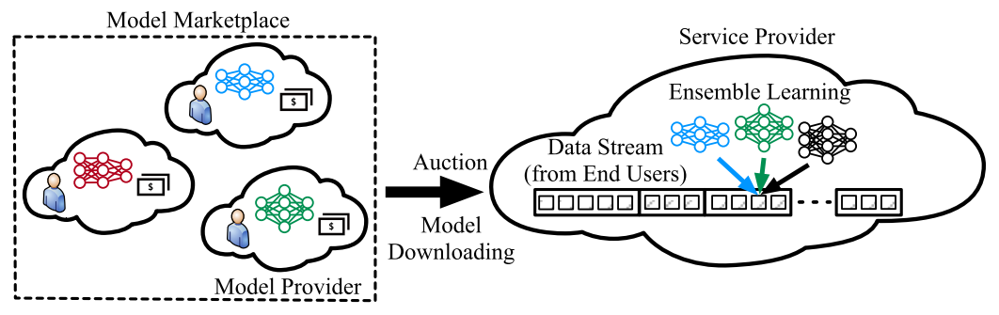</a><div class="artwork-note">原图保留 · 点击放大 · 图内英文标签见下方译注</div></figure>
<div class="pair caption" id="pair-fig-1-caption" data-block="fig-1-caption"><div class="source-left"><p>Fig. 1. System scenario.</p></div><div class="translation-right" id="zh-fig-1-caption"><p>图 1　系统场景。</p><a class="page-link" href="source.pdf#page=1" target="_blank" aria-label="打开原 PDF 第 1 页">原 PDF p.1</a></div></div>
<section class="heading-pair minor" id="sec1-heading"><div class="source-left"><h3>I. INTRODUCTION</h3></div><div class="translation-right" id="zh-sec1-heading"><h3>第一节　引言</h3></div></section>
<div class="pair paragraph" id="pair-sec1-001" data-block="sec1-001"><div class="source-left"><p>It is very common for cloud services to perform machine learning inference in real time upon requests from end users [1], [2]. Often, as time goes, the inference accuracy of the service provider&#x27;s model may vary or even irreversibly decrease because of concept drifts [3], [4], i.e., the existing model can no longer infer the best label for the data. One solution is to retrain or dynamically update the model as concept drifts are detected. However, for real-time inference on users&#x27; request streams, this could be infeasible due to insufficient training data, long delay of training, or prohibitive computation overhead. In contrast, ensemble methods [5], [6], [7] can combine multiple complementary pretrained models, including the service provider&#x27;s model and those provided by others (which we can call model providers), to achieve better accuracy and resilience against concept drifts without detecting them explicitly, thus providing an intriguing alternative.</p></div><div class="translation-right" id="zh-sec1-001"><p>云服务根据终端用户的请求实时执行机器学习推理，这是十分常见的做法 [1], [2]。但随时间推移，<a class="term-ref" href="#term-service-provider" title="Service provider（服务提供方）：运营机器学习推理服务的一方，在本文中同时充当拍卖人。">服务提供方<span class="term-tip" role="tooltip">Service provider（服务提供方）：运营机器学习推理服务的一方，在本文中同时充当拍卖人。</span></a>模型的推理精度往往会发生波动，甚至因<a class="term-ref" href="#term-concept-drift" title="Concept drift（概念漂移）：数据分布随时间变化，使既有模型不再能给出最佳标签；本文用集成方法在不显式检测漂移的前提下应对它。">概念漂移<span class="term-tip" role="tooltip">Concept drift（概念漂移）：数据分布随时间变化，使既有模型不再能给出最佳标签；本文用集成方法在不显式检测漂移的前提下应对它。</span></a>而不可逆地下降 [3], [4]——所谓<a class="term-ref" href="#term-concept-drift" title="Concept drift（概念漂移）：数据分布随时间变化，使既有模型不再能给出最佳标签；本文用集成方法在不显式检测漂移的前提下应对它。">概念漂移<span class="term-tip" role="tooltip">Concept drift（概念漂移）：数据分布随时间变化，使既有模型不再能给出最佳标签；本文用集成方法在不显式检测漂移的前提下应对它。</span></a>，即既有模型已无法为数据推断出最佳标签。一种解决办法是在检测到<a class="term-ref" href="#term-concept-drift" title="Concept drift（概念漂移）：数据分布随时间变化，使既有模型不再能给出最佳标签；本文用集成方法在不显式检测漂移的前提下应对它。">概念漂移<span class="term-tip" role="tooltip">Concept drift（概念漂移）：数据分布随时间变化，使既有模型不再能给出最佳标签；本文用集成方法在不显式检测漂移的前提下应对它。</span></a>时重新训练或动态更新模型；然而，对于用户请求流上的实时推理，这可能因训练数据不足、训练时延过长或计算开销过高而不可行。相比之下，集成方法 [5], [6], [7] 能够把多个互补的预训练模型（既包括<a class="term-ref" href="#term-service-provider" title="Service provider（服务提供方）：运营机器学习推理服务的一方，在本文中同时充当拍卖人。">服务提供方<span class="term-tip" role="tooltip">Service provider（服务提供方）：运营机器学习推理服务的一方，在本文中同时充当拍卖人。</span></a>自己的模型，也包括他方——我们称之为<a class="term-ref" href="#term-model-provider" title="Model provider（模型提供方）：以竞标者身份出售（提供）模型的一方；提供多个模型者可视为多个虚拟提供方。">模型提供方<span class="term-tip" role="tooltip">Model provider（模型提供方）：以竞标者身份出售（提供）模型的一方；提供多个模型者可视为多个虚拟提供方。</span></a>——提供的模型）组合起来，在<strong>不显式检测<a class="term-ref" href="#term-concept-drift" title="Concept drift（概念漂移）：数据分布随时间变化，使既有模型不再能给出最佳标签；本文用集成方法在不显式检测漂移的前提下应对它。">概念漂移<span class="term-tip" role="tooltip">Concept drift（概念漂移）：数据分布随时间变化，使既有模型不再能给出最佳标签；本文用集成方法在不显式检测漂移的前提下应对它。</span></a></strong>的前提下取得更好的精度与抗漂移能力，因而提供了一条颇具吸引力的替代路径。</p><a class="page-link" href="source.pdf#page=1" target="_blank" aria-label="打开原 PDF 第 1 页">原 PDF p.1</a></div></div>
<div class="pair paragraph" id="pair-sec1-002" data-block="sec1-002"><div class="source-left"><p>In fact, the service provider can engage in model transactions through AI model marketplaces with model providers [8], [9], [10], [11]. To incentivize the model providers to contribute their models, a monetizing mechanism is needed. Some AI marketplaces adopt direct pricing [12], [13], which can be less ideal due to the risk of mispricing [14], the lack of market efficiency, and the inability to adapt to real-time demand and supply. Auctions can address these disadvantages. In this paper, we advocate an auction-based approach, where the service provider can be the auctioneer and purchase models from the model providers that act as the bidders.</p></div><div class="translation-right" id="zh-sec1-002"><p>事实上，<a class="term-ref" href="#term-service-provider" title="Service provider（服务提供方）：运营机器学习推理服务的一方，在本文中同时充当拍卖人。">服务提供方<span class="term-tip" role="tooltip">Service provider（服务提供方）：运营机器学习推理服务的一方，在本文中同时充当拍卖人。</span></a>可以通过 AI 模型市场与<a class="term-ref" href="#term-model-provider" title="Model provider（模型提供方）：以竞标者身份出售（提供）模型的一方；提供多个模型者可视为多个虚拟提供方。">模型提供方<span class="term-tip" role="tooltip">Model provider（模型提供方）：以竞标者身份出售（提供）模型的一方；提供多个模型者可视为多个虚拟提供方。</span></a>进行模型交易 [8], [9], [10], [11]。为激励<a class="term-ref" href="#term-model-provider" title="Model provider（模型提供方）：以竞标者身份出售（提供）模型的一方；提供多个模型者可视为多个虚拟提供方。">模型提供方<span class="term-tip" role="tooltip">Model provider（模型提供方）：以竞标者身份出售（提供）模型的一方；提供多个模型者可视为多个虚拟提供方。</span></a>贡献其模型，需要有变现机制。部分 AI 市场采用直接定价 [12], [13]，但这并不理想：存在定价失误的风险 [14]、缺乏市场效率，且无法适应实时的供需变化。<a class="term-ref" href="#term-auction" title="Auction（拍卖）：本文用重复拍卖决定购买哪些模型并决定支付，以替代直接定价。">拍卖<span class="term-tip" role="tooltip">Auction（拍卖）：本文用重复拍卖决定购买哪些模型并决定支付，以替代直接定价。</span></a>可以弥补这些不足。本文主张采用基于<a class="term-ref" href="#term-auction" title="Auction（拍卖）：本文用重复拍卖决定购买哪些模型并决定支付，以替代直接定价。">拍卖<span class="term-tip" role="tooltip">Auction（拍卖）：本文用重复拍卖决定购买哪些模型并决定支付，以替代直接定价。</span></a>的方案：<a class="term-ref" href="#term-service-provider" title="Service provider（服务提供方）：运营机器学习推理服务的一方，在本文中同时充当拍卖人。">服务提供方<span class="term-tip" role="tooltip">Service provider（服务提供方）：运营机器学习推理服务的一方，在本文中同时充当拍卖人。</span></a>充当<a class="term-ref" href="#term-auction" title="Auction（拍卖）：本文用重复拍卖决定购买哪些模型并决定支付，以替代直接定价。">拍卖<span class="term-tip" role="tooltip">Auction（拍卖）：本文用重复拍卖决定购买哪些模型并决定支付，以替代直接定价。</span></a>人，向作为竞标者的<a class="term-ref" href="#term-model-provider" title="Model provider（模型提供方）：以竞标者身份出售（提供）模型的一方；提供多个模型者可视为多个虚拟提供方。">模型提供方<span class="term-tip" role="tooltip">Model provider（模型提供方）：以竞标者身份出售（提供）模型的一方；提供多个模型者可视为多个虚拟提供方。</span></a>购买模型。</p><a class="page-link" href="source.pdf#page=1" target="_blank" aria-label="打开原 PDF 第 1 页">原 PDF p.1</a></div></div>
<div class="pair paragraph" id="pair-sec1-003" data-block="sec1-003"><div class="source-left"><p>Unfortunately, designing such an auction and control mechanism faces multiple challenges, as the service provider has to optimally operate the system both by assembling the ensemble and performing inference in the &quot;front end&quot;, and by jointly conducting auctions and managing models in the &quot;back end&quot;. The first is how to control the dynamic balance, in an online manner, between system overhead and inference accuracy upon users&#x27; data stream as the system operates continuously. Combining more models to form the ensemble may lead to better inference accuracy, but having too many models could incur excessive model hosting cost. Whether to discard a model is also tricky as it involves &quot;time-coupled&quot; decisions [15]—keeping the model local could save the model downloading cost from model providers if this model is needed in the future, but it could cause waste if this model is not needed later. That is, the models need to be selected and deployed in terms of not only the incurred cost, but also the contribution to the inference loss of the ensemble. The unknown and unpredictable time-varying system environments and concept drifts, as well as the nonlinearity of both the cost and the inference loss functions, all escalate the difficulty and the complexity of the problem.</p></div><div class="translation-right" id="zh-sec1-003"><p>遗憾的是，设计这样的<a class="term-ref" href="#term-auction" title="Auction（拍卖）：本文用重复拍卖决定购买哪些模型并决定支付，以替代直接定价。">拍卖<span class="term-tip" role="tooltip">Auction（拍卖）：本文用重复拍卖决定购买哪些模型并决定支付，以替代直接定价。</span></a>与控制机制面临多重挑战：<a class="term-ref" href="#term-service-provider" title="Service provider（服务提供方）：运营机器学习推理服务的一方，在本文中同时充当拍卖人。">服务提供方<span class="term-tip" role="tooltip">Service provider（服务提供方）：运营机器学习推理服务的一方，在本文中同时充当拍卖人。</span></a>既要通过在“前端”组装集成并执行推理来最优地运行系统，又要在“后端”联合开展<a class="term-ref" href="#term-auction" title="Auction（拍卖）：本文用重复拍卖决定购买哪些模型并决定支付，以替代直接定价。">拍卖<span class="term-tip" role="tooltip">Auction（拍卖）：本文用重复拍卖决定购买哪些模型并决定支付，以替代直接定价。</span></a>并管理模型。第一个挑战是：在系统持续运行的过程中，如何<strong>在线</strong>控制用户在<a class="term-ref" href="#term-data-stream" title="Data stream（数据流）：持续到达的数据样本序列；本文要求在其上在线完成推理与学习。">数据流<span class="term-tip" role="tooltip">Data stream（数据流）：持续到达的数据样本序列；本文要求在其上在线完成推理与学习。</span></a>上的系统开销与推理精度之间的动态平衡。组合更多模型构成集成可能带来更高的推理精度，但模型过多会带来过高的模型<a class="term-ref" href="#term-hosting-cost" title="Hosting cost（托管成本）：把模型留在本地设施所产生的资源与能耗成本，按时间持续发生。">托管成本<span class="term-tip" role="tooltip">Hosting cost（托管成本）：把模型留在本地设施所产生的资源与能耗成本，按时间持续发生。</span></a>。是否丢弃某个模型同样棘手，因为这涉及<strong>“时间耦合”</strong>的决策 [15]——把模型保留在本地，可以在将来需要它时省下向<a class="term-ref" href="#term-model-provider" title="Model provider（模型提供方）：以竞标者身份出售（提供）模型的一方；提供多个模型者可视为多个虚拟提供方。">模型提供方<span class="term-tip" role="tooltip">Model provider（模型提供方）：以竞标者身份出售（提供）模型的一方；提供多个模型者可视为多个虚拟提供方。</span></a>下载模型的成本；但若以后用不到，保留就成了浪费。也就是说，模型的选择与部署不只要看当期成本，还要看它对集成<a class="term-ref" href="#term-inference-loss" title="Inference loss（推理损失）：联合推理结果与真实标签之间的损失；本文采用平方损失。">推理损失<span class="term-tip" role="tooltip">Inference loss（推理损失）：联合推理结果与真实标签之间的损失；本文采用平方损失。</span></a>的贡献。未知且难以预测的时变系统环境与<a class="term-ref" href="#term-concept-drift" title="Concept drift（概念漂移）：数据分布随时间变化，使既有模型不再能给出最佳标签；本文用集成方法在不显式检测漂移的前提下应对它。">概念漂移<span class="term-tip" role="tooltip">Concept drift（概念漂移）：数据分布随时间变化，使既有模型不再能给出最佳标签；本文用集成方法在不显式检测漂移的前提下应对它。</span></a>，加上成本函数与<a class="term-ref" href="#term-inference-loss" title="Inference loss（推理损失）：联合推理结果与真实标签之间的损失；本文采用平方损失。">推理损失<span class="term-tip" role="tooltip">Inference loss（推理损失）：联合推理结果与真实标签之间的损失；本文采用平方损失。</span></a>函数的<strong>非线性</strong>，共同抬高了问题的难度与复杂度。</p><a class="page-link" href="source.pdf#page=1" target="_blank" aria-label="打开原 PDF 第 1 页">原 PDF p.1</a></div></div>
<aside class="translator-note green" id="note-sec1-01"><div class="note-label">译者 · 背景与直觉</div><div id="zh-note-sec1-01"><p><strong>为什么需要“后端＋前端”两段式结构。</strong> 作者把系统切成两半：前端决定“用哪些模型投票、权重多少”（影响精度），后端决定“跟谁买模型、付多少钱、留不留”（影响成本）。这个切分是全文算法的骨架——算法 1–3 服务后端<a class="term-ref" href="#term-auction" title="Auction（拍卖）：本文用重复拍卖决定购买哪些模型并决定支付，以替代直接定价。">拍卖<span class="term-tip" role="tooltip">Auction（拍卖）：本文用重复拍卖决定购买哪些模型并决定支付，以替代直接定价。</span></a>，算法 4 决定托管，算法 5 服务前端集成。读者若只记一件事，就记这个分工。</p></div></aside>
<div class="pair paragraph" id="pair-sec1-004" data-block="sec1-004"><div class="source-left"><p>The other challenge is how to design the repetitive auctions that attain the desired economic properties, including truthfulness (i.e., a bidder maximizes its utility by not cheating about the bidding price) and individual rationality (i.e., a bidder has no loss on utility regardless of the auction outcome). The well-known Vickrey-Clarke-Groves (VCG) auctions [16] often require exactly solving the underlying social cost problem which can be intractable in our setting. The service provider may also desire to incentivize the long-term participation [17], [18], [19], [20] of model providers across auctions. Without a sufficient number of participants, the service provider may struggle to gather good models; if a model provider rarely wins in the auctions, it may quit permanently. Consequently, selecting the winning bids needs to consider not only the current auction but also existing and future auctions in the long term—buying a bid now could be unnecessary if the future bids end up cheaper or offer better models; but not buying it now could force us to buy bids later, even if they turn out to be costly or inferior. This interlacement between long-term participation and economic properties has not been typically studied previously.</p></div><div class="translation-right" id="zh-sec1-004"><p>另一个挑战是：如何设计重复<a class="term-ref" href="#term-auction" title="Auction（拍卖）：本文用重复拍卖决定购买哪些模型并决定支付，以替代直接定价。">拍卖<span class="term-tip" role="tooltip">Auction（拍卖）：本文用重复拍卖决定购买哪些模型并决定支付，以替代直接定价。</span></a>以取得所期望的经济性质，包括<strong><a class="term-ref" href="#term-truthfulness" title="Truthfulness（真实性）：竞标者不如实报价无法提高自身效用；本文证明其在期望意义下成立。">真实性<span class="term-tip" role="tooltip">Truthfulness（真实性）：竞标者不如实报价无法提高自身效用；本文证明其在期望意义下成立。</span></a></strong>（即竞标者不谎报竞价时其效用最大）与<strong><a class="term-ref" href="#term-individual-rationality" title="Individual rationality（个体理性）：无论拍卖结果如何，参与者的效用都不会变差，即参与不会吃亏。">个体理性<span class="term-tip" role="tooltip">Individual rationality（个体理性）：无论拍卖结果如何，参与者的效用都不会变差，即参与不会吃亏。</span></a></strong>（即无论<a class="term-ref" href="#term-auction" title="Auction（拍卖）：本文用重复拍卖决定购买哪些模型并决定支付，以替代直接定价。">拍卖<span class="term-tip" role="tooltip">Auction（拍卖）：本文用重复拍卖决定购买哪些模型并决定支付，以替代直接定价。</span></a>结果如何，竞标者的效用都不会变差）。著名的 Vickrey-Clarke-Groves（VCG）<a class="term-ref" href="#term-auction" title="Auction（拍卖）：本文用重复拍卖决定购买哪些模型并决定支付，以替代直接定价。">拍卖<span class="term-tip" role="tooltip">Auction（拍卖）：本文用重复拍卖决定购买哪些模型并决定支付，以替代直接定价。</span></a> [16] 通常要求精确求解底层<a class="term-ref" href="#term-social-cost" title="Social cost（社会成本）：服务提供方成本与模型提供方成本之和再加上累计推理损失；支付项在求和时相互抵消。">社会成本<span class="term-tip" role="tooltip">Social cost（社会成本）：服务提供方成本与模型提供方成本之和再加上累计推理损失；支付项在求和时相互抵消。</span></a>问题，而在本文设定下这可能是难解的。<a class="term-ref" href="#term-service-provider" title="Service provider（服务提供方）：运营机器学习推理服务的一方，在本文中同时充当拍卖人。">服务提供方<span class="term-tip" role="tooltip">Service provider（服务提供方）：运营机器学习推理服务的一方，在本文中同时充当拍卖人。</span></a>还可能希望激励<a class="term-ref" href="#term-model-provider" title="Model provider（模型提供方）：以竞标者身份出售（提供）模型的一方；提供多个模型者可视为多个虚拟提供方。">模型提供方<span class="term-tip" role="tooltip">Model provider（模型提供方）：以竞标者身份出售（提供）模型的一方；提供多个模型者可视为多个虚拟提供方。</span></a>在多次<a class="term-ref" href="#term-auction" title="Auction（拍卖）：本文用重复拍卖决定购买哪些模型并决定支付，以替代直接定价。">拍卖<span class="term-tip" role="tooltip">Auction（拍卖）：本文用重复拍卖决定购买哪些模型并决定支付，以替代直接定价。</span></a>中的<strong>长期参与</strong> [17], [18], [19], [20]。若参与者数量不足，<a class="term-ref" href="#term-service-provider" title="Service provider（服务提供方）：运营机器学习推理服务的一方，在本文中同时充当拍卖人。">服务提供方<span class="term-tip" role="tooltip">Service provider（服务提供方）：运营机器学习推理服务的一方，在本文中同时充当拍卖人。</span></a>难以汇集优质模型；而若某个<a class="term-ref" href="#term-model-provider" title="Model provider（模型提供方）：以竞标者身份出售（提供）模型的一方；提供多个模型者可视为多个虚拟提供方。">模型提供方<span class="term-tip" role="tooltip">Model provider（模型提供方）：以竞标者身份出售（提供）模型的一方；提供多个模型者可视为多个虚拟提供方。</span></a>在<a class="term-ref" href="#term-auction" title="Auction（拍卖）：本文用重复拍卖决定购买哪些模型并决定支付，以替代直接定价。">拍卖<span class="term-tip" role="tooltip">Auction（拍卖）：本文用重复拍卖决定购买哪些模型并决定支付，以替代直接定价。</span></a>中很少获胜，它可能永久退出。因此，选择获胜投标不仅要考虑当前这场<a class="term-ref" href="#term-auction" title="Auction（拍卖）：本文用重复拍卖决定购买哪些模型并决定支付，以替代直接定价。">拍卖<span class="term-tip" role="tooltip">Auction（拍卖）：本文用重复拍卖决定购买哪些模型并决定支付，以替代直接定价。</span></a>，还要考虑长期意义上的既有与未来<a class="term-ref" href="#term-auction" title="Auction（拍卖）：本文用重复拍卖决定购买哪些模型并决定支付，以替代直接定价。">拍卖<span class="term-tip" role="tooltip">Auction（拍卖）：本文用重复拍卖决定购买哪些模型并决定支付，以替代直接定价。</span></a>——现在买下一份投标，若将来的投标更便宜或模型更好，这笔支出就未必必要；但现在不买，又可能在将来被迫购买，即便那时价格高昂或模型较差。这种<strong>长期参与与经济性质之间的交织</strong>，此前通常未被研究。</p><a class="page-link" href="source.pdf#page=2" target="_blank" aria-label="打开原 PDF 第 2 页">原 PDF p.2</a></div></div>
<div class="pair paragraph" id="pair-sec1-005" data-block="sec1-005"><div class="source-left"><p>Existing research is not adequate for addressing the aforementioned challenges. The work in [21], [22], [23], [24], [25], and [26] studies ensemble methods, but generally neglects the system environment where such methods are executed. The work in [27], [28], [29], [30], [31], and [32] investigates ensemble learning specifically in cloud and/or edge environments, but neither targets an online and data streaming setting nor accounts for the auction mechanisms. The work on AI model markets [12], [13], [33], [34], [35], [36] also falls short, either overlooking economic interactions or lacking consideration of ensembles or the joint optimization of system performance. See Section VII for our more detailed discussions.</p></div><div class="translation-right" id="zh-sec1-005"><p>现有研究不足以应对上述挑战。[21], [22], [23], [24], [25], [26] 研究集成方法，但普遍忽略了这类方法所运行的系统环境。[27], [28], [29], [30], [31], [32] 专门研究云和/或边缘环境下的<a class="term-ref" href="#term-ensemble-learning" title="Ensemble learning（集成学习）：把多个模型的推理结果按权重合并为一个联合结果，以提升精度与抗漂移能力。">集成学习<span class="term-tip" role="tooltip">Ensemble learning（集成学习）：把多个模型的推理结果按权重合并为一个联合结果，以提升精度与抗漂移能力。</span></a>，但既未面向在线与<a class="term-ref" href="#term-data-stream" title="Data stream（数据流）：持续到达的数据样本序列；本文要求在其上在线完成推理与学习。">数据流<span class="term-tip" role="tooltip">Data stream（数据流）：持续到达的数据样本序列；本文要求在其上在线完成推理与学习。</span></a>式设定，也未考虑<a class="term-ref" href="#term-auction" title="Auction（拍卖）：本文用重复拍卖决定购买哪些模型并决定支付，以替代直接定价。">拍卖<span class="term-tip" role="tooltip">Auction（拍卖）：本文用重复拍卖决定购买哪些模型并决定支付，以替代直接定价。</span></a>机制。关于 AI 模型市场的工作 [12], [13], [33], [34], [35], [36] 同样存在不足：或忽视经济交互，或未考虑集成，或缺少对系统性能的联合优化。更详细的讨论见第七节。</p><a class="page-link" href="source.pdf#page=2" target="_blank" aria-label="打开原 PDF 第 2 页">原 PDF p.2</a></div></div>
<div class="pair paragraph" id="pair-sec1-006" data-block="sec1-006"><div class="source-left"><p>In this paper, we model the joint cost and inference structure of an auction-assisted ensemble-learning service for streamed data samples. We formulate a social cost minimization problem over time for the service provider, considering model hosting cost, model downloading cost, ensemble inference loss, payment flows, and the utility of model providers. Our formulation features arbitrarily time-varying inputs, time-coupled switching-cost terms, and long-term constraints, capturing all the aforementioned challenges. Our problem is a non-linear mixed-integer program, and is unsurprisingly NP-hard.</p></div><div class="translation-right" id="zh-sec1-006"><p>本文对面向流式数据样本的“<a class="term-ref" href="#term-auction" title="Auction（拍卖）：本文用重复拍卖决定购买哪些模型并决定支付，以替代直接定价。">拍卖<span class="term-tip" role="tooltip">Auction（拍卖）：本文用重复拍卖决定购买哪些模型并决定支付，以替代直接定价。</span></a>辅助<a class="term-ref" href="#term-ensemble-learning" title="Ensemble learning（集成学习）：把多个模型的推理结果按权重合并为一个联合结果，以提升精度与抗漂移能力。">集成学习<span class="term-tip" role="tooltip">Ensemble learning（集成学习）：把多个模型的推理结果按权重合并为一个联合结果，以提升精度与抗漂移能力。</span></a>服务”的联合成本与推理结构进行建模。我们为<a class="term-ref" href="#term-service-provider" title="Service provider（服务提供方）：运营机器学习推理服务的一方，在本文中同时充当拍卖人。">服务提供方<span class="term-tip" role="tooltip">Service provider（服务提供方）：运营机器学习推理服务的一方，在本文中同时充当拍卖人。</span></a>形式化了一个<strong>跨时间的<a class="term-ref" href="#term-social-cost" title="Social cost（社会成本）：服务提供方成本与模型提供方成本之和再加上累计推理损失；支付项在求和时相互抵消。">社会成本<span class="term-tip" role="tooltip">Social cost（社会成本）：服务提供方成本与模型提供方成本之和再加上累计推理损失；支付项在求和时相互抵消。</span></a>最小化问题</strong>，其中计入模型<a class="term-ref" href="#term-hosting-cost" title="Hosting cost（托管成本）：把模型留在本地设施所产生的资源与能耗成本，按时间持续发生。">托管成本<span class="term-tip" role="tooltip">Hosting cost（托管成本）：把模型留在本地设施所产生的资源与能耗成本，按时间持续发生。</span></a>、模型<a class="term-ref" href="#term-downloading-cost" title="Downloading cost（下载成本）：从模型提供方下载模型的流量与时延成本，仅在模型换代或首次部署时发生。">下载成本<span class="term-tip" role="tooltip">Downloading cost（下载成本）：从模型提供方下载模型的流量与时延成本，仅在模型换代或首次部署时发生。</span></a>、集成<a class="term-ref" href="#term-inference-loss" title="Inference loss（推理损失）：联合推理结果与真实标签之间的损失；本文采用平方损失。">推理损失<span class="term-tip" role="tooltip">Inference loss（推理损失）：联合推理结果与真实标签之间的损失；本文采用平方损失。</span></a>、支付流以及<a class="term-ref" href="#term-model-provider" title="Model provider（模型提供方）：以竞标者身份出售（提供）模型的一方；提供多个模型者可视为多个虚拟提供方。">模型提供方<span class="term-tip" role="tooltip">Model provider（模型提供方）：以竞标者身份出售（提供）模型的一方；提供多个模型者可视为多个虚拟提供方。</span></a>的效用。我们的建模具有三个特征：输入可任意时变、<a class="term-ref" href="#term-switching-cost" title="Switching cost（切换成本）：因改变托管决策而重新下载模型所产生的成本；它把相邻时隙耦合在一起。">切换成本<span class="term-tip" role="tooltip">Switching cost（切换成本）：因改变托管决策而重新下载模型所产生的成本；它把相邻时隙耦合在一起。</span></a>项存在时间耦合、以及长期约束——从而覆盖了前述全部挑战。该问题是一个非线性混合整数规划，且不出所料是 <a class="term-ref" href="#term-np-hard" title="NP-hard（NP 难）：忽略部分项后本文问题退化为最小成本背包问题，因此是 NP 难的。">NP 难<span class="term-tip" role="tooltip">NP-hard（NP 难）：忽略部分项后本文问题退化为最小成本背包问题，因此是 NP 难的。</span></a>的。</p><a class="page-link" href="source.pdf#page=2" target="_blank" aria-label="打开原 PDF 第 2 页">原 PDF p.2</a></div></div>
<aside class="translator-note blue" id="note-sec1-02"><div class="note-label">译者 · 数学、算法与核对</div><div id="zh-note-sec1-02"><p><strong>问题难在哪里（为后面的算法做铺垫）。</strong> 三个特征各自对应一种难度：<br><strong>① 输入任意时变</strong> ⇒ 无法预知未来，只能在线决策，于是需要“<a class="term-ref" href="#term-dynamic-regret" title="Dynamic regret（动态遗憾）：在线投标成本与逐期离线最优成本之差；本文证明其相对时隙数是次线性的。">动态遗憾<span class="term-tip" role="tooltip">Dynamic regret（动态遗憾）：在线投标成本与逐期离线最优成本之差；本文证明其相对时隙数是次线性的。</span></a>/<a class="term-ref" href="#term-dynamic-fit" title="Dynamic fit（动态拟合）：长期参与约束的累计违反量；本文证明其同样次线性，即长期参与终将满足。">动态拟合<span class="term-tip" role="tooltip">Dynamic fit（动态拟合）：长期参与约束的累计违反量；本文证明其同样次线性，即长期参与终将满足。</span></a>”这类相对<a class="term-ref" href="#term-offline-optimum" title="Offline optimum（离线最优）：在事先已知全部输入时可达到的最优成本；在线算法以它为比较基准。">离线最优<span class="term-tip" role="tooltip">Offline optimum（离线最优）：在事先已知全部输入时可达到的最优成本；在线算法以它为比较基准。</span></a>的度量；<br><strong>② <a class="term-ref" href="#term-switching-cost" title="Switching cost（切换成本）：因改变托管决策而重新下载模型所产生的成本；它把相邻时隙耦合在一起。">切换成本<span class="term-tip" role="tooltip">Switching cost（切换成本）：因改变托管决策而重新下载模型所产生的成本；它把相邻时隙耦合在一起。</span></a>时间耦合</strong> ⇒ 今天保留一个模型，会改变明天的可选集合与成本，决策不可逐期分解（这是算法 4 用“<a class="term-ref" href="#term-lazy-switch" title="Lazy switch（懒惰切换）：只有在切换成本确实低于继续托管的累计成本时才改变托管决策，避免频繁切换。">懒惰切换<span class="term-tip" role="tooltip">Lazy switch（懒惰切换）：只有在切换成本确实低于继续托管的累计成本时才改变托管决策，避免频繁切换。</span></a>”的理由）；<br><strong>③ 长期约束</strong> ⇒ 例如“长期参与”要求跨期满足，不能由单期最优保证（这是算法 1 把长期约束用近似项吸进目标的理由）。</p></div></aside>
<div class="pair paragraph" id="pair-sec1-007" data-block="sec1-007"><div class="source-left"><p>We propose a universal mechanism to select winning bids, allocate payments, host models, and conduct ensemble learning, regardless of the types of the models that comprise the ensemble. To that end, we design a holistic set of polynomial-time online algorithms that work together. In each auction, first, given the model hosting decisions, we design the Online Fractional Algorithm (i.e., Algorithm 1) to make fractional bid selections based on alternate descent-ascent primal-dual steps for a reformulation that absorbs the long-term constraint into the objective by a well-designed proximal term [37], [38]. Next, we design the Randomized Rounding Algorithm (i.e., Algorithm 2) to convert such fractional decisions into more tangible integer bid selections in a randomized manner without violating the residual constraints. Further, we design the Payment Allocation Algorithm (i.e., Algorithm 3) to replace VCG and calculate payments to the bids based on the actual fractional decision and bidding price and the envisaged fractional decisions with alternative bidding prices. Then, we design the Model Hosting Algorithm (i.e., Algorithm 4) that ties the repetitive auctions over time and invokes Algorithms 1 and 2 to select and deploy models via comparing in real time the most recent downloading cost of switching from previous models to the current models versus the cumulative hosting cost of retaining the current models since the last switch operation. Finally, we design the Ensemble Learning Algorithm (i.e., Algorithm 5) to combine the inference results of the models from Algorithm 4 as a weighted sum to produce the joint result for each data sample, while updating the weights in an exponential manner as data samples arrive [39].</p></div><div class="translation-right" id="zh-sec1-007"><p>我们提出一套通用机制，用于选择获胜投标、分配支付、托管模型并开展<a class="term-ref" href="#term-ensemble-learning" title="Ensemble learning（集成学习）：把多个模型的推理结果按权重合并为一个联合结果，以提升精度与抗漂移能力。">集成学习<span class="term-tip" role="tooltip">Ensemble learning（集成学习）：把多个模型的推理结果按权重合并为一个联合结果，以提升精度与抗漂移能力。</span></a>，且不依赖于构成集成的模型类型。为此，我们设计了一组彼此配合的、多项式时间的<a class="term-ref" href="#term-online-algorithm" title="Online algorithm（在线算法）：输入逐步显现、必须即时决策的算法；本文全部算法均为多项式时间在线算法。">在线算法<span class="term-tip" role="tooltip">Online algorithm（在线算法）：输入逐步显现、必须即时决策的算法；本文全部算法均为多项式时间在线算法。</span></a>。在每一场<a class="term-ref" href="#term-auction" title="Auction（拍卖）：本文用重复拍卖决定购买哪些模型并决定支付，以替代直接定价。">拍卖<span class="term-tip" role="tooltip">Auction（拍卖）：本文用重复拍卖决定购买哪些模型并决定支付，以替代直接定价。</span></a>中：首先，在给定模型托管决策的前提下，我们设计<strong>在线分数算法</strong>（即算法 1），通过交替的<a class="term-ref" href="#term-primal-dual" title="Descent-ascent primal-dual step（下降–上升原始–对偶步骤）：原始变量沿梯度下降、对偶变量沿违反量上升的交替更新，是算法 1 的核心。">下降–上升原始–对偶步骤<span class="term-tip" role="tooltip">Descent-ascent primal-dual step（下降–上升原始–对偶步骤）：原始变量沿梯度下降、对偶变量沿违反量上升的交替更新，是算法 1 的核心。</span></a>进行分数式<a class="term-ref" href="#term-bid-selection" title="Bid selection（投标选择）：决定哪些投标获胜；本文先用分数算法求解，再随机舍入为整数。">投标选择<span class="term-tip" role="tooltip">Bid selection（投标选择）：决定哪些投标获胜；本文先用分数算法求解，再随机舍入为整数。</span></a>；该步骤针对一个重述问题，其中用精心设计的近似项把长期约束吸收进目标函数 [37], [38]。其次，我们设计<strong><a class="term-ref" href="#term-randomized-rounding" title="Randomized rounding（随机舍入）：把分数决策按概率转换为 0/1 整数决策，且保持期望不变、不破坏剩余约束。">随机舍入<span class="term-tip" role="tooltip">Randomized rounding（随机舍入）：把分数决策按概率转换为 0/1 整数决策，且保持期望不变、不破坏剩余约束。</span></a>算法</strong>（即算法 2），以随机方式把上述分数决策转换为更具体的整数<a class="term-ref" href="#term-bid-selection" title="Bid selection（投标选择）：决定哪些投标获胜；本文先用分数算法求解，再随机舍入为整数。">投标选择<span class="term-tip" role="tooltip">Bid selection（投标选择）：决定哪些投标获胜；本文先用分数算法求解，再随机舍入为整数。</span></a>，同时不违反剩余约束。再次，我们设计<strong><a class="term-ref" href="#term-payment-allocation" title="Payment allocation（支付分配）：决定向每个获胜投标支付多少；本文用“实际决策”与“替代决策”之差构造支付。">支付分配<span class="term-tip" role="tooltip">Payment allocation（支付分配）：决定向每个获胜投标支付多少；本文用“实际决策”与“替代决策”之差构造支付。</span></a>算法</strong>（即算法 3）以取代 VCG：它依据实际的分数决策与竞价、以及“以替代竞价设想出的”分数决策来计算向各投标的支付。随后，我们设计<strong>模型托管算法</strong>（即算法 4），它把跨时间的重复<a class="term-ref" href="#term-auction" title="Auction（拍卖）：本文用重复拍卖决定购买哪些模型并决定支付，以替代直接定价。">拍卖<span class="term-tip" role="tooltip">Auction（拍卖）：本文用重复拍卖决定购买哪些模型并决定支付，以替代直接定价。</span></a>串联起来，并调用算法 1 与算法 2 来选择与部署模型——做法是实时比较“从先前模型切换到当前模型的最新<a class="term-ref" href="#term-downloading-cost" title="Downloading cost（下载成本）：从模型提供方下载模型的流量与时延成本，仅在模型换代或首次部署时发生。">下载成本<span class="term-tip" role="tooltip">Downloading cost（下载成本）：从模型提供方下载模型的流量与时延成本，仅在模型换代或首次部署时发生。</span></a>”与“自上次切换操作以来保留当前模型的累计<a class="term-ref" href="#term-hosting-cost" title="Hosting cost（托管成本）：把模型留在本地设施所产生的资源与能耗成本，按时间持续发生。">托管成本<span class="term-tip" role="tooltip">Hosting cost（托管成本）：把模型留在本地设施所产生的资源与能耗成本，按时间持续发生。</span></a>”。最后，我们设计<strong><a class="term-ref" href="#term-ensemble-learning" title="Ensemble learning（集成学习）：把多个模型的推理结果按权重合并为一个联合结果，以提升精度与抗漂移能力。">集成学习<span class="term-tip" role="tooltip">Ensemble learning（集成学习）：把多个模型的推理结果按权重合并为一个联合结果，以提升精度与抗漂移能力。</span></a>算法</strong>（即算法 5），把算法 4 所选模型的推理结果以加权和方式合并，为每个数据样本产生联合结果，并随着数据样本到达以指数方式更新权重 [39]。</p><a class="page-link" href="source.pdf#page=2" target="_blank" aria-label="打开原 PDF 第 2 页">原 PDF p.2</a></div></div>
<aside class="translator-note green" id="note-sec1-03"><div class="note-label">译者 · 背景与直觉</div><div id="zh-note-sec1-03"><p><strong>五个算法一句话各自做什么。</strong> 这一段是全文的“算法地图”，建议先记住：<br><strong>算法 1</strong>（在线分数算法）：本轮该买哪些投标，先允许“买 0.7 份”，用原始–对偶交替更新求解。<br><strong>算法 2</strong>（<a class="term-ref" href="#term-randomized-rounding" title="Randomized rounding（随机舍入）：把分数决策按概率转换为 0/1 整数决策，且保持期望不变、不破坏剩余约束。">随机舍入<span class="term-tip" role="tooltip">Randomized rounding（随机舍入）：把分数决策按概率转换为 0/1 整数决策，且保持期望不变、不破坏剩余约束。</span></a>）：把 0.7 份变成“买/不买”，且保持期望不变、不破坏约束。<br><strong>算法 3</strong>（<a class="term-ref" href="#term-payment-allocation" title="Payment allocation（支付分配）：决定向每个获胜投标支付多少；本文用“实际决策”与“替代决策”之差构造支付。">支付分配<span class="term-tip" role="tooltip">Payment allocation（支付分配）：决定向每个获胜投标支付多少；本文用“实际决策”与“替代决策”之差构造支付。</span></a>）：算钱。用“实际决策”与“去掉你的替代决策”之差来决定付给你多少——这是替代 VCG 的关键技巧。<br><strong>算法 4</strong>（模型托管）：决定哪些模型留在本地，用“切换<a class="term-ref" href="#term-downloading-cost" title="Downloading cost（下载成本）：从模型提供方下载模型的流量与时延成本，仅在模型换代或首次部署时发生。">下载成本<span class="term-tip" role="tooltip">Downloading cost（下载成本）：从模型提供方下载模型的流量与时延成本，仅在模型换代或首次部署时发生。</span></a> vs 继续托管的累计成本”比较，即“<a class="term-ref" href="#term-lazy-switch" title="Lazy switch（懒惰切换）：只有在切换成本确实低于继续托管的累计成本时才改变托管决策，避免频繁切换。">懒惰切换<span class="term-tip" role="tooltip">Lazy switch（懒惰切换）：只有在切换成本确实低于继续托管的累计成本时才改变托管决策，避免频繁切换。</span></a>”。<br><strong>算法 5</strong>（<a class="term-ref" href="#term-ensemble-learning" title="Ensemble learning（集成学习）：把多个模型的推理结果按权重合并为一个联合结果，以提升精度与抗漂移能力。">集成学习<span class="term-tip" role="tooltip">Ensemble learning（集成学习）：把多个模型的推理结果按权重合并为一个联合结果，以提升精度与抗漂移能力。</span></a>）：把各模型的投票按权重加权求和，权重按指数更新（Hedge）。</p></div></aside>
<div class="pair paragraph" id="pair-sec1-008" data-block="sec1-008"><div class="source-left"><p>We provide a thorough analysis of our proposed algorithms by formally proving a series of theorems. We exhibit that the dynamic regret and the dynamic fit [38], [40] are sub-linear, i.e., as the total number of time slots grows, the difference between the time-averaged bidding cost incurred by our online approach and its time-averaged offline optimum gradually vanishes, so does the time-averaged violation of the long-term participation. We show that truthfulness and individual rationality are met in expectation. We further imply that the inference loss generated by our ensemble method is upper-bounded by a constant times that generated by the single best model out of our selected models. Based on that, we establish the competitiveness, i.e., the social cost over time incurred by our online approach is no greater than a constant times the sum of the offline optimal cost over time plus the cumulative inference loss of the single best model for each time slot.</p></div><div class="translation-right" id="zh-sec1-008"><p>我们通过严格证明一系列定理，对所提算法进行了透彻分析。我们证明<strong><a class="term-ref" href="#term-dynamic-regret" title="Dynamic regret（动态遗憾）：在线投标成本与逐期离线最优成本之差；本文证明其相对时隙数是次线性的。">动态遗憾<span class="term-tip" role="tooltip">Dynamic regret（动态遗憾）：在线投标成本与逐期离线最优成本之差；本文证明其相对时隙数是次线性的。</span></a></strong>与<strong><a class="term-ref" href="#term-dynamic-fit" title="Dynamic fit（动态拟合）：长期参与约束的累计违反量；本文证明其同样次线性，即长期参与终将满足。">动态拟合<span class="term-tip" role="tooltip">Dynamic fit（动态拟合）：长期参与约束的累计违反量；本文证明其同样次线性，即长期参与终将满足。</span></a></strong> [38], [40] 都是次线性的：随着<a class="term-ref" href="#term-time-slot" title="Time slot（时隙）：决策的时间单位，符号 t；数据样本在各时隙内到达。">时隙<span class="term-tip" role="tooltip">Time slot（时隙）：决策的时间单位，符号 t；数据样本在各时隙内到达。</span></a>总数增长，在线方法产生的时间平均投标成本与其时间平均<a class="term-ref" href="#term-offline-optimum" title="Offline optimum（离线最优）：在事先已知全部输入时可达到的最优成本；在线算法以它为比较基准。">离线最优<span class="term-tip" role="tooltip">Offline optimum（离线最优）：在事先已知全部输入时可达到的最优成本；在线算法以它为比较基准。</span></a>值之间的差距逐渐消失，长期参与约束的时间平均违反量同样如此。我们证明<a class="term-ref" href="#term-truthfulness" title="Truthfulness（真实性）：竞标者不如实报价无法提高自身效用；本文证明其在期望意义下成立。">真实性<span class="term-tip" role="tooltip">Truthfulness（真实性）：竞标者不如实报价无法提高自身效用；本文证明其在期望意义下成立。</span></a>与<a class="term-ref" href="#term-individual-rationality" title="Individual rationality（个体理性）：无论拍卖结果如何，参与者的效用都不会变差，即参与不会吃亏。">个体理性<span class="term-tip" role="tooltip">Individual rationality（个体理性）：无论拍卖结果如何，参与者的效用都不会变差，即参与不会吃亏。</span></a>在<strong>期望意义</strong>下成立。我们进一步说明：集成方法产生的<a class="term-ref" href="#term-inference-loss" title="Inference loss（推理损失）：联合推理结果与真实标签之间的损失；本文采用平方损失。">推理损失<span class="term-tip" role="tooltip">Inference loss（推理损失）：联合推理结果与真实标签之间的损失；本文采用平方损失。</span></a>，被“所选模型中单个最佳模型”所产生损失的常数倍所上界。基于此，我们建立了<strong>竞争性</strong>：在线方法产生的长期<a class="term-ref" href="#term-social-cost" title="Social cost（社会成本）：服务提供方成本与模型提供方成本之和再加上累计推理损失；支付项在求和时相互抵消。">社会成本<span class="term-tip" role="tooltip">Social cost（社会成本）：服务提供方成本与模型提供方成本之和再加上累计推理损失；支付项在求和时相互抵消。</span></a>，不超过“<a class="term-ref" href="#term-offline-optimum" title="Offline optimum（离线最优）：在事先已知全部输入时可达到的最优成本；在线算法以它为比较基准。">离线最优<span class="term-tip" role="tooltip">Offline optimum（离线最优）：在事先已知全部输入时可达到的最优成本；在线算法以它为比较基准。</span></a>成本的时间累加”加上“每个<a class="term-ref" href="#term-time-slot" title="Time slot（时隙）：决策的时间单位，符号 t；数据样本在各时隙内到达。">时隙<span class="term-tip" role="tooltip">Time slot（时隙）：决策的时间单位，符号 t；数据样本在各时隙内到达。</span></a>单个最佳模型的<a class="term-ref" href="#term-inference-loss" title="Inference loss（推理损失）：联合推理结果与真实标签之间的损失；本文采用平方损失。">推理损失<span class="term-tip" role="tooltip">Inference loss（推理损失）：联合推理结果与真实标签之间的损失；本文采用平方损失。</span></a>累加”的常数倍。</p><a class="page-link" href="source.pdf#page=2" target="_blank" aria-label="打开原 PDF 第 2 页">原 PDF p.2</a></div></div>
<div class="pair paragraph" id="pair-sec1-009" data-block="sec1-009"><div class="source-left"><p>Finally, we implement and test a classification service upon multiple real-world time-lapse data streams [41], [42] and benchmark datasets [43], [44], with up to 64 model providers at geographically-distributed clouds worldwide [45], [46] under realistic settings [17], [20], [47], [48]. Our evaluations reveal the following results: (i) Compared to the baselines of the Random method, the Greedy method, and the state-of-the-art-based DTEL+ and DES+ method, our approach reduces the long-term social cost on average by 70%, 37%, 35%, and 46%, respectively, with the empirical competitive ratio of 2.1 ∼ 2.7; (ii) Our approach achieves truthfulness and individual rationality in every auction; (iii) Our approach incurs the lowest dynamic regret and the lowest dynamic fit, which only grow slowly with time; (iv) Our approach attains an inference accuracy of about 2% ∼ 9% higher than DTEL+ and DES+; (v) Most of our algorithms complete in a few seconds for each auction with the delay-insensitive payment calculated in less than a minute, meeting the needs in reality.</p></div><div class="translation-right" id="zh-sec1-009"><p>最后，我们在多条真实世界的时移<a class="term-ref" href="#term-data-stream" title="Data stream（数据流）：持续到达的数据样本序列；本文要求在其上在线完成推理与学习。">数据流<span class="term-tip" role="tooltip">Data stream（数据流）：持续到达的数据样本序列；本文要求在其上在线完成推理与学习。</span></a> [41], [42] 与基准数据集 [43], [44] 上实现并测试了一个分类服务：在真实设定 [17], [20], [47], [48] 下，涉及全球地理分布的云上最多 64 个<a class="term-ref" href="#term-model-provider" title="Model provider（模型提供方）：以竞标者身份出售（提供）模型的一方；提供多个模型者可视为多个虚拟提供方。">模型提供方<span class="term-tip" role="tooltip">Model provider（模型提供方）：以竞标者身份出售（提供）模型的一方；提供多个模型者可视为多个虚拟提供方。</span></a> [45], [46]。评估得到如下结果：(i) 与随机方法、贪心方法、以及基于前沿工作的 <a class="term-ref" href="#term-dtel" title="DTEL+（DTEL+）：本文对照的前沿方法之一（基于深度强化学习的集成学习方案）。">DTEL+<span class="term-tip" role="tooltip">DTEL+（DTEL+）：本文对照的前沿方法之一（基于深度强化学习的集成学习方案）。</span></a> 与 <a class="term-ref" href="#term-des" title="DES+（DES+）：本文对照的前沿方法之一（动态集成选择方案）。">DES+<span class="term-tip" role="tooltip">DES+（DES+）：本文对照的前沿方法之一（动态集成选择方案）。</span></a> 三种基线相比，本方法把长期<a class="term-ref" href="#term-social-cost" title="Social cost（社会成本）：服务提供方成本与模型提供方成本之和再加上累计推理损失；支付项在求和时相互抵消。">社会成本<span class="term-tip" role="tooltip">Social cost（社会成本）：服务提供方成本与模型提供方成本之和再加上累计推理损失；支付项在求和时相互抵消。</span></a>平均降低 70%、37%、35% 与 46%，经验<a class="term-ref" href="#term-competitive-ratio" title="Competitive ratio（竞争比）：在线方案的总成本不超过离线最优加最佳单模型损失之和的常数倍；本文给出参数化常数。">竞争比<span class="term-tip" role="tooltip">Competitive ratio（竞争比）：在线方案的总成本不超过离线最优加最佳单模型损失之和的常数倍；本文给出参数化常数。</span></a>为 2.1 ∼ 2.7；(ii) 本方法在每一场<a class="term-ref" href="#term-auction" title="Auction（拍卖）：本文用重复拍卖决定购买哪些模型并决定支付，以替代直接定价。">拍卖<span class="term-tip" role="tooltip">Auction（拍卖）：本文用重复拍卖决定购买哪些模型并决定支付，以替代直接定价。</span></a>中都满足<a class="term-ref" href="#term-truthfulness" title="Truthfulness（真实性）：竞标者不如实报价无法提高自身效用；本文证明其在期望意义下成立。">真实性<span class="term-tip" role="tooltip">Truthfulness（真实性）：竞标者不如实报价无法提高自身效用；本文证明其在期望意义下成立。</span></a>与<a class="term-ref" href="#term-individual-rationality" title="Individual rationality（个体理性）：无论拍卖结果如何，参与者的效用都不会变差，即参与不会吃亏。">个体理性<span class="term-tip" role="tooltip">Individual rationality（个体理性）：无论拍卖结果如何，参与者的效用都不会变差，即参与不会吃亏。</span></a>；(iii) 本方法取得最低的<a class="term-ref" href="#term-dynamic-regret" title="Dynamic regret（动态遗憾）：在线投标成本与逐期离线最优成本之差；本文证明其相对时隙数是次线性的。">动态遗憾<span class="term-tip" role="tooltip">Dynamic regret（动态遗憾）：在线投标成本与逐期离线最优成本之差；本文证明其相对时隙数是次线性的。</span></a>与最低的<a class="term-ref" href="#term-dynamic-fit" title="Dynamic fit（动态拟合）：长期参与约束的累计违反量；本文证明其同样次线性，即长期参与终将满足。">动态拟合<span class="term-tip" role="tooltip">Dynamic fit（动态拟合）：长期参与约束的累计违反量；本文证明其同样次线性，即长期参与终将满足。</span></a>，且二者随时间只缓慢增长；(iv) 本方法的推理精度比 <a class="term-ref" href="#term-dtel" title="DTEL+（DTEL+）：本文对照的前沿方法之一（基于深度强化学习的集成学习方案）。">DTEL+<span class="term-tip" role="tooltip">DTEL+（DTEL+）：本文对照的前沿方法之一（基于深度强化学习的集成学习方案）。</span></a> 与 <a class="term-ref" href="#term-des" title="DES+（DES+）：本文对照的前沿方法之一（动态集成选择方案）。">DES+<span class="term-tip" role="tooltip">DES+（DES+）：本文对照的前沿方法之一（动态集成选择方案）。</span></a> 高约 2% ∼ 9%；(v) 在每场<a class="term-ref" href="#term-auction" title="Auction（拍卖）：本文用重复拍卖决定购买哪些模型并决定支付，以替代直接定价。">拍卖<span class="term-tip" role="tooltip">Auction（拍卖）：本文用重复拍卖决定购买哪些模型并决定支付，以替代直接定价。</span></a>中，本方法的大多数算法在数秒内完成，对时延不敏感的支付计算在不到一分钟内完成，满足现实需求。</p><a class="page-link" href="source.pdf#page=2" target="_blank" aria-label="打开原 PDF 第 2 页">原 PDF p.2</a></div></div>
<section class="heading-pair minor" id="sec2-heading"><div class="source-left"><h3>II. MODEL AND PROBLEM FORMULATION</h3></div><div class="translation-right" id="zh-sec2-heading"><h3>第二节　模型与问题形式化</h3></div></section>
<section class="heading-pair minor" id="sec2-sub-a"><div class="source-left"><h3>A. System Modeling</h3></div><div class="translation-right" id="zh-sec2-sub-a"><h3>A. 系统建模</h3></div></section>
<div class="pair paragraph" id="pair-sec2-001" data-block="sec2-001"><div class="source-left"><p>We summarize all our major notations in Table I.</p></div><div class="translation-right" id="zh-sec2-001"><p>我们在表 I 中汇总了本文的主要符号。</p><a class="page-link" href="source.pdf#page=2" target="_blank" aria-label="打开原 PDF 第 2 页">原 PDF p.2</a></div></div>
<figure id="table-1"><a href="assets/figures/table-1-original.png" target="_blank" title="查看原表">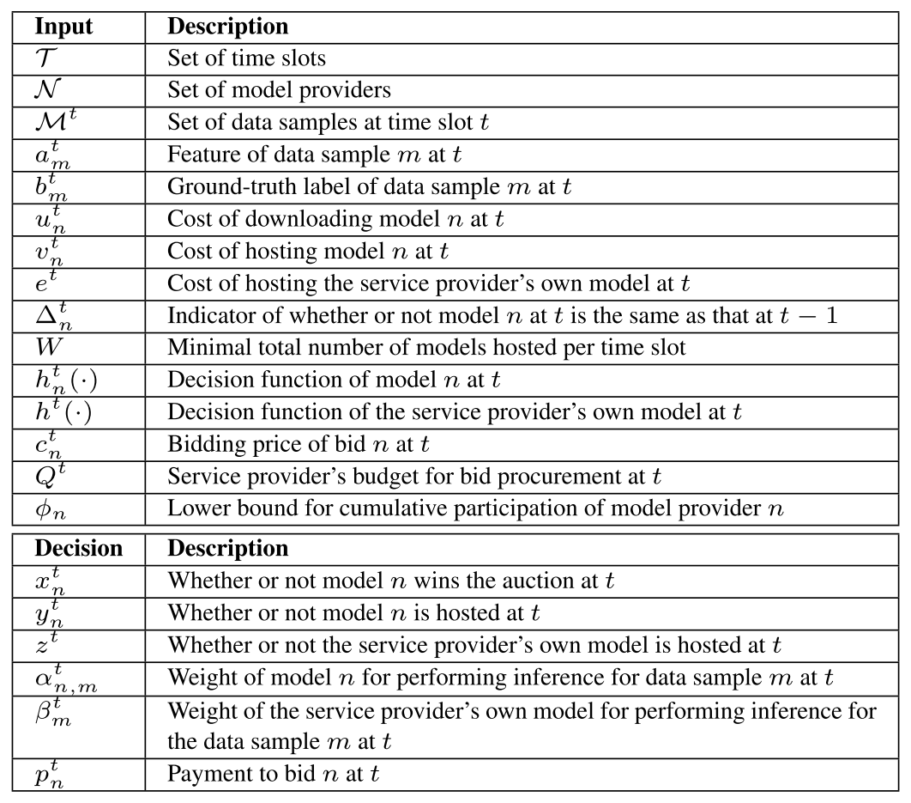</a><div class="artwork-note">原表为嵌入图像 · 点击放大</div></figure>
<div class="pair table" id="pair-table-1" data-block="table-1"><div class="source-left"><p><strong>TABLE I — NOTATIONS</strong></p><div class="table-scroll"><table><thead><tr><th>Notation</th><th>Meaning</th></tr></thead><tbody><tr><td>$\mathcal T=\{1,2,\dots,T\}$</td><td>Set of consecutive time slots</td></tr><tr><td>$\mathcal M^t=\{1,2,\dots,M^t\}$</td><td>Set of data samples arriving in time slot $t$</td></tr><tr><td>$a^t_m$, $b^t_m$</td><td>Feature values and ground-truth label of data sample $m$</td></tr><tr><td>$\mathcal N=\{1,2,\dots,N\}$</td><td>Set of model providers (each offers one model)</td></tr><tr><td>$h^t_n(\cdot)$</td><td>Decision function of the model offered by provider $n$</td></tr><tr><td>$h^t(\cdot)$</td><td>Decision function of the service provider&#x27;s own model</td></tr><tr><td>$c^t_n$</td><td>Bidding price charged by bid $n$</td></tr><tr><td>$p^t_n$</td><td>Payment made to bid $n$</td></tr><tr><td>$u^t_n$</td><td>Cost of downloading model $n$ from provider $n$</td></tr><tr><td>$v^t_n$</td><td>Cost of hosting model $n$ at the service provider</td></tr><tr><td>$e^t$</td><td>Cost of hosting the service provider&#x27;s own model</td></tr><tr><td>$\Delta^t_n\in\{0,1\}$</td><td>Whether model $n$ at $t$ differs from that at $t-1$</td></tr><tr><td>$W\ge 1$</td><td>Minimum number of models to host for ensemble learning</td></tr><tr><td>$Q^t\ge 0$</td><td>Purchase budget: maximum number of models purchasable at $t$</td></tr><tr><td>$\phi_n\in[0,1]$</td><td>Participation threshold of provider $n$</td></tr><tr><td>$x^t_n\in\{0,1\}$</td><td>Whether model $n$ wins the auction at $t$</td></tr><tr><td>$y^t_n\in\{0,1\}$</td><td>Whether model $n$ is hosted and deployed at $t$</td></tr><tr><td>$z^t\in\{0,1\}$</td><td>Whether the service provider hosts its own model at $t$</td></tr><tr><td>$\alpha^t_{n,m}\in[0,1]$</td><td>Weight of purchased model $n$ for data sample $m$</td></tr><tr><td>$\beta^t_m\in[0,1]$</td><td>Weight of the service provider&#x27;s own model for sample $m$</td></tr><tr><td>$\hat b^t_m$</td><td>Joint inference result for data sample $m$</td></tr><tr><td>$l(\cdot,\cdot)$</td><td>Loss function (squared loss)</td></tr></tbody></table></div></div><div class="translation-right" id="zh-table-1"><p><strong>表 I — 符号表</strong></p><div class="table-scroll"><table><thead><tr><th>符号</th><th>含义</th></tr></thead><tbody><tr><td>$\mathcal T=\{1,2,\dots,T\}$</td><td>连续<a class="term-ref" href="#term-time-slot" title="Time slot（时隙）：决策的时间单位，符号 t；数据样本在各时隙内到达。">时隙<span class="term-tip" role="tooltip">Time slot（时隙）：决策的时间单位，符号 t；数据样本在各时隙内到达。</span></a>的集合</td></tr><tr><td>$\mathcal M^t=\{1,2,\dots,M^t\}$</td><td><a class="term-ref" href="#term-time-slot" title="Time slot（时隙）：决策的时间单位，符号 t；数据样本在各时隙内到达。">时隙<span class="term-tip" role="tooltip">Time slot（时隙）：决策的时间单位，符号 t；数据样本在各时隙内到达。</span></a> $t$ 内到达的数据样本集合</td></tr><tr><td>$a^t_m$、$b^t_m$</td><td>数据样本 $m$ 的特征值与真实标签</td></tr><tr><td>$\mathcal N=\{1,2,\dots,N\}$</td><td><a class="term-ref" href="#term-model-provider" title="Model provider（模型提供方）：以竞标者身份出售（提供）模型的一方；提供多个模型者可视为多个虚拟提供方。">模型提供方<span class="term-tip" role="tooltip">Model provider（模型提供方）：以竞标者身份出售（提供）模型的一方；提供多个模型者可视为多个虚拟提供方。</span></a>集合（每家提供一个模型）</td></tr><tr><td>$h^t_n(\cdot)$</td><td>提供方 $n$ 所提供模型的决策函数</td></tr><tr><td>$h^t(\cdot)$</td><td><a class="term-ref" href="#term-service-provider" title="Service provider（服务提供方）：运营机器学习推理服务的一方，在本文中同时充当拍卖人。">服务提供方<span class="term-tip" role="tooltip">Service provider（服务提供方）：运营机器学习推理服务的一方，在本文中同时充当拍卖人。</span></a>自有模型的决策函数</td></tr><tr><td>$c^t_n$</td><td>投标 $n$ 的竞价</td></tr><tr><td>$p^t_n$</td><td>向投标 $n$ 支付的金额</td></tr><tr><td>$u^t_n$</td><td>从提供方 $n$ 下载模型 $n$ 的成本</td></tr><tr><td>$v^t_n$</td><td>在<a class="term-ref" href="#term-service-provider" title="Service provider（服务提供方）：运营机器学习推理服务的一方，在本文中同时充当拍卖人。">服务提供方<span class="term-tip" role="tooltip">Service provider（服务提供方）：运营机器学习推理服务的一方，在本文中同时充当拍卖人。</span></a>处托管模型 $n$ 的成本</td></tr><tr><td>$e^t$</td><td>托管<a class="term-ref" href="#term-service-provider" title="Service provider（服务提供方）：运营机器学习推理服务的一方，在本文中同时充当拍卖人。">服务提供方<span class="term-tip" role="tooltip">Service provider（服务提供方）：运营机器学习推理服务的一方，在本文中同时充当拍卖人。</span></a>自有模型的成本</td></tr><tr><td>$\Delta^t_n\in\{0,1\}$</td><td>模型 $n$ 在 $t$ 与 $t-1$ 是否不同</td></tr><tr><td>$W\ge 1$</td><td>为<a class="term-ref" href="#term-ensemble-learning" title="Ensemble learning（集成学习）：把多个模型的推理结果按权重合并为一个联合结果，以提升精度与抗漂移能力。">集成学习<span class="term-tip" role="tooltip">Ensemble learning（集成学习）：把多个模型的推理结果按权重合并为一个联合结果，以提升精度与抗漂移能力。</span></a>所需托管的最少模型数</td></tr><tr><td>$Q^t\ge 0$</td><td>购买预算：$t$ 时刻最多可购买的模型数</td></tr><tr><td>$\phi_n\in[0,1]$</td><td>提供方 $n$ 的<a class="term-ref" href="#term-participation-threshold" title="Participation threshold（参与阈值）：符号 φ_n；要求提供方在全部 T 场拍卖中至少获胜 T·φ_n 次，否则可能永久退出。">参与阈值<span class="term-tip" role="tooltip">Participation threshold（参与阈值）：符号 φ_n；要求提供方在全部 T 场拍卖中至少获胜 T·φ_n 次，否则可能永久退出。</span></a></td></tr><tr><td>$x^t_n\in\{0,1\}$</td><td>模型 $n$ 在 $t$ 是否赢得<a class="term-ref" href="#term-auction" title="Auction（拍卖）：本文用重复拍卖决定购买哪些模型并决定支付，以替代直接定价。">拍卖<span class="term-tip" role="tooltip">Auction（拍卖）：本文用重复拍卖决定购买哪些模型并决定支付，以替代直接定价。</span></a></td></tr><tr><td>$y^t_n\in\{0,1\}$</td><td>模型 $n$ 在 $t$ 是否被托管与部署</td></tr><tr><td>$z^t\in\{0,1\}$</td><td><a class="term-ref" href="#term-service-provider" title="Service provider（服务提供方）：运营机器学习推理服务的一方，在本文中同时充当拍卖人。">服务提供方<span class="term-tip" role="tooltip">Service provider（服务提供方）：运营机器学习推理服务的一方，在本文中同时充当拍卖人。</span></a>在 $t$ 是否托管自有模型</td></tr><tr><td>$\alpha^t_{n,m}\in[0,1]$</td><td>数据样本 $m$ 上购买模型 $n$ 的权重</td></tr><tr><td>$\beta^t_m\in[0,1]$</td><td>数据样本 $m$ 上自有模型的权重</td></tr><tr><td>$\hat b^t_m$</td><td>数据样本 $m$ 的联合推理结果</td></tr><tr><td>$l(\cdot,\cdot)$</td><td>损失函数（平方损失）</td></tr></tbody></table></div><a class="page-link" href="source.pdf#page=3" target="_blank" aria-label="打开原 PDF 第 3 页">原 PDF p.3</a></div></div>
<aside class="translator-note green" id="note-table1"><div class="note-label">译者 · 背景与直觉</div><div id="zh-note-table1"><p><strong>关于表 I（符号表）的说明。</strong> 原文的表 I 在 PDF 中是<strong>嵌入的位图</strong>，其文字无法抽取（用表格线抽取器得到的单元格全为空）。上面的符号表是我依据原文正文与公式（第二节 A、B 两小节）中给出的定义<strong>重建</strong>的，不是原文表格的逐字复制；同时我把原文表格图像作为 `assets/figures/table-1-original.png` 一并保留，便于逐项核对。凡符号定义，请以原文图像与正文为准。</p></div></aside>
<div class="pair paragraph" id="pair-sec2-002" data-block="sec2-002"><div class="source-left"><p><strong>Machine Learning Service:</strong> We consider a machine learning service that continuously conducts inference upon a stream of data samples submitted by the end users. This machine learning service can be provisioned and operated by a service provider in the service provider&#x27;s own data center or a public cloud. The data samples arrive dynamically over a series of consecutive time slots $\mathcal{T}=\{1,2,\dots,T\}$. For the time slot $t\in\mathcal{T}$, we use $\mathcal{M}^t=\{1,2,\dots,M^t\}$ to index the data samples that arrive during $t$. For the data sample $m\in\mathcal{M}^t$, we represent it as $\{a^t_m,b^t_m\}$, where $a^t_m$ refers to its feature values and $b^t_m$ refers to its ground-truth label.</p></div><div class="translation-right" id="zh-sec2-002"><p><strong>机器学习服务：</strong> 我们考虑一个机器学习服务，它持续地对终端用户提交的数据样本流执行推理。该服务可以由<a class="term-ref" href="#term-service-provider" title="Service provider（服务提供方）：运营机器学习推理服务的一方，在本文中同时充当拍卖人。">服务提供方<span class="term-tip" role="tooltip">Service provider（服务提供方）：运营机器学习推理服务的一方，在本文中同时充当拍卖人。</span></a>在其自有数据中心或公有云上供给与运营。数据样本在一系列连续<a class="term-ref" href="#term-time-slot" title="Time slot（时隙）：决策的时间单位，符号 t；数据样本在各时隙内到达。">时隙<span class="term-tip" role="tooltip">Time slot（时隙）：决策的时间单位，符号 t；数据样本在各时隙内到达。</span></a> $\mathcal{T}=\{1,2,\dots,T\}$ 上动态到达。对于<a class="term-ref" href="#term-time-slot" title="Time slot（时隙）：决策的时间单位，符号 t；数据样本在各时隙内到达。">时隙<span class="term-tip" role="tooltip">Time slot（时隙）：决策的时间单位，符号 t；数据样本在各时隙内到达。</span></a> $t\in\mathcal{T}$，我们用 $\mathcal{M}^t=\{1,2,\dots,M^t\}$ 索引在 $t$ 期间到达的数据样本。对于数据样本 $m\in\mathcal{M}^t$，我们把它表示为 $\{a^t_m,b^t_m\}$，其中 $a^t_m$ 是其特征值，$b^t_m$ 是其真实标签。</p><a class="page-link" href="source.pdf#page=2" target="_blank" aria-label="打开原 PDF 第 2 页">原 PDF p.2</a></div></div>
<div class="pair paragraph" id="pair-sec2-003" data-block="sec2-003"><div class="source-left"><p><strong>Models and Costs:</strong> Besides its own model, the service provider can purchase models from the model providers, denoted as $\mathcal{N}=\{1,2,\dots,N\}$, via the auction market as elaborated below and then download the purchased models for the local deployment. We consider each model provider offers one model; a model provider that offers multiple models can be treated as multiple &quot;virtual&quot; model providers. We use $u^t_n$ to denote the cost (e.g., traffic, delay) of downloading the model from the model provider $n\in\mathcal{N}$, i.e., the model $n$, at the time slot $t$, and use $v^t_n$ to denote the cost (e.g., resource, energy consumption) of hosting the model $n$ at the service provider&#x27;s facility at $t$. A model provider may offer different models as time goes, so we use $\Delta^t_n\in\{1,0\}$ to imply whether or not the model $n$ at $t$ stays the same as at $t-1$. We also use $e^t$ to denote the cost of hosting the service provider&#x27;s own model at $t$. Without loss of generality, for the ensemble learning to be described next, we envisage that the service provider wants to host a minimum number $W\ge 1$ of models at any $t$, where $W$ is set based on the needs and capacity of the service provider.</p></div><div class="translation-right" id="zh-sec2-003"><p><strong>模型与成本：</strong> 除自有模型外，<a class="term-ref" href="#term-service-provider" title="Service provider（服务提供方）：运营机器学习推理服务的一方，在本文中同时充当拍卖人。">服务提供方<span class="term-tip" role="tooltip">Service provider（服务提供方）：运营机器学习推理服务的一方，在本文中同时充当拍卖人。</span></a>还可以通过下文详述的<a class="term-ref" href="#term-auction" title="Auction（拍卖）：本文用重复拍卖决定购买哪些模型并决定支付，以替代直接定价。">拍卖<span class="term-tip" role="tooltip">Auction（拍卖）：本文用重复拍卖决定购买哪些模型并决定支付，以替代直接定价。</span></a>市场，从记为 $\mathcal{N}=\{1,2,\dots,N\}$ 的<a class="term-ref" href="#term-model-provider" title="Model provider（模型提供方）：以竞标者身份出售（提供）模型的一方；提供多个模型者可视为多个虚拟提供方。">模型提供方<span class="term-tip" role="tooltip">Model provider（模型提供方）：以竞标者身份出售（提供）模型的一方；提供多个模型者可视为多个虚拟提供方。</span></a>处购买模型，然后下载所购模型用于本地部署。我们假定每个<a class="term-ref" href="#term-model-provider" title="Model provider（模型提供方）：以竞标者身份出售（提供）模型的一方；提供多个模型者可视为多个虚拟提供方。">模型提供方<span class="term-tip" role="tooltip">Model provider（模型提供方）：以竞标者身份出售（提供）模型的一方；提供多个模型者可视为多个虚拟提供方。</span></a>提供一个模型；若某提供方提供多个模型，可将其视为多个“虚拟”<a class="term-ref" href="#term-model-provider" title="Model provider（模型提供方）：以竞标者身份出售（提供）模型的一方；提供多个模型者可视为多个虚拟提供方。">模型提供方<span class="term-tip" role="tooltip">Model provider（模型提供方）：以竞标者身份出售（提供）模型的一方；提供多个模型者可视为多个虚拟提供方。</span></a>。我们用 $u^t_n$ 表示在<a class="term-ref" href="#term-time-slot" title="Time slot（时隙）：决策的时间单位，符号 t；数据样本在各时隙内到达。">时隙<span class="term-tip" role="tooltip">Time slot（时隙）：决策的时间单位，符号 t；数据样本在各时隙内到达。</span></a> $t$ 从<a class="term-ref" href="#term-model-provider" title="Model provider（模型提供方）：以竞标者身份出售（提供）模型的一方；提供多个模型者可视为多个虚拟提供方。">模型提供方<span class="term-tip" role="tooltip">Model provider（模型提供方）：以竞标者身份出售（提供）模型的一方；提供多个模型者可视为多个虚拟提供方。</span></a> $n\in\mathcal{N}$（即模型 $n$）下载模型的成本（例如流量、时延），并用 $v^t_n$ 表示在 $t$ 于<a class="term-ref" href="#term-service-provider" title="Service provider（服务提供方）：运营机器学习推理服务的一方，在本文中同时充当拍卖人。">服务提供方<span class="term-tip" role="tooltip">Service provider（服务提供方）：运营机器学习推理服务的一方，在本文中同时充当拍卖人。</span></a>设施处托管模型 $n$ 的成本（例如资源、能耗）。<a class="term-ref" href="#term-model-provider" title="Model provider（模型提供方）：以竞标者身份出售（提供）模型的一方；提供多个模型者可视为多个虚拟提供方。">模型提供方<span class="term-tip" role="tooltip">Model provider（模型提供方）：以竞标者身份出售（提供）模型的一方；提供多个模型者可视为多个虚拟提供方。</span></a>可能随时间提供不同的模型，因此我们用 $\Delta^t_n\in\{1,0\}$ 表示 $t$ 时刻的模型 $n$ 是否与 $t-1$ 时刻相同。我们另用 $e^t$ 表示在 $t$ 托管<a class="term-ref" href="#term-service-provider" title="Service provider（服务提供方）：运营机器学习推理服务的一方，在本文中同时充当拍卖人。">服务提供方<span class="term-tip" role="tooltip">Service provider（服务提供方）：运营机器学习推理服务的一方，在本文中同时充当拍卖人。</span></a>自有模型的成本。不失一般性，为便于后文所述的<a class="term-ref" href="#term-ensemble-learning" title="Ensemble learning（集成学习）：把多个模型的推理结果按权重合并为一个联合结果，以提升精度与抗漂移能力。">集成学习<span class="term-tip" role="tooltip">Ensemble learning（集成学习）：把多个模型的推理结果按权重合并为一个联合结果，以提升精度与抗漂移能力。</span></a>，我们设想<a class="term-ref" href="#term-service-provider" title="Service provider（服务提供方）：运营机器学习推理服务的一方，在本文中同时充当拍卖人。">服务提供方<span class="term-tip" role="tooltip">Service provider（服务提供方）：运营机器学习推理服务的一方，在本文中同时充当拍卖人。</span></a>希望在任意 $t$ 都至少托管 $W\ge 1$ 个模型，其中 $W$ 依据<a class="term-ref" href="#term-service-provider" title="Service provider（服务提供方）：运营机器学习推理服务的一方，在本文中同时充当拍卖人。">服务提供方<span class="term-tip" role="tooltip">Service provider（服务提供方）：运营机器学习推理服务的一方，在本文中同时充当拍卖人。</span></a>的需求与容量设定。</p><a class="page-link" href="source.pdf#page=2" target="_blank" aria-label="打开原 PDF 第 2 页">原 PDF p.2</a></div></div>
<aside class="translator-note blue" id="note-sec2-01"><div class="note-label">译者 · 数学、算法与核对</div><div id="zh-note-sec2-01"><p><strong>三个成本符号的分工（后面反复出现）。</strong> $u^t_n$ 是<strong>下载</strong>成本（一次性，只在需要新模型时发生）；$v^t_n$ 是<strong>托管</strong>成本（按期发生，只要模型留着就付）；$e^t$ 是自有模型的<a class="term-ref" href="#term-hosting-cost" title="Hosting cost（托管成本）：把模型留在本地设施所产生的资源与能耗成本，按时间持续发生。">托管成本<span class="term-tip" role="tooltip">Hosting cost（托管成本）：把模型留在本地设施所产生的资源与能耗成本，按时间持续发生。</span></a>（不随 $\mathcal N$ 变化）。$\Delta^t_n$ 是“模型是否换代”的指示符，它把“<a class="term-ref" href="#term-downloading-cost" title="Downloading cost（下载成本）：从模型提供方下载模型的流量与时延成本，仅在模型换代或首次部署时发生。">下载成本<span class="term-tip" role="tooltip">Downloading cost（下载成本）：从模型提供方下载模型的流量与时延成本，仅在模型换代或首次部署时发生。</span></a>要不要付”与“模型是否变化”绑定：只有当供应商换了模型（$\Delta^t_n=1$）或是首次部署（$y^t_n-y^{t-1}_n=1$）时，才付出<a class="term-ref" href="#term-downloading-cost" title="Downloading cost（下载成本）：从模型提供方下载模型的流量与时延成本，仅在模型换代或首次部署时发生。">下载成本<span class="term-tip" role="tooltip">Downloading cost（下载成本）：从模型提供方下载模型的流量与时延成本，仅在模型换代或首次部署时发生。</span></a>。</p></div></aside>
<div class="pair paragraph" id="pair-sec2-004" data-block="sec2-004"><div class="source-left"><p><strong>Model Auctions:</strong> The service provider acts as the auctioneer, and the model providers act as the bidders. At each time slot $t$, the auctioneer conducts an auction, as shown in Fig. 2:</p></div><div class="translation-right" id="zh-sec2-004"><p><strong>模型<a class="term-ref" href="#term-auction" title="Auction（拍卖）：本文用重复拍卖决定购买哪些模型并决定支付，以替代直接定价。">拍卖<span class="term-tip" role="tooltip">Auction（拍卖）：本文用重复拍卖决定购买哪些模型并决定支付，以替代直接定价。</span></a>：</strong> <a class="term-ref" href="#term-service-provider" title="Service provider（服务提供方）：运营机器学习推理服务的一方，在本文中同时充当拍卖人。">服务提供方<span class="term-tip" role="tooltip">Service provider（服务提供方）：运营机器学习推理服务的一方，在本文中同时充当拍卖人。</span></a>充当<a class="term-ref" href="#term-auction" title="Auction（拍卖）：本文用重复拍卖决定购买哪些模型并决定支付，以替代直接定价。">拍卖<span class="term-tip" role="tooltip">Auction（拍卖）：本文用重复拍卖决定购买哪些模型并决定支付，以替代直接定价。</span></a>人，<a class="term-ref" href="#term-model-provider" title="Model provider（模型提供方）：以竞标者身份出售（提供）模型的一方；提供多个模型者可视为多个虚拟提供方。">模型提供方<span class="term-tip" role="tooltip">Model provider（模型提供方）：以竞标者身份出售（提供）模型的一方；提供多个模型者可视为多个虚拟提供方。</span></a>充当竞标者。在每个<a class="term-ref" href="#term-time-slot" title="Time slot（时隙）：决策的时间单位，符号 t；数据样本在各时隙内到达。">时隙<span class="term-tip" role="tooltip">Time slot（时隙）：决策的时间单位，符号 t；数据样本在各时隙内到达。</span></a> $t$，<a class="term-ref" href="#term-auction" title="Auction（拍卖）：本文用重复拍卖决定购买哪些模型并决定支付，以替代直接定价。">拍卖<span class="term-tip" role="tooltip">Auction（拍卖）：本文用重复拍卖决定购买哪些模型并决定支付，以替代直接定价。</span></a>人都会举行一场<a class="term-ref" href="#term-auction" title="Auction（拍卖）：本文用重复拍卖决定购买哪些模型并决定支付，以替代直接定价。">拍卖<span class="term-tip" role="tooltip">Auction（拍卖）：本文用重复拍卖决定购买哪些模型并决定支付，以替代直接定价。</span></a>，如图 2 所示：</p><a class="page-link" href="source.pdf#page=2" target="_blank" aria-label="打开原 PDF 第 2 页">原 PDF p.2</a></div></div>
<div class="pair list-item" id="pair-sec2-li-01" data-block="sec2-li-01"><div class="source-left"><p><strong>Step 1:</strong> Each bidder $n$ submits a bid in the format of $\{c^t_n,h^t_n(\cdot),\Delta^t_n\}$. $c^t_n$ is the bidding price, i.e., the amount of money the bid wants to charge for selling the offered model; $h^t_n(\cdot)$ is the decision function of the offered model; and $\Delta^t_n$ has already been explained in the above.</p></div><div class="translation-right" id="zh-sec2-li-01"><p><strong>步骤 1：</strong> 每个竞标者 $n$ 提交一份形如 $\{c^t_n,h^t_n(\cdot),\Delta^t_n\}$ 的投标。其中 $c^t_n$ 是竞价，即该投标为出售所提供模型而希望收取的金额；$h^t_n(\cdot)$ 是所提供模型的决策函数；$\Delta^t_n$ 已在上文解释。</p><a class="page-link" href="source.pdf#page=2" target="_blank" aria-label="打开原 PDF 第 2 页">原 PDF p.2</a></div></div>
<div class="pair list-item" id="pair-sec2-li-02" data-block="sec2-li-02"><div class="source-left"><p><strong>Step 2:</strong> Collecting all the bids, the auctioneer decides the winning bids, the payment $p^t_n$ to be made to each winning bid $n$ (note that $p^t_n$ does not necessarily equals $c^t_n$), and notifies the bidders of the auction outcome.</p></div><div class="translation-right" id="zh-sec2-li-02"><p><strong>步骤 2：</strong> <a class="term-ref" href="#term-auction" title="Auction（拍卖）：本文用重复拍卖决定购买哪些模型并决定支付，以替代直接定价。">拍卖<span class="term-tip" role="tooltip">Auction（拍卖）：本文用重复拍卖决定购买哪些模型并决定支付，以替代直接定价。</span></a>人收集全部投标后，决定获胜投标、以及向每个获胜投标 $n$ 支付的金额 $p^t_n$（注意 $p^t_n$ 未必等于 $c^t_n$），并把<a class="term-ref" href="#term-auction" title="Auction（拍卖）：本文用重复拍卖决定购买哪些模型并决定支付，以替代直接定价。">拍卖<span class="term-tip" role="tooltip">Auction（拍卖）：本文用重复拍卖决定购买哪些模型并决定支付，以替代直接定价。</span></a>结果通知各竞标者。</p><a class="page-link" href="source.pdf#page=2" target="_blank" aria-label="打开原 PDF 第 2 页">原 PDF p.2</a></div></div>
<div class="pair list-item" id="pair-sec2-li-03" data-block="sec2-li-03"><div class="source-left"><p><strong>Step 3:</strong> The auctioneer downloads the models from the winning bidder&#x27;s facilities if the same model was not previously downloaded or if the model provider offers a different model compared to the last time the model was downloaded from this model provider.</p></div><div class="translation-right" id="zh-sec2-li-03"><p><strong>步骤 3：</strong> 若此前未下载过同一模型，或该<a class="term-ref" href="#term-model-provider" title="Model provider（模型提供方）：以竞标者身份出售（提供）模型的一方；提供多个模型者可视为多个虚拟提供方。">模型提供方<span class="term-tip" role="tooltip">Model provider（模型提供方）：以竞标者身份出售（提供）模型的一方；提供多个模型者可视为多个虚拟提供方。</span></a>此次提供的模型与上次从该提供方下载时不同，<a class="term-ref" href="#term-auction" title="Auction（拍卖）：本文用重复拍卖决定购买哪些模型并决定支付，以替代直接定价。">拍卖<span class="term-tip" role="tooltip">Auction（拍卖）：本文用重复拍卖决定购买哪些模型并决定支付，以替代直接定价。</span></a>人就从获胜竞标者的设施下载模型。</p><a class="page-link" href="source.pdf#page=2" target="_blank" aria-label="打开原 PDF 第 2 页">原 PDF p.2</a></div></div>
<div class="pair list-item" id="pair-sec2-li-04" data-block="sec2-li-04"><div class="source-left"><p><strong>Step 4:</strong> The auctioneer sends the payment to each winning bidder.</p></div><div class="translation-right" id="zh-sec2-li-04"><p><strong>步骤 4：</strong> <a class="term-ref" href="#term-auction" title="Auction（拍卖）：本文用重复拍卖决定购买哪些模型并决定支付，以替代直接定价。">拍卖<span class="term-tip" role="tooltip">Auction（拍卖）：本文用重复拍卖决定购买哪些模型并决定支付，以替代直接定价。</span></a>人向每个获胜竞标者支付款项。</p><a class="page-link" href="source.pdf#page=2" target="_blank" aria-label="打开原 PDF 第 2 页">原 PDF p.2</a></div></div>
<div class="pair paragraph" id="pair-sec2-005" data-block="sec2-005"><div class="source-left"><p>To decide the winning bids, the auctioneer needs to solve the social cost minimization problem, which will be described next. For the auction at $t$, the auctioneer has the budget $Q^t\ge 0$, indicating the maximum number of models that can be purchased. To incentivize the long-term participation of model providers, we use $\phi_n\in[0,1]$ to imply the participation threshold [17], [18]. That is, across all the $T$ auctions, each model provider $n$ should win for no less than $T\cdot\phi_n$ times; otherwise, we consider that the model provider $n$ may quit the marketplace permanently. Step 4 may appear before Step 3, depending on the agreement in the market.</p></div><div class="translation-right" id="zh-sec2-005"><p>为决定获胜投标，<a class="term-ref" href="#term-auction" title="Auction（拍卖）：本文用重复拍卖决定购买哪些模型并决定支付，以替代直接定价。">拍卖<span class="term-tip" role="tooltip">Auction（拍卖）：本文用重复拍卖决定购买哪些模型并决定支付，以替代直接定价。</span></a>人需要求解<a class="term-ref" href="#term-social-cost" title="Social cost（社会成本）：服务提供方成本与模型提供方成本之和再加上累计推理损失；支付项在求和时相互抵消。">社会成本<span class="term-tip" role="tooltip">Social cost（社会成本）：服务提供方成本与模型提供方成本之和再加上累计推理损失；支付项在求和时相互抵消。</span></a>最小化问题，这将在后文描述。对于 $t$ 时刻的<a class="term-ref" href="#term-auction" title="Auction（拍卖）：本文用重复拍卖决定购买哪些模型并决定支付，以替代直接定价。">拍卖<span class="term-tip" role="tooltip">Auction（拍卖）：本文用重复拍卖决定购买哪些模型并决定支付，以替代直接定价。</span></a>，<a class="term-ref" href="#term-auction" title="Auction（拍卖）：本文用重复拍卖决定购买哪些模型并决定支付，以替代直接定价。">拍卖<span class="term-tip" role="tooltip">Auction（拍卖）：本文用重复拍卖决定购买哪些模型并决定支付，以替代直接定价。</span></a>人拥有预算 $Q^t\ge 0$，表示最多可购买的模型数。为激励<a class="term-ref" href="#term-model-provider" title="Model provider（模型提供方）：以竞标者身份出售（提供）模型的一方；提供多个模型者可视为多个虚拟提供方。">模型提供方<span class="term-tip" role="tooltip">Model provider（模型提供方）：以竞标者身份出售（提供）模型的一方；提供多个模型者可视为多个虚拟提供方。</span></a>的长期参与，我们用 $\phi_n\in[0,1]$ 表示<a class="term-ref" href="#term-participation-threshold" title="Participation threshold（参与阈值）：符号 φ_n；要求提供方在全部 T 场拍卖中至少获胜 T·φ_n 次，否则可能永久退出。">参与阈值<span class="term-tip" role="tooltip">Participation threshold（参与阈值）：符号 φ_n；要求提供方在全部 T 场拍卖中至少获胜 T·φ_n 次，否则可能永久退出。</span></a> [17], [18]。也就是说，在全部 $T$ 场<a class="term-ref" href="#term-auction" title="Auction（拍卖）：本文用重复拍卖决定购买哪些模型并决定支付，以替代直接定价。">拍卖<span class="term-tip" role="tooltip">Auction（拍卖）：本文用重复拍卖决定购买哪些模型并决定支付，以替代直接定价。</span></a>中，每个<a class="term-ref" href="#term-model-provider" title="Model provider（模型提供方）：以竞标者身份出售（提供）模型的一方；提供多个模型者可视为多个虚拟提供方。">模型提供方<span class="term-tip" role="tooltip">Model provider（模型提供方）：以竞标者身份出售（提供）模型的一方；提供多个模型者可视为多个虚拟提供方。</span></a> $n$ 至少应获胜 $T\cdot\phi_n$ 次；否则我们视为该提供方可能永久退出市场。视市场约定不同，步骤 4 也可能出现在步骤 3 之前。</p><a class="page-link" href="source.pdf#page=2" target="_blank" aria-label="打开原 PDF 第 2 页">原 PDF p.2</a></div></div>
<div class="pair paragraph" id="pair-sec2-006" data-block="sec2-006"><div class="source-left"><p><strong>Ensemble Learning:</strong> At the time slot $t$, after deploying the models, the machine learning service employs ensemble learning to perform inference sequentially upon the data samples $\mathcal{M}^t$ by combining the inference results of different models. This workflow is as follows, shown in Fig. 3.</p></div><div class="translation-right" id="zh-sec2-006"><p><strong><a class="term-ref" href="#term-ensemble-learning" title="Ensemble learning（集成学习）：把多个模型的推理结果按权重合并为一个联合结果，以提升精度与抗漂移能力。">集成学习<span class="term-tip" role="tooltip">Ensemble learning（集成学习）：把多个模型的推理结果按权重合并为一个联合结果，以提升精度与抗漂移能力。</span></a>：</strong> 在<a class="term-ref" href="#term-time-slot" title="Time slot（时隙）：决策的时间单位，符号 t；数据样本在各时隙内到达。">时隙<span class="term-tip" role="tooltip">Time slot（时隙）：决策的时间单位，符号 t；数据样本在各时隙内到达。</span></a> $t$，部署完模型之后，机器学习服务采用<a class="term-ref" href="#term-ensemble-learning" title="Ensemble learning（集成学习）：把多个模型的推理结果按权重合并为一个联合结果，以提升精度与抗漂移能力。">集成学习<span class="term-tip" role="tooltip">Ensemble learning（集成学习）：把多个模型的推理结果按权重合并为一个联合结果，以提升精度与抗漂移能力。</span></a>，通过合并不同模型的推理结果，对数据样本 $\mathcal{M}^t$ 依次执行推理。该工作流如下，并见图 3。</p><a class="page-link" href="source.pdf#page=2" target="_blank" aria-label="打开原 PDF 第 2 页">原 PDF p.2</a></div></div>
<div class="pair list-item" id="pair-sec2-li-05" data-block="sec2-li-05"><div class="source-left"><p><strong>Step 1:</strong> The data sample $m\in\mathcal{M}^t$ from an end user arrives with its feature $a^t_m$. The machine learning service uses each purchased model $n$ and its own model, whose decision functions are $h^t_n(\cdot)$ and $h^t(\cdot)$, respectively, to make inference results $h^t_n(a^t_m)$ and $h^t(a^t_m)$.</p></div><div class="translation-right" id="zh-sec2-li-05"><p><strong>步骤 1：</strong> 来自终端用户的数据样本 $m\in\mathcal{M}^t$ 与其特征 $a^t_m$ 一同到达。机器学习服务分别用每个已购买的模型 $n$ 与自有模型（其决策函数分别为 $h^t_n(\cdot)$ 与 $h^t(\cdot)$）产生推理结果 $h^t_n(a^t_m)$ 与 $h^t(a^t_m)$。</p><a class="page-link" href="source.pdf#page=2" target="_blank" aria-label="打开原 PDF 第 2 页">原 PDF p.2</a></div></div>
<div class="pair list-item" id="pair-sec2-li-06" data-block="sec2-li-06"><div class="source-left"><p><strong>Step 2:</strong> The joint inference result is then produced as $\hat{b}^t_m=\sum_n\alpha^t_{n,m}h^t_n(a^t_m)+\beta^t_mh^t(a^t_m)$, where $\alpha^t_{n,m}$ is the weight for the purchased model $n$ upon the data sample $m$ and $\beta^t_m$ is the weight for the service provider&#x27;s own model upon the data sample $m$. $\hat{b}^t_m$ is further sent back to the corresponding end user.</p></div><div class="translation-right" id="zh-sec2-li-06"><p><strong>步骤 2：</strong> 随后产生联合推理结果 $\hat{b}^t_m=\sum_n\alpha^t_{n,m}h^t_n(a^t_m)+\beta^t_mh^t(a^t_m)$，其中 $\alpha^t_{n,m}$ 是已购买模型 $n$ 在数据样本 $m$ 上的权重，$\beta^t_m$ 是<a class="term-ref" href="#term-service-provider" title="Service provider（服务提供方）：运营机器学习推理服务的一方，在本文中同时充当拍卖人。">服务提供方<span class="term-tip" role="tooltip">Service provider（服务提供方）：运营机器学习推理服务的一方，在本文中同时充当拍卖人。</span></a>自有模型在数据样本 $m$ 上的权重。$\hat{b}^t_m$ 随后被送回对应的终端用户。</p><a class="page-link" href="source.pdf#page=2" target="_blank" aria-label="打开原 PDF 第 2 页">原 PDF p.2</a></div></div>
<div class="pair list-item" id="pair-sec2-li-07" data-block="sec2-li-07"><div class="source-left"><p><strong>Step 3:</strong> The ground-truth label $b^t_m$ arrives from the same end user.</p></div><div class="translation-right" id="zh-sec2-li-07"><p><strong>步骤 3：</strong> 真实标签 $b^t_m$ 由同一终端用户返回。</p><a class="page-link" href="source.pdf#page=2" target="_blank" aria-label="打开原 PDF 第 2 页">原 PDF p.2</a></div></div>
<div class="pair list-item" id="pair-sec2-li-08" data-block="sec2-li-08"><div class="source-left"><p><strong>Step 4:</strong> The machine learning service updates the weights for all the models for the next data sample $m+1$.</p></div><div class="translation-right" id="zh-sec2-li-08"><p><strong>步骤 4：</strong> 机器学习服务为下一个数据样本 $m+1$ 更新所有模型的权重。</p><a class="page-link" href="source.pdf#page=2" target="_blank" aria-label="打开原 PDF 第 2 页">原 PDF p.2</a></div></div>
<div class="pair paragraph" id="pair-sec2-007" data-block="sec2-007"><div class="source-left"><p>The aforementioned process of conducting the inference first and receiving the ground truth afterward can capture many real-world applications such as ads recommendation systems [49], [50] and keyboard input methods [51]. Without loss of generality, we consider the squared loss function $l(\cdot,\cdot)$. Thus, we can denote the total cumulative loss incurred upon the entire data stream as $\sum_t\sum_m l(\hat{b}^t_m,b^t_m)=\sum_t\sum_m((\sum_n\alpha^t_{n,m}h^t_n(a^t_m)+\beta^t_mh^t(a^t_m))-b^t_m)^2$.</p></div><div class="translation-right" id="zh-sec2-007"><p>上述“先执行推理、之后才收到真实标签”的过程可以刻画许多真实应用，例如广告推荐系统 [49], [50] 与键盘输入法 [51]。不失一般性，我们考虑平方损失函数 $l(\cdot,\cdot)$。于是，整个<a class="term-ref" href="#term-data-stream" title="Data stream（数据流）：持续到达的数据样本序列；本文要求在其上在线完成推理与学习。">数据流<span class="term-tip" role="tooltip">Data stream（数据流）：持续到达的数据样本序列；本文要求在其上在线完成推理与学习。</span></a>上产生的累计总损失可表示为 $\sum_t\sum_m l(\hat{b}^t_m,b^t_m)=\sum_t\sum_m((\sum_n\alpha^t_{n,m}h^t_n(a^t_m)+\beta^t_mh^t(a^t_m))-b^t_m)^2$。</p><a class="page-link" href="source.pdf#page=2" target="_blank" aria-label="打开原 PDF 第 2 页">原 PDF p.2</a></div></div>
<aside class="translator-note green" id="note-sec2-02"><div class="note-label">译者 · 背景与直觉</div><div id="zh-note-sec2-02"><p><strong>为什么“先推理、后拿标签”这个顺序很关键。</strong> 它意味着权重更新只能用<strong>已经观察到的</strong>样本，未来的标签不可知——这正是在线学习（Hedge 类算法）的设定，也是第 IV 节算法 5 只能做“事后更新”的原因。若顺序反过来（先见标签再推理），问题会退化为普通的监督学习，全文的遗憾/拟合分析就失去意义。</p></div></aside>
<div class="pair paragraph" id="pair-sec2-008" data-block="sec2-008"><div class="source-left"><p><strong>Control Variables:</strong> The service provider needs to make the following control decisions. We use $x^t_n\in\{1,0\}$ to denote whether or not the model $n$ wins the auction at the time slot $t$. We use $y^t_n\in\{1,0\}$ to denote whether or not the model $n$ is hosted and deployed by the machine learning service at the time slot $t$. We use $z^t\in\{1,0\}$ to denote whether or not the machine learning service hosts and deploys its own model at the time slot $t$. We use $\alpha^t_{n,m}\in[0,1]$ to denote the weight of the purchased model $n$ for performing inference for the data sample $m$ at the time slot $t$. We use $\beta^t_m\in[0,1]$ to denote the weight of the service provider&#x27;s own model for performing inference for the data sample $m$ at the time slot $t$. We also use $p^t_n\ge 0$ to denote the payment made to the model provider $n$ at the time slot $t$.</p></div><div class="translation-right" id="zh-sec2-008"><p><strong>控制变量：</strong> <a class="term-ref" href="#term-service-provider" title="Service provider（服务提供方）：运营机器学习推理服务的一方，在本文中同时充当拍卖人。">服务提供方<span class="term-tip" role="tooltip">Service provider（服务提供方）：运营机器学习推理服务的一方，在本文中同时充当拍卖人。</span></a>需要做出如下控制决策。我们用 $x^t_n\in\{1,0\}$ 表示模型 $n$ 在<a class="term-ref" href="#term-time-slot" title="Time slot（时隙）：决策的时间单位，符号 t；数据样本在各时隙内到达。">时隙<span class="term-tip" role="tooltip">Time slot（时隙）：决策的时间单位，符号 t；数据样本在各时隙内到达。</span></a> $t$ 是否赢得<a class="term-ref" href="#term-auction" title="Auction（拍卖）：本文用重复拍卖决定购买哪些模型并决定支付，以替代直接定价。">拍卖<span class="term-tip" role="tooltip">Auction（拍卖）：本文用重复拍卖决定购买哪些模型并决定支付，以替代直接定价。</span></a>；用 $y^t_n\in\{1,0\}$ 表示模型 $n$ 在<a class="term-ref" href="#term-time-slot" title="Time slot（时隙）：决策的时间单位，符号 t；数据样本在各时隙内到达。">时隙<span class="term-tip" role="tooltip">Time slot（时隙）：决策的时间单位，符号 t；数据样本在各时隙内到达。</span></a> $t$ 是否被机器学习服务托管与部署；用 $z^t\in\{1,0\}$ 表示机器学习服务在<a class="term-ref" href="#term-time-slot" title="Time slot（时隙）：决策的时间单位，符号 t；数据样本在各时隙内到达。">时隙<span class="term-tip" role="tooltip">Time slot（时隙）：决策的时间单位，符号 t；数据样本在各时隙内到达。</span></a> $t$ 是否托管与部署其自有模型；用 $\alpha^t_{n,m}\in[0,1]$ 表示在<a class="term-ref" href="#term-time-slot" title="Time slot（时隙）：决策的时间单位，符号 t；数据样本在各时隙内到达。">时隙<span class="term-tip" role="tooltip">Time slot（时隙）：决策的时间单位，符号 t；数据样本在各时隙内到达。</span></a> $t$ 为数据样本 $m$ 执行推理时已购模型 $n$ 的权重；用 $\beta^t_m\in[0,1]$ 表示在<a class="term-ref" href="#term-time-slot" title="Time slot（时隙）：决策的时间单位，符号 t；数据样本在各时隙内到达。">时隙<span class="term-tip" role="tooltip">Time slot（时隙）：决策的时间单位，符号 t；数据样本在各时隙内到达。</span></a> $t$ 为数据样本 $m$ 执行推理时<a class="term-ref" href="#term-service-provider" title="Service provider（服务提供方）：运营机器学习推理服务的一方，在本文中同时充当拍卖人。">服务提供方<span class="term-tip" role="tooltip">Service provider（服务提供方）：运营机器学习推理服务的一方，在本文中同时充当拍卖人。</span></a>自有模型的权重。我们另用 $p^t_n\ge 0$ 表示在<a class="term-ref" href="#term-time-slot" title="Time slot（时隙）：决策的时间单位，符号 t；数据样本在各时隙内到达。">时隙<span class="term-tip" role="tooltip">Time slot（时隙）：决策的时间单位，符号 t；数据样本在各时隙内到达。</span></a> $t$ 向<a class="term-ref" href="#term-model-provider" title="Model provider（模型提供方）：以竞标者身份出售（提供）模型的一方；提供多个模型者可视为多个虚拟提供方。">模型提供方<span class="term-tip" role="tooltip">Model provider（模型提供方）：以竞标者身份出售（提供）模型的一方；提供多个模型者可视为多个虚拟提供方。</span></a> $n$ 支付的金额。</p><a class="page-link" href="source.pdf#page=4" target="_blank" aria-label="打开原 PDF 第 4 页">原 PDF p.4</a></div></div>
<div class="pair paragraph" id="pair-sec2-009" data-block="sec2-009"><div class="source-left"><p><strong>Cost of Auctioneer:</strong> The cost incurred at the machine learning service at $t$ has the following components: (i) Cost of hosting models $\sum_n v^t_n y^t_n+e^t z^t$; (ii) Cost of downloading models $\sum_n(\Delta^t_n u^t_n[y^t_n-y^{t-1}_n]^+ + u^t_n y^t_n(1-\Delta^t_n))$, where $[\cdot]^+=\max\{\cdot,0\}$; (iii) Payment made to bidders $\sum_n x^t_n p^t_n$.</p></div><div class="translation-right" id="zh-sec2-009"><p><strong><a class="term-ref" href="#term-auction" title="Auction（拍卖）：本文用重复拍卖决定购买哪些模型并决定支付，以替代直接定价。">拍卖<span class="term-tip" role="tooltip">Auction（拍卖）：本文用重复拍卖决定购买哪些模型并决定支付，以替代直接定价。</span></a>人的成本：</strong> 机器学习服务在 $t$ 时刻产生的成本包含以下各项：(i) 模型<a class="term-ref" href="#term-hosting-cost" title="Hosting cost（托管成本）：把模型留在本地设施所产生的资源与能耗成本，按时间持续发生。">托管成本<span class="term-tip" role="tooltip">Hosting cost（托管成本）：把模型留在本地设施所产生的资源与能耗成本，按时间持续发生。</span></a> $\sum_n v^t_n y^t_n+e^t z^t$；(ii) 模型<a class="term-ref" href="#term-downloading-cost" title="Downloading cost（下载成本）：从模型提供方下载模型的流量与时延成本，仅在模型换代或首次部署时发生。">下载成本<span class="term-tip" role="tooltip">Downloading cost（下载成本）：从模型提供方下载模型的流量与时延成本，仅在模型换代或首次部署时发生。</span></a> $\sum_n(\Delta^t_n u^t_n[y^t_n-y^{t-1}_n]^+ + u^t_n y^t_n(1-\Delta^t_n))$，其中 $[\cdot]^+=\max\{\cdot,0\}$；(iii) 向竞标者支付的款项 $\sum_n x^t_n p^t_n$。</p><a class="page-link" href="source.pdf#page=4" target="_blank" aria-label="打开原 PDF 第 4 页">原 PDF p.4</a></div></div>
<aside class="translator-note blue" id="note-sec2-03"><div class="note-label">译者 · 数学、算法与核对</div><div id="zh-note-sec2-03"><p><strong><a class="term-ref" href="#term-downloading-cost" title="Downloading cost（下载成本）：从模型提供方下载模型的流量与时延成本，仅在模型换代或首次部署时发生。">下载成本<span class="term-tip" role="tooltip">Downloading cost（下载成本）：从模型提供方下载模型的流量与时延成本，仅在模型换代或首次部署时发生。</span></a>为什么长这样（逐项拆解）。</strong> $\sum_n\Delta^t_n u^t_n[y^t_n-y^{t-1}_n]^+$：仅当模型换代（$\Delta^t_n=1$）且本时刻新托管了它（$y^t_n=1&gt;y^{t-1}_n=0$）时，才付出一次<a class="term-ref" href="#term-downloading-cost" title="Downloading cost（下载成本）：从模型提供方下载模型的流量与时延成本，仅在模型换代或首次部署时发生。">下载成本<span class="term-tip" role="tooltip">Downloading cost（下载成本）：从模型提供方下载模型的流量与时延成本，仅在模型换代或首次部署时发生。</span></a>。<br>再加 $\sum_n u^t_n y^t_n(1-\Delta^t_n)$：模型未换代（$\Delta^t_n=0$）但仍被托管（$y^t_n=1$）时，仍需再下载一次（例如上一时刻未托管、本时刻要用）。<br>两条合起来就是“<strong>只有当模型在本地可用且是所需版本时，才不必付下载费</strong>”。$[\cdot]^+$ 确保已托管过（$y^{t-1}_n=1$）时不会产生负成本。</p></div></aside>
<div class="pair paragraph" id="pair-sec2-010" data-block="sec2-010"><div class="source-left"><p><strong>Cost of Bidders:</strong> The cost incurred at the model providers at $t$ refers to the cost of training or producing the model (i.e., bidding price) determined by each model provider, minus any payment received from the service provider: $\sum_n x^t_n(c^t_n-p^t_n)$.</p></div><div class="translation-right" id="zh-sec2-010"><p><strong>竞标者的成本：</strong> <a class="term-ref" href="#term-model-provider" title="Model provider（模型提供方）：以竞标者身份出售（提供）模型的一方；提供多个模型者可视为多个虚拟提供方。">模型提供方<span class="term-tip" role="tooltip">Model provider（模型提供方）：以竞标者身份出售（提供）模型的一方；提供多个模型者可视为多个虚拟提供方。</span></a>在 $t$ 时刻产生的成本，指各提供方为训练或产出模型所确定的成本（即竞价）减去其从<a class="term-ref" href="#term-service-provider" title="Service provider（服务提供方）：运营机器学习推理服务的一方，在本文中同时充当拍卖人。">服务提供方<span class="term-tip" role="tooltip">Service provider（服务提供方）：运营机器学习推理服务的一方，在本文中同时充当拍卖人。</span></a>获得的支付：$\sum_n x^t_n(c^t_n-p^t_n)$。</p><a class="page-link" href="source.pdf#page=4" target="_blank" aria-label="打开原 PDF 第 4 页">原 PDF p.4</a></div></div>
<section class="heading-pair minor" id="sec2-sub-b"><div class="source-left"><h3>B. Problem Formulation and Algorithmic Challenges</h3></div><div class="translation-right" id="zh-sec2-sub-b"><h3>B. 问题形式化与算法挑战</h3></div></section>
<div class="pair paragraph" id="pair-sec2-011" data-block="sec2-011"><div class="source-left"><p><strong>Social Cost Minimization:</strong> The social cost refers to the sum of the cost of the service provider and the cost of the model providers over time, plus the cumulative inference loss upon the entire data stream. We formulate the social cost minimization problem $\mathcal{P}_0$ as follows. Note that the payment terms cancel one another, but the payments still need to be determined later to satisfy the desired economic properties.</p></div><div class="translation-right" id="zh-sec2-011"><p><strong><a class="term-ref" href="#term-social-cost" title="Social cost（社会成本）：服务提供方成本与模型提供方成本之和再加上累计推理损失；支付项在求和时相互抵消。">社会成本<span class="term-tip" role="tooltip">Social cost（社会成本）：服务提供方成本与模型提供方成本之和再加上累计推理损失；支付项在求和时相互抵消。</span></a>最小化：</strong> <a class="term-ref" href="#term-social-cost" title="Social cost（社会成本）：服务提供方成本与模型提供方成本之和再加上累计推理损失；支付项在求和时相互抵消。">社会成本<span class="term-tip" role="tooltip">Social cost（社会成本）：服务提供方成本与模型提供方成本之和再加上累计推理损失；支付项在求和时相互抵消。</span></a>指<a class="term-ref" href="#term-service-provider" title="Service provider（服务提供方）：运营机器学习推理服务的一方，在本文中同时充当拍卖人。">服务提供方<span class="term-tip" role="tooltip">Service provider（服务提供方）：运营机器学习推理服务的一方，在本文中同时充当拍卖人。</span></a>的成本与<a class="term-ref" href="#term-model-provider" title="Model provider（模型提供方）：以竞标者身份出售（提供）模型的一方；提供多个模型者可视为多个虚拟提供方。">模型提供方<span class="term-tip" role="tooltip">Model provider（模型提供方）：以竞标者身份出售（提供）模型的一方；提供多个模型者可视为多个虚拟提供方。</span></a>的成本在时间上的总和，再加上整个<a class="term-ref" href="#term-data-stream" title="Data stream（数据流）：持续到达的数据样本序列；本文要求在其上在线完成推理与学习。">数据流<span class="term-tip" role="tooltip">Data stream（数据流）：持续到达的数据样本序列；本文要求在其上在线完成推理与学习。</span></a>上的累计<a class="term-ref" href="#term-inference-loss" title="Inference loss（推理损失）：联合推理结果与真实标签之间的损失；本文采用平方损失。">推理损失<span class="term-tip" role="tooltip">Inference loss（推理损失）：联合推理结果与真实标签之间的损失；本文采用平方损失。</span></a>。我们如下形式化<a class="term-ref" href="#term-social-cost" title="Social cost（社会成本）：服务提供方成本与模型提供方成本之和再加上累计推理损失；支付项在求和时相互抵消。">社会成本<span class="term-tip" role="tooltip">Social cost（社会成本）：服务提供方成本与模型提供方成本之和再加上累计推理损失；支付项在求和时相互抵消。</span></a>最小化问题 $\mathcal{P}_0$。注意支付项彼此抵消，但为满足所期望的经济性质，支付金额仍需在后文确定。</p><a class="page-link" href="source.pdf#page=4" target="_blank" aria-label="打开原 PDF 第 4 页">原 PDF p.4</a></div></div>
<div class="pair equation" id="pair-eq-1" data-block="eq-001"><div class="source-left">$$
\begin{aligned}
\mathcal P_0:\min\;&amp;\sum_t\sum_n x^t_n c^t_n+\sum_t\sum_n\Delta^t_n u^t_n\left[y^t_n-y^{t-1}_n\right]^+\\
&amp;+\sum_t\sum_n y^t_n\left(v^t_n+u^t_n(1-\Delta^t_n)\right)+\sum_t e^t z^t\\
&amp;+\sum_t\sum_m\Big(\sum_n\alpha^t_{n,m}h^t_n(a^t_m)+\beta^t_mh^t(a^t_m)-b^t_m\Big)^2,
\end{aligned} \tag{1}
$$</div><div class="translation-right" id="zh-eq-001">$$
\begin{aligned}
\mathcal P_0:\min\;&amp;\sum_t\sum_n x^t_n c^t_n+\sum_t\sum_n\Delta^t_n u^t_n\left[y^t_n-y^{t-1}_n\right]^+\\
&amp;+\sum_t\sum_n y^t_n\left(v^t_n+u^t_n(1-\Delta^t_n)\right)+\sum_t e^t z^t\\
&amp;+\sum_t\sum_m\Big(\sum_n\alpha^t_{n,m}h^t_n(a^t_m)+\beta^t_mh^t(a^t_m)-b^t_m\Big)^2,
\end{aligned} \tag{1}
$$<a class="page-link" href="source.pdf#page=4" target="_blank" aria-label="打开原 PDF 第 4 页">原 PDF p.4</a></div></div>
<div class="pair equation" id="pair-eq-1a" data-block="eq-001a"><div class="source-left">$$
\text{s.t. }\sum_n y^t_n+z^t\ge W,\quad\forall t\in\mathcal T, \tag{1a}
$$</div><div class="translation-right" id="zh-eq-001a">$$
\text{s.t. }\sum_n y^t_n+z^t\ge W,\quad\forall t\in\mathcal T, \tag{1a}
$$<a class="page-link" href="source.pdf#page=4" target="_blank" aria-label="打开原 PDF 第 4 页">原 PDF p.4</a></div></div>
<div class="pair equation" id="pair-eq-1b" data-block="eq-001b"><div class="source-left">$$
\sum_n x^t_n\le Q^t,\quad\forall t\in\mathcal T, \tag{1b}
$$</div><div class="translation-right" id="zh-eq-001b">$$
\sum_n x^t_n\le Q^t,\quad\forall t\in\mathcal T, \tag{1b}
$$<a class="page-link" href="source.pdf#page=4" target="_blank" aria-label="打开原 PDF 第 4 页">原 PDF p.4</a></div></div>
<div class="pair equation" id="pair-eq-1c" data-block="eq-001c"><div class="source-left">$$
\sum_n\alpha^t_{n,m}+\beta^t_m=1,\quad\forall m\in\mathcal M^t,\ \forall t\in\mathcal T, \tag{1c}
$$</div><div class="translation-right" id="zh-eq-001c">$$
\sum_n\alpha^t_{n,m}+\beta^t_m=1,\quad\forall m\in\mathcal M^t,\ \forall t\in\mathcal T, \tag{1c}
$$<a class="page-link" href="source.pdf#page=4" target="_blank" aria-label="打开原 PDF 第 4 页">原 PDF p.4</a></div></div>
<div class="pair equation" id="pair-eq-1d" data-block="eq-001d"><div class="source-left">$$
\alpha^t_{n,m}\le y^t_n,\quad\forall n\in\mathcal N,\ \forall m\in\mathcal M^t,\ \forall t\in\mathcal T, \tag{1d}
$$</div><div class="translation-right" id="zh-eq-001d">$$
\alpha^t_{n,m}\le y^t_n,\quad\forall n\in\mathcal N,\ \forall m\in\mathcal M^t,\ \forall t\in\mathcal T, \tag{1d}
$$<a class="page-link" href="source.pdf#page=4" target="_blank" aria-label="打开原 PDF 第 4 页">原 PDF p.4</a></div></div>
<div class="pair equation" id="pair-eq-1e" data-block="eq-001e"><div class="source-left">$$
\beta^t_m\le z^t,\quad\forall m\in\mathcal M^t,\ \forall t\in\mathcal T, \tag{1e}
$$</div><div class="translation-right" id="zh-eq-001e">$$
\beta^t_m\le z^t,\quad\forall m\in\mathcal M^t,\ \forall t\in\mathcal T, \tag{1e}
$$<a class="page-link" href="source.pdf#page=4" target="_blank" aria-label="打开原 PDF 第 4 页">原 PDF p.4</a></div></div>
<div class="pair equation" id="pair-eq-1f" data-block="eq-001f"><div class="source-left">$$
x^t_n\ge y^t_n,\quad\forall n\in\mathcal N,\ \forall t\in\mathcal T, \tag{1f}
$$</div><div class="translation-right" id="zh-eq-001f">$$
x^t_n\ge y^t_n,\quad\forall n\in\mathcal N,\ \forall t\in\mathcal T, \tag{1f}
$$<a class="page-link" href="source.pdf#page=4" target="_blank" aria-label="打开原 PDF 第 4 页">原 PDF p.4</a></div></div>
<div class="pair equation" id="pair-eq-1g" data-block="eq-001g"><div class="source-left">$$
\frac{1}{T}\sum_t x^t_n\ge\phi_n,\quad\forall n\in\mathcal N,\qquad\text{var. }x^t_n,y^t_n,z^t\in\{0,1\},\ \alpha^t_{n,m},\beta^t_m\in[0,1],\quad\forall n\in\mathcal N,\ \forall m\in\mathcal M^t,\ \forall t\in\mathcal T. \tag{1g}
$$</div><div class="translation-right" id="zh-eq-001g">$$
\frac{1}{T}\sum_t x^t_n\ge\phi_n,\quad\forall n\in\mathcal N,\qquad\text{var. }x^t_n,y^t_n,z^t\in\{0,1\},\ \alpha^t_{n,m},\beta^t_m\in[0,1],\quad\forall n\in\mathcal N,\ \forall m\in\mathcal M^t,\ \forall t\in\mathcal T. \tag{1g}
$$<a class="page-link" href="source.pdf#page=4" target="_blank" aria-label="打开原 PDF 第 4 页">原 PDF p.4</a></div></div>
<div class="pair paragraph" id="pair-sec2-012" data-block="sec2-012"><div class="source-left"><p>The objective (1) minimizes the social cost. Constraint (1a) ensures the minimum number of models for ensemble learning. Constraint (1b) enforces the purchase budget. Constraint (1c) normalizes the weights, without loss of generality. Constraint (1d) and (1e) ensure that the weight can be non-zero only if the corresponding model is hosted. Constraint (1f) ensures that a model can be hosted only if the corresponding bid wins in the auction. Constraint (1g) ensures the long-term participation. The domains for the decision variables are specified finally.</p></div><div class="translation-right" id="zh-sec2-012"><p>目标函数 (1) 最小化<a class="term-ref" href="#term-social-cost" title="Social cost（社会成本）：服务提供方成本与模型提供方成本之和再加上累计推理损失；支付项在求和时相互抵消。">社会成本<span class="term-tip" role="tooltip">Social cost（社会成本）：服务提供方成本与模型提供方成本之和再加上累计推理损失；支付项在求和时相互抵消。</span></a>。约束 (1a) 保证用于<a class="term-ref" href="#term-ensemble-learning" title="Ensemble learning（集成学习）：把多个模型的推理结果按权重合并为一个联合结果，以提升精度与抗漂移能力。">集成学习<span class="term-tip" role="tooltip">Ensemble learning（集成学习）：把多个模型的推理结果按权重合并为一个联合结果，以提升精度与抗漂移能力。</span></a>的最少模型数。约束 (1b) 施加购买预算。约束 (1c) 对权重做归一化，且不失一般性。约束 (1d) 与 (1e) 保证：只有当对应模型被托管时，其权重才可能非零。约束 (1f) 保证：只有当对应投标在<a class="term-ref" href="#term-auction" title="Auction（拍卖）：本文用重复拍卖决定购买哪些模型并决定支付，以替代直接定价。">拍卖<span class="term-tip" role="tooltip">Auction（拍卖）：本文用重复拍卖决定购买哪些模型并决定支付，以替代直接定价。</span></a>中获胜时，该模型才可能被托管。约束 (1g) 保证长期参与。最后给出了决策变量的取值范围。</p><a class="page-link" href="source.pdf#page=4" target="_blank" aria-label="打开原 PDF 第 4 页">原 PDF p.4</a></div></div>
<aside class="translator-note blue" id="note-sec2-04"><div class="note-label">译者 · 数学、算法与核对</div><div id="zh-note-sec2-04"><p><strong>七条约束各自锁住了什么（便于复现）。</strong> (1a) 最低托管数 $\ge W$：保证集成至少由 $W$ 个模型组成。<br>(1b) 购买数 $\le Q^t$：预算约束，与 (1a) 一起构成“背包”结构。<br>(1c) 权重和为 1：避免权重整体缩放带来的退化（否则把所有权重同乘 2 也能降低损失）。<br>(1d)(1e) 权重与托管状态的一致性：$\alpha^t_{n,m}\le y^t_n$、$\beta^t_m\le z^t$——没托管的模型权重必须为 0。<br>(1f) $x^t_n\ge y^t_n$：托管必须先中标，不能“白用”未购买的模型。<br>(1g) 长期参与：$\frac1T\sum_t x^t_n\ge\phi_n$，是一条<strong>跨期</strong>约束，不能逐期满足——这是算法 1 必须把约束吸进目标的原因。</p></div></aside>
<div class="pair paragraph" id="pair-sec2-013" data-block="sec2-013"><div class="source-left"><p><strong>Algorithmic Challenges:</strong> Solving the problem $\mathcal{P}_0$ online is non-trivial due to multiple fundamental challenges. First, the switching cost term $\sum_t\sum_n\Delta^t_n u^t_n[y^t_n-y^{t-1}_n]^+$ couples every time slot $t-1$ and its next time slot $t$. At $t-1$, as we have no idea whether we will want to host the model at $t$, it is difficult to decide $y^{t-1}_n$ to optimize the switching cost between $t-1$ and $t$. Second, the long-term constraint of participation $\sum_t x^t_n\ge\sum_t\phi_n$ needs to be considered carefully. Determining $x^t_n$ at the current time slot $t$ affects not only the cost at $t$ but also the determination of $x^t_n$ for future $t$, in order to satisfy this constraint. Third, our problem is nonlinear and NP-hard. If we ignore all the terms related to $x$, $z$, $\alpha$, $\beta$ and the switching cost, our problem could then become the minimum-cost knapsack problem, which is known to be NP-hard. Solving an NP-hard problem on the fly as the inputs gradually reveal themselves can be more challenging. Fourth, we need to decide each winner&#x27;s payment to satisfy the economic properties of truthfulness and individual rationality, as it is intertwined with the previous three challenges.</p></div><div class="translation-right" id="zh-sec2-013"><p><strong>算法挑战：</strong> 在线求解问题 $\mathcal{P}_0$ 并不简单，存在若干根本性挑战。第一，<a class="term-ref" href="#term-switching-cost" title="Switching cost（切换成本）：因改变托管决策而重新下载模型所产生的成本；它把相邻时隙耦合在一起。">切换成本<span class="term-tip" role="tooltip">Switching cost（切换成本）：因改变托管决策而重新下载模型所产生的成本；它把相邻时隙耦合在一起。</span></a>项 $\sum_t\sum_n\Delta^t_n u^t_n[y^t_n-y^{t-1}_n]^+$ 把每个<a class="term-ref" href="#term-time-slot" title="Time slot（时隙）：决策的时间单位，符号 t；数据样本在各时隙内到达。">时隙<span class="term-tip" role="tooltip">Time slot（时隙）：决策的时间单位，符号 t；数据样本在各时隙内到达。</span></a> $t-1$ 与其后一<a class="term-ref" href="#term-time-slot" title="Time slot（时隙）：决策的时间单位，符号 t；数据样本在各时隙内到达。">时隙<span class="term-tip" role="tooltip">Time slot（时隙）：决策的时间单位，符号 t；数据样本在各时隙内到达。</span></a> $t$ <strong>耦合</strong>在一起。在 $t-1$ 时刻，我们并不知道在 $t$ 是否还想要托管该模型，因此难以决定 $y^{t-1}_n$ 来优化 $t-1$ 与 $t$ 之间的<a class="term-ref" href="#term-switching-cost" title="Switching cost（切换成本）：因改变托管决策而重新下载模型所产生的成本；它把相邻时隙耦合在一起。">切换成本<span class="term-tip" role="tooltip">Switching cost（切换成本）：因改变托管决策而重新下载模型所产生的成本；它把相邻时隙耦合在一起。</span></a>。第二，参与约束 $\sum_t x^t_n\ge\sum_t\phi_n$ 这一<strong>长期</strong>约束需要仔细处理：在当前<a class="term-ref" href="#term-time-slot" title="Time slot（时隙）：决策的时间单位，符号 t；数据样本在各时隙内到达。">时隙<span class="term-tip" role="tooltip">Time slot（时隙）：决策的时间单位，符号 t；数据样本在各时隙内到达。</span></a> $t$ 决定 $x^t_n$，不仅影响 $t$ 时刻的成本，还会影响未来各 $t$ 的 $x^t_n$ 取值，因为要满足该约束。第三，我们的问题是<strong>非线性且 <a class="term-ref" href="#term-np-hard" title="NP-hard（NP 难）：忽略部分项后本文问题退化为最小成本背包问题，因此是 NP 难的。">NP 难<span class="term-tip" role="tooltip">NP-hard（NP 难）：忽略部分项后本文问题退化为最小成本背包问题，因此是 NP 难的。</span></a></strong>的：若忽略所有与 $x$、$z$、$\alpha$、$\beta$ 相关的项以及<a class="term-ref" href="#term-switching-cost" title="Switching cost（切换成本）：因改变托管决策而重新下载模型所产生的成本；它把相邻时隙耦合在一起。">切换成本<span class="term-tip" role="tooltip">Switching cost（切换成本）：因改变托管决策而重新下载模型所产生的成本；它把相邻时隙耦合在一起。</span></a>，问题就退化为最小成本背包问题，而已知它是 <a class="term-ref" href="#term-np-hard" title="NP-hard（NP 难）：忽略部分项后本文问题退化为最小成本背包问题，因此是 NP 难的。">NP 难<span class="term-tip" role="tooltip">NP-hard（NP 难）：忽略部分项后本文问题退化为最小成本背包问题，因此是 NP 难的。</span></a>的；而在输入逐步显现的过程中“即时”求解一个 <a class="term-ref" href="#term-np-hard" title="NP-hard（NP 难）：忽略部分项后本文问题退化为最小成本背包问题，因此是 NP 难的。">NP 难<span class="term-tip" role="tooltip">NP-hard（NP 难）：忽略部分项后本文问题退化为最小成本背包问题，因此是 NP 难的。</span></a>问题会更加困难。第四，我们还需要决定每个获胜者的支付，以满足<a class="term-ref" href="#term-truthfulness" title="Truthfulness（真实性）：竞标者不如实报价无法提高自身效用；本文证明其在期望意义下成立。">真实性<span class="term-tip" role="tooltip">Truthfulness（真实性）：竞标者不如实报价无法提高自身效用；本文证明其在期望意义下成立。</span></a>与<a class="term-ref" href="#term-individual-rationality" title="Individual rationality（个体理性）：无论拍卖结果如何，参与者的效用都不会变差，即参与不会吃亏。">个体理性<span class="term-tip" role="tooltip">Individual rationality（个体理性）：无论拍卖结果如何，参与者的效用都不会变差，即参与不会吃亏。</span></a>这两项经济性质，而这件事与前三个挑战相互交织。</p><a class="page-link" href="source.pdf#page=4" target="_blank" aria-label="打开原 PDF 第 4 页">原 PDF p.4</a></div></div>
<div class="pair paragraph" id="pair-sec2-014" data-block="sec2-014"><div class="source-left"><p><strong>Algorithms Roadmap:</strong> Our mechanism design incorporates a set of polynomial-time online algorithms to overcome the aforementioned challenges, as shown in Fig. 4. Section III describes our Algorithms 1, 2, and 3. Algorithm 1 outputs the fractional bid-selection decisions while accommodating the long-term constraint, and Algorithm 2 converts such fractional decisions into integers. Algorithm 3 further determines the payment for each bid. In this section, we define and prove the dynamic regret and the dynamic fitness with Algorithms 1 and 2, and also define and prove the truthfulness and the individual rationality with Algorithm 3. Section IV describes our Algorithms 4 and 5. Algorithm 4 makes dynamic trade-offs between switching to a new decision and keeping the previous decision regarding model hosting, while actually invoking Algorithms 1 and 2 for bid selections. Algorithm 5 updates the weights for all the deployed models while conducting ensemble learning upon the data stream. In this section, we prove the competitive ratio of our entire approach, and also prove the loss bound of ensemble learning.</p></div><div class="translation-right" id="zh-sec2-014"><p><strong>算法路线图：</strong> 我们的机制设计包含一组多项式时间的<a class="term-ref" href="#term-online-algorithm" title="Online algorithm（在线算法）：输入逐步显现、必须即时决策的算法；本文全部算法均为多项式时间在线算法。">在线算法<span class="term-tip" role="tooltip">Online algorithm（在线算法）：输入逐步显现、必须即时决策的算法；本文全部算法均为多项式时间在线算法。</span></a>，用以克服上述挑战，如图 4 所示。第三节介绍算法 1、2、3：算法 1 在兼顾长期约束的同时输出分数式<a class="term-ref" href="#term-bid-selection" title="Bid selection（投标选择）：决定哪些投标获胜；本文先用分数算法求解，再随机舍入为整数。">投标选择<span class="term-tip" role="tooltip">Bid selection（投标选择）：决定哪些投标获胜；本文先用分数算法求解，再随机舍入为整数。</span></a>决策，算法 2 把这类分数决策转换为整数，算法 3 进一步确定对每份投标的支付；本节我们定义并证明算法 1 与 2 的<strong><a class="term-ref" href="#term-dynamic-regret" title="Dynamic regret（动态遗憾）：在线投标成本与逐期离线最优成本之差；本文证明其相对时隙数是次线性的。">动态遗憾<span class="term-tip" role="tooltip">Dynamic regret（动态遗憾）：在线投标成本与逐期离线最优成本之差；本文证明其相对时隙数是次线性的。</span></a></strong>与<strong><a class="term-ref" href="#term-dynamic-fit" title="Dynamic fit（动态拟合）：长期参与约束的累计违反量；本文证明其同样次线性，即长期参与终将满足。">动态拟合<span class="term-tip" role="tooltip">Dynamic fit（动态拟合）：长期参与约束的累计违反量；本文证明其同样次线性，即长期参与终将满足。</span></a></strong>，并定义与证明算法 3 的<strong><a class="term-ref" href="#term-truthfulness" title="Truthfulness（真实性）：竞标者不如实报价无法提高自身效用；本文证明其在期望意义下成立。">真实性<span class="term-tip" role="tooltip">Truthfulness（真实性）：竞标者不如实报价无法提高自身效用；本文证明其在期望意义下成立。</span></a></strong>与<strong><a class="term-ref" href="#term-individual-rationality" title="Individual rationality（个体理性）：无论拍卖结果如何，参与者的效用都不会变差，即参与不会吃亏。">个体理性<span class="term-tip" role="tooltip">Individual rationality（个体理性）：无论拍卖结果如何，参与者的效用都不会变差，即参与不会吃亏。</span></a></strong>。第四节介绍算法 4 与 5：算法 4 在“切换到新决策”与“保持先前决策”之间就模型托管做动态权衡，并实际调用算法 1 与 2 完成<a class="term-ref" href="#term-bid-selection" title="Bid selection（投标选择）：决定哪些投标获胜；本文先用分数算法求解，再随机舍入为整数。">投标选择<span class="term-tip" role="tooltip">Bid selection（投标选择）：决定哪些投标获胜；本文先用分数算法求解，再随机舍入为整数。</span></a>；算法 5 在对<a class="term-ref" href="#term-data-stream" title="Data stream（数据流）：持续到达的数据样本序列；本文要求在其上在线完成推理与学习。">数据流<span class="term-tip" role="tooltip">Data stream（数据流）：持续到达的数据样本序列；本文要求在其上在线完成推理与学习。</span></a>开展<a class="term-ref" href="#term-ensemble-learning" title="Ensemble learning（集成学习）：把多个模型的推理结果按权重合并为一个联合结果，以提升精度与抗漂移能力。">集成学习<span class="term-tip" role="tooltip">Ensemble learning（集成学习）：把多个模型的推理结果按权重合并为一个联合结果，以提升精度与抗漂移能力。</span></a>的同时更新所有已部署模型的权重；该节我们证明整个方法的<strong><a class="term-ref" href="#term-competitive-ratio" title="Competitive ratio（竞争比）：在线方案的总成本不超过离线最优加最佳单模型损失之和的常数倍；本文给出参数化常数。">竞争比<span class="term-tip" role="tooltip">Competitive ratio（竞争比）：在线方案的总成本不超过离线最优加最佳单模型损失之和的常数倍；本文给出参数化常数。</span></a></strong>，并证明<a class="term-ref" href="#term-ensemble-learning" title="Ensemble learning（集成学习）：把多个模型的推理结果按权重合并为一个联合结果，以提升精度与抗漂移能力。">集成学习<span class="term-tip" role="tooltip">Ensemble learning（集成学习）：把多个模型的推理结果按权重合并为一个联合结果，以提升精度与抗漂移能力。</span></a>的<strong>损失界</strong>。</p><a class="page-link" href="source.pdf#page=4" target="_blank" aria-label="打开原 PDF 第 4 页">原 PDF p.4</a></div></div>
<div class="pair table" id="pair-table-mechanism" data-block="table-mechanism"><div class="source-left"><p><strong>Our Mechanism</strong></p><div class="table-scroll"><table><thead><tr><th>Loop / stage</th><th>Action</th></tr></thead><tbody><tr><td>`for t = 1 to T do`</td><td>—</td></tr><tr><td>▷ Model Hosting and Winning-Bid Selection</td><td>Invoke Algorithm 4 to purchase and host models, which invokes Algorithm 1 and Algorithm 2</td></tr><tr><td>▷ Ensemble Learning</td><td>Invoke Algorithm 5 to obtain weights for the models and conduct inference upon the data stream</td></tr><tr><td>▷ Payment Allocation</td><td>Invoke Algorithm 3 to calculate payments to the bids</td></tr></tbody></table></div></div><div class="translation-right" id="zh-table-mechanism"><p><strong>我们的机制</strong></p><div class="table-scroll"><table><thead><tr><th>循环 / 阶段</th><th>动作</th></tr></thead><tbody><tr><td>`for t = 1 to T do`</td><td>—</td></tr><tr><td>▷ 模型托管与获胜<a class="term-ref" href="#term-bid-selection" title="Bid selection（投标选择）：决定哪些投标获胜；本文先用分数算法求解，再随机舍入为整数。">投标选择<span class="term-tip" role="tooltip">Bid selection（投标选择）：决定哪些投标获胜；本文先用分数算法求解，再随机舍入为整数。</span></a></td><td>调用算法 4 购买并托管模型，其中又调用算法 1 与算法 2</td></tr><tr><td>▷ <a class="term-ref" href="#term-ensemble-learning" title="Ensemble learning（集成学习）：把多个模型的推理结果按权重合并为一个联合结果，以提升精度与抗漂移能力。">集成学习<span class="term-tip" role="tooltip">Ensemble learning（集成学习）：把多个模型的推理结果按权重合并为一个联合结果，以提升精度与抗漂移能力。</span></a></td><td>调用算法 5 获得各模型的权重，并对<a class="term-ref" href="#term-data-stream" title="Data stream（数据流）：持续到达的数据样本序列；本文要求在其上在线完成推理与学习。">数据流<span class="term-tip" role="tooltip">Data stream（数据流）：持续到达的数据样本序列；本文要求在其上在线完成推理与学习。</span></a>执行推理</td></tr><tr><td>▷ <a class="term-ref" href="#term-payment-allocation" title="Payment allocation（支付分配）：决定向每个获胜投标支付多少；本文用“实际决策”与“替代决策”之差构造支付。">支付分配<span class="term-tip" role="tooltip">Payment allocation（支付分配）：决定向每个获胜投标支付多少；本文用“实际决策”与“替代决策”之差构造支付。</span></a></td><td>调用算法 3 计算对各投标的支付</td></tr></tbody></table></div><a class="page-link" href="source.pdf#page=4" target="_blank" aria-label="打开原 PDF 第 4 页">原 PDF p.4</a></div></div>
<aside class="translator-note green" id="note-sec2-05"><div class="note-label">译者 · 背景与直觉</div><div id="zh-note-sec2-05"><p><strong>这个“Our Mechanism”框是全文的主循环。</strong> 它把第 III、IV 节的五个算法串成一个每<a class="term-ref" href="#term-time-slot" title="Time slot（时隙）：决策的时间单位，符号 t；数据样本在各时隙内到达。">时隙<span class="term-tip" role="tooltip">Time slot（时隙）：决策的时间单位，符号 t；数据样本在各时隙内到达。</span></a>执行的流程：<strong>先托管与选标（算法 4 → 1、2），再集成推理（算法 5），最后付钱（算法 3）</strong>。注意支付放在最后：因为定价要用到“实际决策”，而实际决策要等算法 1、2 算完。</p></div></aside>
<figure id="fig-2"><a href="assets/figures/figure-02.png" target="_blank" title="查看原图">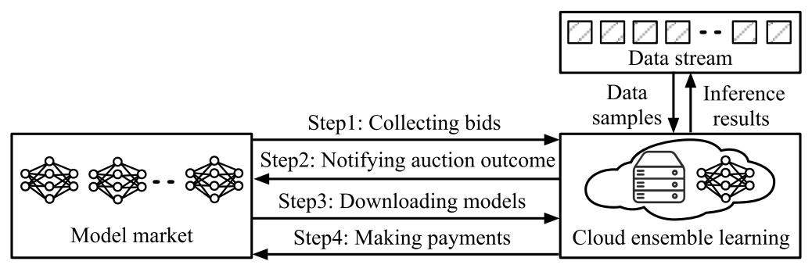</a><div class="artwork-note">原图保留 · 点击放大 · 图内英文标签见下方译注</div></figure>
<div class="pair caption" id="pair-fig-2-caption" data-block="fig-2-caption"><div class="source-left"><p>Fig. 2. System workflow in a single time slot.</p></div><div class="translation-right" id="zh-fig-2-caption"><p>图 2　单个<a class="term-ref" href="#term-time-slot" title="Time slot（时隙）：决策的时间单位，符号 t；数据样本在各时隙内到达。">时隙<span class="term-tip" role="tooltip">Time slot（时隙）：决策的时间单位，符号 t；数据样本在各时隙内到达。</span></a>内的系统工作流。</p><a class="page-link" href="source.pdf#page=3" target="_blank" aria-label="打开原 PDF 第 3 页">原 PDF p.3</a></div></div>
<figure id="fig-3"><a href="assets/figures/figure-03.png" target="_blank" title="查看原图">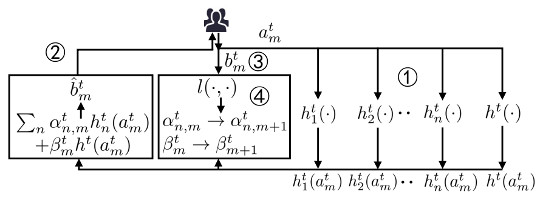</a><div class="artwork-note">原图保留 · 点击放大 · 图内英文标签见下方译注</div></figure>
<div class="pair caption" id="pair-fig-3-caption" data-block="fig-3-caption"><div class="source-left"><p>Fig. 3. Ensemble learning for a single data sample.</p></div><div class="translation-right" id="zh-fig-3-caption"><p>图 3　针对单个数据样本的<a class="term-ref" href="#term-ensemble-learning" title="Ensemble learning（集成学习）：把多个模型的推理结果按权重合并为一个联合结果，以提升精度与抗漂移能力。">集成学习<span class="term-tip" role="tooltip">Ensemble learning（集成学习）：把多个模型的推理结果按权重合并为一个联合结果，以提升精度与抗漂移能力。</span></a>。</p><a class="page-link" href="source.pdf#page=4" target="_blank" aria-label="打开原 PDF 第 4 页">原 PDF p.4</a></div></div>
<figure id="fig-4"><a href="assets/figures/figure-04.png" target="_blank" title="查看原图">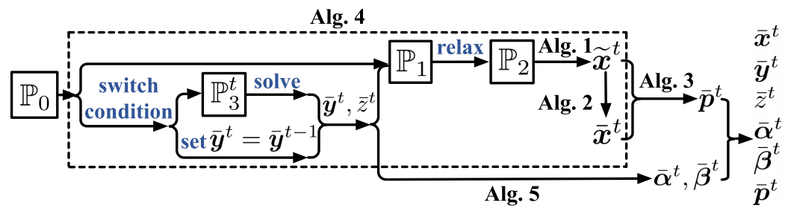</a><div class="artwork-note">原图保留 · 点击放大 · 图内英文标签见下方译注</div></figure>
<div class="pair caption" id="pair-fig-4-caption" data-block="fig-4-caption"><div class="source-left"><p>Fig. 4. Structure of our proposed approach.</p></div><div class="translation-right" id="zh-fig-4-caption"><p>图 4　本文所提方法的结构。</p><a class="page-link" href="source.pdf#page=5" target="_blank" aria-label="打开原 PDF 第 5 页">原 PDF p.5</a></div></div>
<section class="heading-pair minor" id="sec3-heading"><div class="source-left"><h3>III. BID SELECTION AND PAYMENT ALLOCATION</h3></div><div class="translation-right" id="zh-sec3-heading"><h3>第三节　投标选择与支付分配</h3></div></section>
<section class="heading-pair minor" id="sec3-sub-a"><div class="source-left"><h3>A. Algorithm 1: Selecting Fractional Bids</h3></div><div class="translation-right" id="zh-sec3-sub-a"><h3>A. 算法 1：选择分数式投标</h3></div></section>
<div class="pair paragraph" id="pair-sec3-001" data-block="sec3-001"><div class="source-left"><p>We note that if $y^t$ is given (which will be further described in Section IV-A), then we can actually extract the following problem $\mathcal{P}_1$ from the original problem $\mathcal{P}_0$:</p></div><div class="translation-right" id="zh-sec3-001"><p>我们注意到，若 $y^t$ 已给定（其确定方式见第四节 A），那么就可以从原问题 $\mathcal{P}_0$ 中提取出如下问题 $\mathcal{P}_1$：</p><a class="page-link" href="source.pdf#page=5" target="_blank" aria-label="打开原 PDF 第 5 页">原 PDF p.5</a></div></div>
<div class="pair equation" id="pair-eq-2" data-block="eq-002"><div class="source-left">$$
\mathcal P_1:\min\sum_t\sum_n x^t_n c^t_n, \tag{2}
$$</div><div class="translation-right" id="zh-eq-002">$$
\mathcal P_1:\min\sum_t\sum_n x^t_n c^t_n, \tag{2}
$$<a class="page-link" href="source.pdf#page=5" target="_blank" aria-label="打开原 PDF 第 5 页">原 PDF p.5</a></div></div>
<div class="pair equation" id="pair-eq-2a" data-block="eq-002a"><div class="source-left">$$
\text{s.t. }x^t_n\ge y^t_n,\quad\forall n\in\mathcal N,\ t\in\mathcal T, \tag{2a}
$$</div><div class="translation-right" id="zh-eq-002a">$$
\text{s.t. }x^t_n\ge y^t_n,\quad\forall n\in\mathcal N,\ t\in\mathcal T, \tag{2a}
$$<a class="page-link" href="source.pdf#page=5" target="_blank" aria-label="打开原 PDF 第 5 页">原 PDF p.5</a></div></div>
<div class="pair equation" id="pair-eq-2b" data-block="eq-002b"><div class="source-left">$$
\sum_n x^t_n\le Q^t,\quad\forall t\in\mathcal T, \tag{2b}
$$</div><div class="translation-right" id="zh-eq-002b">$$
\sum_n x^t_n\le Q^t,\quad\forall t\in\mathcal T, \tag{2b}
$$<a class="page-link" href="source.pdf#page=5" target="_blank" aria-label="打开原 PDF 第 5 页">原 PDF p.5</a></div></div>
<div class="pair equation" id="pair-eq-2c" data-block="eq-002c"><div class="source-left">$$
\frac{1}{T}\sum_t x^t_n\ge\phi_n,\quad\forall n\in\mathcal N,\qquad\text{var. }x^t_n\in\{0,1\},\ \forall n\in\mathcal N,\ \forall t\in\mathcal T. \tag{2c}
$$</div><div class="translation-right" id="zh-eq-002c">$$
\frac{1}{T}\sum_t x^t_n\ge\phi_n,\quad\forall n\in\mathcal N,\qquad\text{var. }x^t_n\in\{0,1\},\ \forall n\in\mathcal N,\ \forall t\in\mathcal T. \tag{2c}
$$<a class="page-link" href="source.pdf#page=5" target="_blank" aria-label="打开原 PDF 第 5 页">原 PDF p.5</a></div></div>
<div class="pair paragraph" id="pair-sec3-002" data-block="sec3-002"><div class="source-left"><p>For a concise presentation, we denote the objective function of $\mathcal{P}_1$ as $f^t(x^t)=\sum_n x^t_n c^t_n$. We also denote $g^t_n=\phi_n-x^t_n,\ \forall n\in\mathcal{N}$; $g^t(x^t)=[g^t_1,\dots,g^t_N]$; $h^t_n=x^t_n-y^t_n,\ \forall n\in\mathcal{N}$; $h^t(x^t)=[h^t_1,\dots,h^t_N]$; and $d^t(x^t)=\sum_n x^t_n-Q^t$. We can further relax the bid-selection control variables to the real domain, and thus transform $\mathcal{P}_1$ to a linear program. That is,</p></div><div class="translation-right" id="zh-sec3-002"><p>为表述简洁，我们把 $\mathcal{P}_1$ 的目标函数记为 $f^t(x^t)=\sum_n x^t_n c^t_n$。我们另记 $g^t_n=\phi_n-x^t_n,\ \forall n\in\mathcal{N}$；$g^t(x^t)=[g^t_1,\dots,g^t_N]$；$h^t_n=x^t_n-y^t_n,\ \forall n\in\mathcal{N}$；$h^t(x^t)=[h^t_1,\dots,h^t_N]$；以及 $d^t(x^t)=\sum_n x^t_n-Q^t$。进一步地，我们可以把<a class="term-ref" href="#term-bid-selection" title="Bid selection（投标选择）：决定哪些投标获胜；本文先用分数算法求解，再随机舍入为整数。">投标选择<span class="term-tip" role="tooltip">Bid selection（投标选择）：决定哪些投标获胜；本文先用分数算法求解，再随机舍入为整数。</span></a>的控制变量松弛到实数域，从而把 $\mathcal{P}_1$ 转化为一个线性规划，即</p><a class="page-link" href="source.pdf#page=5" target="_blank" aria-label="打开原 PDF 第 5 页">原 PDF p.5</a></div></div>
<div class="pair equation" id="pair-eq-3" data-block="eq-003"><div class="source-left">$$
\mathcal P_2:\min\sum_t f^t(x^t), \tag{3}
$$</div><div class="translation-right" id="zh-eq-003">$$
\mathcal P_2:\min\sum_t f^t(x^t), \tag{3}
$$<a class="page-link" href="source.pdf#page=5" target="_blank" aria-label="打开原 PDF 第 5 页">原 PDF p.5</a></div></div>
<div class="pair equation" id="pair-eq-3a" data-block="eq-003a"><div class="source-left">$$
\text{s.t. }h^t(x^t)\succeq 0, \tag{3a}
$$</div><div class="translation-right" id="zh-eq-003a">$$
\text{s.t. }h^t(x^t)\succeq 0, \tag{3a}
$$<a class="page-link" href="source.pdf#page=5" target="_blank" aria-label="打开原 PDF 第 5 页">原 PDF p.5</a></div></div>
<div class="pair equation" id="pair-eq-3b" data-block="eq-003b"><div class="source-left">$$
d^t(x^t)\le 0, \tag{3b}
$$</div><div class="translation-right" id="zh-eq-003b">$$
d^t(x^t)\le 0, \tag{3b}
$$<a class="page-link" href="source.pdf#page=5" target="_blank" aria-label="打开原 PDF 第 5 页">原 PDF p.5</a></div></div>
<div class="pair equation" id="pair-eq-3c" data-block="eq-003c"><div class="source-left">$$
\sum_t g^t(x^t)\preceq 0,\qquad\text{var. }x^t\in X=\{x^t\,|\,x^t_n\in[0,1],\ \forall n\in\mathcal N,\ \forall t\in\mathcal T\}. \tag{3c}
$$</div><div class="translation-right" id="zh-eq-003c">$$
\sum_t g^t(x^t)\preceq 0,\qquad\text{var. }x^t\in X=\{x^t\,|\,x^t_n\in[0,1],\ \forall n\in\mathcal N,\ \forall t\in\mathcal T\}. \tag{3c}
$$<a class="page-link" href="source.pdf#page=5" target="_blank" aria-label="打开原 PDF 第 5 页">原 PDF p.5</a></div></div>
<div class="pair paragraph" id="pair-sec3-003" data-block="sec3-003"><div class="source-left"><p>Solving the above problem $\mathcal{P}_2$ is equivalent to solving its min-max version as follows:</p></div><div class="translation-right" id="zh-sec3-003"><p>求解上述问题 $\mathcal{P}_2$ 等价于求解其如下极小–极大（min-max）形式：</p><a class="page-link" href="source.pdf#page=5" target="_blank" aria-label="打开原 PDF 第 5 页">原 PDF p.5</a></div></div>
<div class="pair equation" id="pair-eq-4" data-block="eq-004"><div class="source-left">$$
\min_{x}\max_{\lambda}\sum_t L^t(x^t,\lambda^t)=\sum_t f^t(x^t)+\sum_t\lambda^t g^t(x^t),\qquad\text{s.t. }h^t(x^t)\succeq 0,\ d^t(x^t)\le 0,\ x^t\in X, \tag{4}
$$</div><div class="translation-right" id="zh-eq-004">$$
\min_{x}\max_{\lambda}\sum_t L^t(x^t,\lambda^t)=\sum_t f^t(x^t)+\sum_t\lambda^t g^t(x^t),\qquad\text{s.t. }h^t(x^t)\succeq 0,\ d^t(x^t)\le 0,\ x^t\in X, \tag{4}
$$<a class="page-link" href="source.pdf#page=5" target="_blank" aria-label="打开原 PDF 第 5 页">原 PDF p.5</a></div></div>
<div class="pair paragraph" id="pair-sec3-004" data-block="sec3-004"><div class="source-left"><p>where $\lambda^t$ is the Lagrange multiplier at $t$, and the long-term constraint (3c) has been absorbed into the objective so that we do not have to worry about it at this point. Based on (4), we can now solve $\mathcal{P}_2$ on the fly at each $t+1$ by a standard dual ascent step to update the dual variable $\lambda^{t+1}$ as in (5), and a modified descent step to minimize $L^t(x,\lambda^{t+1})$ and obtain the fractional solution $\tilde{x}^{t+1}$ as in (6).</p></div><div class="translation-right" id="zh-sec3-004"><p>其中 $\lambda^t$ 是 $t$ 时刻的<a class="term-ref" href="#term-lagrangian" title="Lagrange multiplier（拉格朗日乘子）：符号 λ^t；对偶变量，用于把约束放入拉格朗日函数并在算法 1 中上升更新。">拉格朗日乘子<span class="term-tip" role="tooltip">Lagrange multiplier（拉格朗日乘子）：符号 λ^t；对偶变量，用于把约束放入拉格朗日函数并在算法 1 中上升更新。</span></a>，而长期约束 (3c) 已被吸收进目标函数，因此在此阶段无须再单独处理它。基于 (4)，我们现在可以在每个 $t+1$ 时刻<strong>即时</strong>求解 $\mathcal{P}_2$：先用标准的对偶上升步按式 (5) 更新对偶变量 $\lambda^{t+1}$，再用一个修正的下降步最小化 $L^t(x,\lambda^{t+1})$，并按式 (6) 得到分数解 $\tilde{x}^{t+1}$。</p><a class="page-link" href="source.pdf#page=5" target="_blank" aria-label="打开原 PDF 第 5 页">原 PDF p.5</a></div></div>
<div class="pair equation" id="pair-eq-5" data-block="eq-005"><div class="source-left">$$
\lambda^{t+1}=\left[\lambda^t+\eta\nabla_{\lambda}L^t(\tilde{x}^t,\lambda^t)\right]^+, \tag{5}
$$</div><div class="translation-right" id="zh-eq-005">$$
\lambda^{t+1}=\left[\lambda^t+\eta\nabla_{\lambda}L^t(\tilde{x}^t,\lambda^t)\right]^+, \tag{5}
$$<a class="page-link" href="source.pdf#page=5" target="_blank" aria-label="打开原 PDF 第 5 页">原 PDF p.5</a></div></div>
<div class="pair paragraph" id="pair-sec3-005" data-block="sec3-005"><div class="source-left"><p>where $\eta&gt;0$ is the step size; $\nabla_{\lambda}L^t(\tilde{x}^t,\lambda^t)$ is the gradient of $L^t(\tilde{x}^t,\lambda)$ given $\lambda=\lambda^t$; and $\tilde{x}^t$ is the fractional solution previously solved at $t$.</p></div><div class="translation-right" id="zh-sec3-005"><p>其中 $\eta&gt;0$ 是步长；$\nabla_{\lambda}L^t(\tilde{x}^t,\lambda^t)$ 是在 $\lambda=\lambda^t$ 处 $L^t(\tilde{x}^t,\lambda)$ 的梯度；$\tilde{x}^t$ 是在 $t$ 时刻此前求得的分数解。</p><a class="page-link" href="source.pdf#page=5" target="_blank" aria-label="打开原 PDF 第 5 页">原 PDF p.5</a></div></div>
<div class="pair equation" id="pair-eq-6" data-block="eq-006"><div class="source-left">$$
\min\nabla f^t(\tilde{x}^t)(x-\tilde{x}^t)+\lambda^{t+1}g^t(x)+\frac{1}{2\gamma}\|x-\tilde{x}^t\|^2,\qquad\text{s.t. }h^t(x)\succeq 0,\ d^t(x)\le 0,\ x\in X, \tag{6}
$$</div><div class="translation-right" id="zh-eq-006">$$
\min\nabla f^t(\tilde{x}^t)(x-\tilde{x}^t)+\lambda^{t+1}g^t(x)+\frac{1}{2\gamma}\|x-\tilde{x}^t\|^2,\qquad\text{s.t. }h^t(x)\succeq 0,\ d^t(x)\le 0,\ x\in X, \tag{6}
$$<a class="page-link" href="source.pdf#page=5" target="_blank" aria-label="打开原 PDF 第 5 页">原 PDF p.5</a></div></div>
<div class="pair paragraph" id="pair-sec3-006" data-block="sec3-006"><div class="source-left"><p>where $\gamma$ is a predefined constant and $\nabla f^t(\tilde{x}^t)$ is the gradient of $f^t(x)$ at $x=\tilde{x}^t$. This can be called a Modified Online Saddle-Point (MOSP) method [38]. MOSP differs from Online Mirror Descent (OMD), since standard OMD does not involve primal-dual updates [52], [53], but primal-dual-related OMD and its variants do not often capture either the constraint violation or the long-term time-varying constraints [54], [55], [56], [57], [58], [59], [60]. MOSP also relates to constrained online learning, as the latter focuses on the long-term time-invariant constraints [61], [62], [63], [64] or the static regret [65], [66], [67], [68]. Algorithm 1 follows exactly the above idea. Through such alternate descent-ascent steps, we solve for $x^{t+1}$ and $\lambda^{t+1}$ at each $t+1$ using only the inputs that have been known before $t+1$ rather than the unknowable future information beyond (and including) $t+1$. $L^t(x,\lambda^{t+1})$ is approximated by $\nabla f^t(\tilde{x}^t)(x-\tilde{x}^t)+\lambda^{t+1}g^t(x)$, and $\frac{1}{2\gamma}\|x-\tilde{x}^t\|^2$ is a regularization and proximal term. The problem (6) is solvable using standard convex optimization solvers which can find the $\nu$-accurate optimal solution in $O(N^2\log(1/\nu))$ time [69] via the interior-point method, for example.</p></div><div class="translation-right" id="zh-sec3-006"><p>其中 $\gamma$ 是预设常数，$\nabla f^t(\tilde{x}^t)$ 是 $f^t(x)$ 在 $x=\tilde{x}^t$ 处的梯度。这可以称为<strong>修正在线鞍点（MOSP）方法</strong> [38]。MOSP 与<a class="term-ref" href="#term-omd" title="Online mirror descent (OMD)（在线镜像下降）：一类在线凸优化方法；本文指出其变体往往无法同时刻画切换成本与长期参与。">在线镜像下降<span class="term-tip" role="tooltip">Online mirror descent (OMD)（在线镜像下降）：一类在线凸优化方法；本文指出其变体往往无法同时刻画切换成本与长期参与。</span></a>（OMD）不同：标准 OMD 不含原始–对偶更新 [52], [53]，而与原始–对偶相关的 OMD 及其变体往往既无法刻画约束违反量，也无法处理长期的时变约束 [54], [55], [56], [57], [58], [59], [60]。MOSP 也与受约束在线学习相关，但后者关注的是长期<strong>时不变</strong>约束 [61], [62], [63], [64] 或静态遗憾 [65], [66], [67], [68]。算法 1 正是按上述思路工作的。通过这种交替的下降–上升步骤，我们在每个 $t+1$ 求解 $x^{t+1}$ 与 $\lambda^{t+1}$ 时，只使用 $t+1$ 之前已知的输入，而不使用 $t+1$（含）之后不可知的未来信息。$L^t(x,\lambda^{t+1})$ 由 $\nabla f^t(\tilde{x}^t)(x-\tilde{x}^t)+\lambda^{t+1}g^t(x)$ 近似，而 $\frac{1}{2\gamma}\|x-\tilde{x}^t\|^2$ 是正则化与近似项。问题 (6) 可用标准凸优化求解器求解，例如通过内点法在 $O(N^2\log(1/\nu))$ 时间内找到 $\nu$-精确最优解 [69]。</p><a class="page-link" href="source.pdf#page=5" target="_blank" aria-label="打开原 PDF 第 5 页">原 PDF p.5</a></div></div>
<aside class="translator-note blue" id="note-sec3-01"><div class="note-label">译者 · 数学、算法与核对</div><div id="zh-note-sec3-01"><p><strong>从 $\mathcal{P}_0$ 到式 (6)：把一条跨期约束“吸”进目标函数的三步。</strong><br><strong>① 分解（$\mathcal{P}_0\to\mathcal{P}_1$）</strong>：把与 $y$、$z$、$\alpha$、$\beta$、损失相关的项暂时剥离，只留 $\sum_t\sum_n x^t_nc^t_n$，并把 (1a)–(1f) 中与 $x$ 有关的约束（(1b)、(1f)、(1g)）留下，这就是 (2)(2a)–(2c)。<br><strong>② 松弛（$\mathcal{P}_1\to\mathcal{P}_2$）</strong>：把 $x^t_n\in\{0,1\}$ 松弛为 $[0,1]$，问题变成线性规划 (3)。这一步<strong>故意允许“买 0.7 份”</strong>，为后面的<a class="term-ref" href="#term-randomized-rounding" title="Randomized rounding（随机舍入）：把分数决策按概率转换为 0/1 整数决策，且保持期望不变、不破坏剩余约束。">随机舍入<span class="term-tip" role="tooltip">Randomized rounding（随机舍入）：把分数决策按概率转换为 0/1 整数决策，且保持期望不变、不破坏剩余约束。</span></a>留出空间。<br><strong>③ 拉格朗日化（$\mathcal{P}_2\to$ (4)）</strong>：把长期约束 (3c) 用乘子 $\lambda^t$ 搬进目标，于是只需交替更新 $x$（下降）与 $\lambda$（上升）。<br><strong>为什么这么绕</strong>：因为 (3c) 是<em>跨 T 期</em>的，任何逐期贪婪都无法保证它；而把乘子也当作在线变量一起更新，就能在只看历史信息的前提下逐步逼近可行。代价是 (3c) 只被<em>渐近</em>满足——这正是后文要用“<a class="term-ref" href="#term-dynamic-fit" title="Dynamic fit（动态拟合）：长期参与约束的累计违反量；本文证明其同样次线性，即长期参与终将满足。">动态拟合<span class="term-tip" role="tooltip">Dynamic fit（动态拟合）：长期参与约束的累计违反量；本文证明其同样次线性，即长期参与终将满足。</span></a>”来量化其违反量的原因。</p></div></aside>
<div class="pair pseudocode" id="pair-alg-1" data-block="alg-1"><div class="source-left"><pre>Algorithm 1  Online Fractional Algorithm

Input : Fractional solution x~^t, dual solution lambda^t, and y^t
Output: Fractional solution x~^(t+1)

1  Initial: lambda^1 = 0, eta &gt; 0
2  Calculate lambda^(t+1) based on (5);
3  Calculate x~^(t+1) by solving the problem (6) optimally;</pre></div><div class="translation-right" id="zh-alg-1"><pre>算法 1　在线分数算法

输入：分数解 x~^t、对偶解 lambda^t、以及 y^t
输出：分数解 x~^(t+1)

1  初始化：lambda^1 = 0，eta &gt; 0
2  依式 (5) 计算 lambda^(t+1)；
3  通过最优求解问题 (6) 计算 x~^(t+1)；</pre><a class="page-link" href="source.pdf#page=5" target="_blank" aria-label="打开原 PDF 第 5 页">原 PDF p.5</a></div></div>
<section class="heading-pair minor" id="sec3-sub-b"><div class="source-left"><h3>B. Algorithm 2: Converting Fractional Bids to Integral Bids</h3></div><div class="translation-right" id="zh-sec3-sub-b"><h3>B. 算法 2：把分数式投标转换为整数投标</h3></div></section>
<div class="pair paragraph" id="pair-sec3-007" data-block="sec3-007"><div class="source-left"><p>Algorithm 2 converts the fractional bid-selection decisions from Algorithm 1 into integers through a randomized rounding process without violating the constraints (2a) and (2b) during rounding while ensuring the expectation of each integer after rounding equals the corresponding fraction before rounding. Such expectation preservation is important for Algorithm 3.</p></div><div class="translation-right" id="zh-sec3-007"><p>算法 2 通过<a class="term-ref" href="#term-randomized-rounding" title="Randomized rounding（随机舍入）：把分数决策按概率转换为 0/1 整数决策，且保持期望不变、不破坏剩余约束。">随机舍入<span class="term-tip" role="tooltip">Randomized rounding（随机舍入）：把分数决策按概率转换为 0/1 整数决策，且保持期望不变、不破坏剩余约束。</span></a>过程，把算法 1 得到的分数式<a class="term-ref" href="#term-bid-selection" title="Bid selection（投标选择）：决定哪些投标获胜；本文先用分数算法求解，再随机舍入为整数。">投标选择<span class="term-tip" role="tooltip">Bid selection（投标选择）：决定哪些投标获胜；本文先用分数算法求解，再随机舍入为整数。</span></a>决策转换为整数，且在舍入过程中不违反约束 (2a) 与 (2b)，同时保证舍入后每个整数的期望等于舍入前对应的分数值。<strong>这种期望保持对算法 3 至关重要。</strong></p><a class="page-link" href="source.pdf#page=5" target="_blank" aria-label="打开原 PDF 第 5 页">原 PDF p.5</a></div></div>
<div class="pair pseudocode" id="pair-alg-2" data-block="alg-2"><div class="source-left"><pre>Algorithm 2  Randomized Rounding Algorithm

Input : Fractions [x~^t_1, ..., x~^t_N]
Output: Integers [x_bar^t_1, ..., x_bar^t_N]

 1  &gt; Fractions scaling
 2  Denote W~^t = [x~^t_1, ..., x~^t_N], eps = 1^T W~^t;
 3  omega_1 = ceil(eps)/eps, omega_2 = floor(eps)/eps;
 4  X~&#x27;^t = [omega_1 * x~^t_1, ..., omega_1 * x~^t_N]  with probability eps - floor(eps)
            [omega_2 * x~^t_1, ..., omega_2 * x~^t_N]  with probability ceil(eps) - eps
 5  Define N&#x27; = N \ {n | x~&#x27;^t_n in {0,1}};
 6  &gt; Fractions rounding
 7  while N&#x27; != empty do
 8      Select n_1, n_2 in N&#x27;, n_1 != n_2;
 9      phi_1 = min{1 - x~&#x27;^t_{n_1}, x~&#x27;^t_{n_2}}, phi_2 = min{1 - x~&#x27;^t_{n_2}, x~&#x27;^t_{n_1}};
10      (x~&#x27;&#x27;^t_{n_1}, x~&#x27;&#x27;^t_{n_2}) = (x~&#x27;^t_{n_1} + phi_1, x~&#x27;^t_{n_2} - phi_1)  with probability phi_2/(phi_1+phi_2)
                                     (x~&#x27;^t_{n_1} - phi_2, x~&#x27;^t_{n_2} + phi_2)  with probability phi_1/(phi_1+phi_2)
11      if x~&#x27;&#x27;^t_{n_1} in {0,1} then x_bar^t_{n_1} = x~&#x27;&#x27;^t_{n_1}, N&#x27; = N&#x27; \ {n_1};
12      else set x~&#x27;^t_{n_1} = x~&#x27;&#x27;^t_{n_1};
13      if x~&#x27;&#x27;^t_{n_2} in {0,1} then x_bar^t_{n_2} = x~&#x27;&#x27;^t_{n_2}, N&#x27; = N&#x27; \ {n_2};
14      else set x~&#x27;^t_{n_2} = x~&#x27;&#x27;^t_{n_2};</pre></div><div class="translation-right" id="zh-alg-2"><pre>算法 2　随机舍入算法

输入：分数 [x~^t_1, ..., x~^t_N]
输出：整数 [x_bar^t_1, ..., x_bar^t_N]

 1  ▷ 分数缩放
 2  记 W~^t = [x~^t_1, ..., x~^t_N]，eps = 1^T W~^t；
 3  omega_1 = ceil(eps)/eps，omega_2 = floor(eps)/eps；
 4  X~&#x27;^t = [omega_1 * x~^t_1, ..., omega_1 * x~^t_N]   以概率 eps - floor(eps)
            [omega_2 * x~^t_1, ..., omega_2 * x~^t_N]   以概率 ceil(eps) - eps
 5  定义 N&#x27; = N \ {n | x~&#x27;^t_n ∈ {0,1}}；
 6  ▷ 分数舍入
 7  while N&#x27; != 空 do
 8      选取 n_1, n_2 ∈ N&#x27;，n_1 != n_2；
 9      phi_1 = min{1 - x~&#x27;^t_{n_1}, x~&#x27;^t_{n_2}}，phi_2 = min{1 - x~&#x27;^t_{n_2}, x~&#x27;^t_{n_1}}；
10      (x~&#x27;&#x27;^t_{n_1}, x~&#x27;&#x27;^t_{n_2}) = (x~&#x27;^t_{n_1} + phi_1, x~&#x27;^t_{n_2} - phi_1)   以概率 phi_2/(phi_1+phi_2)
                                     (x~&#x27;^t_{n_1} - phi_2, x~&#x27;^t_{n_2} + phi_2)   以概率 phi_1/(phi_1+phi_2)
11      if x~&#x27;&#x27;^t_{n_1} ∈ {0,1} then x_bar^t_{n_1} = x~&#x27;&#x27;^t_{n_1}，N&#x27; = N&#x27; \ {n_1}；
12      else 置 x~&#x27;^t_{n_1} = x~&#x27;&#x27;^t_{n_1}；
13      if x~&#x27;&#x27;^t_{n_2} ∈ {0,1} then x_bar^t_{n_2} = x~&#x27;&#x27;^t_{n_2}，N&#x27; = N&#x27; \ {n_2}；
14      else 置 x~&#x27;^t_{n_2} = x~&#x27;&#x27;^t_{n_2}；</pre><a class="page-link" href="source.pdf#page=5" target="_blank" aria-label="打开原 PDF 第 5 页">原 PDF p.5</a></div></div>
<aside class="translator-note blue" id="note-sec3-02"><div class="note-label">译者 · 数学、算法与核对</div><div id="zh-note-sec3-02"><p><strong>第 10 行的两个概率是怎么定出来的（原文未给推导，这里补上）。</strong> 记 $p$ 为取第一支 $(+\phi_1,-\phi_1)$ 的概率，则<br>$\mathbb{E}[\tilde{x}&#x27;&#x27;^t_{n_1}]=p(\tilde{x}&#x27;^t_{n_1}+\phi_1)+(1-p)(\tilde{x}&#x27;^t_{n_1}-\phi_2)=\tilde{x}&#x27;^t_{n_1}+p\phi_1-(1-p)\phi_2$。<br>要<strong>保持期望不变</strong>，需 $p\phi_1=(1-p)\phi_2$，解得 $p=\phi_2/(\phi_1+\phi_2)$。<br>因此第一支概率为 $\phi_2/(\phi_1+\phi_2)$，第二支 $(-\phi_2,+\phi_2)$ 为 $\phi_1/(\phi_1+\phi_2)$。我按这一推导填写伪代码：原文该处因两列排版导致分子分母错位，抽取文本中两个概率都读作 $\phi_1/(\phi_1+\phi_2)$，与“期望保持”矛盾，<strong>不能照录</strong>；此处属据数学约束反推，已在数学复核中标注。</p></div></aside>
<div class="pair paragraph" id="pair-sec3-008" data-block="sec3-008"><div class="source-left"><p>Fractions scaling as in Lines 2~5 adjusts the fractions and ensures that the sum of the fractions after adjusting equals an integer. In Line 4, after adjusting, each column of $\tilde{W}^t$ either increases by multiplying $\omega_1&gt;1$ or decreases by multiplying $\omega_2&lt;1$. Thus, we have $\mathbb{E}[\tilde{X}&#x27;^t]=\frac{\lceil\epsilon\rceil}{\epsilon}\tilde{W}^t\cdot(\epsilon-\lfloor\epsilon\rfloor)+\frac{\lfloor\epsilon\rfloor}{\epsilon}\tilde{W}^t\cdot(\lceil\epsilon\rceil-\epsilon)=(\lceil\epsilon\rceil-\lfloor\epsilon\rfloor)\tilde{W}^t=\tilde{W}^t$. We should mention that the sum of $\tilde{x}^t_n$ increases to at most $\lceil\epsilon\rceil$, and $Q^t$ is an integer, so (2b) still holds after adjusting; and (2a) always holds.</p></div><div class="translation-right" id="zh-sec3-008"><p>第 2∼5 行的分数缩放会调整分数，并保证调整后各分数之和为整数。在第 4 行，调整后 $\tilde{W}^t$ 的每一列要么乘以 $\omega_1&gt;1$ 而增大，要么乘以 $\omega_2&lt;1$ 而减小。于是有 $\mathbb{E}[\tilde{X}&#x27;^t]=\frac{\lceil\epsilon\rceil}{\epsilon}\tilde{W}^t\cdot(\epsilon-\lfloor\epsilon\rfloor)+\frac{\lfloor\epsilon\rfloor}{\epsilon}\tilde{W}^t\cdot(\lceil\epsilon\rceil-\epsilon)=(\lceil\epsilon\rceil-\lfloor\epsilon\rfloor)\tilde{W}^t=\tilde{W}^t$。需要指出，$\tilde{x}^t_n$ 之和最多增大到 $\lceil\epsilon\rceil$，而 $Q^t$ 是整数，因此调整后 (2b) 仍然成立；(2a) 则始终成立。</p><a class="page-link" href="source.pdf#page=6" target="_blank" aria-label="打开原 PDF 第 6 页">原 PDF p.6</a></div></div>
<aside class="translator-note blue" id="note-sec3-03"><div class="note-label">译者 · 数学、算法与核对</div><div id="zh-note-sec3-03"><p><strong>这一步为什么“不会越界”（原文的推理细节）。</strong> 缩放把 $\sum_n\tilde{x}^t_n=\epsilon$ 抬到至多 $\lceil\epsilon\rceil$。因为购买约束是 $\sum_n x^t_n\le Q^t$ 且 $Q^t$ 为整数，而缩放前有 $\epsilon\le Q^t$，于是 $\lceil\epsilon\rceil\le Q^t$（$\epsilon\le Q^t$ 且 $Q^t$ 为整数 $\Rightarrow$ $\lceil\epsilon\rceil\le Q^t$）——所以 (2b) 不会被破坏。这是“<strong>先抬后舍</strong>”这一顺序的必要性：若先舍入再缩放，就可能越过 $Q^t$。</p></div></aside>
<div class="pair paragraph" id="pair-sec3-009" data-block="sec3-009"><div class="source-left"><p>Fractions rounding as in Lines 7~14 iteratively selects a pair of fractions and converts at least one of them into an integer in each iteration. Since the sum of all columns is an integer beforehand due to the previous step, it can be guaranteed that $\tilde{X}&#x27;^t$ as a vector only contains 0 and 1 after the loop. In Line 10, the sum is preserved, because $\tilde{x}&#x27;&#x27;^t_{n_1}+\tilde{x}&#x27;&#x27;^t_{n_2}=(\tilde{x}&#x27;^t_{n_1}+\phi_1)+(\tilde{x}&#x27;^t_{n_2}-\phi_1)=\tilde{x}&#x27;^t_{n_1}+\tilde{x}&#x27;^t_{n_2}$, for example. Also, the expectation is preserved. We note that Lines 9 and 10 guarantee that in each iteration of the loop at least one fraction will be rounded to either 0 or 1. This fractions rounding phase borrows the idea of dependent rounding [70]. The time complexity of Algorithm 2 is $O(N)$.</p></div><div class="translation-right" id="zh-sec3-009"><p>第 7∼14 行的分数舍入迭代地选取一对分数，并在每次迭代中把其中至少一个转换为整数。由于上一步之后所有列之和已是整数，因此可以保证循环结束后向量 $\tilde{X}&#x27;^t$ 只含 0 与 1。第 10 行保持了总和，因为例如 $\tilde{x}&#x27;&#x27;^t_{n_1}+\tilde{x}&#x27;&#x27;^t_{n_2}=(\tilde{x}&#x27;^t_{n_1}+\phi_1)+(\tilde{x}&#x27;^t_{n_2}-\phi_1)=\tilde{x}&#x27;^t_{n_1}+\tilde{x}&#x27;^t_{n_2}$。同时，期望也被保持。我们注意到第 9 行与第 10 行保证：循环的每次迭代中至少有一个分数会被舍入为 0 或 1。该分数舍入阶段借鉴了<strong>相依舍入</strong>（dependent rounding）的思想 [70]。算法 2 的时间复杂度为 $O(N)$。</p><a class="page-link" href="source.pdf#page=6" target="_blank" aria-label="打开原 PDF 第 6 页">原 PDF p.6</a></div></div>
<section class="heading-pair minor" id="sec3-sub-c"><div class="source-left"><h3>C. Algorithm 3: Allocating Payment</h3></div><div class="translation-right" id="zh-sec3-sub-c"><h3>C. 算法 3：支付分配</h3></div></section>
<div class="pair paragraph" id="pair-sec3-010" data-block="sec3-010"><div class="source-left"><p>Algorithm 3 calculates the payments to the winning bids output by Algorithm 2. Following the sufficient and necessary conditions for a randomized auction to be both truthful and individually rational [71], which will be formally defined in Section III-E, we use Line 2 to calculate the payment to the winning bids. Our auction at each time slot $t$ has become a randomized auction due to Algorithm 2. We note that the fractional solution $\tilde{x}^t_n$ can be considered as a function of $c^t_n$ and $c^t_{-n}$, where the former is the bidding price reported by the bid $n$ and the latter is what is reported by all the other bids, because the value of $\tilde{x}^t_n$ is calculated by Algorithm 1 using $c^t_n$ and $c^t_{-n}$ as the inputs. In other words, Algorithm 1 can be considered as the mapping from $c^t_n$ and $c^t_{-n}$ to $\tilde{x}^t_n$. In a function format, we can just write $\tilde{x}^t_n(c^t_n,c^t_{-n})$.</p></div><div class="translation-right" id="zh-sec3-010"><p>算法 3 计算对算法 2 输出的获胜投标的支付。依据“随机<a class="term-ref" href="#term-auction" title="Auction（拍卖）：本文用重复拍卖决定购买哪些模型并决定支付，以替代直接定价。">拍卖<span class="term-tip" role="tooltip">Auction（拍卖）：本文用重复拍卖决定购买哪些模型并决定支付，以替代直接定价。</span></a>同时满足<a class="term-ref" href="#term-truthfulness" title="Truthfulness（真实性）：竞标者不如实报价无法提高自身效用；本文证明其在期望意义下成立。">真实性<span class="term-tip" role="tooltip">Truthfulness（真实性）：竞标者不如实报价无法提高自身效用；本文证明其在期望意义下成立。</span></a>与<a class="term-ref" href="#term-individual-rationality" title="Individual rationality（个体理性）：无论拍卖结果如何，参与者的效用都不会变差，即参与不会吃亏。">个体理性<span class="term-tip" role="tooltip">Individual rationality（个体理性）：无论拍卖结果如何，参与者的效用都不会变差，即参与不会吃亏。</span></a>”的充要条件 [71]（该条件将在第三节 E 中正式定义），我们用第 2 行计算对获胜投标的支付。由于算法 2，我们在每个<a class="term-ref" href="#term-time-slot" title="Time slot（时隙）：决策的时间单位，符号 t；数据样本在各时隙内到达。">时隙<span class="term-tip" role="tooltip">Time slot（时隙）：决策的时间单位，符号 t；数据样本在各时隙内到达。</span></a> $t$ 的<a class="term-ref" href="#term-auction" title="Auction（拍卖）：本文用重复拍卖决定购买哪些模型并决定支付，以替代直接定价。">拍卖<span class="term-tip" role="tooltip">Auction（拍卖）：本文用重复拍卖决定购买哪些模型并决定支付，以替代直接定价。</span></a>已成为<strong>随机<a class="term-ref" href="#term-auction" title="Auction（拍卖）：本文用重复拍卖决定购买哪些模型并决定支付，以替代直接定价。">拍卖<span class="term-tip" role="tooltip">Auction（拍卖）：本文用重复拍卖决定购买哪些模型并决定支付，以替代直接定价。</span></a></strong>。我们注意到，分数解 $\tilde{x}^t_n$ 可以视为 $c^t_n$ 与 $c^t_{-n}$ 的函数：前者是投标 $n$ 报告的竞价，后者是其他所有投标报告的竞价；因为 $\tilde{x}^t_n$ 的值正是算法 1 以 $c^t_n$ 与 $c^t_{-n}$ 为输入计算得到的。换言之，算法 1 可视为从 $c^t_n$ 与 $c^t_{-n}$ 到 $\tilde{x}^t_n$ 的映射。写成函数形式，即 $\tilde{x}^t_n(c^t_n,c^t_{-n})$。</p><a class="page-link" href="source.pdf#page=6" target="_blank" aria-label="打开原 PDF 第 6 页">原 PDF p.6</a></div></div>
<div class="pair pseudocode" id="pair-alg-3" data-block="alg-3"><div class="source-left"><pre>Algorithm 3  Payment Allocation Algorithm

Input : [x_bar^t_1, ..., x_bar^t_N]
Output: Payment p^t_n, for all n

1  for n, where x_bar^t_n = 1 do
2      Set p^t_n = c^t_n * x~^t_n(c^t_n, c^t_-n) + integral from c^t_n to chi^t_n of x~^t_n(c, c^t_-n) dc,
       where chi^t_n = x~^t_n / gamma + 2 * lambda^(t+1)_n;
3  for n, where x_bar^t_n = 0 do
4      Set p^t_n = 0;</pre></div><div class="translation-right" id="zh-alg-3"><pre>算法 3　支付分配算法

输入：[x_bar^t_1, ..., x_bar^t_N]
输出：支付 p^t_n，对所有 n

1  for n，其中 x_bar^t_n = 1 do
2      置 p^t_n = c^t_n * x~^t_n(c^t_n, c^t_-n) + 从 c^t_n 到 chi^t_n 对 x~^t_n(c, c^t_-n) dc 的积分，
       其中 chi^t_n = x~^t_n / gamma + 2 * lambda^(t+1)_n；
3  for n，其中 x_bar^t_n = 0 do
4      置 p^t_n = 0；</pre><a class="page-link" href="source.pdf#page=6" target="_blank" aria-label="打开原 PDF 第 6 页">原 PDF p.6</a></div></div>
<div class="pair paragraph" id="pair-sec3-011" data-block="sec3-011"><div class="source-left"><p>In Line 2 of Algorithm 3, to calculate the integral, we need to vary the value of $c^t_n$, simply denoted as $c$ here, keep $c^t_{-n}$, and invoke Algorithm 1 to calculate the corresponding $\tilde{x}^t_n$. The integration interval&#x27;s upper limit $\chi^t_n$ needs to be set to satisfy the requirements in Theorem 2 which will be stated later. Specifically, we need to find out the value of $\chi^t_n$ for $n$ at $t$, such that $\int_0^{\chi^t_n}\tilde{x}^t_n(c,c^t_{-n})dc&lt;\infty$ and $\int_{\chi^t_n}^{\infty}\tilde{x}^t_n(c,c^t_{-n})dc=0$. Toward that end, we focus on the problem (6), whose objective function is as follows, where $x^{t+1}_n,\forall n$ are the decision variables and $\lambda^{t+1}_n,\forall n$ come from (5): $\sum_n(c^t_n(x^{t+1}_n-\tilde{x}^t_n)+\lambda^{t+1}_n(\phi_n-2x^{t+1}_n+y^{t+1}_n)+\frac{(x^{t+1}_n-\tilde{x}^t_n)^2}{2\gamma})$.</p></div><div class="translation-right" id="zh-sec3-011"><p>在算法 3 的第 2 行，为计算该积分，我们需要改变 $c^t_n$ 的取值（此处简记为 $c$），保持 $c^t_{-n}$ 不变，并调用算法 1 计算相应的 $\tilde{x}^t_n$。积分区间的上限 $\chi^t_n$ 的设置需满足后文定理 2 的要求。具体而言，我们需要找出 $t$ 时刻 $n$ 的 $\chi^t_n$ 取值，使得 $\int_0^{\chi^t_n}\tilde{x}^t_n(c,c^t_{-n})dc&lt;\infty$ 且 $\int_{\chi^t_n}^{\infty}\tilde{x}^t_n(c,c^t_{-n})dc=0$。为此，我们聚焦问题 (6)，其目标函数如下，其中 $x^{t+1}_n,\forall n$ 是决策变量，而 $\lambda^{t+1}_n,\forall n$ 来自式 (5)：$\sum_n(c^t_n(x^{t+1}_n-\tilde{x}^t_n)+\lambda^{t+1}_n(\phi_n-2x^{t+1}_n+y^{t+1}_n)+\frac{(x^{t+1}_n-\tilde{x}^t_n)^2}{2\gamma})$。</p><a class="page-link" href="source.pdf#page=6" target="_blank" aria-label="打开原 PDF 第 6 页">原 PDF p.6</a></div></div>
<div class="pair paragraph" id="pair-sec3-012" data-block="sec3-012"><div class="source-left"><p>Note that this is a summation of a series of quadratic functions. For each $n$, we desire that, in the interval $[0,1]$, its optimal $x^{t+1}_n$ is 0. From the geometric image, we know that this can only be achieved when the vertical symmetry axis of the quadratic function falls on the non-positive half of the horizontal real axis. That is, we require $\tilde{x}^t_n-\gamma c^t_n+2\gamma\lambda^{t+1}_n\le 0$, i.e., $c^t_n\ge\frac{\tilde{x}^t_n}{\gamma}+2\lambda^{t+1}_n$. Then we conclude that $\chi^t_n=\frac{\tilde{x}^t_n}{\gamma}+2\lambda^{t+1}_n$. The time complexity of Algorithm 3 is $O(N^3 i\log(1/\nu))$, where $i$ is the number of segments when dividing the range of $\chi^t_n-c^t_n$ for calculating the integral numerically.</p></div><div class="translation-right" id="zh-sec3-012"><p>注意这是若干二次函数之和。对每个 $n$，我们希望其在区间 $[0,1]$ 上的最优 $x^{t+1}_n$ 为 0。从几何图像可知，只有当该二次函数的竖直对称轴落在水平实轴的非正半轴上时才可实现，即要求 $\tilde{x}^t_n-\gamma c^t_n+2\gamma\lambda^{t+1}_n\le 0$，亦即 $c^t_n\ge\frac{\tilde{x}^t_n}{\gamma}+2\lambda^{t+1}_n$。于是我们得出 $\chi^t_n=\frac{\tilde{x}^t_n}{\gamma}+2\lambda^{t+1}_n$。算法 3 的时间复杂度为 $O(N^3 i\log(1/\nu))$，其中 $i$ 是数值计算积分时为划分 $\chi^t_n-c^t_n$ 范围所取的段数。</p><a class="page-link" href="source.pdf#page=6" target="_blank" aria-label="打开原 PDF 第 6 页">原 PDF p.6</a></div></div>
<aside class="translator-note blue" id="note-sec3-04"><div class="note-label">译者 · 数学、算法与核对</div><div id="zh-note-sec3-04"><p><strong>$\chi^t_n$ 的几何推导（原文一句话带过，这里展开）。</strong> 把 (6) 中与单个 $n$ 有关的部分写成 $x=x^{t+1}_n$ 的二次函数：<br>$g(x)=c^t_n(x-\tilde{x}^t_n)+\lambda^{t+1}_n(\phi_n-2x+y^{t+1}_n)+\frac{(x-\tilde{x}^t_n)^2}{2\gamma}$。<br>二次项系数 $\frac{1}{2\gamma}&gt;0$，故开口向上；对称轴在 $x^*=\tilde{x}^t_n-\gamma c^t_n+2\gamma\lambda^{t+1}_n$。<br>在 $[0,1]$ 上最优解为 $x=0$ 的充要条件是对称轴不超过 0，即 $x^*\le0$ $\Leftrightarrow$ $c^t_n\ge\frac{\tilde{x}^t_n}{\gamma}+2\lambda^{t+1}_n$。<br>因此当 $c$ 增大到 $\chi^t_n=\frac{\tilde{x}^t_n}{\gamma}+2\lambda^{t+1}_n$ 时 $\tilde{x}^t_n(c,\cdot)=0$，积分的尾部自然为零，这正是定理 2 条件 (ii) 所要求的。</p></div></aside>
<section class="heading-pair minor" id="sec3-sub-d"><div class="source-left"><h3>D. Regret and Fit Analysis</h3></div><div class="translation-right" id="zh-sec3-sub-d"><h3>D. 遗憾与拟合分析</h3></div></section>
<div class="pair paragraph" id="pair-sec3-013" data-block="sec3-013"><div class="source-left"><p>We define and adopt the dynamic regret and the dynamic fit as the performance metrics. We prove that the dynamic regret and the dynamic fit of our algorithms grow only sub-linearly along with the length of the entire time horizon.</p></div><div class="translation-right" id="zh-sec3-013"><p>我们定义并采用<strong><a class="term-ref" href="#term-dynamic-regret" title="Dynamic regret（动态遗憾）：在线投标成本与逐期离线最优成本之差；本文证明其相对时隙数是次线性的。">动态遗憾<span class="term-tip" role="tooltip">Dynamic regret（动态遗憾）：在线投标成本与逐期离线最优成本之差；本文证明其相对时隙数是次线性的。</span></a></strong>与<strong><a class="term-ref" href="#term-dynamic-fit" title="Dynamic fit（动态拟合）：长期参与约束的累计违反量；本文证明其同样次线性，即长期参与终将满足。">动态拟合<span class="term-tip" role="tooltip">Dynamic fit（动态拟合）：长期参与约束的累计违反量；本文证明其同样次线性，即长期参与终将满足。</span></a></strong>作为性能度量，并证明本算法的<a class="term-ref" href="#term-dynamic-regret" title="Dynamic regret（动态遗憾）：在线投标成本与逐期离线最优成本之差；本文证明其相对时隙数是次线性的。">动态遗憾<span class="term-tip" role="tooltip">Dynamic regret（动态遗憾）：在线投标成本与逐期离线最优成本之差；本文证明其相对时隙数是次线性的。</span></a>与<a class="term-ref" href="#term-dynamic-fit" title="Dynamic fit（动态拟合）：长期参与约束的累计违反量；本文证明其同样次线性，即长期参与终将满足。">动态拟合<span class="term-tip" role="tooltip">Dynamic fit（动态拟合）：长期参与约束的累计违反量；本文证明其同样次线性，即长期参与终将满足。</span></a>都只随整个时间视界的长度<strong>次线性</strong>增长。</p><a class="page-link" href="source.pdf#page=6" target="_blank" aria-label="打开原 PDF 第 6 页">原 PDF p.6</a></div></div>
<div class="pair paragraph" id="pair-sec3-def-1" data-block="sec3-def-1"><div class="source-left"><p><strong>Definition 1 (Dynamic Regret and Dynamic Fit):</strong> The dynamic regret and the dynamic fit for the problem $\mathcal{P}_1$ are defined as follows, respectively: $\mathrm{Reg}_T:=\mathbb{E}[\sum_{t=1}^{T}f^t(\bar{x}^t)]-\sum_{t=1}^{T}f^t(x^{t*})$, $\mathrm{Fit}_T:=\|[\mathbb{E}[\sum_{t=1}^{T}g^t(\bar{x}^t)]]^+\|$, where for each $t$, $\bar{x}^t$ is the output of Algorithm 2 as described previously; $x^{t*}\in\arg\min_{x^t\in X^t}f^t(x^t)$; $X^t:=\{x\,|\,h^t(x)\succeq 0,d^t(x)\le 0,g^t(x)\preceq 0;x^t_n\in\{0,1\},\forall n\}$.</p></div><div class="translation-right" id="zh-sec3-def-1"><p><strong>定义 1（<a class="term-ref" href="#term-dynamic-regret" title="Dynamic regret（动态遗憾）：在线投标成本与逐期离线最优成本之差；本文证明其相对时隙数是次线性的。">动态遗憾<span class="term-tip" role="tooltip">Dynamic regret（动态遗憾）：在线投标成本与逐期离线最优成本之差；本文证明其相对时隙数是次线性的。</span></a>与<a class="term-ref" href="#term-dynamic-fit" title="Dynamic fit（动态拟合）：长期参与约束的累计违反量；本文证明其同样次线性，即长期参与终将满足。">动态拟合<span class="term-tip" role="tooltip">Dynamic fit（动态拟合）：长期参与约束的累计违反量；本文证明其同样次线性，即长期参与终将满足。</span></a>）：</strong> 问题 $\mathcal{P}_1$ 的<a class="term-ref" href="#term-dynamic-regret" title="Dynamic regret（动态遗憾）：在线投标成本与逐期离线最优成本之差；本文证明其相对时隙数是次线性的。">动态遗憾<span class="term-tip" role="tooltip">Dynamic regret（动态遗憾）：在线投标成本与逐期离线最优成本之差；本文证明其相对时隙数是次线性的。</span></a>与<a class="term-ref" href="#term-dynamic-fit" title="Dynamic fit（动态拟合）：长期参与约束的累计违反量；本文证明其同样次线性，即长期参与终将满足。">动态拟合<span class="term-tip" role="tooltip">Dynamic fit（动态拟合）：长期参与约束的累计违反量；本文证明其同样次线性，即长期参与终将满足。</span></a>分别定义如下：$\mathrm{Reg}_T:=\mathbb{E}[\sum_{t=1}^{T}f^t(\bar{x}^t)]-\sum_{t=1}^{T}f^t(x^{t*})$，$\mathrm{Fit}_T:=\|[\mathbb{E}[\sum_{t=1}^{T}g^t(\bar{x}^t)]]^+\|$，其中对每个 $t$，$\bar{x}^t$ 是前述算法 2 的输出；$x^{t*}\in\arg\min_{x^t\in X^t}f^t(x^t)$；$X^t:=\{x\,|\,h^t(x)\succeq 0,d^t(x)\le 0,g^t(x)\preceq 0;x^t_n\in\{0,1\},\forall n\}$。</p><a class="page-link" href="source.pdf#page=6" target="_blank" aria-label="打开原 PDF 第 6 页">原 PDF p.6</a></div></div>
<div class="pair paragraph" id="pair-sec3-014" data-block="sec3-014"><div class="source-left"><p>While the dynamic regret captures the difference between the objective value incurred by our online solution and the sum of the optimal objective value at each time slot, the dynamic fit reflects the violation of Constraint (2c). Recall that (2c) was absorbed into the objective in Algorithm 1; so it is important to quantify the violation of this constraint. We actually have the following result:</p></div><div class="translation-right" id="zh-sec3-014"><p><a class="term-ref" href="#term-dynamic-regret" title="Dynamic regret（动态遗憾）：在线投标成本与逐期离线最优成本之差；本文证明其相对时隙数是次线性的。">动态遗憾<span class="term-tip" role="tooltip">Dynamic regret（动态遗憾）：在线投标成本与逐期离线最优成本之差；本文证明其相对时隙数是次线性的。</span></a>刻画的是“在线解所付出的目标值”与“每个<a class="term-ref" href="#term-time-slot" title="Time slot（时隙）：决策的时间单位，符号 t；数据样本在各时隙内到达。">时隙<span class="term-tip" role="tooltip">Time slot（时隙）：决策的时间单位，符号 t；数据样本在各时隙内到达。</span></a>最优目标值之和”之间的差距；而<a class="term-ref" href="#term-dynamic-fit" title="Dynamic fit（动态拟合）：长期参与约束的累计违反量；本文证明其同样次线性，即长期参与终将满足。">动态拟合<span class="term-tip" role="tooltip">Dynamic fit（动态拟合）：长期参与约束的累计违反量；本文证明其同样次线性，即长期参与终将满足。</span></a>反映的是约束 (2c) 的违反程度。回想一下，(2c) 在算法 1 中已被吸收进目标函数，因此量化该约束的违反量十分重要。我们实际上有如下结果：</p><a class="page-link" href="source.pdf#page=6" target="_blank" aria-label="打开原 PDF 第 6 页">原 PDF p.6</a></div></div>
<div class="pair paragraph" id="pair-sec3-thm-1" data-block="sec3-thm-1"><div class="source-left"><p><strong>Theorem 1:</strong> The dynamic regret and the dynamic fit satisfy $\mathrm{Reg}_T\le O(T^{\frac{2}{3}})$ and $\mathrm{Fit}_T\le O(T^{\frac{2}{3}})$. Proof: See Appendix A in our supplementary material. $\square$</p></div><div class="translation-right" id="zh-sec3-thm-1"><p><strong>定理 1：</strong> <a class="term-ref" href="#term-dynamic-regret" title="Dynamic regret（动态遗憾）：在线投标成本与逐期离线最优成本之差；本文证明其相对时隙数是次线性的。">动态遗憾<span class="term-tip" role="tooltip">Dynamic regret（动态遗憾）：在线投标成本与逐期离线最优成本之差；本文证明其相对时隙数是次线性的。</span></a>与<a class="term-ref" href="#term-dynamic-fit" title="Dynamic fit（动态拟合）：长期参与约束的累计违反量；本文证明其同样次线性，即长期参与终将满足。">动态拟合<span class="term-tip" role="tooltip">Dynamic fit（动态拟合）：长期参与约束的累计违反量；本文证明其同样次线性，即长期参与终将满足。</span></a>满足 $\mathrm{Reg}_T\le O(T^{\frac{2}{3}})$ 与 $\mathrm{Fit}_T\le O(T^{\frac{2}{3}})$。证明：见补充材料附录 A。$\square$</p><a class="page-link" href="source.pdf#page=6" target="_blank" aria-label="打开原 PDF 第 6 页">原 PDF p.6</a></div></div>
<div class="pair paragraph" id="pair-sec3-015" data-block="sec3-015"><div class="source-left"><p>Theorem 1 relies on some common assumptions, including the requirement that the variation in the environment is sub-linear, i.e., the cumulative variations of the per-time-slot minimizers and of the per-time-slot constraints grow sub-linearly with time, respectively. Note that the supplementary material is a separate document along with this paper.</p></div><div class="translation-right" id="zh-sec3-015"><p>定理 1 依赖若干常见假设，其中包括要求环境变化是<strong>次线性</strong>的，即各<a class="term-ref" href="#term-time-slot" title="Time slot（时隙）：决策的时间单位，符号 t；数据样本在各时隙内到达。">时隙<span class="term-tip" role="tooltip">Time slot（时隙）：决策的时间单位，符号 t；数据样本在各时隙内到达。</span></a>最小点与各<a class="term-ref" href="#term-time-slot" title="Time slot（时隙）：决策的时间单位，符号 t；数据样本在各时隙内到达。">时隙<span class="term-tip" role="tooltip">Time slot（时隙）：决策的时间单位，符号 t；数据样本在各时隙内到达。</span></a>约束的累计变化分别随时间次线性增长。注意补充材料是与本文配套的独立文档。</p><a class="page-link" href="source.pdf#page=6" target="_blank" aria-label="打开原 PDF 第 6 页">原 PDF p.6</a></div></div>
<aside class="translator-note green" id="note-sec3-05"><div class="note-label">译者 · 背景与直觉</div><div id="zh-note-sec3-05"><p><strong>$O(T^{2/3})$ 意味着什么。</strong> 它说的是<em>累计</em>遗憾的增长速度慢于时间本身：摊到每个<a class="term-ref" href="#term-time-slot" title="Time slot（时隙）：决策的时间单位，符号 t；数据样本在各时隙内到达。">时隙<span class="term-tip" role="tooltip">Time slot（时隙）：决策的时间单位，符号 t；数据样本在各时隙内到达。</span></a>的平均遗憾是 $O(T^{2/3})/T=O(T^{-1/3})\to0$。所以“时间平均的投标成本”会收敛到“时间平均的<a class="term-ref" href="#term-offline-optimum" title="Offline optimum（离线最优）：在事先已知全部输入时可达到的最优成本；在线算法以它为比较基准。">离线最优<span class="term-tip" role="tooltip">Offline optimum（离线最优）：在事先已知全部输入时可达到的最优成本；在线算法以它为比较基准。</span></a>”。这正是原文“as the total number of time slots grows, the difference ... gradually vanishes”一句的确切含义。<br><strong>注意</strong>：证明在补充材料（附录 A）里，本文正文未给出，且依赖“环境变化次线性”的假设。</p></div></aside>
<section class="heading-pair minor" id="sec3-sub-e"><div class="source-left"><h3>E. Economic Properties Analysis</h3></div><div class="translation-right" id="zh-sec3-sub-e"><h3>E. 经济性质分析</h3></div></section>
<div class="pair paragraph" id="pair-sec3-016" data-block="sec3-016"><div class="source-left"><p>We define utility, based on which we further define truthfulness and individual rationality. We prove that our randomized auction mechanism satisfies both of these economic properties.</p></div><div class="translation-right" id="zh-sec3-016"><p>我们定义效用，并在此基础上进一步定义<a class="term-ref" href="#term-truthfulness" title="Truthfulness（真实性）：竞标者不如实报价无法提高自身效用；本文证明其在期望意义下成立。">真实性<span class="term-tip" role="tooltip">Truthfulness（真实性）：竞标者不如实报价无法提高自身效用；本文证明其在期望意义下成立。</span></a>与<a class="term-ref" href="#term-individual-rationality" title="Individual rationality（个体理性）：无论拍卖结果如何，参与者的效用都不会变差，即参与不会吃亏。">个体理性<span class="term-tip" role="tooltip">Individual rationality（个体理性）：无论拍卖结果如何，参与者的效用都不会变差，即参与不会吃亏。</span></a>。我们证明所提出的随机<a class="term-ref" href="#term-auction" title="Auction（拍卖）：本文用重复拍卖决定购买哪些模型并决定支付，以替代直接定价。">拍卖<span class="term-tip" role="tooltip">Auction（拍卖）：本文用重复拍卖决定购买哪些模型并决定支付，以替代直接定价。</span></a>机制同时满足这两项经济性质。</p><a class="page-link" href="source.pdf#page=6" target="_blank" aria-label="打开原 PDF 第 6 页">原 PDF p.6</a></div></div>
<div class="pair paragraph" id="pair-sec3-def-2" data-block="sec3-def-2"><div class="source-left"><p><strong>Definition 2 (Utility):</strong> The utility of the bid $n$ at time $t$ is $U^t_n(c^t_n,c^t_{-n})=p^t_n(\hat{c}^t_n,\hat{c}^t_{-n})-c^t_n\mathbb{E}(\bar{x}^t_n(\hat{c}^t_n,\hat{c}^t_{-n}))$ if $\bar{x}^t_n=1$, and $0$ otherwise, where $\hat{c}^t_n$ is the bidding price submitted by the bid $n$; $\hat{c}^t_{-n}$ denotes the bidding prices of all the other bids except the bid $n$; and $c^t_n$ is the true cost of the bid $n$.</p></div><div class="translation-right" id="zh-sec3-def-2"><p><strong>定义 2（效用）：</strong> 投标 $n$ 在时刻 $t$ 的效用为：当 $\bar{x}^t_n=1$ 时 $U^t_n(c^t_n,c^t_{-n})=p^t_n(\hat{c}^t_n,\hat{c}^t_{-n})-c^t_n\mathbb{E}(\bar{x}^t_n(\hat{c}^t_n,\hat{c}^t_{-n}))$，否则为 $0$。其中 $\hat{c}^t_n$ 是投标 $n$ 提交的竞价；$\hat{c}^t_{-n}$ 表示除投标 $n$ 之外其他所有投标的竞价；$c^t_n$ 是投标 $n$ 的真实成本。</p><a class="page-link" href="source.pdf#page=7" target="_blank" aria-label="打开原 PDF 第 7 页">原 PDF p.7</a></div></div>
<div class="pair paragraph" id="pair-sec3-def-3" data-block="sec3-def-3"><div class="source-left"><p><strong>Definition 3 (Truthfulness):</strong> A randomized auction is truthful in expectation if every bid $n$ maximizes its expected utility by bidding its true cost, i.e., $U^t_n(c^t_n,\hat{c}^t_{-n})\ge U^t_n(\hat{c}^t_n,\hat{c}^t_{-n})$.</p></div><div class="translation-right" id="zh-sec3-def-3"><p><strong>定义 3（<a class="term-ref" href="#term-truthfulness" title="Truthfulness（真实性）：竞标者不如实报价无法提高自身效用；本文证明其在期望意义下成立。">真实性<span class="term-tip" role="tooltip">Truthfulness（真实性）：竞标者不如实报价无法提高自身效用；本文证明其在期望意义下成立。</span></a>）：</strong> 若每个投标 $n$ 通过按真实成本报价即可使其期望效用最大，即 $U^t_n(c^t_n,\hat{c}^t_{-n})\ge U^t_n(\hat{c}^t_n,\hat{c}^t_{-n})$，则该随机<a class="term-ref" href="#term-auction" title="Auction（拍卖）：本文用重复拍卖决定购买哪些模型并决定支付，以替代直接定价。">拍卖<span class="term-tip" role="tooltip">Auction（拍卖）：本文用重复拍卖决定购买哪些模型并决定支付，以替代直接定价。</span></a>是<strong>期望意义下真实</strong>的。</p><a class="page-link" href="source.pdf#page=7" target="_blank" aria-label="打开原 PDF 第 7 页">原 PDF p.7</a></div></div>
<div class="pair paragraph" id="pair-sec3-def-4" data-block="sec3-def-4"><div class="source-left"><p><strong>Definition 4 (Individual Rationality):</strong> A randomized auction is individually rational in expectation if every bid $n$ always achieves a non-negative utility, i.e., $U^t_n(\hat{c}^t_n,\hat{c}^t_{-n})\ge 0$.</p></div><div class="translation-right" id="zh-sec3-def-4"><p><strong>定义 4（<a class="term-ref" href="#term-individual-rationality" title="Individual rationality（个体理性）：无论拍卖结果如何，参与者的效用都不会变差，即参与不会吃亏。">个体理性<span class="term-tip" role="tooltip">Individual rationality（个体理性）：无论拍卖结果如何，参与者的效用都不会变差，即参与不会吃亏。</span></a>）：</strong> 若每个投标 $n$ 总能获得非负效用，即 $U^t_n(\hat{c}^t_n,\hat{c}^t_{-n})\ge 0$，则该随机<a class="term-ref" href="#term-auction" title="Auction（拍卖）：本文用重复拍卖决定购买哪些模型并决定支付，以替代直接定价。">拍卖<span class="term-tip" role="tooltip">Auction（拍卖）：本文用重复拍卖决定购买哪些模型并决定支付，以替代直接定价。</span></a>是<strong>期望意义下<a class="term-ref" href="#term-individual-rationality" title="Individual rationality（个体理性）：无论拍卖结果如何，参与者的效用都不会变差，即参与不会吃亏。">个体理性<span class="term-tip" role="tooltip">Individual rationality（个体理性）：无论拍卖结果如何，参与者的效用都不会变差，即参与不会吃亏。</span></a></strong>的。</p><a class="page-link" href="source.pdf#page=7" target="_blank" aria-label="打开原 PDF 第 7 页">原 PDF p.7</a></div></div>
<div class="pair paragraph" id="pair-sec3-thm-2" data-block="sec3-thm-2"><div class="source-left"><p><strong>Theorem 2:</strong> A randomized auction is truthful and individually rational in expectation if and only if the following conditions are met [71]: (i) $\mathbb{E}(\bar{x}^t_n)$ is monotonically non-increasing in $c^t_n,\forall n$; (ii) $\int_0^{\infty}\mathbb{E}(\bar{x}^t_n)dc&lt;\infty,\forall n$; (iii) the payment is in the form of $p^t_n=c^t_n\mathbb{E}(\bar{x}^t_n(c^t_n,c^t_{-n}))+\int_{c^t_n}^{\infty}\mathbb{E}(\bar{x}^t_n(c,c^t_{-n}))dc,\forall n$. Our randomized auction mechanism satisfies these conditions. Proof: See Appendix B in our supplementary material. $\square$</p></div><div class="translation-right" id="zh-sec3-thm-2"><p><strong>定理 2：</strong> 随机<a class="term-ref" href="#term-auction" title="Auction（拍卖）：本文用重复拍卖决定购买哪些模型并决定支付，以替代直接定价。">拍卖<span class="term-tip" role="tooltip">Auction（拍卖）：本文用重复拍卖决定购买哪些模型并决定支付，以替代直接定价。</span></a>在期望意义下同时满足<a class="term-ref" href="#term-truthfulness" title="Truthfulness（真实性）：竞标者不如实报价无法提高自身效用；本文证明其在期望意义下成立。">真实性<span class="term-tip" role="tooltip">Truthfulness（真实性）：竞标者不如实报价无法提高自身效用；本文证明其在期望意义下成立。</span></a>与<a class="term-ref" href="#term-individual-rationality" title="Individual rationality（个体理性）：无论拍卖结果如何，参与者的效用都不会变差，即参与不会吃亏。">个体理性<span class="term-tip" role="tooltip">Individual rationality（个体理性）：无论拍卖结果如何，参与者的效用都不会变差，即参与不会吃亏。</span></a>，<strong>当且仅当</strong>以下条件成立 [71]：(i) $\mathbb{E}(\bar{x}^t_n)$ 关于 $c^t_n$ 单调不增，$\forall n$；(ii) $\int_0^{\infty}\mathbb{E}(\bar{x}^t_n)dc&lt;\infty,\forall n$；(iii) 支付形如 $p^t_n=c^t_n\mathbb{E}(\bar{x}^t_n(c^t_n,c^t_{-n}))+\int_{c^t_n}^{\infty}\mathbb{E}(\bar{x}^t_n(c,c^t_{-n}))dc,\forall n$。我们的随机<a class="term-ref" href="#term-auction" title="Auction（拍卖）：本文用重复拍卖决定购买哪些模型并决定支付，以替代直接定价。">拍卖<span class="term-tip" role="tooltip">Auction（拍卖）：本文用重复拍卖决定购买哪些模型并决定支付，以替代直接定价。</span></a>机制满足这些条件。证明：见补充材料附录 B。$\square$</p><a class="page-link" href="source.pdf#page=7" target="_blank" aria-label="打开原 PDF 第 7 页">原 PDF p.7</a></div></div>
<div class="pair paragraph" id="pair-sec3-017" data-block="sec3-017"><div class="source-left"><p>The two economic properties are important because truthfulness encourages the bidder to report its true cost as the bidding price, and individual rationality guarantees no utility loss for the bidder regardless of the auction outcome. We note that Definitions 2~4 and Theorem 2 only deal with $\mathbb{E}(\bar{x}^t_n)$; yet, via Algorithms 1 and 2, we are able to establish $\mathbb{E}(\bar{x}^t_n)=\tilde{x}^t_n$ and further prove that the conditions as required in Theorem 2 can be met by using $\mathbb{E}(\bar{x}^t_n)=\tilde{x}^t_n$. Following Theorem 2, we can design Algorithm 3.</p></div><div class="translation-right" id="zh-sec3-017"><p>这两项经济性质之所以重要，是因为<a class="term-ref" href="#term-truthfulness" title="Truthfulness（真实性）：竞标者不如实报价无法提高自身效用；本文证明其在期望意义下成立。">真实性<span class="term-tip" role="tooltip">Truthfulness（真实性）：竞标者不如实报价无法提高自身效用；本文证明其在期望意义下成立。</span></a>促使竞标者按真实成本报价，而<a class="term-ref" href="#term-individual-rationality" title="Individual rationality（个体理性）：无论拍卖结果如何，参与者的效用都不会变差，即参与不会吃亏。">个体理性<span class="term-tip" role="tooltip">Individual rationality（个体理性）：无论拍卖结果如何，参与者的效用都不会变差，即参与不会吃亏。</span></a>保证竞标者无论<a class="term-ref" href="#term-auction" title="Auction（拍卖）：本文用重复拍卖决定购买哪些模型并决定支付，以替代直接定价。">拍卖<span class="term-tip" role="tooltip">Auction（拍卖）：本文用重复拍卖决定购买哪些模型并决定支付，以替代直接定价。</span></a>结果如何都不会蒙受效用损失。我们注意到，定义 2∼4 与定理 2 只涉及 $\mathbb{E}(\bar{x}^t_n)$；而通过算法 1 与算法 2，我们能够建立 $\mathbb{E}(\bar{x}^t_n)=\tilde{x}^t_n$，并进一步证明：取 $\mathbb{E}(\bar{x}^t_n)=\tilde{x}^t_n$ 即可满足定理 2 所要求的条件。依据定理 2，我们便能设计算法 3。</p><a class="page-link" href="source.pdf#page=7" target="_blank" aria-label="打开原 PDF 第 7 页">原 PDF p.7</a></div></div>
<aside class="translator-note green" id="note-sec3-06"><div class="note-label">译者 · 背景与直觉</div><div id="zh-note-sec3-06"><p><strong>为什么<a class="term-ref" href="#term-randomized-rounding" title="Randomized rounding（随机舍入）：把分数决策按概率转换为 0/1 整数决策，且保持期望不变、不破坏剩余约束。">随机舍入<span class="term-tip" role="tooltip">Randomized rounding（随机舍入）：把分数决策按概率转换为 0/1 整数决策，且保持期望不变、不破坏剩余约束。</span></a>的“期望保持”是定理 2 能不能用的前提。</strong> 定理 2 的三个条件是针对<strong>期望分配概率</strong> $\mathbb{E}(\bar{x}^t_n)$ 陈述的，而算法 1 算出的是分数 $\tilde{x}^t_n$。若舍入改变了期望（$\mathbb{E}(\bar{x}^t_n)\ne\tilde{x}^t_n$），我们就无法把 $\tilde{x}^t_n$ 代进定理 2 的条件，上一节关于 $\chi^t_n$ 的推导也就失效。所以算法 2 的“期望保持”不是装饰性性质，而是<strong>算法 3 合法性的前提</strong>。这也解释了原文为什么反复强调 expectation preservation。</p></div></aside>
<section class="heading-pair minor" id="sec4-heading"><div class="source-left"><h3>IV. MODEL HOSTING AND ENSEMBLE LEARNING</h3></div><div class="translation-right" id="zh-sec4-heading"><h3>第四节　模型托管与集成学习</h3></div></section>
<section class="heading-pair minor" id="sec4-sub-a"><div class="source-left"><h3>A. Algorithm 4: Hosting Models via Lazy Switch</h3></div><div class="translation-right" id="zh-sec4-sub-a"><h3>A. 算法 4：通过懒惰切换托管模型</h3></div></section>
<div class="pair paragraph" id="pair-sec4-001" data-block="sec4-001"><div class="source-left"><p>Algorithm 4 neglects the inference loss tentatively and dynamically determines the changing set of the models to host at the service provider&#x27;s facility as time goes. Our idea is to keep hosting the current set of models until the cumulative model hosting cost exceeds a pre-specified constant times the most recent switching cost of switching from a previous set of models to the current set of models. To determine the set of models that we would want to potentially switch to, we use $\mathcal{P}^t_3$ at each $t$, which is extracted from our original problem $\mathcal{P}_0$.</p></div><div class="translation-right" id="zh-sec4-001"><p>算法 4 暂时忽略<a class="term-ref" href="#term-inference-loss" title="Inference loss（推理损失）：联合推理结果与真实标签之间的损失；本文采用平方损失。">推理损失<span class="term-tip" role="tooltip">Inference loss（推理损失）：联合推理结果与真实标签之间的损失；本文采用平方损失。</span></a>，随时间动态确定在<a class="term-ref" href="#term-service-provider" title="Service provider（服务提供方）：运营机器学习推理服务的一方，在本文中同时充当拍卖人。">服务提供方<span class="term-tip" role="tooltip">Service provider（服务提供方）：运营机器学习推理服务的一方，在本文中同时充当拍卖人。</span></a>设施处需要托管的模型集合。我们的思路是：<strong>持续托管当前这批模型，直到累计的模型<a class="term-ref" href="#term-hosting-cost" title="Hosting cost（托管成本）：把模型留在本地设施所产生的资源与能耗成本，按时间持续发生。">托管成本<span class="term-tip" role="tooltip">Hosting cost（托管成本）：把模型留在本地设施所产生的资源与能耗成本，按时间持续发生。</span></a>超过“从上一批模型切换到当前这批模型的最新<a class="term-ref" href="#term-switching-cost" title="Switching cost（切换成本）：因改变托管决策而重新下载模型所产生的成本；它把相邻时隙耦合在一起。">切换成本<span class="term-tip" role="tooltip">Switching cost（切换成本）：因改变托管决策而重新下载模型所产生的成本；它把相邻时隙耦合在一起。</span></a>”的某个预设常数倍</strong>为止。为确定“可能想要切换过去”的模型集合，我们在每个 $t$ 使用从原问题 $\mathcal{P}_0$ 中提取出的 $\mathcal{P}^t_3$。</p><a class="page-link" href="source.pdf#page=7" target="_blank" aria-label="打开原 PDF 第 7 页">原 PDF p.7</a></div></div>
<div class="pair equation" id="pair-eq-7" data-block="eq-007"><div class="source-left">$$
\mathcal P^t_3:\min\sum_n y^t_n\left(v^t_n+u^t_n(1-\Delta^t_n)\right)+e^t z^t, \tag{7}
$$</div><div class="translation-right" id="zh-eq-007">$$
\mathcal P^t_3:\min\sum_n y^t_n\left(v^t_n+u^t_n(1-\Delta^t_n)\right)+e^t z^t, \tag{7}
$$<a class="page-link" href="source.pdf#page=7" target="_blank" aria-label="打开原 PDF 第 7 页">原 PDF p.7</a></div></div>
<div class="pair equation" id="pair-eq-7a" data-block="eq-007a"><div class="source-left">$$
\text{s.t. }\sum_n y^t_n\le Q^t, \tag{7a}
$$</div><div class="translation-right" id="zh-eq-007a">$$
\text{s.t. }\sum_n y^t_n\le Q^t, \tag{7a}
$$<a class="page-link" href="source.pdf#page=7" target="_blank" aria-label="打开原 PDF 第 7 页">原 PDF p.7</a></div></div>
<div class="pair equation" id="pair-eq-7b" data-block="eq-007b"><div class="source-left">$$
\sum_n y^t_n+z^t\ge W,\qquad\text{var. }y^t_n,z^t\in\{0,1\},\ \forall n\in\mathcal N. \tag{7b}
$$</div><div class="translation-right" id="zh-eq-007b">$$
\sum_n y^t_n+z^t\ge W,\qquad\text{var. }y^t_n,z^t\in\{0,1\},\ \forall n\in\mathcal N. \tag{7b}
$$<a class="page-link" href="source.pdf#page=7" target="_blank" aria-label="打开原 PDF 第 7 页">原 PDF p.7</a></div></div>
<div class="pair paragraph" id="pair-sec4-002" data-block="sec4-002"><div class="source-left"><p>The coefficient matrix of the constraints of $\mathcal{P}^t_3$ is totally unimodular [72]. Therefore, we can solve $\mathcal{P}^t_3$ with its decision variables in $[0,1]$ via any standard linear program solver, and the optimal solution we obtain will be automatically in $\{0,1\}$. Algorithm 4 adopts the above idea in Line 6, where $k$ is the pre-specified parameter. We also define $C^t_{SC}(y^t,y^{t-1})=\sum_n\Delta^t_n u^t_n[y^t_n-y^{t-1}_n]^+$ and $C^t_{-SC}(x^t,y^t,z^t)=\sum_n x^t_n c^t_n+\sum_n y^t_n(v^t_n+u^t_n(1-\Delta^t_n))+e^t z^t$. $\hat{t}$ records the most recent time slot where a switch operation occurs. In Line 7, we solve $\mathcal{P}^t_3$ to obtain the new hosting decisions. In Line 8, we invoke Algorithms 1 and 2 to get the other control decisions. Lines 9~10 decide whether a model switch operation occurs. In case of no model switch, then we are in Lines 11~13 and keep hosting the existing set of models that are being hosted. We still need to update the other control decisions as the inputs could be time-varying. The time complexity of Algorithm 4 is $O(T\cdot N^2\log(1/\nu))$, based on our previous analysis of the time complexities of Algorithms 1 and 2.</p></div><div class="translation-right" id="zh-sec4-002"><p>$\mathcal{P}^t_3$ 约束的系数矩阵是<strong>全幺模</strong>的 [72]。因此，我们可以用任意标准线性规划求解器在决策变量取值于 $[0,1]$ 的情况下求解 $\mathcal{P}^t_3$，而得到的最优解会自动落在 $\{0,1\}$ 中。算法 4 在第 6 行采用了上述思路，其中 $k$ 是预设参数。我们另定义 $C^t_{SC}(y^t,y^{t-1})=\sum_n\Delta^t_n u^t_n[y^t_n-y^{t-1}_n]^+$ 与 $C^t_{-SC}(x^t,y^t,z^t)=\sum_n x^t_n c^t_n+\sum_n y^t_n(v^t_n+u^t_n(1-\Delta^t_n))+e^t z^t$。$\hat{t}$ 记录最近一次发生切换操作的<a class="term-ref" href="#term-time-slot" title="Time slot（时隙）：决策的时间单位，符号 t；数据样本在各时隙内到达。">时隙<span class="term-tip" role="tooltip">Time slot（时隙）：决策的时间单位，符号 t；数据样本在各时隙内到达。</span></a>。在第 7 行，我们求解 $\mathcal{P}^t_3$ 以获得新的托管决策。在第 8 行，我们调用算法 1 与算法 2 得到其他控制决策。第 9∼10 行判断是否发生模型切换操作。若没有发生模型切换，则进入第 11∼13 行，继续保持托管当前正在托管的那批模型。由于输入可能时变，我们仍需更新其他控制决策。基于前面对算法 1 与算法 2 时间复杂度的分析，算法 4 的时间复杂度为 $O(T\cdot N^2\log(1/\nu))$。</p><a class="page-link" href="source.pdf#page=7" target="_blank" aria-label="打开原 PDF 第 7 页">原 PDF p.7</a></div></div>
<aside class="translator-note blue" id="note-sec4-01"><div class="note-label">译者 · 数学、算法与核对</div><div id="zh-note-sec4-01"><p><strong>“<a class="term-ref" href="#term-lazy-switch" title="Lazy switch（懒惰切换）：只有在切换成本确实低于继续托管的累计成本时才改变托管决策，避免频繁切换。">懒惰切换<span class="term-tip" role="tooltip">Lazy switch（懒惰切换）：只有在切换成本确实低于继续托管的累计成本时才改变托管决策，避免频繁切换。</span></a>”到底在比较什么（关键）。</strong> 第 6 行的判据是<br>$k\cdot C^t_{SC}(\bar{y}^t,\bar{y}^{t-1})\;\le\;\sum_{\tau=\hat{t}}^{t-1}C^\tau_{-SC}(\bar{x}^\tau,\bar{y}^\tau,\bar{z}^\tau)$。<br>右边是<strong>自上次切换以来累计的“非切换”成本</strong>（购买＋托管＋自有模型托管），左边是<strong>本次<a class="term-ref" href="#term-switching-cost" title="Switching cost（切换成本）：因改变托管决策而重新下载模型所产生的成本；它把相邻时隙耦合在一起。">切换成本<span class="term-tip" role="tooltip">Switching cost（切换成本）：因改变托管决策而重新下载模型所产生的成本；它把相邻时隙耦合在一起。</span></a>乘以常数 $k$</strong>。<br>含义：只有当“继续托管下去累计花掉的钱”已经超过“切一次要花的钱的 $k$ 倍”时，才值得切换。$k$ 越大越保守（越少切换）。<br>这正是原文后文那句 $\sum_t C^t_{SC}\le\frac1k\sum_t C^t_{-SC}$ 的来源：把每次切换的决策条件沿时间累加，就得到“<a class="term-ref" href="#term-switching-cost" title="Switching cost（切换成本）：因改变托管决策而重新下载模型所产生的成本；它把相邻时隙耦合在一起。">切换成本<span class="term-tip" role="tooltip">Switching cost（切换成本）：因改变托管决策而重新下载模型所产生的成本；它把相邻时隙耦合在一起。</span></a>总量不超过非<a class="term-ref" href="#term-switching-cost" title="Switching cost（切换成本）：因改变托管决策而重新下载模型所产生的成本；它把相邻时隙耦合在一起。">切换成本<span class="term-tip" role="tooltip">Switching cost（切换成本）：因改变托管决策而重新下载模型所产生的成本；它把相邻时隙耦合在一起。</span></a>总量的 $1/k$”，从而把难管的<a class="term-ref" href="#term-switching-cost" title="Switching cost（切换成本）：因改变托管决策而重新下载模型所产生的成本；它把相邻时隙耦合在一起。">切换成本<span class="term-tip" role="tooltip">Switching cost（切换成本）：因改变托管决策而重新下载模型所产生的成本；它把相邻时隙耦合在一起。</span></a><strong>折算成非<a class="term-ref" href="#term-switching-cost" title="Switching cost（切换成本）：因改变托管决策而重新下载模型所产生的成本；它把相邻时隙耦合在一起。">切换成本<span class="term-tip" role="tooltip">Switching cost（切换成本）：因改变托管决策而重新下载模型所产生的成本；它把相邻时隙耦合在一起。</span></a>的一个小倍数</strong>。</p></div></aside>
<div class="pair pseudocode" id="pair-alg-4" data-block="alg-4"><div class="source-left"><pre>Algorithm 4  Model Hosting Algorithm

Output: y_bar^t, z_bar^t

 1  if t = 1 then
 2      Initialize t_hat = 1, y_bar^0;
 3      Obtain the optimal solution y_hat^1, z_bar^1 to P_3^1;
 4      Given y_bar^1 = y_hat^1, obtain x_bar^1 by Algorithms 1 and 2;
 5  else
 6      if k * C_SC^t(y_bar^t, y_bar^(t-1)) &lt;= sum_{tau=t_hat}^{t-1} C_-SC^tau(x_bar^tau, y_bar^tau, z_bar^tau) then
 7          Obtain the optimal solution y_hat^t, z_bar^t to P_3^t;
 8          Given y_bar^t = y_hat^t, get x_bar^t by Algorithms 1 and 2;
 9          if y_bar^t != y_bar^(t-1) then
10              t_hat = t;
11  if t_hat &lt; t then
12      y_bar^t = y_bar^(t-1);
13      Given y_bar^t, obtain x_bar^t by Algorithms 1 and 2 and obtain z_bar^t by solving P_3^t;</pre></div><div class="translation-right" id="zh-alg-4"><pre>算法 4　模型托管算法

输出：y_bar^t、z_bar^t

 1  if t = 1 then
 2      初始化 t_hat = 1、y_bar^0；
 3      求 P_3^1 的最优解 y_hat^1、z_bar^1；
 4      令 y_bar^1 = y_hat^1，用算法 1 与算法 2 得到 x_bar^1；
 5  else
 6      if k * C_SC^t(y_bar^t, y_bar^(t-1)) &lt;= sum_{tau=t_hat}^{t-1} C_-SC^tau(x_bar^tau, y_bar^tau, z_bar^tau) then
 7          求 P_3^t 的最优解 y_hat^t、z_bar^t；
 8          令 y_bar^t = y_hat^t，用算法 1 与算法 2 得到 x_bar^t；
 9          if y_bar^t != y_bar^(t-1) then
10              t_hat = t；
11  if t_hat &lt; t then
12      y_bar^t = y_bar^(t-1)；
13      给定 y_bar^t，用算法 1 与算法 2 得到 x_bar^t，并通过求解 P_3^t 得到 z_bar^t；</pre><a class="page-link" href="source.pdf#page=7" target="_blank" aria-label="打开原 PDF 第 7 页">原 PDF p.7</a></div></div>
<aside class="translator-note blue" id="note-sec4-02"><div class="note-label">译者 · 数学、算法与核对</div><div id="zh-note-sec4-02"><p><strong>关于算法 4 伪代码的两点如实说明。</strong> 第一，原文该框在本 PDF 中<strong>只印出了 Output，没有 Input 行</strong>（抽取文本与页面渲染一致）。我按原样保留，未替作者补一行 Input。<br>第二，第 11∼13 行的缩进在原文中与第 6 行的 `if` 并列（而非嵌套在其内）。我按抽取到的缩进层级保留；若要精确复现，请以原文第 7 页算法框为准。</p></div></aside>
<div class="pair paragraph" id="pair-sec4-003" data-block="sec4-003"><div class="source-left"><p>Our motivation for Algorithm 4 is to balance the cumulative switching cost $\sum_t C^t_{SC}$ and the cumulative non-switching cost $\sum_t C^t_{-SC}$, and control this balance by $k$. We want to intentionally establish the relationship of $\sum_t C^t_{SC}\le\frac{1}{k}\sum_t C^t_{-SC}$; that is, $\sum_t C^t_{SC}+\sum_t C^t_{-SC}\le(1+\frac{1}{k})\sum_t C^t_{-SC}$. We consider the total cost to the non-switching cost only, and thus remove the concern on the switching cost which used to be hard to manage. Hereafter, we will further connect the non-switching cost to the offline optimum and prove the competitive ratio, as elaborated in our competitive analysis later.</p></div><div class="translation-right" id="zh-sec4-003"><p>算法 4 的动机是平衡累计<a class="term-ref" href="#term-switching-cost" title="Switching cost（切换成本）：因改变托管决策而重新下载模型所产生的成本；它把相邻时隙耦合在一起。">切换成本<span class="term-tip" role="tooltip">Switching cost（切换成本）：因改变托管决策而重新下载模型所产生的成本；它把相邻时隙耦合在一起。</span></a> $\sum_t C^t_{SC}$ 与累计非<a class="term-ref" href="#term-switching-cost" title="Switching cost（切换成本）：因改变托管决策而重新下载模型所产生的成本；它把相邻时隙耦合在一起。">切换成本<span class="term-tip" role="tooltip">Switching cost（切换成本）：因改变托管决策而重新下载模型所产生的成本；它把相邻时隙耦合在一起。</span></a> $\sum_t C^t_{-SC}$，并用 $k$ 控制这一平衡。我们希望<strong>有意</strong>建立关系 $\sum_t C^t_{SC}\le\frac{1}{k}\sum_t C^t_{-SC}$，即 $\sum_t C^t_{SC}+\sum_t C^t_{-SC}\le(1+\frac{1}{k})\sum_t C^t_{-SC}$。这样我们就把总成本<strong>归结为非<a class="term-ref" href="#term-switching-cost" title="Switching cost（切换成本）：因改变托管决策而重新下载模型所产生的成本；它把相邻时隙耦合在一起。">切换成本<span class="term-tip" role="tooltip">Switching cost（切换成本）：因改变托管决策而重新下载模型所产生的成本；它把相邻时隙耦合在一起。</span></a></strong>，从而消除了对历来难以处理的<a class="term-ref" href="#term-switching-cost" title="Switching cost（切换成本）：因改变托管决策而重新下载模型所产生的成本；它把相邻时隙耦合在一起。">切换成本<span class="term-tip" role="tooltip">Switching cost（切换成本）：因改变托管决策而重新下载模型所产生的成本；它把相邻时隙耦合在一起。</span></a>的顾虑。此后，我们将进一步把非<a class="term-ref" href="#term-switching-cost" title="Switching cost（切换成本）：因改变托管决策而重新下载模型所产生的成本；它把相邻时隙耦合在一起。">切换成本<span class="term-tip" role="tooltip">Switching cost（切换成本）：因改变托管决策而重新下载模型所产生的成本；它把相邻时隙耦合在一起。</span></a>与<a class="term-ref" href="#term-offline-optimum" title="Offline optimum（离线最优）：在事先已知全部输入时可达到的最优成本；在线算法以它为比较基准。">离线最优<span class="term-tip" role="tooltip">Offline optimum（离线最优）：在事先已知全部输入时可达到的最优成本；在线算法以它为比较基准。</span></a>联系起来，并证明<a class="term-ref" href="#term-competitive-ratio" title="Competitive ratio（竞争比）：在线方案的总成本不超过离线最优加最佳单模型损失之和的常数倍；本文给出参数化常数。">竞争比<span class="term-tip" role="tooltip">Competitive ratio（竞争比）：在线方案的总成本不超过离线最优加最佳单模型损失之和的常数倍；本文给出参数化常数。</span></a>，详见后文的竞争性分析。</p><a class="page-link" href="source.pdf#page=7" target="_blank" aria-label="打开原 PDF 第 7 页">原 PDF p.7</a></div></div>
<section class="heading-pair minor" id="sec4-sub-b"><div class="source-left"><h3>B. Algorithm 5: Hedge-Based Ensemble Learning</h3></div><div class="translation-right" id="zh-sec4-sub-b"><h3>B. 算法 5：基于 Hedge 的集成学习</h3></div></section>
<div class="pair paragraph" id="pair-sec4-004" data-block="sec4-004"><div class="source-left"><p>As the models are selected and specified by Algorithm 4, the key idea of Algorithm 5 is, for each given data sample, using each model to conduct inference and then combining these inference results as a weighted sum to produce the joint, final inference result that will be returned to the end user. Specifically, we adopt the Hedge algorithm [39] to update the weights in an exponential manner based on the loss between the inferred label of each model and the ground-truth label. Lines 4~6 conduct weight normalization. Line 8 produces the joint inference result. Lines 11~13 are the Hedge steps, preparing for the next data sample in the stream. The time complexity of Algorithm 5 is $O(NM^t)$, where the loops in Lines 4 and 11 have $N$ iterations, and Line 2 has $M^t$ iterations.</p></div><div class="translation-right" id="zh-sec4-004"><p>由于模型已由算法 4 选定，算法 5 的核心思路是：对每个给定的数据样本，用各模型分别执行推理，再把这些推理结果以加权和的形式合并，产生最终返回给终端用户的联合推理结果。具体而言，我们采用 <a class="term-ref" href="#term-hedge" title="Hedge algorithm（Hedge 算法）：按指数方式更新专家权重的经典在线学习算法；算法 5 用它更新集成权重。">Hedge 算法<span class="term-tip" role="tooltip">Hedge algorithm（Hedge 算法）：按指数方式更新专家权重的经典在线学习算法；算法 5 用它更新集成权重。</span></a> [39]，依据各模型的推理标签与真实标签之间的损失，以<strong>指数方式</strong>更新权重。第 4∼6 行做权重归一化；第 8 行产生联合推理结果；第 11∼13 行是 Hedge 步骤，为<a class="term-ref" href="#term-data-stream" title="Data stream（数据流）：持续到达的数据样本序列；本文要求在其上在线完成推理与学习。">数据流<span class="term-tip" role="tooltip">Data stream（数据流）：持续到达的数据样本序列；本文要求在其上在线完成推理与学习。</span></a>中的下一个样本做准备。算法 5 的时间复杂度为 $O(NM^t)$，其中第 4 行与第 11 行的循环各迭代 $N$ 次，第 2 行迭代 $M^t$ 次。</p><a class="page-link" href="source.pdf#page=8" target="_blank" aria-label="打开原 PDF 第 8 页">原 PDF p.8</a></div></div>
<div class="pair pseudocode" id="pair-alg-5" data-block="alg-5"><div class="source-left"><pre>Algorithm 5  Ensemble Learning Algorithm

Input : y_bar^t, z_bar^t, data samples M^t, step size mu^t_m, for all m
Output: Inferred labels b_hat^t_m, for all m

 1  Initialize weight parameters: xi^t_{n,1} = y_bar^t_n, psi^t_1 = z_bar^t
 2  for m = 1 to M^t do
 3      &gt; Weights update
 4      for n = 1 to N do
 5          alpha^t_{n,m} = xi^t_{n,m} / (sum_n xi^t_{n,m} + psi^t_m),   y_bar^t_n = 1
                           0,                                        y_bar^t_n = 0
 6          beta^t_m = psi^t_m / (sum_n xi^t_{n,m} + psi^t_m),          z_bar^t = 1
                      0,                                              z_bar^t = 0
 7      &gt; Label inference
 8      b_hat^t_m = sum_n alpha^t_{n,m} h^t_n(a^t_m) + beta^t_m h^t(a^t_m);
 9      &gt; Weight parameters update
10      receive the ground-truth label b^t_m;
11      for n = 1 to N do
12          xi^t_{n,m+1} = xi^t_{n,m} exp{-mu^t_m l(h^t_n(a^t_m), b^t_m)};
13          psi^t_{m+1} = psi^t_m exp{-mu^t_m l(h^t(a^t_m), b^t_m)};</pre></div><div class="translation-right" id="zh-alg-5"><pre>算法 5　集成学习算法

输入：y_bar^t、z_bar^t、数据样本 M^t、步长 mu^t_m（对所有 m）
输出：推理标签 b_hat^t_m（对所有 m）

 1  初始化权重参数：xi^t_{n,1} = y_bar^t_n，psi^t_1 = z_bar^t
 2  for m = 1 to M^t do
 3      ▷ 权重更新
 4      for n = 1 to N do
 5          alpha^t_{n,m} = xi^t_{n,m} / (sum_n xi^t_{n,m} + psi^t_m)，  当 y_bar^t_n = 1
                           0，                                      当 y_bar^t_n = 0
 6          beta^t_m = psi^t_m / (sum_n xi^t_{n,m} + psi^t_m)，        当 z_bar^t = 1
                      0，                                            当 z_bar^t = 0
 7      ▷ 标签推理
 8      b_hat^t_m = sum_n alpha^t_{n,m} h^t_n(a^t_m) + beta^t_m h^t(a^t_m)；
 9      ▷ 权重参数更新
10      接收真实标签 b^t_m；
11      for n = 1 to N do
12          xi^t_{n,m+1} = xi^t_{n,m} exp{-mu^t_m l(h^t_n(a^t_m), b^t_m)}；
13          psi^t_{m+1} = psi^t_m exp{-mu^t_m l(h^t(a^t_m), b^t_m)}；</pre><a class="page-link" href="source.pdf#page=7" target="_blank" aria-label="打开原 PDF 第 7 页">原 PDF p.7</a></div></div>
<aside class="translator-note green" id="note-sec4-03"><div class="note-label">译者 · 背景与直觉</div><div id="zh-note-sec4-03"><p><strong>算法 5 的三处设计要点。</strong> ① <strong>权重用“未归一化的正数” $\xi$、$\psi$ 累积</strong>，每步再除以总和得到 $\alpha$、$\beta$（第 5、6 行）——这是 Hedge 的标准做法：乘性更新会迅速把小权重压到近乎 0，从而自动“淘汰”差模型。<br>② <strong>初始化 $\xi^t_{n,1}=\bar{y}^t_n$、$\psi^t_1=\bar{z}^t$</strong>：只有被托管（$y=1$）的模型才有非零初始权重，这保证“没托管的模型权重恒为 0”，与约束 (1d)(1e) 一致。<br>③ <strong>第 10 行“接收真实标签”夹在第 8 行（推理）与第 12、13 行（更新）之间</strong>：这明确体现了“先推理、后拿标签”的在线设定——更新只能用已完成推理的样本。</p></div></aside>
<section class="heading-pair minor" id="sec4-sub-c"><div class="source-left"><h3>C. Loss and Competitiveness Analysis</h3></div><div class="translation-right" id="zh-sec4-sub-c"><h3>C. 损失与竞争性分析</h3></div></section>
<div class="pair paragraph" id="pair-sec4-005" data-block="sec4-005"><div class="source-left"><p>We show that the inference loss cumulatively incurred by our ensemble learning algorithm upon the entire data stream could be no worse than a parameterized constant times the sum of the optimal loss in each time slot incurred by the single best model out of the selected models for that time slot. We also define the competitive ratio and exhibit that our proposed approach leads to a parameterized-constant competitive ratio. We introduce some additional notations. We write the social cost as $C=\sum_t(C^t_L+C^t_{-L})=\sum_t(C^t_L+C^t_{SC}+C^t_{-SC})$, where $C^t_L=\sum_m((\sum_n\alpha^t_{n,m}h^t_n(a^t_m)+\beta^t_mh^t(a^t_m))-b^t_m)^2$ is the loss at $t$, and $C^t_{-L}=C^t_{SC}+C^t_{-SC}$ is the non-loss social cost at $t$; and $C^t_{SC}$ and $C^t_{-SC}$ are as in Section IV-A.</p></div><div class="translation-right" id="zh-sec4-005"><p>我们证明：<a class="term-ref" href="#term-ensemble-learning" title="Ensemble learning（集成学习）：把多个模型的推理结果按权重合并为一个联合结果，以提升精度与抗漂移能力。">集成学习<span class="term-tip" role="tooltip">Ensemble learning（集成学习）：把多个模型的推理结果按权重合并为一个联合结果，以提升精度与抗漂移能力。</span></a>算法在整个<a class="term-ref" href="#term-data-stream" title="Data stream（数据流）：持续到达的数据样本序列；本文要求在其上在线完成推理与学习。">数据流<span class="term-tip" role="tooltip">Data stream（数据流）：持续到达的数据样本序列；本文要求在其上在线完成推理与学习。</span></a>上<strong>累计</strong>产生的<a class="term-ref" href="#term-inference-loss" title="Inference loss（推理损失）：联合推理结果与真实标签之间的损失；本文采用平方损失。">推理损失<span class="term-tip" role="tooltip">Inference loss（推理损失）：联合推理结果与真实标签之间的损失；本文采用平方损失。</span></a>，不会比“每个<a class="term-ref" href="#term-time-slot" title="Time slot（时隙）：决策的时间单位，符号 t；数据样本在各时隙内到达。">时隙<span class="term-tip" role="tooltip">Time slot（时隙）：决策的时间单位，符号 t；数据样本在各时隙内到达。</span></a>中，所选模型里单个最佳模型在该<a class="term-ref" href="#term-time-slot" title="Time slot（时隙）：决策的时间单位，符号 t；数据样本在各时隙内到达。">时隙<span class="term-tip" role="tooltip">Time slot（时隙）：决策的时间单位，符号 t；数据样本在各时隙内到达。</span></a>产生的最优损失之和”的某个参数化常数倍更差。我们还定义<a class="term-ref" href="#term-competitive-ratio" title="Competitive ratio（竞争比）：在线方案的总成本不超过离线最优加最佳单模型损失之和的常数倍；本文给出参数化常数。">竞争比<span class="term-tip" role="tooltip">Competitive ratio（竞争比）：在线方案的总成本不超过离线最优加最佳单模型损失之和的常数倍；本文给出参数化常数。</span></a>，并表明所提方法可达到参数化常数的<a class="term-ref" href="#term-competitive-ratio" title="Competitive ratio（竞争比）：在线方案的总成本不超过离线最优加最佳单模型损失之和的常数倍；本文给出参数化常数。">竞争比<span class="term-tip" role="tooltip">Competitive ratio（竞争比）：在线方案的总成本不超过离线最优加最佳单模型损失之和的常数倍；本文给出参数化常数。</span></a>。我们引入一些额外记号。把<a class="term-ref" href="#term-social-cost" title="Social cost（社会成本）：服务提供方成本与模型提供方成本之和再加上累计推理损失；支付项在求和时相互抵消。">社会成本<span class="term-tip" role="tooltip">Social cost（社会成本）：服务提供方成本与模型提供方成本之和再加上累计推理损失；支付项在求和时相互抵消。</span></a>写成 $C=\sum_t(C^t_L+C^t_{-L})=\sum_t(C^t_L+C^t_{SC}+C^t_{-SC})$，其中 $C^t_L=\sum_m((\sum_n\alpha^t_{n,m}h^t_n(a^t_m)+\beta^t_mh^t(a^t_m))-b^t_m)^2$ 是 $t$ 时刻的损失，$C^t_{-L}=C^t_{SC}+C^t_{-SC}$ 是 $t$ 时刻的非损失<a class="term-ref" href="#term-social-cost" title="Social cost（社会成本）：服务提供方成本与模型提供方成本之和再加上累计推理损失；支付项在求和时相互抵消。">社会成本<span class="term-tip" role="tooltip">Social cost（社会成本）：服务提供方成本与模型提供方成本之和再加上累计推理损失；支付项在求和时相互抵消。</span></a>；$C^t_{SC}$ 与 $C^t_{-SC}$ 的定义同第四节 A。</p><a class="page-link" href="source.pdf#page=8" target="_blank" aria-label="打开原 PDF 第 8 页">原 PDF p.8</a></div></div>
<div class="pair paragraph" id="pair-sec4-thm-3" data-block="sec4-thm-3"><div class="source-left"><p><strong>Theorem 3:</strong> With $\mu^t_m=\sqrt{8\ln I_t/m}$, we have $\sum_t C^t_L\le\sum_t C^{t*}_L[1+\theta_1(2\sum_t\ln I_t+\sqrt{\frac{M^t}{8}\sum_t\ln I_t})]$. $I_t$ is the number of the models hosted at $t$. $C^t_L$ is the loss incurred jointly by the $I_t$ models as in Algorithm 5 upon the data samples $\mathcal{M}^t$. $C^{t*}_L$ is the optimal loss incurred by the single best model out of the $I_t$ models upon the data samples $\mathcal{M}^t$, assuming $\sum_t C^{t*}_L\ge1&gt;0$ where $\theta_1\ne0$ is a constant. Proof: See Appendix C in our supplementary material. $\square$</p></div><div class="translation-right" id="zh-sec4-thm-3"><p><strong>定理 3：</strong> 取 $\mu^t_m=\sqrt{8\ln I_t/m}$，则有 $\sum_t C^t_L\le\sum_t C^{t*}_L[1+\theta_1(2\sum_t\ln I_t+\sqrt{\frac{M^t}{8}\sum_t\ln I_t})]$。其中 $I_t$ 是 $t$ 时刻托管的模型数；$C^t_L$ 是算法 5 中这 $I_t$ 个模型在数据样本 $\mathcal{M}^t$ 上联合产生的损失；$C^{t*}_L$ 是这 $I_t$ 个模型中单个最佳模型在数据样本 $\mathcal{M}^t$ 上产生的最优损失；并假设 $\sum_t C^{t*}_L\ge1&gt;0$，其中 $\theta_1\ne0$ 为常数。证明：见补充材料附录 C。$\square$</p><a class="page-link" href="source.pdf#page=8" target="_blank" aria-label="打开原 PDF 第 8 页">原 PDF p.8</a></div></div>
<aside class="translator-note blue" id="note-sec4-04"><div class="note-label">译者 · 数学、算法与核对</div><div id="zh-note-sec4-04"><p><strong>关于定理 3 公式的重建说明（须留意）。</strong> 原文该式在双栏排版中与右栏正文<strong>逐字符交错</strong>（例如同一行里既含 $\ln I_t$ 又含 “The Spam dataset contains…”）。上式中 $\theta_1$ 括号内 $2\sum_t\ln I_t+\sqrt{\frac{M^t}{8}\sum_t\ln I_t}$ 的<strong>求和范围与 $M^t$、$8$ 的确切位置</strong>是我依据 <a class="term-ref" href="#term-hedge" title="Hedge algorithm（Hedge 算法）：按指数方式更新专家权重的经典在线学习算法；算法 5 用它更新集成权重。">Hedge 算法<span class="term-tip" role="tooltip">Hedge algorithm（Hedge 算法）：按指数方式更新专家权重的经典在线学习算法；算法 5 用它更新集成权重。</span></a>的标准遗憾界结构反推的，不能保证与原文逐字符一致。阅读该式时请以原 PDF 第 8 页为准；这一点已记入 `math-audit.md`。</p></div></aside>
<div class="pair paragraph" id="pair-sec4-thm-4" data-block="sec4-thm-4"><div class="source-left"><p><strong>Theorem 4:</strong> Our entire proposed approach is &quot;$r$-competitive&quot; for the problem $\mathcal{P}_0$. If we use $C$ to denote the objective value of $\mathcal{P}_0$ incurred by our approach, and $C^*$ to denote the sum of the social cost (except the loss) in the offline optimum of $\mathcal{P}_0$ plus the cumulative per-time-slot optimal loss incurred by the single best model out of the selected models in each corresponding time slot, then we have $C\le rC^*$, where $r=\max\{r_1,r_2\}$, $r_1=1+\theta_1\rho(2+\frac{1}{2}\sqrt{\sum_t M^t\ln I_t})$, and $r_2$ is defined by $R_T$, $k_2$ and $\min_t I_t$ as implied by Algorithm 4, assuming $\sum_t C^{t*}_L\ge1&gt;0$ where $\theta_2\ne0$ is a constant; $k_2$ is the constant in Algorithm 4; and $\rho$ and $R_T$ are also constants. Proof: See Appendix D in our supplementary material. $\square$</p></div><div class="translation-right" id="zh-sec4-thm-4"><p><strong>定理 4：</strong> 我们所提出的整套方法对问题 $\mathcal{P}_0$ 是“$r$-竞争的”。若用 $C$ 表示本方法在 $\mathcal{P}_0$ 上产生的目标值，用 $C^*$ 表示“$\mathcal{P}_0$ <a class="term-ref" href="#term-offline-optimum" title="Offline optimum（离线最优）：在事先已知全部输入时可达到的最优成本；在线算法以它为比较基准。">离线最优<span class="term-tip" role="tooltip">Offline optimum（离线最优）：在事先已知全部输入时可达到的最优成本；在线算法以它为比较基准。</span></a>中的<a class="term-ref" href="#term-social-cost" title="Social cost（社会成本）：服务提供方成本与模型提供方成本之和再加上累计推理损失；支付项在求和时相互抵消。">社会成本<span class="term-tip" role="tooltip">Social cost（社会成本）：服务提供方成本与模型提供方成本之和再加上累计推理损失；支付项在求和时相互抵消。</span></a>（不含损失）”加上“各对应<a class="term-ref" href="#term-time-slot" title="Time slot（时隙）：决策的时间单位，符号 t；数据样本在各时隙内到达。">时隙<span class="term-tip" role="tooltip">Time slot（时隙）：决策的时间单位，符号 t；数据样本在各时隙内到达。</span></a>中所选模型里单个最佳模型逐<a class="term-ref" href="#term-time-slot" title="Time slot（时隙）：决策的时间单位，符号 t；数据样本在各时隙内到达。">时隙<span class="term-tip" role="tooltip">Time slot（时隙）：决策的时间单位，符号 t；数据样本在各时隙内到达。</span></a>产生的最优损失的累加”，则有 $C\le rC^*$，其中 $r=\max\{r_1,r_2\}$，$r_1=1+\theta_1\rho(2+\frac{1}{2}\sqrt{\sum_t M^t\ln I_t})$，而 $r_2$ 由 $R_T$、$k_2$ 与 $\min_t I_t$ 依照算法 4 的含义确定；并假设 $\sum_t C^{t*}_L\ge1&gt;0$，其中 $\theta_2\ne0$ 为常数；$k_2$ 是算法 4 中的常数；$\rho$ 与 $R_T$ 也是常数。证明：见补充材料附录 D。$\square$</p><a class="page-link" href="source.pdf#page=8" target="_blank" aria-label="打开原 PDF 第 8 页">原 PDF p.8</a></div></div>
<aside class="translator-note blue" id="note-sec4-05"><div class="note-label">译者 · 数学、算法与核对</div><div id="zh-note-sec4-05"><p><strong>关于定理 4 的 $r_1$、$r_2$ 的重建说明（须留意）。</strong> 原文中 $r_1$ 与 $r_2$ 的表达式同样因双栏交错而<strong>无法可靠逐字符恢复</strong>：抽取到的片段为 “$r_1=1+\theta_1\rho(2+\frac12\sqrt{\cdots})$” 与 “$r_2=\theta_2(\cdots)$，含有 $R_T$、$k_2$、$\min_t I_t$”。上文给出的是<strong>结构级重建</strong>（常数 $\theta_1,\theta_2,\rho,R_T$、切换常数 $k_2$、$\min_t I_t$ 的相对位置），其中 $r_1$ 的被开方项我按 $\sum_t M^t\ln I_t$ 填写。<strong>凡引用该定理的常数形式，请核对原 PDF 第 8 页。</strong> 已记入 `math-audit.md`。</p></div></aside>
<div class="pair paragraph" id="pair-sec4-006" data-block="sec4-006"><div class="source-left"><p>Theorem 4 captures the competitive ratio and thus the multiplicative gap between the objective value of $\mathcal{P}_0$ incurred by our proposed online approach and that of $\mathcal{P}_0$ in a particularly specified case. This particular case is that we use the social cost (except the inference loss) from the offline optimum of $\mathcal{P}_0$, and use the inference loss incurred cumulatively by the per-time-slot single best model out of the ensemble in each time slot, where the ensemble is chosen as in the offline optimum of $\mathcal{P}_0$. Alternatively, one may want to quantify the multiplicative gap between our approach and the offline optimum of $\mathcal{P}_0$ directly; if so, in the offline optimum of $\mathcal{P}_0$, the inference loss is incurred by the best ensemble which may vary dynamically as time goes. Here, we choose not to directly compare to the offline optimum of $\mathcal{P}_0$ in order to get aligned with the convention of the &quot;learning from experts&quot; setting [39]. The comparison to the offline optimum of $\mathcal{P}_0$ can be of independent interest, which we would like to postpone to future work.</p></div><div class="translation-right" id="zh-sec4-006"><p>定理 4 刻画了<a class="term-ref" href="#term-competitive-ratio" title="Competitive ratio（竞争比）：在线方案的总成本不超过离线最优加最佳单模型损失之和的常数倍；本文给出参数化常数。">竞争比<span class="term-tip" role="tooltip">Competitive ratio（竞争比）：在线方案的总成本不超过离线最优加最佳单模型损失之和的常数倍；本文给出参数化常数。</span></a>，也就是“本文在线方法在 $\mathcal{P}_0$ 上产生的目标值”与“某一<strong>特定指定情形</strong>下 $\mathcal{P}_0$ 的目标值”之间的乘性差距。这一特定情形是：<a class="term-ref" href="#term-social-cost" title="Social cost（社会成本）：服务提供方成本与模型提供方成本之和再加上累计推理损失；支付项在求和时相互抵消。">社会成本<span class="term-tip" role="tooltip">Social cost（社会成本）：服务提供方成本与模型提供方成本之和再加上累计推理损失；支付项在求和时相互抵消。</span></a>（不含<a class="term-ref" href="#term-inference-loss" title="Inference loss（推理损失）：联合推理结果与真实标签之间的损失；本文采用平方损失。">推理损失<span class="term-tip" role="tooltip">Inference loss（推理损失）：联合推理结果与真实标签之间的损失；本文采用平方损失。</span></a>）取自 $\mathcal{P}_0$ 的<a class="term-ref" href="#term-offline-optimum" title="Offline optimum（离线最优）：在事先已知全部输入时可达到的最优成本；在线算法以它为比较基准。">离线最优<span class="term-tip" role="tooltip">Offline optimum（离线最优）：在事先已知全部输入时可达到的最优成本；在线算法以它为比较基准。</span></a>，而<a class="term-ref" href="#term-inference-loss" title="Inference loss（推理损失）：联合推理结果与真实标签之间的损失；本文采用平方损失。">推理损失<span class="term-tip" role="tooltip">Inference loss（推理损失）：联合推理结果与真实标签之间的损失；本文采用平方损失。</span></a>取自“每个<a class="term-ref" href="#term-time-slot" title="Time slot（时隙）：决策的时间单位，符号 t；数据样本在各时隙内到达。">时隙<span class="term-tip" role="tooltip">Time slot（时隙）：决策的时间单位，符号 t；数据样本在各时隙内到达。</span></a>中、按照 $\mathcal{P}_0$ <a class="term-ref" href="#term-offline-optimum" title="Offline optimum（离线最优）：在事先已知全部输入时可达到的最优成本；在线算法以它为比较基准。">离线最优<span class="term-tip" role="tooltip">Offline optimum（离线最优）：在事先已知全部输入时可达到的最优成本；在线算法以它为比较基准。</span></a>所选集成里单个最佳模型”在该<a class="term-ref" href="#term-time-slot" title="Time slot（时隙）：决策的时间单位，符号 t；数据样本在各时隙内到达。">时隙<span class="term-tip" role="tooltip">Time slot（时隙）：决策的时间单位，符号 t；数据样本在各时隙内到达。</span></a>累计产生的损失。换一种做法，人们也许想直接量化本方法与 $\mathcal{P}_0$ <a class="term-ref" href="#term-offline-optimum" title="Offline optimum（离线最优）：在事先已知全部输入时可达到的最优成本；在线算法以它为比较基准。">离线最优<span class="term-tip" role="tooltip">Offline optimum（离线最优）：在事先已知全部输入时可达到的最优成本；在线算法以它为比较基准。</span></a>之间的乘性差距；若如此，在 $\mathcal{P}_0$ 的<a class="term-ref" href="#term-offline-optimum" title="Offline optimum（离线最优）：在事先已知全部输入时可达到的最优成本；在线算法以它为比较基准。">离线最优<span class="term-tip" role="tooltip">Offline optimum（离线最优）：在事先已知全部输入时可达到的最优成本；在线算法以它为比较基准。</span></a>中，<a class="term-ref" href="#term-inference-loss" title="Inference loss（推理损失）：联合推理结果与真实标签之间的损失；本文采用平方损失。">推理损失<span class="term-tip" role="tooltip">Inference loss（推理损失）：联合推理结果与真实标签之间的损失；本文采用平方损失。</span></a>由<strong>随时间动态变化的最佳集成</strong>产生。此处我们选择不直接与 $\mathcal{P}_0$ 的<a class="term-ref" href="#term-offline-optimum" title="Offline optimum（离线最优）：在事先已知全部输入时可达到的最优成本；在线算法以它为比较基准。">离线最优<span class="term-tip" role="tooltip">Offline optimum（离线最优）：在事先已知全部输入时可达到的最优成本；在线算法以它为比较基准。</span></a>比较，以与“从专家中学习”这一设定的惯例保持一致 [39]。与 $\mathcal{P}_0$ <a class="term-ref" href="#term-offline-optimum" title="Offline optimum（离线最优）：在事先已知全部输入时可达到的最优成本；在线算法以它为比较基准。">离线最优<span class="term-tip" role="tooltip">Offline optimum（离线最优）：在事先已知全部输入时可达到的最优成本；在线算法以它为比较基准。</span></a>的比较本身具有独立的研究价值，我们希望留待未来工作。</p><a class="page-link" href="source.pdf#page=8" target="_blank" aria-label="打开原 PDF 第 8 页">原 PDF p.8</a></div></div>
<section class="heading-pair minor" id="sec5-heading"><div class="source-left"><h3>V. EXPERIMENTAL STUDY</h3></div><div class="translation-right" id="zh-sec5-heading"><h3>第五节　实验研究</h3></div></section>
<section class="heading-pair minor" id="sec5-sub-a"><div class="source-left"><h3>A. Experimental Settings</h3></div><div class="translation-right" id="zh-sec5-sub-a"><h3>A. 实验设置</h3></div></section>
<div class="pair paragraph" id="pair-sec5-001" data-block="sec5-001"><div class="source-left"><p>Datasets: We use two real-world datasets and two widely-used benchmark datasets, all with concept drifts [22], [23], [24], [25], [26].</p></div><div class="translation-right" id="zh-sec5-001"><p>数据集：我们使用两个真实世界数据集和两个被广泛使用的基准数据集，它们全都存在<a class="term-ref" href="#term-concept-drift" title="Concept drift（概念漂移）：数据分布随时间变化，使既有模型不再能给出最佳标签；本文用集成方法在不显式检测漂移的前提下应对它。">概念漂移<span class="term-tip" role="tooltip">Concept drift（概念漂移）：数据分布随时间变化，使既有模型不再能给出最佳标签；本文用集成方法在不显式检测漂移的前提下应对它。</span></a> [22], [23], [24], [25], [26]。</p><a class="page-link" href="source.pdf#page=8" target="_blank" aria-label="打开原 PDF 第 8 页">原 PDF p.8</a></div></div>
<div class="pair list-item" id="pair-sec5-002" data-block="sec5-002"><div class="source-left"><p>The Posture dataset contains 164,860 data samples from a sensor carried by 5 different people one after another. The task is to predict which movement is performed, among the 11 classes. This dataset was artificially injected with concept drifts according to Reis et al. [42] in 2016.</p></div><div class="translation-right" id="zh-sec5-002"><p>Posture 数据集包含 164,860 个数据样本，来自由 5 个不同的人依次佩戴的传感器。任务是在 11 个类别中预测执行的是哪一个动作。该数据集按照 Reis 等人 [42] 的方法于 2016 年被人为注入了<a class="term-ref" href="#term-concept-drift" title="Concept drift（概念漂移）：数据分布随时间变化，使既有模型不再能给出最佳标签；本文用集成方法在不显式检测漂移的前提下应对它。">概念漂移<span class="term-tip" role="tooltip">Concept drift（概念漂移）：数据分布随时间变化，使既有模型不再能给出最佳标签；本文用集成方法在不显式检测漂移的前提下应对它。</span></a>。</p><a class="page-link" href="source.pdf#page=8" target="_blank" aria-label="打开原 PDF 第 8 页">原 PDF p.8</a></div></div>
<div class="pair list-item" id="pair-sec5-003" data-block="sec5-003"><div class="source-left"><p>The Rialto dataset consists of 82,250 data samples from time-lapse videos of a webcam and 10 classes [41]. Each data sample is a normalized 27-dimensional RGB histogram (i.e., 27 features), and the 10 classes correspond to 10 colorful buildings next to the Rialto bridge in Venice, Italy in 2016. The task is classification. Concept drifts exist as the changing weather and lighting conditions affect the color-based representation.</p></div><div class="translation-right" id="zh-sec5-003"><p>Rialto 数据集由来自网络摄像头延时视频的 82,250 个数据样本和 10 个类别组成 [41]。每个数据样本是一个归一化的 27 维 RGB 直方图（即 27 个特征），这 10 个类别对应于 2016 年意大利威尼斯里亚托桥旁 10 座色彩鲜艳的建筑。任务是分类。由于天气与光照条件的变化会影响基于颜色的表示，因此存在<a class="term-ref" href="#term-concept-drift" title="Concept drift（概念漂移）：数据分布随时间变化，使既有模型不再能给出最佳标签；本文用集成方法在不显式检测漂移的前提下应对它。">概念漂移<span class="term-tip" role="tooltip">Concept drift（概念漂移）：数据分布随时间变化，使既有模型不再能给出最佳标签；本文用集成方法在不显式检测漂移的前提下应对它。</span></a>。</p><a class="page-link" href="source.pdf#page=8" target="_blank" aria-label="打开原 PDF 第 8 页">原 PDF p.8</a></div></div>
<div class="pair list-item" id="pair-sec5-004" data-block="sec5-004"><div class="source-left"><p>The Spam dataset contains 9,324 email messages (20% spam emails and 80% legitimate emails) derived from the Spam Assassin collection. This data set contains 500 features, which were retrieved using the chi-square feature-selection approach. It has been considered a typical gradual drift dataset since Katakis et al. [43]. The task is to predict an email is spam or legitimate.</p></div><div class="translation-right" id="zh-sec5-004"><p>Spam 数据集包含 9,324 封电子邮件（20% 为垃圾邮件、80% 为正常邮件），取自 Spam Assassin 语料库。该数据集包含 500 个特征，这些特征是用卡方特征选择方法提取的。自 Katakis 等人 [43] 以来，它一直被视为典型的渐变漂移数据集。任务是预测一封邮件是垃圾邮件还是正常邮件。</p><a class="page-link" href="source.pdf#page=8" target="_blank" aria-label="打开原 PDF 第 8 页">原 PDF p.8</a></div></div>
<div class="pair list-item" id="pair-sec5-005" data-block="sec5-005"><div class="source-left"><p>The Electricity dataset contains 45,312 instances, collected every 30 minutes from the Australian New South Wales Electricity Market between May 1996 and December 1998 [44]. This data set contains 8 features and 2 classes and has been widely used for concept drift adaptation evaluations. The task is to predict the change of the price (i.e., up and down).</p></div><div class="translation-right" id="zh-sec5-005"><p>Electricity 数据集包含 45,312 个实例，采集自 1996 年 5 月至 1998 年 12 月期间的澳大利亚新南威尔士州电力市场，采样间隔为 30 分钟 [44]。该数据集包含 8 个特征和 2 个类别，被广泛用于<a class="term-ref" href="#term-concept-drift" title="Concept drift（概念漂移）：数据分布随时间变化，使既有模型不再能给出最佳标签；本文用集成方法在不显式检测漂移的前提下应对它。">概念漂移<span class="term-tip" role="tooltip">Concept drift（概念漂移）：数据分布随时间变化，使既有模型不再能给出最佳标签；本文用集成方法在不显式检测漂移的前提下应对它。</span></a>自适应的评估。任务是预测价格的变化（即上涨与下跌）。</p><a class="page-link" href="source.pdf#page=8" target="_blank" aria-label="打开原 PDF 第 8 页">原 PDF p.8</a></div></div>
<aside class="translator-note green" id="note-sec5-01"><div class="note-label">译者 · 背景与直觉</div><div id="zh-note-sec5-01"><p><strong>四个数据集与漂移来源。</strong> 按原文说法，其中 Posture 与 Rialto 属“真实世界数据集”，Spam 与 Electricity 属“基准数据集”。<br>1）<strong>Posture</strong>：可穿戴传感器的人体动作数据，漂移是<strong>人为注入</strong>的（按 Reis 等人 [42] 的方法，2016 年）。<br>2）<strong>Rialto</strong>：网络摄像头延时视频的颜色直方图，漂移来自<strong>天气与光照变化</strong>对颜色表示的影响，属自然漂移。<br>3）<strong>Spam</strong>：邮件文本特征，被视作典型的<strong>渐变漂移</strong>数据集。<br>4）<strong>Electricity</strong>：电力市场价格，按 30 分钟采样，漂移来自电力市场本身的时序变化。<br>这四个数据集共同的实验意义是：数据分布会随时间变化，因此需要一个能持续调整模型组合（集成权重、托管集合）的方法，而不是一次训练后固定不变的模型。</p></div></aside>
<div class="pair paragraph" id="pair-sec5-006" data-block="sec5-006"><div class="source-left"><p>Models: We consider 8 ∼ 64 model providers, and divide the first 80% data evenly into 8 ∼ 64 pieces and train the models correspondingly. We use the rest 20% data as the data stream for the service provider, arriving in a uniform manner. Without loss of generality, we adopt the decision trees as the models in our evaluations (unless otherwise specified), aligned with lots of existing ensemble learning research [21], [25], [26]; specifically, we consider the Classification And Regression Tree (CART) [73]. We also consider the Support Vector Machine (SVM) [21], [74] and the Multilayer Perceptron (MLP) (as in deep learning) as other base models for comparison. We consider $|T|=100$ minutes, with 1 minute per time slot.</p></div><div class="translation-right" id="zh-sec5-006"><p>模型：我们考虑 8 ∼ 64 个<a class="term-ref" href="#term-model-provider" title="Model provider（模型提供方）：以竞标者身份出售（提供）模型的一方；提供多个模型者可视为多个虚拟提供方。">模型提供方<span class="term-tip" role="tooltip">Model provider（模型提供方）：以竞标者身份出售（提供）模型的一方；提供多个模型者可视为多个虚拟提供方。</span></a>，把前 80% 的数据均匀划分为 8 ∼ 64 份，并相应地训练模型。我们把其余 20% 的数据作为<a class="term-ref" href="#term-service-provider" title="Service provider（服务提供方）：运营机器学习推理服务的一方，在本文中同时充当拍卖人。">服务提供方<span class="term-tip" role="tooltip">Service provider（服务提供方）：运营机器学习推理服务的一方，在本文中同时充当拍卖人。</span></a>的<a class="term-ref" href="#term-data-stream" title="Data stream（数据流）：持续到达的数据样本序列；本文要求在其上在线完成推理与学习。">数据流<span class="term-tip" role="tooltip">Data stream（数据流）：持续到达的数据样本序列；本文要求在其上在线完成推理与学习。</span></a>，这些数据以均匀方式到达。不失一般性，我们在评估中采用决策树作为模型（除非另有说明），这与大量已有的<a class="term-ref" href="#term-ensemble-learning" title="Ensemble learning（集成学习）：把多个模型的推理结果按权重合并为一个联合结果，以提升精度与抗漂移能力。">集成学习<span class="term-tip" role="tooltip">Ensemble learning（集成学习）：把多个模型的推理结果按权重合并为一个联合结果，以提升精度与抗漂移能力。</span></a>研究 [21], [25], [26] 一致；具体而言，我们考虑分类与回归树（CART）[73]。我们还考虑支持向量机（SVM）[21], [74] 以及多层感知机（MLP）（如深度学习中所用）作为其他基模型以作比较。我们考虑 $|T|=100$ 分钟，每个<a class="term-ref" href="#term-time-slot" title="Time slot（时隙）：决策的时间单位，符号 t；数据样本在各时隙内到达。">时隙<span class="term-tip" role="tooltip">Time slot（时隙）：决策的时间单位，符号 t；数据样本在各时隙内到达。</span></a>为 1 分钟。</p><a class="page-link" href="source.pdf#page=8" target="_blank" aria-label="打开原 PDF 第 8 页">原 PDF p.8</a></div></div>
<div class="pair paragraph" id="pair-sec5-007" data-block="sec5-007"><div class="source-left"><p>Costs and Bids: We consider the Alibaba Cloud [45] of 29 regions and 88 availability zones worldwide [46], with each region often having multiple availability zones. We choose Beijing, China as the location of the service provider&#x27;s cloud, and use all the other regions with their 76 availability zones as the model providers&#x27; clouds (and we consider up to 64 of them), where each availability zone corresponds to a model provider. We can thus use the geographical distance to estimate the network delay as the model downloading cost. We use the electricity cost as the model hosting cost, following the hourly real-time electricity prices of ComEd in January, 2024 [47]. The participation threshold of model providers is uniformly generated in [0, 1] [17], [20], and the service provider&#x27;s maximum number of models that can be purchased from each auction is in [6, 10]. The bidding price is from [5, 18] $, following the electricity consumption for model training [48]. The model variation indicator is set to 1 (i.e., model unchanged) by default, unless otherwise noted.</p></div><div class="translation-right" id="zh-sec5-007"><p>成本与投标：我们考虑 Alibaba Cloud [45]，它在全球有 29 个地域（region）和 88 个可用区（availability zone）[46]，每个地域通常有多个可用区。我们选择中国北京作为<a class="term-ref" href="#term-service-provider" title="Service provider（服务提供方）：运营机器学习推理服务的一方，在本文中同时充当拍卖人。">服务提供方<span class="term-tip" role="tooltip">Service provider（服务提供方）：运营机器学习推理服务的一方，在本文中同时充当拍卖人。</span></a>云的位置，并把其余所有地域及其 76 个可用区作为<a class="term-ref" href="#term-model-provider" title="Model provider（模型提供方）：以竞标者身份出售（提供）模型的一方；提供多个模型者可视为多个虚拟提供方。">模型提供方<span class="term-tip" role="tooltip">Model provider（模型提供方）：以竞标者身份出售（提供）模型的一方；提供多个模型者可视为多个虚拟提供方。</span></a>的云（我们最多考虑其中 64 个），其中每个可用区对应一个<a class="term-ref" href="#term-model-provider" title="Model provider（模型提供方）：以竞标者身份出售（提供）模型的一方；提供多个模型者可视为多个虚拟提供方。">模型提供方<span class="term-tip" role="tooltip">Model provider（模型提供方）：以竞标者身份出售（提供）模型的一方；提供多个模型者可视为多个虚拟提供方。</span></a>。这样，我们便可以用地理距离来估计网络时延，作为模型<a class="term-ref" href="#term-downloading-cost" title="Downloading cost（下载成本）：从模型提供方下载模型的流量与时延成本，仅在模型换代或首次部署时发生。">下载成本<span class="term-tip" role="tooltip">Downloading cost（下载成本）：从模型提供方下载模型的流量与时延成本，仅在模型换代或首次部署时发生。</span></a>。我们按 ComEd 在 2024 年 1 月的逐时实时电价 [47]，采用电费作为模型<a class="term-ref" href="#term-hosting-cost" title="Hosting cost（托管成本）：把模型留在本地设施所产生的资源与能耗成本，按时间持续发生。">托管成本<span class="term-tip" role="tooltip">Hosting cost（托管成本）：把模型留在本地设施所产生的资源与能耗成本，按时间持续发生。</span></a>。<a class="term-ref" href="#term-model-provider" title="Model provider（模型提供方）：以竞标者身份出售（提供）模型的一方；提供多个模型者可视为多个虚拟提供方。">模型提供方<span class="term-tip" role="tooltip">Model provider（模型提供方）：以竞标者身份出售（提供）模型的一方；提供多个模型者可视为多个虚拟提供方。</span></a>的<a class="term-ref" href="#term-participation-threshold" title="Participation threshold（参与阈值）：符号 φ_n；要求提供方在全部 T 场拍卖中至少获胜 T·φ_n 次，否则可能永久退出。">参与阈值<span class="term-tip" role="tooltip">Participation threshold（参与阈值）：符号 φ_n；要求提供方在全部 T 场拍卖中至少获胜 T·φ_n 次，否则可能永久退出。</span></a>在 $[0,1]$ 中均匀生成 [17], [20]，<a class="term-ref" href="#term-service-provider" title="Service provider（服务提供方）：运营机器学习推理服务的一方，在本文中同时充当拍卖人。">服务提供方<span class="term-tip" role="tooltip">Service provider（服务提供方）：运营机器学习推理服务的一方，在本文中同时充当拍卖人。</span></a>在每场<a class="term-ref" href="#term-auction" title="Auction（拍卖）：本文用重复拍卖决定购买哪些模型并决定支付，以替代直接定价。">拍卖<span class="term-tip" role="tooltip">Auction（拍卖）：本文用重复拍卖决定购买哪些模型并决定支付，以替代直接定价。</span></a>中最多可购买的模型数量在 $[6,10]$ 之间。投标价格取自 $[5,18]$ 美元，其依据是模型训练的电能消耗 [48]。除非另有说明，模型变化指示量默认设为 1（即模型不变）。</p><a class="page-link" href="source.pdf#page=9" target="_blank" aria-label="打开原 PDF 第 9 页">原 PDF p.9</a></div></div>
<div class="pair paragraph" id="pair-sec5-008" data-block="sec5-008"><div class="source-left"><p>Algorithms: We implement multiple algorithms.</p></div><div class="translation-right" id="zh-sec5-008"><p>算法：我们实现了多种算法。</p><a class="page-link" href="source.pdf#page=9" target="_blank" aria-label="打开原 PDF 第 9 页">原 PDF p.9</a></div></div>
<div class="pair list-item" id="pair-sec5-009" data-block="sec5-009"><div class="source-left"><p>Proposed: Our proposed approach, which uses the Hedge ensemble method to update the weights for the models.</p></div><div class="translation-right" id="zh-sec5-009"><p>Proposed：我们提出的方法，它使用 Hedge 集成方法更新各模型的权重。</p><a class="page-link" href="source.pdf#page=9" target="_blank" aria-label="打开原 PDF 第 9 页">原 PDF p.9</a></div></div>
<div class="pair list-item" id="pair-sec5-010" data-block="sec5-010"><div class="source-left"><p>Random: The approach that selects bids randomly in each time slot, where the model hosting decisions directly follow the bid selection decisions with equal and constant weight for each deployed model.</p></div><div class="translation-right" id="zh-sec5-010"><p>Random：在每个<a class="term-ref" href="#term-time-slot" title="Time slot（时隙）：决策的时间单位，符号 t；数据样本在各时隙内到达。">时隙<span class="term-tip" role="tooltip">Time slot（时隙）：决策的时间单位，符号 t；数据样本在各时隙内到达。</span></a>随机选择投标的方法；其中模型托管决策直接跟随<a class="term-ref" href="#term-bid-selection" title="Bid selection（投标选择）：决定哪些投标获胜；本文先用分数算法求解，再随机舍入为整数。">投标选择<span class="term-tip" role="tooltip">Bid selection（投标选择）：决定哪些投标获胜；本文先用分数算法求解，再随机舍入为整数。</span></a>决策，并且为每个已部署模型赋予相等且恒定的权重。</p><a class="page-link" href="source.pdf#page=9" target="_blank" aria-label="打开原 PDF 第 9 页">原 PDF p.9</a></div></div>
<div class="pair list-item" id="pair-sec5-011" data-block="sec5-011"><div class="source-left"><p>Greedy: The approach that optimizes the one-shot slice of our original problem in each individual time slot, i.e., deciding the models to host by solving $\mathcal{P}^t_3$ at each $t$, uses the same algorithms as our proposed approach for bid and payment determination, and employs equal and constant weight for each hosted model.</p></div><div class="translation-right" id="zh-sec5-011"><p>Greedy：在每个单独的<a class="term-ref" href="#term-time-slot" title="Time slot（时隙）：决策的时间单位，符号 t；数据样本在各时隙内到达。">时隙<span class="term-tip" role="tooltip">Time slot（时隙）：决策的时间单位，符号 t；数据样本在各时隙内到达。</span></a>中优化原问题的单<a class="term-ref" href="#term-time-slot" title="Time slot（时隙）：决策的时间单位，符号 t；数据样本在各时隙内到达。">时隙<span class="term-tip" role="tooltip">Time slot（时隙）：决策的时间单位，符号 t；数据样本在各时隙内到达。</span></a>切片的方法，即在每个 $t$ 通过求解 $\mathcal{P}^t_3$ 决定要托管的模型；它在投标与支付确定上使用与我们所提方法相同的算法，并对每个被托管的模型采用相等且恒定的权重。</p><a class="page-link" href="source.pdf#page=9" target="_blank" aria-label="打开原 PDF 第 9 页">原 PDF p.9</a></div></div>
<div class="pair list-item" id="pair-sec5-012" data-block="sec5-012"><div class="source-left"><p>DTEL+: The greedy approach above using the state-of-the-art ensemble learning algorithm DTEL [25] to update the weights for the models. This approach calculates the weight based on the mean squared error, updates the weight for each model only after processing all the data samples in a time slot, and produces the inference result of the ensemble by combining that of each model via a weighted voting scheme.</p></div><div class="translation-right" id="zh-sec5-012"><p><a class="term-ref" href="#term-dtel" title="DTEL+（DTEL+）：本文对照的前沿方法之一（基于深度强化学习的集成学习方案）。">DTEL+<span class="term-tip" role="tooltip">DTEL+（DTEL+）：本文对照的前沿方法之一（基于深度强化学习的集成学习方案）。</span></a>：上述贪心方法，但使用前沿的<a class="term-ref" href="#term-ensemble-learning" title="Ensemble learning（集成学习）：把多个模型的推理结果按权重合并为一个联合结果，以提升精度与抗漂移能力。">集成学习<span class="term-tip" role="tooltip">Ensemble learning（集成学习）：把多个模型的推理结果按权重合并为一个联合结果，以提升精度与抗漂移能力。</span></a>算法 DTEL [25] 来更新各模型的权重。该方法基于均方误差计算权重，仅在处理完一个<a class="term-ref" href="#term-time-slot" title="Time slot（时隙）：决策的时间单位，符号 t；数据样本在各时隙内到达。">时隙<span class="term-tip" role="tooltip">Time slot（时隙）：决策的时间单位，符号 t；数据样本在各时隙内到达。</span></a>内的全部数据样本之后才更新每个模型的权重，并通过加权投票方案把各模型的结果组合起来以产生集成的推理结果。</p><a class="page-link" href="source.pdf#page=9" target="_blank" aria-label="打开原 PDF 第 9 页">原 PDF p.9</a></div></div>
<div class="pair list-item" id="pair-sec5-013" data-block="sec5-013"><div class="source-left"><p>DES+: The greedy approach above using the state-of-the-art ensemble learning algorithm with dynamic ensemble selection [22]. For each data sample, this approach finds its nearest neighbors within the set of the data samples in the last time slot, uses the models that can correctly classify these nearest neighbors to construct the ensemble, and produces the inference result of the ensemble via a soft majority voting scheme.</p></div><div class="translation-right" id="zh-sec5-013"><p><a class="term-ref" href="#term-des" title="DES+（DES+）：本文对照的前沿方法之一（动态集成选择方案）。">DES+<span class="term-tip" role="tooltip">DES+（DES+）：本文对照的前沿方法之一（动态集成选择方案）。</span></a>：上述贪心方法，但使用带动态集成选择的前沿<a class="term-ref" href="#term-ensemble-learning" title="Ensemble learning（集成学习）：把多个模型的推理结果按权重合并为一个联合结果，以提升精度与抗漂移能力。">集成学习<span class="term-tip" role="tooltip">Ensemble learning（集成学习）：把多个模型的推理结果按权重合并为一个联合结果，以提升精度与抗漂移能力。</span></a>算法 [22]。对每个数据样本，该方法在上一<a class="term-ref" href="#term-time-slot" title="Time slot（时隙）：决策的时间单位，符号 t；数据样本在各时隙内到达。">时隙<span class="term-tip" role="tooltip">Time slot（时隙）：决策的时间单位，符号 t；数据样本在各时隙内到达。</span></a>的数据样本集合中寻找其最近邻，使用能够正确分类这些最近邻的模型来构造集成，并通过软多数投票方案产生集成的推理结果。</p><a class="page-link" href="source.pdf#page=9" target="_blank" aria-label="打开原 PDF 第 9 页">原 PDF p.9</a></div></div>
<div class="pair list-item" id="pair-sec5-014" data-block="sec5-014"><div class="source-left"><p>Offline: The offline optimum of our original problem solved via the Gurobi [75] solver, with all the inputs in the entire time horizon known in advance.</p></div><div class="translation-right" id="zh-sec5-014"><p>Offline：用 Gurobi [75] 求解器求得的原问题的<a class="term-ref" href="#term-offline-optimum" title="Offline optimum（离线最优）：在事先已知全部输入时可达到的最优成本；在线算法以它为比较基准。">离线最优<span class="term-tip" role="tooltip">Offline optimum（离线最优）：在事先已知全部输入时可达到的最优成本；在线算法以它为比较基准。</span></a>解，其中整个时间范围内的全部输入都是事先已知的。</p><a class="page-link" href="source.pdf#page=9" target="_blank" aria-label="打开原 PDF 第 9 页">原 PDF p.9</a></div></div>
<aside class="translator-note green" id="note-sec5-02"><div class="note-label">译者 · 背景与直觉</div><div id="zh-note-sec5-02"><p><strong>五类基线方法分别“去掉”了我们方法的哪一部分。</strong><br>• <strong>Random</strong>：投标随机选，托管决策跟着投标走，权重恒定——相当于完全不做优化。<br>• <strong>Greedy</strong>：每个<a class="term-ref" href="#term-time-slot" title="Time slot（时隙）：决策的时间单位，符号 t；数据样本在各时隙内到达。">时隙<span class="term-tip" role="tooltip">Time slot（时隙）：决策的时间单位，符号 t；数据样本在各时隙内到达。</span></a>都重新求解一次单<a class="term-ref" href="#term-time-slot" title="Time slot（时隙）：决策的时间单位，符号 t；数据样本在各时隙内到达。">时隙<span class="term-tip" role="tooltip">Time slot（时隙）：决策的时间单位，符号 t；数据样本在各时隙内到达。</span></a>最优（$\mathcal{P}^t_3$），因此<strong>没有考虑<a class="term-ref" href="#term-switching-cost" title="Switching cost（切换成本）：因改变托管决策而重新下载模型所产生的成本；它把相邻时隙耦合在一起。">切换成本<span class="term-tip" role="tooltip">Switching cost（切换成本）：因改变托管决策而重新下载模型所产生的成本；它把相邻时隙耦合在一起。</span></a>跨<a class="term-ref" href="#term-time-slot" title="Time slot（时隙）：决策的时间单位，符号 t；数据样本在各时隙内到达。">时隙<span class="term-tip" role="tooltip">Time slot（时隙）：决策的时间单位，符号 t；数据样本在各时隙内到达。</span></a>的耦合</strong>，可能频繁改动托管集合。<br>• <strong><a class="term-ref" href="#term-dtel" title="DTEL+（DTEL+）：本文对照的前沿方法之一（基于深度强化学习的集成学习方案）。">DTEL+<span class="term-tip" role="tooltip">DTEL+（DTEL+）：本文对照的前沿方法之一（基于深度强化学习的集成学习方案）。</span></a> / <a class="term-ref" href="#term-des" title="DES+（DES+）：本文对照的前沿方法之一（动态集成选择方案）。">DES+<span class="term-tip" role="tooltip">DES+（DES+）：本文对照的前沿方法之一（动态集成选择方案）。</span></a></strong>：托管部分沿用 Greedy，但把集成权重更新换成两种前沿的<a class="term-ref" href="#term-ensemble-learning" title="Ensemble learning（集成学习）：把多个模型的推理结果按权重合并为一个联合结果，以提升精度与抗漂移能力。">集成学习<span class="term-tip" role="tooltip">Ensemble learning（集成学习）：把多个模型的推理结果按权重合并为一个联合结果，以提升精度与抗漂移能力。</span></a>算法。<a class="term-ref" href="#term-dtel" title="DTEL+（DTEL+）：本文对照的前沿方法之一（基于深度强化学习的集成学习方案）。">DTEL+<span class="term-tip" role="tooltip">DTEL+（DTEL+）：本文对照的前沿方法之一（基于深度强化学习的集成学习方案）。</span></a> 是<strong>按整个<a class="term-ref" href="#term-time-slot" title="Time slot（时隙）：决策的时间单位，符号 t；数据样本在各时隙内到达。">时隙<span class="term-tip" role="tooltip">Time slot（时隙）：决策的时间单位，符号 t；数据样本在各时隙内到达。</span></a>批量</strong>用均方误差算权重；<a class="term-ref" href="#term-des" title="DES+（DES+）：本文对照的前沿方法之一（动态集成选择方案）。">DES+<span class="term-tip" role="tooltip">DES+（DES+）：本文对照的前沿方法之一（动态集成选择方案）。</span></a> 是<strong>逐样本</strong>用最近邻挑模型再软投票。<br>• <strong>Offline</strong>：在事先知道全部输入的前提下用 Gurobi 求得的<a class="term-ref" href="#term-offline-optimum" title="Offline optimum（离线最优）：在事先已知全部输入时可达到的最优成本；在线算法以它为比较基准。">离线最优<span class="term-tip" role="tooltip">Offline optimum（离线最优）：在事先已知全部输入时可达到的最优成本；在线算法以它为比较基准。</span></a>，是<strong>只用于对照、<a class="term-ref" href="#term-online-algorithm" title="Online algorithm（在线算法）：输入逐步显现、必须即时决策的算法；本文全部算法均为多项式时间在线算法。">在线算法<span class="term-tip" role="tooltip">Online algorithm（在线算法）：输入逐步显现、必须即时决策的算法；本文全部算法均为多项式时间在线算法。</span></a>无法达到</strong>的下界参照（图中“离<a class="term-ref" href="#term-offline-optimum" title="Offline optimum（离线最优）：在事先已知全部输入时可达到的最优成本；在线算法以它为比较基准。">离线最优<span class="term-tip" role="tooltip">Offline optimum（离线最优）：在事先已知全部输入时可达到的最优成本；在线算法以它为比较基准。</span></a>最近”即指此）。<br>这样安排的用意是：把“在线决策（投标与托管）”和“<a class="term-ref" href="#term-ensemble-learning" title="Ensemble learning（集成学习）：把多个模型的推理结果按权重合并为一个联合结果，以提升精度与抗漂移能力。">集成学习<span class="term-tip" role="tooltip">Ensemble learning（集成学习）：把多个模型的推理结果按权重合并为一个联合结果，以提升精度与抗漂移能力。</span></a>（权重更新）”两部分的效果分开观察。</p></div></aside>
<section class="heading-pair minor" id="sec5-sub-b"><div class="source-left"><h3>B. Experimental Results</h3></div><div class="translation-right" id="zh-sec5-sub-b"><h3>B. 实验结果</h3></div></section>
<div class="pair paragraph" id="pair-sec5-015" data-block="sec5-015"><div class="source-left"><p>Fig. 5 shows the normalized social cost of different algorithms in the cumulative manner as time goes, when there are 8 bids in every auction. Our approach shows a slower growth trend of the cumulative social cost than all others, and is the closest to the offline optimum. We have also conducted the evaluations on the real-time cumulative social cost for 16, 32, 48, and 64 bids, respectively, and they show similar trends.</p></div><div class="translation-right" id="zh-sec5-015"><p>图 5 展示了每场<a class="term-ref" href="#term-auction" title="Auction（拍卖）：本文用重复拍卖决定购买哪些模型并决定支付，以替代直接定价。">拍卖<span class="term-tip" role="tooltip">Auction（拍卖）：本文用重复拍卖决定购买哪些模型并决定支付，以替代直接定价。</span></a>有 8 个投标时，不同算法随时间的归一化<a class="term-ref" href="#term-social-cost" title="Social cost（社会成本）：服务提供方成本与模型提供方成本之和再加上累计推理损失；支付项在求和时相互抵消。">社会成本<span class="term-tip" role="tooltip">Social cost（社会成本）：服务提供方成本与模型提供方成本之和再加上累计推理损失；支付项在求和时相互抵消。</span></a>的累积变化。与所有其他方法相比，我们的方法呈现出更慢的累积<a class="term-ref" href="#term-social-cost" title="Social cost（社会成本）：服务提供方成本与模型提供方成本之和再加上累计推理损失；支付项在求和时相互抵消。">社会成本<span class="term-tip" role="tooltip">Social cost（社会成本）：服务提供方成本与模型提供方成本之和再加上累计推理损失；支付项在求和时相互抵消。</span></a>增长趋势，并且最接近<a class="term-ref" href="#term-offline-optimum" title="Offline optimum（离线最优）：在事先已知全部输入时可达到的最优成本；在线算法以它为比较基准。">离线最优<span class="term-tip" role="tooltip">Offline optimum（离线最优）：在事先已知全部输入时可达到的最优成本；在线算法以它为比较基准。</span></a>。我们还分别对 16、32、48、64 个投标的情形评估了实时累积<a class="term-ref" href="#term-social-cost" title="Social cost（社会成本）：服务提供方成本与模型提供方成本之和再加上累计推理损失；支付项在求和时相互抵消。">社会成本<span class="term-tip" role="tooltip">Social cost（社会成本）：服务提供方成本与模型提供方成本之和再加上累计推理损失；支付项在求和时相互抵消。</span></a>，它们呈现出相似的趋势。</p><a class="page-link" href="source.pdf#page=9" target="_blank" aria-label="打开原 PDF 第 9 页">原 PDF p.9</a></div></div>
<figure id="fig-5"><a href="assets/figures/figure-05.png" target="_blank" title="查看原图">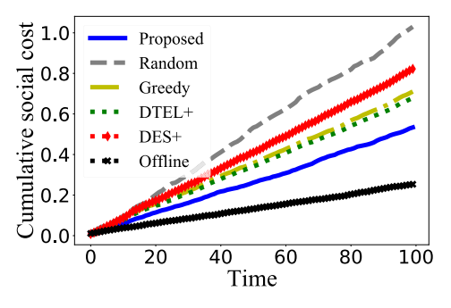</a><div class="artwork-note">原图保留 · 点击放大 · 图内英文标签见下方译注</div></figure>
<div class="pair caption" id="pair-fig-5-caption" data-block="fig-5-caption"><div class="source-left"><p>Fig. 5. Social cost.</p></div><div class="translation-right" id="zh-fig-5-caption"><p>图 5　<a class="term-ref" href="#term-social-cost" title="Social cost（社会成本）：服务提供方成本与模型提供方成本之和再加上累计推理损失；支付项在求和时相互抵消。">社会成本<span class="term-tip" role="tooltip">Social cost（社会成本）：服务提供方成本与模型提供方成本之和再加上累计推理损失；支付项在求和时相互抵消。</span></a>。</p><a class="page-link" href="source.pdf#page=9" target="_blank" aria-label="打开原 PDF 第 9 页">原 PDF p.9</a></div></div>
<figure id="fig-6"><a href="assets/figures/figure-06.png" target="_blank" title="查看原图">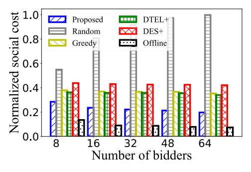</a><div class="artwork-note">原图保留 · 点击放大 · 图内英文标签见下方译注</div></figure>
<div class="pair caption" id="pair-fig-6-caption" data-block="fig-6-caption"><div class="source-left"><p>Fig. 6. Scalability.</p></div><div class="translation-right" id="zh-fig-6-caption"><p>图 6　可扩展性。</p><a class="page-link" href="source.pdf#page=9" target="_blank" aria-label="打开原 PDF 第 9 页">原 PDF p.9</a></div></div>
<figure id="fig-7"><a href="assets/figures/figure-07.png" target="_blank" title="查看原图">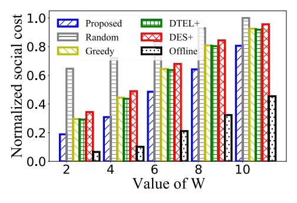</a><div class="artwork-note">原图保留 · 点击放大 · 图内英文标签见下方译注</div></figure>
<div class="pair caption" id="pair-fig-7-caption" data-block="fig-7-caption"><div class="source-left"><p>Fig. 7. Impact of hosting budget.</p></div><div class="translation-right" id="zh-fig-7-caption"><p>图 7　托管预算的影响。</p><a class="page-link" href="source.pdf#page=9" target="_blank" aria-label="打开原 PDF 第 9 页">原 PDF p.9</a></div></div>
<div class="pair paragraph" id="pair-sec5-016" data-block="sec5-016"><div class="source-left"><p>Fig. 6 presents the normalized average social cost of different algorithms. As the number of bidders increases, compared to Random, Greedy, DTEL+, and DES+, our approach reduces the social cost on average by 70%, 37%, 35%, and 46%, respectively. Note that even though DES+ has better inference accuracy than DTEL+, the former incurs larger loss when its inference is incorrect, thus greater social cost. The empirical competitive ratio of our approach is 2.1∼2.7. The social cost of our approach decreases as the number of bidders grows because there are more bids to choose from for further cost reduction, which shows the scalability of our approach.</p></div><div class="translation-right" id="zh-sec5-016"><p>图 6 给出了不同算法的归一化平均<a class="term-ref" href="#term-social-cost" title="Social cost（社会成本）：服务提供方成本与模型提供方成本之和再加上累计推理损失；支付项在求和时相互抵消。">社会成本<span class="term-tip" role="tooltip">Social cost（社会成本）：服务提供方成本与模型提供方成本之和再加上累计推理损失；支付项在求和时相互抵消。</span></a>。随着投标者数量增加，与 Random、Greedy、<a class="term-ref" href="#term-dtel" title="DTEL+（DTEL+）：本文对照的前沿方法之一（基于深度强化学习的集成学习方案）。">DTEL+<span class="term-tip" role="tooltip">DTEL+（DTEL+）：本文对照的前沿方法之一（基于深度强化学习的集成学习方案）。</span></a> 和 <a class="term-ref" href="#term-des" title="DES+（DES+）：本文对照的前沿方法之一（动态集成选择方案）。">DES+<span class="term-tip" role="tooltip">DES+（DES+）：本文对照的前沿方法之一（动态集成选择方案）。</span></a> 相比，我们的方法平均分别把<a class="term-ref" href="#term-social-cost" title="Social cost（社会成本）：服务提供方成本与模型提供方成本之和再加上累计推理损失；支付项在求和时相互抵消。">社会成本<span class="term-tip" role="tooltip">Social cost（社会成本）：服务提供方成本与模型提供方成本之和再加上累计推理损失；支付项在求和时相互抵消。</span></a>降低了 70%、37%、35% 和 46%。注意，尽管 <a class="term-ref" href="#term-des" title="DES+（DES+）：本文对照的前沿方法之一（动态集成选择方案）。">DES+<span class="term-tip" role="tooltip">DES+（DES+）：本文对照的前沿方法之一（动态集成选择方案）。</span></a> 的推理精度优于 <a class="term-ref" href="#term-dtel" title="DTEL+（DTEL+）：本文对照的前沿方法之一（基于深度强化学习的集成学习方案）。">DTEL+<span class="term-tip" role="tooltip">DTEL+（DTEL+）：本文对照的前沿方法之一（基于深度强化学习的集成学习方案）。</span></a>，但前者在推理出错时会产生更大的损失，因而<a class="term-ref" href="#term-social-cost" title="Social cost（社会成本）：服务提供方成本与模型提供方成本之和再加上累计推理损失；支付项在求和时相互抵消。">社会成本<span class="term-tip" role="tooltip">Social cost（社会成本）：服务提供方成本与模型提供方成本之和再加上累计推理损失；支付项在求和时相互抵消。</span></a>更高。我们方法的经验<a class="term-ref" href="#term-competitive-ratio" title="Competitive ratio（竞争比）：在线方案的总成本不超过离线最优加最佳单模型损失之和的常数倍；本文给出参数化常数。">竞争比<span class="term-tip" role="tooltip">Competitive ratio（竞争比）：在线方案的总成本不超过离线最优加最佳单模型损失之和的常数倍；本文给出参数化常数。</span></a>为 2.1∼2.7。随着投标者数量增长，我们方法的<a class="term-ref" href="#term-social-cost" title="Social cost（社会成本）：服务提供方成本与模型提供方成本之和再加上累计推理损失；支付项在求和时相互抵消。">社会成本<span class="term-tip" role="tooltip">Social cost（社会成本）：服务提供方成本与模型提供方成本之和再加上累计推理损失；支付项在求和时相互抵消。</span></a>下降，因为可供选择的投标更多、从而能进一步降低成本，这体现了我们方法的可扩展性。</p><a class="page-link" href="source.pdf#page=9" target="_blank" aria-label="打开原 PDF 第 9 页">原 PDF p.9</a></div></div>
<aside class="translator-note blue" id="note-sec5-03"><div class="note-label">译者 · 数学、算法与核对</div><div id="zh-note-sec5-03"><p><strong>“降低 70%、37%、35%、46%”应如何理解。</strong> 这些数字是<strong>同一个量（归一化平均<a class="term-ref" href="#term-social-cost" title="Social cost（社会成本）：服务提供方成本与模型提供方成本之和再加上累计推理损失；支付项在求和时相互抵消。">社会成本<span class="term-tip" role="tooltip">Social cost（社会成本）：服务提供方成本与模型提供方成本之和再加上累计推理损失；支付项在求和时相互抵消。</span></a>）在本方法与其各自基线之间取平均后算出的相对降幅</strong>，四个数字分别对应 Random、Greedy、<a class="term-ref" href="#term-dtel" title="DTEL+（DTEL+）：本文对照的前沿方法之一（基于深度强化学习的集成学习方案）。">DTEL+<span class="term-tip" role="tooltip">DTEL+（DTEL+）：本文对照的前沿方法之一（基于深度强化学习的集成学习方案）。</span></a>、<a class="term-ref" href="#term-des" title="DES+（DES+）：本文对照的前沿方法之一（动态集成选择方案）。">DES+<span class="term-tip" role="tooltip">DES+（DES+）：本文对照的前沿方法之一（动态集成选择方案）。</span></a>，彼此不是同一分档的连续比较，不能相加或相乘。<br>另外注意原文对 <a class="term-ref" href="#term-des" title="DES+（DES+）：本文对照的前沿方法之一（动态集成选择方案）。">DES+<span class="term-tip" role="tooltip">DES+（DES+）：本文对照的前沿方法之一（动态集成选择方案）。</span></a> 的说明：精度更高并不必然带来更低的<a class="term-ref" href="#term-social-cost" title="Social cost（社会成本）：服务提供方成本与模型提供方成本之和再加上累计推理损失；支付项在求和时相互抵消。">社会成本<span class="term-tip" role="tooltip">Social cost（社会成本）：服务提供方成本与模型提供方成本之和再加上累计推理损失；支付项在求和时相互抵消。</span></a>，因为<a class="term-ref" href="#term-social-cost" title="Social cost（社会成本）：服务提供方成本与模型提供方成本之和再加上累计推理损失；支付项在求和时相互抵消。">社会成本<span class="term-tip" role="tooltip">Social cost（社会成本）：服务提供方成本与模型提供方成本之和再加上累计推理损失；支付项在求和时相互抵消。</span></a>还包含<strong>推理出错时的损失幅度</strong>；<a class="term-ref" href="#term-des" title="DES+（DES+）：本文对照的前沿方法之一（动态集成选择方案）。">DES+<span class="term-tip" role="tooltip">DES+（DES+）：本文对照的前沿方法之一（动态集成选择方案）。</span></a> 出错时损失更大，所以<a class="term-ref" href="#term-social-cost" title="Social cost（社会成本）：服务提供方成本与模型提供方成本之和再加上累计推理损失；支付项在求和时相互抵消。">社会成本<span class="term-tip" role="tooltip">Social cost（社会成本）：服务提供方成本与模型提供方成本之和再加上累计推理损失；支付项在求和时相互抵消。</span></a>反而高于 <a class="term-ref" href="#term-dtel" title="DTEL+（DTEL+）：本文对照的前沿方法之一（基于深度强化学习的集成学习方案）。">DTEL+<span class="term-tip" role="tooltip">DTEL+（DTEL+）：本文对照的前沿方法之一（基于深度强化学习的集成学习方案）。</span></a>。这正说明本文的目标函数是“成本 + <a class="term-ref" href="#term-inference-loss" title="Inference loss（推理损失）：联合推理结果与真实标签之间的损失；本文采用平方损失。">推理损失<span class="term-tip" role="tooltip">Inference loss（推理损失）：联合推理结果与真实标签之间的损失；本文采用平方损失。</span></a>”的联合优化，而不是单纯追求精度。<br>“经验<a class="term-ref" href="#term-competitive-ratio" title="Competitive ratio（竞争比）：在线方案的总成本不超过离线最优加最佳单模型损失之和的常数倍；本文给出参数化常数。">竞争比<span class="term-tip" role="tooltip">Competitive ratio（竞争比）：在线方案的总成本不超过离线最优加最佳单模型损失之和的常数倍；本文给出参数化常数。</span></a> 2.1∼2.7”是实测得到的、覆盖不同投标者数量的区间，用来与理论上的参数化常数<a class="term-ref" href="#term-competitive-ratio" title="Competitive ratio（竞争比）：在线方案的总成本不超过离线最优加最佳单模型损失之和的常数倍；本文给出参数化常数。">竞争比<span class="term-tip" role="tooltip">Competitive ratio（竞争比）：在线方案的总成本不超过离线最优加最佳单模型损失之和的常数倍；本文给出参数化常数。</span></a>相互印证。</p></div></aside>
<div class="pair paragraph" id="pair-sec5-017" data-block="sec5-017"><div class="source-left"><p>Fig. 7 shows the impact of the model hosting budget on the normalized average social cost. As more models are allowed to be hosted, the social cost increases for all algorithms; and ours still incurs the lowest social cost, except the offline optimum.</p></div><div class="translation-right" id="zh-sec5-017"><p>图 7 展示了模型托管预算对归一化平均<a class="term-ref" href="#term-social-cost" title="Social cost（社会成本）：服务提供方成本与模型提供方成本之和再加上累计推理损失；支付项在求和时相互抵消。">社会成本<span class="term-tip" role="tooltip">Social cost（社会成本）：服务提供方成本与模型提供方成本之和再加上累计推理损失；支付项在求和时相互抵消。</span></a>的影响。随着允许托管的模型数量增加，所有算法的<a class="term-ref" href="#term-social-cost" title="Social cost（社会成本）：服务提供方成本与模型提供方成本之和再加上累计推理损失；支付项在求和时相互抵消。">社会成本<span class="term-tip" role="tooltip">Social cost（社会成本）：服务提供方成本与模型提供方成本之和再加上累计推理损失；支付项在求和时相互抵消。</span></a>都上升；而除<a class="term-ref" href="#term-offline-optimum" title="Offline optimum（离线最优）：在事先已知全部输入时可达到的最优成本；在线算法以它为比较基准。">离线最优<span class="term-tip" role="tooltip">Offline optimum（离线最优）：在事先已知全部输入时可达到的最优成本；在线算法以它为比较基准。</span></a>之外，我们的方法仍然产生最低的<a class="term-ref" href="#term-social-cost" title="Social cost（社会成本）：服务提供方成本与模型提供方成本之和再加上累计推理损失；支付项在求和时相互抵消。">社会成本<span class="term-tip" role="tooltip">Social cost（社会成本）：服务提供方成本与模型提供方成本之和再加上累计推理损失；支付项在求和时相互抵消。</span></a>。</p><a class="page-link" href="source.pdf#page=9" target="_blank" aria-label="打开原 PDF 第 9 页">原 PDF p.9</a></div></div>
<div class="pair paragraph" id="pair-sec5-018" data-block="sec5-018"><div class="source-left"><p>Fig. 8 verifies the truthfulness of our auction mechanism. We select two bids randomly as the example. As shown, if the bid bids its true cost, i.e., 7$ and 10$, respectively, then it achieves the highest utility. The utility could drop vastly if the bidding price is not the same as the true cost.</p></div><div class="translation-right" id="zh-sec5-018"><p>图 8 验证了我们<a class="term-ref" href="#term-auction" title="Auction（拍卖）：本文用重复拍卖决定购买哪些模型并决定支付，以替代直接定价。">拍卖<span class="term-tip" role="tooltip">Auction（拍卖）：本文用重复拍卖决定购买哪些模型并决定支付，以替代直接定价。</span></a>机制的<a class="term-ref" href="#term-truthfulness" title="Truthfulness（真实性）：竞标者不如实报价无法提高自身效用；本文证明其在期望意义下成立。">真实性<span class="term-tip" role="tooltip">Truthfulness（真实性）：竞标者不如实报价无法提高自身效用；本文证明其在期望意义下成立。</span></a>。我们随机选取两个投标作为示例。如图所示，如果投标按真实成本报价，即分别为 7 美元和 10 美元，那么它能获得最高效用。若投标价格与真实成本不一致，效用可能会大幅下降。</p><a class="page-link" href="source.pdf#page=9" target="_blank" aria-label="打开原 PDF 第 9 页">原 PDF p.9</a></div></div>
<div class="pair paragraph" id="pair-sec5-019" data-block="sec5-019"><div class="source-left"><p>Fig. 9 checks the individual rationality of our auction mechanism. We randomly select two bids and record the changes of their bidding price and corresponding payments over 10 consecutive slots. We see that the payment received is always no less than the bidding price. Note that when a bid does not win in an auction, the payment defaults to zero.</p></div><div class="translation-right" id="zh-sec5-019"><p>图 9 检验了我们<a class="term-ref" href="#term-auction" title="Auction（拍卖）：本文用重复拍卖决定购买哪些模型并决定支付，以替代直接定价。">拍卖<span class="term-tip" role="tooltip">Auction（拍卖）：本文用重复拍卖决定购买哪些模型并决定支付，以替代直接定价。</span></a>机制的<a class="term-ref" href="#term-individual-rationality" title="Individual rationality（个体理性）：无论拍卖结果如何，参与者的效用都不会变差，即参与不会吃亏。">个体理性<span class="term-tip" role="tooltip">Individual rationality（个体理性）：无论拍卖结果如何，参与者的效用都不会变差，即参与不会吃亏。</span></a>。我们随机选取两个投标，并记录它们在连续 10 个<a class="term-ref" href="#term-time-slot" title="Time slot（时隙）：决策的时间单位，符号 t；数据样本在各时隙内到达。">时隙<span class="term-tip" role="tooltip">Time slot（时隙）：决策的时间单位，符号 t；数据样本在各时隙内到达。</span></a>上的投标价格及相应支付的变化。我们看到，所收到的支付始终不低于投标价格。注意，当一个投标在某场<a class="term-ref" href="#term-auction" title="Auction（拍卖）：本文用重复拍卖决定购买哪些模型并决定支付，以替代直接定价。">拍卖<span class="term-tip" role="tooltip">Auction（拍卖）：本文用重复拍卖决定购买哪些模型并决定支付，以替代直接定价。</span></a>中未获胜时，其支付默认为零。</p><a class="page-link" href="source.pdf#page=9" target="_blank" aria-label="打开原 PDF 第 9 页">原 PDF p.9</a></div></div>
<div class="pair paragraph" id="pair-sec5-020" data-block="sec5-020"><div class="source-left"><p>Fig. 10 and Fig. 11 exhibit the dynamic regret and the dynamic fit of different algorithms for P1, as the total length of the time horizon varies. Our approach has the lowest dynamic regret and fit, also confirming that our regret and fit grow only sub-linearly with time, aligning with our theoretical analysis.</p></div><div class="translation-right" id="zh-sec5-020"><p>图 10 与图 11 展示了随着时间范围总长度变化，不同算法在 P1 上的<a class="term-ref" href="#term-dynamic-regret" title="Dynamic regret（动态遗憾）：在线投标成本与逐期离线最优成本之差；本文证明其相对时隙数是次线性的。">动态遗憾<span class="term-tip" role="tooltip">Dynamic regret（动态遗憾）：在线投标成本与逐期离线最优成本之差；本文证明其相对时隙数是次线性的。</span></a>与<a class="term-ref" href="#term-dynamic-fit" title="Dynamic fit（动态拟合）：长期参与约束的累计违反量；本文证明其同样次线性，即长期参与终将满足。">动态拟合<span class="term-tip" role="tooltip">Dynamic fit（动态拟合）：长期参与约束的累计违反量；本文证明其同样次线性，即长期参与终将满足。</span></a>。我们的方法具有最低的<a class="term-ref" href="#term-dynamic-regret" title="Dynamic regret（动态遗憾）：在线投标成本与逐期离线最优成本之差；本文证明其相对时隙数是次线性的。">动态遗憾<span class="term-tip" role="tooltip">Dynamic regret（动态遗憾）：在线投标成本与逐期离线最优成本之差；本文证明其相对时隙数是次线性的。</span></a>与<a class="term-ref" href="#term-dynamic-fit" title="Dynamic fit（动态拟合）：长期参与约束的累计违反量；本文证明其同样次线性，即长期参与终将满足。">动态拟合<span class="term-tip" role="tooltip">Dynamic fit（动态拟合）：长期参与约束的累计违反量；本文证明其同样次线性，即长期参与终将满足。</span></a>，这也证实了我们的遗憾与拟合仅随时间次线性增长，与我们的理论分析一致。</p><a class="page-link" href="source.pdf#page=9" target="_blank" aria-label="打开原 PDF 第 9 页">原 PDF p.9</a></div></div>
<figure id="fig-8"><a href="assets/figures/figure-08.png" target="_blank" title="查看原图">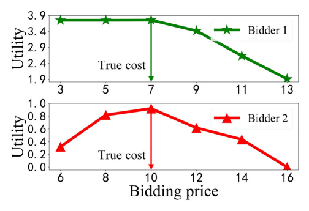</a><div class="artwork-note">原图保留 · 点击放大 · 图内英文标签见下方译注</div></figure>
<div class="pair caption" id="pair-fig-8-caption" data-block="fig-8-caption"><div class="source-left"><p>Fig. 8. Utility.</p></div><div class="translation-right" id="zh-fig-8-caption"><p>图 8　效用。</p><a class="page-link" href="source.pdf#page=10" target="_blank" aria-label="打开原 PDF 第 10 页">原 PDF p.10</a></div></div>
<figure id="fig-9"><a href="assets/figures/figure-09.png" target="_blank" title="查看原图">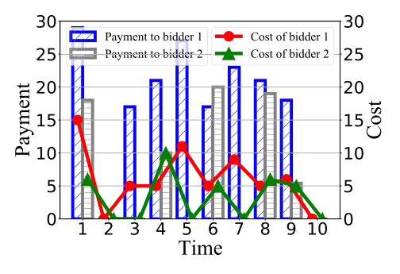</a><div class="artwork-note">原图保留 · 点击放大 · 图内英文标签见下方译注</div></figure>
<div class="pair caption" id="pair-fig-9-caption" data-block="fig-9-caption"><div class="source-left"><p>Fig. 9. Payment vs. cost.</p></div><div class="translation-right" id="zh-fig-9-caption"><p>图 9　支付与成本的对比。</p><a class="page-link" href="source.pdf#page=10" target="_blank" aria-label="打开原 PDF 第 10 页">原 PDF p.10</a></div></div>
<figure id="fig-10"><a href="assets/figures/figure-10.png" target="_blank" title="查看原图">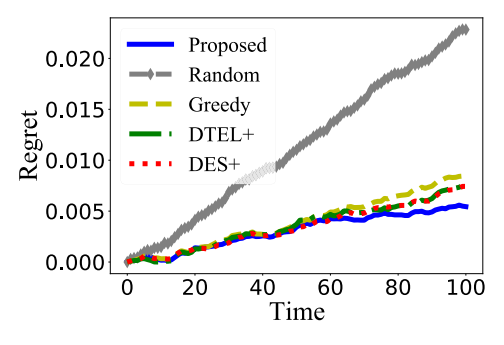</a><div class="artwork-note">原图保留 · 点击放大 · 图内英文标签见下方译注</div></figure>
<div class="pair caption" id="pair-fig-10-caption" data-block="fig-10-caption"><div class="source-left"><p>Fig. 10. Dynamic regret.</p></div><div class="translation-right" id="zh-fig-10-caption"><p>图 10　<a class="term-ref" href="#term-dynamic-regret" title="Dynamic regret（动态遗憾）：在线投标成本与逐期离线最优成本之差；本文证明其相对时隙数是次线性的。">动态遗憾<span class="term-tip" role="tooltip">Dynamic regret（动态遗憾）：在线投标成本与逐期离线最优成本之差；本文证明其相对时隙数是次线性的。</span></a>。</p><a class="page-link" href="source.pdf#page=10" target="_blank" aria-label="打开原 PDF 第 10 页">原 PDF p.10</a></div></div>
<figure id="fig-11"><a href="assets/figures/figure-11.png" target="_blank" title="查看原图">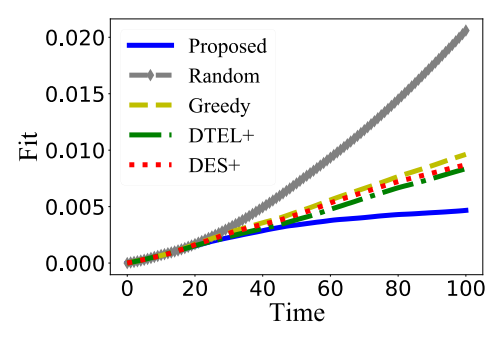</a><div class="artwork-note">原图保留 · 点击放大 · 图内英文标签见下方译注</div></figure>
<div class="pair caption" id="pair-fig-11-caption" data-block="fig-11-caption"><div class="source-left"><p>Fig. 11. Dynamic fit.</p></div><div class="translation-right" id="zh-fig-11-caption"><p>图 11　<a class="term-ref" href="#term-dynamic-fit" title="Dynamic fit（动态拟合）：长期参与约束的累计违反量；本文证明其同样次线性，即长期参与终将满足。">动态拟合<span class="term-tip" role="tooltip">Dynamic fit（动态拟合）：长期参与约束的累计违反量；本文证明其同样次线性，即长期参与终将满足。</span></a>。</p><a class="page-link" href="source.pdf#page=10" target="_blank" aria-label="打开原 PDF 第 10 页">原 PDF p.10</a></div></div>
<figure id="fig-12"><a href="assets/figures/figure-12.png" target="_blank" title="查看原图">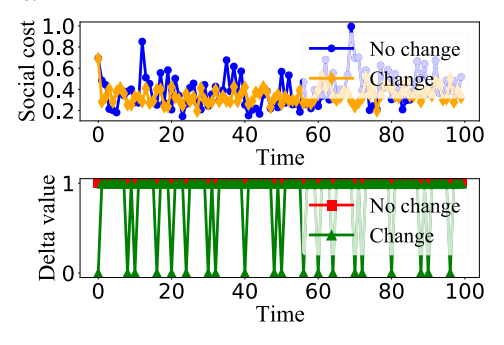</a><div class="artwork-note">原图保留 · 点击放大 · 图内英文标签见下方译注</div></figure>
<div class="pair caption" id="pair-fig-12-caption" data-block="fig-12-caption"><div class="source-left"><p>Fig. 12. Impact of model change.</p></div><div class="translation-right" id="zh-fig-12-caption"><p>图 12　模型变化的影响。</p><a class="page-link" href="source.pdf#page=10" target="_blank" aria-label="打开原 PDF 第 10 页">原 PDF p.10</a></div></div>
<div class="pair paragraph" id="pair-sec5-021" data-block="sec5-021"><div class="source-left"><p>Fig. 12 illustrates how model variations can impact the social cost. In our experiments, we simulate model variations as the model provider using the additional training data from another model provider to update its own model. When models in the market undergo such updates, the social cost exhibits less fluctuation compared to the social cost of models that are static. This is because updated models could more easily adapt to data streams, thereby minimizing the inference loss.</p></div><div class="translation-right" id="zh-sec5-021"><p>图 12 说明了模型变化如何影响<a class="term-ref" href="#term-social-cost" title="Social cost（社会成本）：服务提供方成本与模型提供方成本之和再加上累计推理损失；支付项在求和时相互抵消。">社会成本<span class="term-tip" role="tooltip">Social cost（社会成本）：服务提供方成本与模型提供方成本之和再加上累计推理损失；支付项在求和时相互抵消。</span></a>。在我们的实验中，我们把模型变化模拟为：<a class="term-ref" href="#term-model-provider" title="Model provider（模型提供方）：以竞标者身份出售（提供）模型的一方；提供多个模型者可视为多个虚拟提供方。">模型提供方<span class="term-tip" role="tooltip">Model provider（模型提供方）：以竞标者身份出售（提供）模型的一方；提供多个模型者可视为多个虚拟提供方。</span></a>使用来自另一个<a class="term-ref" href="#term-model-provider" title="Model provider（模型提供方）：以竞标者身份出售（提供）模型的一方；提供多个模型者可视为多个虚拟提供方。">模型提供方<span class="term-tip" role="tooltip">Model provider（模型提供方）：以竞标者身份出售（提供）模型的一方；提供多个模型者可视为多个虚拟提供方。</span></a>的额外训练数据来更新自己的模型。当市场中的模型经历此类更新时，与静态模型的<a class="term-ref" href="#term-social-cost" title="Social cost（社会成本）：服务提供方成本与模型提供方成本之和再加上累计推理损失；支付项在求和时相互抵消。">社会成本<span class="term-tip" role="tooltip">Social cost（社会成本）：服务提供方成本与模型提供方成本之和再加上累计推理损失；支付项在求和时相互抵消。</span></a>相比，<a class="term-ref" href="#term-social-cost" title="Social cost（社会成本）：服务提供方成本与模型提供方成本之和再加上累计推理损失；支付项在求和时相互抵消。">社会成本<span class="term-tip" role="tooltip">Social cost（社会成本）：服务提供方成本与模型提供方成本之和再加上累计推理损失；支付项在求和时相互抵消。</span></a>的波动更小。这是因为更新后的模型能更容易地适应<a class="term-ref" href="#term-data-stream" title="Data stream（数据流）：持续到达的数据样本序列；本文要求在其上在线完成推理与学习。">数据流<span class="term-tip" role="tooltip">Data stream（数据流）：持续到达的数据样本序列；本文要求在其上在线完成推理与学习。</span></a>，从而使<a class="term-ref" href="#term-inference-loss" title="Inference loss（推理损失）：联合推理结果与真实标签之间的损失；本文采用平方损失。">推理损失<span class="term-tip" role="tooltip">Inference loss（推理损失）：联合推理结果与真实标签之间的损失；本文采用平方损失。</span></a>最小化。</p><a class="page-link" href="source.pdf#page=10" target="_blank" aria-label="打开原 PDF 第 10 页">原 PDF p.10</a></div></div>
<div class="pair paragraph" id="pair-sec5-022" data-block="sec5-022"><div class="source-left"><p>Fig. 13 evaluates the inference accuracy in each time slot over the entire data stream of the Posture data. The results for other datasets are similar. Our approach not only achieves the highest accuracy in all the time slots, but is also relatively more stable; the accuracy results of other algorithms fluctuate dramatically and are more sensitive to the concept drift.</p></div><div class="translation-right" id="zh-sec5-022"><p>图 13 评估了在 Posture 数据的整个<a class="term-ref" href="#term-data-stream" title="Data stream（数据流）：持续到达的数据样本序列；本文要求在其上在线完成推理与学习。">数据流<span class="term-tip" role="tooltip">Data stream（数据流）：持续到达的数据样本序列；本文要求在其上在线完成推理与学习。</span></a>上每个<a class="term-ref" href="#term-time-slot" title="Time slot（时隙）：决策的时间单位，符号 t；数据样本在各时隙内到达。">时隙<span class="term-tip" role="tooltip">Time slot（时隙）：决策的时间单位，符号 t；数据样本在各时隙内到达。</span></a>的推理精度。其他数据集的结果类似。我们的方法不仅在所有<a class="term-ref" href="#term-time-slot" title="Time slot（时隙）：决策的时间单位，符号 t；数据样本在各时隙内到达。">时隙<span class="term-tip" role="tooltip">Time slot（时隙）：决策的时间单位，符号 t；数据样本在各时隙内到达。</span></a>都达到最高精度，而且相对更稳定；其他算法的精度结果波动剧烈，并且对<a class="term-ref" href="#term-concept-drift" title="Concept drift（概念漂移）：数据分布随时间变化，使既有模型不再能给出最佳标签；本文用集成方法在不显式检测漂移的前提下应对它。">概念漂移<span class="term-tip" role="tooltip">Concept drift（概念漂移）：数据分布随时间变化，使既有模型不再能给出最佳标签；本文用集成方法在不显式检测漂移的前提下应对它。</span></a>更为敏感。</p><a class="page-link" href="source.pdf#page=10" target="_blank" aria-label="打开原 PDF 第 10 页">原 PDF p.10</a></div></div>
<figure id="fig-13"><a href="assets/figures/figure-13.png" target="_blank" title="查看原图">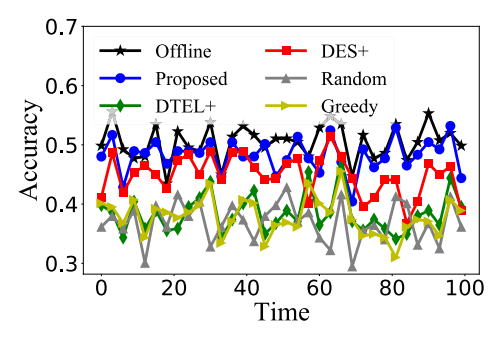</a><div class="artwork-note">原图保留 · 点击放大 · 图内英文标签见下方译注</div></figure>
<div class="pair caption" id="pair-fig-13-caption" data-block="fig-13-caption"><div class="source-left"><p>Fig. 13. Real-time accuracy.</p></div><div class="translation-right" id="zh-fig-13-caption"><p>图 13　实时精度。</p><a class="page-link" href="source.pdf#page=10" target="_blank" aria-label="打开原 PDF 第 10 页">原 PDF p.10</a></div></div>
<figure id="fig-14"><a href="assets/figures/figure-14.png" target="_blank" title="查看原图">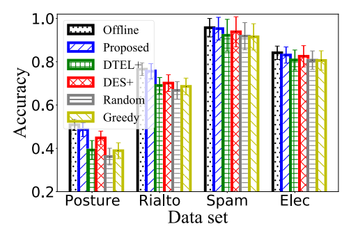</a><div class="artwork-note">原图保留 · 点击放大 · 图内英文标签见下方译注</div></figure>
<div class="pair caption" id="pair-fig-14-caption" data-block="fig-14-caption"><div class="source-left"><p>Fig. 14. Accuracy and deviation (I).</p></div><div class="translation-right" id="zh-fig-14-caption"><p>图 14　精度与偏差（I）。</p><a class="page-link" href="source.pdf#page=10" target="_blank" aria-label="打开原 PDF 第 10 页">原 PDF p.10</a></div></div>
<figure id="fig-15"><a href="assets/figures/figure-15.png" target="_blank" title="查看原图">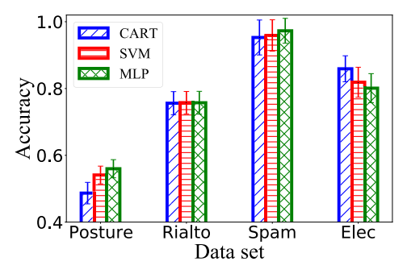</a><div class="artwork-note">原图保留 · 点击放大 · 图内英文标签见下方译注</div></figure>
<div class="pair caption" id="pair-fig-15-caption" data-block="fig-15-caption"><div class="source-left"><p>Fig. 15. Accuracy and deviation (II).</p></div><div class="translation-right" id="zh-fig-15-caption"><p>图 15　精度与偏差（II）。</p><a class="page-link" href="source.pdf#page=10" target="_blank" aria-label="打开原 PDF 第 10 页">原 PDF p.10</a></div></div>
<figure id="fig-16"><a href="assets/figures/figure-16.png" target="_blank" title="查看原图">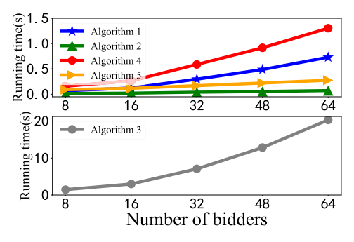</a><div class="artwork-note">原图保留 · 点击放大 · 图内英文标签见下方译注</div></figure>
<div class="pair caption" id="pair-fig-16-caption" data-block="fig-16-caption"><div class="source-left"><p>Fig. 16. Algorithm running time.</p></div><div class="translation-right" id="zh-fig-16-caption"><p>图 16　算法运行时间。</p><a class="page-link" href="source.pdf#page=10" target="_blank" aria-label="打开原 PDF 第 10 页">原 PDF p.10</a></div></div>
<div class="pair paragraph" id="pair-sec5-023" data-block="sec5-023"><div class="source-left"><p>Fig. 14 and Fig. 15 visualize the inference accuracy averaged over time and the standard deviation upon the entire data stream. The standard deviation is calculated based on the inference accuracy of each time slot, representing the sensitivity to concept drifts and the stability of the algorithm [25]. Fig. 14 exhibits significantly better accuracy upon all four data streams and exhibits lower standard deviation compared to others on most data streams, indicating that our approach is less sensitive to concept drifts and is more stable. Fig. 15 exhibits that our algorithmic approach can work with different types of base models in the ensemble learning process. Different base models can be more preferred for different datasets.</p></div><div class="translation-right" id="zh-sec5-023"><p>图 14 与图 15 可视化了在整个<a class="term-ref" href="#term-data-stream" title="Data stream（数据流）：持续到达的数据样本序列；本文要求在其上在线完成推理与学习。">数据流<span class="term-tip" role="tooltip">Data stream（数据流）：持续到达的数据样本序列；本文要求在其上在线完成推理与学习。</span></a>上对时间取平均的推理精度及其标准差。该标准差基于每个<a class="term-ref" href="#term-time-slot" title="Time slot（时隙）：决策的时间单位，符号 t；数据样本在各时隙内到达。">时隙<span class="term-tip" role="tooltip">Time slot（时隙）：决策的时间单位，符号 t；数据样本在各时隙内到达。</span></a>的推理精度计算，代表对<a class="term-ref" href="#term-concept-drift" title="Concept drift（概念漂移）：数据分布随时间变化，使既有模型不再能给出最佳标签；本文用集成方法在不显式检测漂移的前提下应对它。">概念漂移<span class="term-tip" role="tooltip">Concept drift（概念漂移）：数据分布随时间变化，使既有模型不再能给出最佳标签；本文用集成方法在不显式检测漂移的前提下应对它。</span></a>的敏感程度以及算法的稳定性 [25]。图 14 显示出在全部四个<a class="term-ref" href="#term-data-stream" title="Data stream（数据流）：持续到达的数据样本序列；本文要求在其上在线完成推理与学习。">数据流<span class="term-tip" role="tooltip">Data stream（数据流）：持续到达的数据样本序列；本文要求在其上在线完成推理与学习。</span></a>上都明显更好的精度，并且在大多数<a class="term-ref" href="#term-data-stream" title="Data stream（数据流）：持续到达的数据样本序列；本文要求在其上在线完成推理与学习。">数据流<span class="term-tip" role="tooltip">Data stream（数据流）：持续到达的数据样本序列；本文要求在其上在线完成推理与学习。</span></a>上相比其他方法具有更低的标准差，说明我们的方法对<a class="term-ref" href="#term-concept-drift" title="Concept drift（概念漂移）：数据分布随时间变化，使既有模型不再能给出最佳标签；本文用集成方法在不显式检测漂移的前提下应对它。">概念漂移<span class="term-tip" role="tooltip">Concept drift（概念漂移）：数据分布随时间变化，使既有模型不再能给出最佳标签；本文用集成方法在不显式检测漂移的前提下应对它。</span></a>不那么敏感、也更稳定。图 15 显示出我们的算法方法在<a class="term-ref" href="#term-ensemble-learning" title="Ensemble learning（集成学习）：把多个模型的推理结果按权重合并为一个联合结果，以提升精度与抗漂移能力。">集成学习<span class="term-tip" role="tooltip">Ensemble learning（集成学习）：把多个模型的推理结果按权重合并为一个联合结果，以提升精度与抗漂移能力。</span></a>过程中能够与不同类型的基模型配合工作。对不同数据集而言，不同的基模型可能更受偏好。</p><a class="page-link" href="source.pdf#page=10" target="_blank" aria-label="打开原 PDF 第 10 页">原 PDF p.10</a></div></div>
<div class="pair paragraph" id="pair-sec5-024" data-block="sec5-024"><div class="source-left"><p>Fig. 16 depicts the execution time of each algorithm in our approach. As the number of bidders reaches 64, Algorithms 1∼5 can complete in 0.73 seconds, 0.07 seconds, 20.30 seconds, 1.30 seconds, and 0.28 seconds for each auction, performing well compared to the length of a single time slot. This shows the computational efficiency of our approach in practice.</p></div><div class="translation-right" id="zh-sec5-024"><p>图 16 描绘了我们方法中每个算法的执行时间。当投标者数量达到 64 时，算法 1∼5 每场<a class="term-ref" href="#term-auction" title="Auction（拍卖）：本文用重复拍卖决定购买哪些模型并决定支付，以替代直接定价。">拍卖<span class="term-tip" role="tooltip">Auction（拍卖）：本文用重复拍卖决定购买哪些模型并决定支付，以替代直接定价。</span></a>可分别在 0.73 秒、0.07 秒、20.30 秒、1.30 秒和 0.28 秒内完成，相对于单个<a class="term-ref" href="#term-time-slot" title="Time slot（时隙）：决策的时间单位，符号 t；数据样本在各时隙内到达。">时隙<span class="term-tip" role="tooltip">Time slot（时隙）：决策的时间单位，符号 t；数据样本在各时隙内到达。</span></a>的长度而言表现良好。这表明我们的方法在实践中具有计算效率。</p><a class="page-link" href="source.pdf#page=10" target="_blank" aria-label="打开原 PDF 第 10 页">原 PDF p.10</a></div></div>
<aside class="translator-note green" id="note-sec5-04"><div class="note-label">译者 · 背景与直觉</div><div id="zh-note-sec5-04"><p><strong>为什么“便宜的差模型”值得单独讨论（承上启下）。</strong> 本节实验的目标函数同时包含成本项与<a class="term-ref" href="#term-inference-loss" title="Inference loss（推理损失）：联合推理结果与真实标签之间的损失；本文采用平方损失。">推理损失<span class="term-tip" role="tooltip">Inference loss（推理损失）：联合推理结果与真实标签之间的损失；本文采用平方损失。</span></a>项，因此一个<strong>报价很低、但推理很差的模型</strong>在<a class="term-ref" href="#term-auction" title="Auction（拍卖）：本文用重复拍卖决定购买哪些模型并决定支付，以替代直接定价。">拍卖<span class="term-tip" role="tooltip">Auction（拍卖）：本文用重复拍卖决定购买哪些模型并决定支付，以替代直接定价。</span></a>中可能因为便宜而被选中；它虽然降低了成本，却会抬高<a class="term-ref" href="#term-inference-loss" title="Inference loss（推理损失）：联合推理结果与真实标签之间的损失；本文采用平方损失。">推理损失<span class="term-tip" role="tooltip">Inference loss（推理损失）：联合推理结果与真实标签之间的损失；本文采用平方损失。</span></a>。图 8 与图 9 从机制性质（<a class="term-ref" href="#term-truthfulness" title="Truthfulness（真实性）：竞标者不如实报价无法提高自身效用；本文证明其在期望意义下成立。">真实性<span class="term-tip" role="tooltip">Truthfulness（真实性）：竞标者不如实报价无法提高自身效用；本文证明其在期望意义下成立。</span></a>、<a class="term-ref" href="#term-individual-rationality" title="Individual rationality（个体理性）：无论拍卖结果如何，参与者的效用都不会变差，即参与不会吃亏。">个体理性<span class="term-tip" role="tooltip">Individual rationality（个体理性）：无论拍卖结果如何，参与者的效用都不会变差，即参与不会吃亏。</span></a>）的角度说明<a class="term-ref" href="#term-auction" title="Auction（拍卖）：本文用重复拍卖决定购买哪些模型并决定支付，以替代直接定价。">拍卖<span class="term-tip" role="tooltip">Auction（拍卖）：本文用重复拍卖决定购买哪些模型并决定支付，以替代直接定价。</span></a>本身不会因这类模型而失效，图 12 至图 15 则考察模型更新与集成方法对精度和稳定性的影响。第六节 A 因此专门讨论如何权衡“便宜”与“推理差”，以及可以采用的过滤、修改算法、把<a class="term-ref" href="#term-inference-loss" title="Inference loss（推理损失）：联合推理结果与真实标签之间的损失；本文采用平方损失。">推理损失<span class="term-tip" role="tooltip">Inference loss（推理损失）：联合推理结果与真实标签之间的损失；本文采用平方损失。</span></a>并入<a class="term-ref" href="#term-auction" title="Auction（拍卖）：本文用重复拍卖决定购买哪些模型并决定支付，以替代直接定价。">拍卖<span class="term-tip" role="tooltip">Auction（拍卖）：本文用重复拍卖决定购买哪些模型并决定支付，以替代直接定价。</span></a>目标等思路。</p></div></aside>
<figure id="fig-17"><a href="assets/figures/figure-17.png" target="_blank" title="查看原图">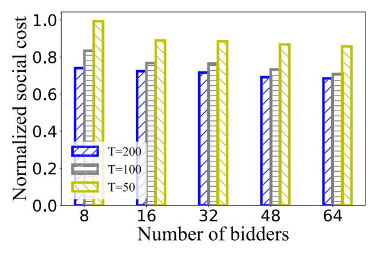</a><div class="artwork-note">原图保留 · 点击放大 · 图内英文标签见下方译注</div></figure>
<div class="pair caption" id="pair-fig-17-caption" data-block="fig-17-caption"><div class="source-left"><p>Fig. 17. Social cost under different time slot length.</p></div><div class="translation-right" id="zh-fig-17-caption"><p>图 17　不同<a class="term-ref" href="#term-time-slot" title="Time slot（时隙）：决策的时间单位，符号 t；数据样本在各时隙内到达。">时隙<span class="term-tip" role="tooltip">Time slot（时隙）：决策的时间单位，符号 t；数据样本在各时隙内到达。</span></a>长度下的<a class="term-ref" href="#term-social-cost" title="Social cost（社会成本）：服务提供方成本与模型提供方成本之和再加上累计推理损失；支付项在求和时相互抵消。">社会成本<span class="term-tip" role="tooltip">Social cost（社会成本）：服务提供方成本与模型提供方成本之和再加上累计推理损失；支付项在求和时相互抵消。</span></a>。</p><a class="page-link" href="source.pdf#page=12" target="_blank" aria-label="打开原 PDF 第 12 页">原 PDF p.12</a></div></div>
<section class="heading-pair minor" id="sec6-heading"><div class="source-left"><h3>VI. DISCUSSIONS</h3></div><div class="translation-right" id="zh-sec6-heading"><h3>第六节　讨论</h3></div></section>
<section class="heading-pair minor" id="sec6-sub-a"><div class="source-left"><h3>A. Cheap Models With Bad Inference Performance</h3></div><div class="translation-right" id="zh-sec6-sub-a"><h3>A. 推理性能差的廉价模型</h3></div></section>
<div class="pair paragraph" id="pair-sec6-001" data-block="sec6-001"><div class="source-left"><p>Our goal in this work is jointly optimizing the cost and the inference loss, as captured by the problem P0. It is yet crucial to manage the balance or trade-off between the cost and the inference performance of the models. One approach is to associate weights to the different terms in the objective function of P0. We leave to the service provider to decide the weight for each term in the objective function, depending on its own needs and requirements. In our current evaluations, the weights for the cost of the auctioneer, the cost of the bidders, and the inference loss in the objective are all set equal.</p></div><div class="translation-right" id="zh-sec6-001"><p>本工作的目标是联合优化成本与<a class="term-ref" href="#term-inference-loss" title="Inference loss（推理损失）：联合推理结果与真实标签之间的损失；本文采用平方损失。">推理损失<span class="term-tip" role="tooltip">Inference loss（推理损失）：联合推理结果与真实标签之间的损失；本文采用平方损失。</span></a>，这由问题 P0 刻画。然而，如何管理模型成本与推理性能之间的平衡或权衡至关重要。一种做法是为 P0 目标函数中的不同项赋予权重。我们把目标函数中每一项的权重交由<a class="term-ref" href="#term-service-provider" title="Service provider（服务提供方）：运营机器学习推理服务的一方，在本文中同时充当拍卖人。">服务提供方<span class="term-tip" role="tooltip">Service provider（服务提供方）：运营机器学习推理服务的一方，在本文中同时充当拍卖人。</span></a>根据自身需要与要求来决定。在我们当前的评估中，目标函数中<a class="term-ref" href="#term-auction" title="Auction（拍卖）：本文用重复拍卖决定购买哪些模型并决定支付，以替代直接定价。">拍卖<span class="term-tip" role="tooltip">Auction（拍卖）：本文用重复拍卖决定购买哪些模型并决定支付，以替代直接定价。</span></a>人的成本、投标者的成本以及<a class="term-ref" href="#term-inference-loss" title="Inference loss（推理损失）：联合推理结果与真实标签之间的损失；本文采用平方损失。">推理损失<span class="term-tip" role="tooltip">Inference loss（推理损失）：联合推理结果与真实标签之间的损失；本文采用平方损失。</span></a>这三项的权重都被设为相等。</p><a class="page-link" href="source.pdf#page=11" target="_blank" aria-label="打开原 PDF 第 11 页">原 PDF p.11</a></div></div>
<div class="pair paragraph" id="pair-sec6-002" data-block="sec6-002"><div class="source-left"><p>Our strategy for solving P0 is decoupling the cost from the inference loss, and addressing the former first and the latter afterwards. With this strategy, we can already achieve multiple provable performance guarantees. In particular, Theorem 3 implies that at each time slot, as we update the weights for the models in the ensemble, the inference loss incurred by our model ensemble is no greater than a parameterized constant times the inference loss incurred by the single best model in terms of the inference loss in the ensemble at hindsight.</p></div><div class="translation-right" id="zh-sec6-002"><p>我们求解 P0 的策略是把成本与<a class="term-ref" href="#term-inference-loss" title="Inference loss（推理损失）：联合推理结果与真实标签之间的损失；本文采用平方损失。">推理损失<span class="term-tip" role="tooltip">Inference loss（推理损失）：联合推理结果与真实标签之间的损失；本文采用平方损失。</span></a>解耦，先处理前者、再处理后者。借助这一策略，我们已经能够获得多项可证明的性能保证。特别地，定理 3 表明：在每个<a class="term-ref" href="#term-time-slot" title="Time slot（时隙）：决策的时间单位，符号 t；数据样本在各时隙内到达。">时隙<span class="term-tip" role="tooltip">Time slot（时隙）：决策的时间单位，符号 t；数据样本在各时隙内到达。</span></a>，随着我们更新集成中各模型的权重，我们的模型集成所产生的<a class="term-ref" href="#term-inference-loss" title="Inference loss（推理损失）：联合推理结果与真实标签之间的损失；本文采用平方损失。">推理损失<span class="term-tip" role="tooltip">Inference loss（推理损失）：联合推理结果与真实标签之间的损失；本文采用平方损失。</span></a>不超过“事后看来在集成中<a class="term-ref" href="#term-inference-loss" title="Inference loss（推理损失）：联合推理结果与真实标签之间的损失；本文采用平方损失。">推理损失<span class="term-tip" role="tooltip">Inference loss（推理损失）：联合推理结果与真实标签之间的损失；本文采用平方损失。</span></a>最小的单个最佳模型所产生的<a class="term-ref" href="#term-inference-loss" title="Inference loss（推理损失）：联合推理结果与真实标签之间的损失；本文采用平方损失。">推理损失<span class="term-tip" role="tooltip">Inference loss（推理损失）：联合推理结果与真实标签之间的损失；本文采用平方损失。</span></a>”的参数化常数倍。</p><a class="page-link" href="source.pdf#page=11" target="_blank" aria-label="打开原 PDF 第 11 页">原 PDF p.11</a></div></div>
<aside class="translator-note green" id="note-sec6-01"><div class="note-label">译者 · 背景与直觉</div><div id="zh-note-sec6-01"><p><strong>这里“成本与推理性能的权衡”指的是什么。</strong> 本文的目标函数同时包含<a class="term-ref" href="#term-auction" title="Auction（拍卖）：本文用重复拍卖决定购买哪些模型并决定支付，以替代直接定价。">拍卖<span class="term-tip" role="tooltip">Auction（拍卖）：本文用重复拍卖决定购买哪些模型并决定支付，以替代直接定价。</span></a>人成本、投标者成本和<a class="term-ref" href="#term-inference-loss" title="Inference loss（推理损失）：联合推理结果与真实标签之间的损失；本文采用平方损失。">推理损失<span class="term-tip" role="tooltip">Inference loss（推理损失）：联合推理结果与真实标签之间的损失；本文采用平方损失。</span></a>三类项；由于存在<strong>报价便宜但推理很差的模型</strong>，压低成本与提高精度这两个目标会相互冲突。原文给出的处理方式是：<br>1）在目标函数中为不同项设置权重（权重值交给<a class="term-ref" href="#term-service-provider" title="Service provider（服务提供方）：运营机器学习推理服务的一方，在本文中同时充当拍卖人。">服务提供方<span class="term-tip" role="tooltip">Service provider（服务提供方）：运营机器学习推理服务的一方，在本文中同时充当拍卖人。</span></a>自行决定，当前评估中三项等权）；<br>2）把成本与<a class="term-ref" href="#term-inference-loss" title="Inference loss（推理损失）：联合推理结果与真实标签之间的损失；本文采用平方损失。">推理损失<span class="term-tip" role="tooltip">Inference loss（推理损失）：联合推理结果与真实标签之间的损失；本文采用平方损失。</span></a>解耦，先解成本相关部分、后处理<a class="term-ref" href="#term-inference-loss" title="Inference loss（推理损失）：联合推理结果与真实标签之间的损失；本文采用平方损失。">推理损失<span class="term-tip" role="tooltip">Inference loss（推理损失）：联合推理结果与真实标签之间的损失；本文采用平方损失。</span></a>部分，从而保留本文已有的多项理论保证（如定理 3 给出的集成<a class="term-ref" href="#term-inference-loss" title="Inference loss（推理损失）：联合推理结果与真实标签之间的损失；本文采用平方损失。">推理损失<span class="term-tip" role="tooltip">Inference loss（推理损失）：联合推理结果与真实标签之间的损失；本文采用平方损失。</span></a>上界）。</p></div></aside>
<div class="pair paragraph" id="pair-sec6-003" data-block="sec6-003"><div class="source-left"><p>There could be multiple methods to address the cheap models that have bad inference performance. First, an empirical method could be filtering out such models and ruling out such bids from participating in the auction before the auction starts. To do so, the system should allow the service provider to use a testing dataset to pre-check the performance of each model from the model providers. Second, a more systematic method could be based on modifying our algorithms in the manuscript without filtering out any bids in prior.</p></div><div class="translation-right" id="zh-sec6-003"><p>对于推理性能差的廉价模型，可以存在多种处理方法。第一，一种经验性方法是把这类模型过滤掉，并在<a class="term-ref" href="#term-auction" title="Auction（拍卖）：本文用重复拍卖决定购买哪些模型并决定支付，以替代直接定价。">拍卖<span class="term-tip" role="tooltip">Auction（拍卖）：本文用重复拍卖决定购买哪些模型并决定支付，以替代直接定价。</span></a>开始之前排除这类投标参与<a class="term-ref" href="#term-auction" title="Auction（拍卖）：本文用重复拍卖决定购买哪些模型并决定支付，以替代直接定价。">拍卖<span class="term-tip" role="tooltip">Auction（拍卖）：本文用重复拍卖决定购买哪些模型并决定支付，以替代直接定价。</span></a>。为此，系统应允许<a class="term-ref" href="#term-service-provider" title="Service provider（服务提供方）：运营机器学习推理服务的一方，在本文中同时充当拍卖人。">服务提供方<span class="term-tip" role="tooltip">Service provider（服务提供方）：运营机器学习推理服务的一方，在本文中同时充当拍卖人。</span></a>使用一个测试数据集来预先检查来自各<a class="term-ref" href="#term-model-provider" title="Model provider（模型提供方）：以竞标者身份出售（提供）模型的一方；提供多个模型者可视为多个虚拟提供方。">模型提供方<span class="term-tip" role="tooltip">Model provider（模型提供方）：以竞标者身份出售（提供）模型的一方；提供多个模型者可视为多个虚拟提供方。</span></a>的每个模型的性能。第二，一种更系统的方法可以基于修改本文中的算法，而不事先过滤掉任何投标。</p><a class="page-link" href="source.pdf#page=11" target="_blank" aria-label="打开原 PDF 第 11 页">原 PDF p.11</a></div></div>
<div class="pair paragraph" id="pair-sec6-004" data-block="sec6-004"><div class="source-left"><p>To simultaneously consider cost and inference performance, we would want to modify our problem $\mathcal{P}^t_3$, solved within Algorithm 4, by adding the inference loss to the objective and adding the constraints (1c)∼(1e). Solving this new $\mathcal{P}^t_3$ faces new challenges: the data samples $M^t$ are unknown; the new $\mathcal{P}^t_3$ now is a mixed-integer non-linear program, harder to solve; determining the weights for the models here may interfere with our current Algorithm 5; and Algorithm 4 that solves the new $\mathcal{P}^t_3$ can impact our current Theorems 3 and 4.</p></div><div class="translation-right" id="zh-sec6-004"><p>为了同时考虑成本与推理性能，我们会希望修改算法 4 中所求解的问题 $\mathcal{P}^t_3$，即把<a class="term-ref" href="#term-inference-loss" title="Inference loss（推理损失）：联合推理结果与真实标签之间的损失；本文采用平方损失。">推理损失<span class="term-tip" role="tooltip">Inference loss（推理损失）：联合推理结果与真实标签之间的损失；本文采用平方损失。</span></a>加入目标函数，并加入约束 (1c)∼(1e)。求解这个新的 $\mathcal{P}^t_3$ 面临新的挑战：数据样本 $M^t$ 是未知的；新的 $\mathcal{P}^t_3$ 现在是一个混合整数非线性规划，更难求解；此处为各模型确定权重可能会与我们当前的算法 5 相互干扰；而求解新 $\mathcal{P}^t_3$ 的算法 4 又可能影响我们当前的定理 3 与定理 4。</p><a class="page-link" href="source.pdf#page=11" target="_blank" aria-label="打开原 PDF 第 11 页">原 PDF p.11</a></div></div>
<div class="pair paragraph" id="pair-sec6-005" data-block="sec6-005"><div class="source-left"><p>Third, a new and different method could be incorporating the inference loss directly into the process of determining which bids to procure in each auction. This is non-trivial, and will raise the fundamental question of how to ensure truthfulness and individual rationality when part of the objective function for the auction is unknown, i.e., the inference loss is unknown as the data samples are unseen.</p></div><div class="translation-right" id="zh-sec6-005"><p>第三，一种新的、不同的方法可以是把<a class="term-ref" href="#term-inference-loss" title="Inference loss（推理损失）：联合推理结果与真实标签之间的损失；本文采用平方损失。">推理损失<span class="term-tip" role="tooltip">Inference loss（推理损失）：联合推理结果与真实标签之间的损失；本文采用平方损失。</span></a>直接纳入每场<a class="term-ref" href="#term-auction" title="Auction（拍卖）：本文用重复拍卖决定购买哪些模型并决定支付，以替代直接定价。">拍卖<span class="term-tip" role="tooltip">Auction（拍卖）：本文用重复拍卖决定购买哪些模型并决定支付，以替代直接定价。</span></a>中确定采购哪些投标的过程。这并非易事，并且会引出一个根本性问题：当<a class="term-ref" href="#term-auction" title="Auction（拍卖）：本文用重复拍卖决定购买哪些模型并决定支付，以替代直接定价。">拍卖<span class="term-tip" role="tooltip">Auction（拍卖）：本文用重复拍卖决定购买哪些模型并决定支付，以替代直接定价。</span></a>目标函数的一部分是未知的时候，即由于数据样本尚未见到而<a class="term-ref" href="#term-inference-loss" title="Inference loss（推理损失）：联合推理结果与真实标签之间的损失；本文采用平方损失。">推理损失<span class="term-tip" role="tooltip">Inference loss（推理损失）：联合推理结果与真实标签之间的损失；本文采用平方损失。</span></a>未知的时候，如何确保<a class="term-ref" href="#term-truthfulness" title="Truthfulness（真实性）：竞标者不如实报价无法提高自身效用；本文证明其在期望意义下成立。">真实性<span class="term-tip" role="tooltip">Truthfulness（真实性）：竞标者不如实报价无法提高自身效用；本文证明其在期望意义下成立。</span></a>与<a class="term-ref" href="#term-individual-rationality" title="Individual rationality（个体理性）：无论拍卖结果如何，参与者的效用都不会变差，即参与不会吃亏。">个体理性<span class="term-tip" role="tooltip">Individual rationality（个体理性）：无论拍卖结果如何，参与者的效用都不会变差，即参与不会吃亏。</span></a>。</p><a class="page-link" href="source.pdf#page=11" target="_blank" aria-label="打开原 PDF 第 11 页">原 PDF p.11</a></div></div>
<section class="heading-pair minor" id="sec6-sub-b"><div class="source-left"><h3>B. Duration of Each Time Slot</h3></div><div class="translation-right" id="zh-sec6-sub-b"><h3>B. 每个时隙的时长</h3></div></section>
<div class="pair paragraph" id="pair-sec6-006" data-block="sec6-006"><div class="source-left"><p>The time slots correspond to the decision frequency, depending on the system under control and the service provider. Our models, formulations, algorithms, and analysis consider the length of each time slot as pre-specified [76]. Yet, the length of the time slot or the frequency of the control decisions indeed impacts the social cost over time. We consider two cases as follows, both taking exactly the same inputs as P0.</p></div><div class="translation-right" id="zh-sec6-006"><p><a class="term-ref" href="#term-time-slot" title="Time slot（时隙）：决策的时间单位，符号 t；数据样本在各时隙内到达。">时隙<span class="term-tip" role="tooltip">Time slot（时隙）：决策的时间单位，符号 t；数据样本在各时隙内到达。</span></a>对应于决策频率，取决于所控制的系统以及<a class="term-ref" href="#term-service-provider" title="Service provider（服务提供方）：运营机器学习推理服务的一方，在本文中同时充当拍卖人。">服务提供方<span class="term-tip" role="tooltip">Service provider（服务提供方）：运营机器学习推理服务的一方，在本文中同时充当拍卖人。</span></a>。我们的模型、形式化、算法与分析都把每个<a class="term-ref" href="#term-time-slot" title="Time slot（时隙）：决策的时间单位，符号 t；数据样本在各时隙内到达。">时隙<span class="term-tip" role="tooltip">Time slot（时隙）：决策的时间单位，符号 t；数据样本在各时隙内到达。</span></a>的长度视为预先设定的 [76]。然而，<a class="term-ref" href="#term-time-slot" title="Time slot（时隙）：决策的时间单位，符号 t；数据样本在各时隙内到达。">时隙<span class="term-tip" role="tooltip">Time slot（时隙）：决策的时间单位，符号 t；数据样本在各时隙内到达。</span></a>的长度或控制决策的频率确实会影响随时间累积的<a class="term-ref" href="#term-social-cost" title="Social cost（社会成本）：服务提供方成本与模型提供方成本之和再加上累计推理损失；支付项在求和时相互抵消。">社会成本<span class="term-tip" role="tooltip">Social cost（社会成本）：服务提供方成本与模型提供方成本之和再加上累计推理损失；支付项在求和时相互抵消。</span></a>。我们考虑如下两种情形，二者的输入都与 P0 完全相同。</p><a class="page-link" href="source.pdf#page=11" target="_blank" aria-label="打开原 PDF 第 11 页">原 PDF p.11</a></div></div>
<div class="pair paragraph" id="pair-sec6-007" data-block="sec6-007"><div class="source-left"><p>The first case is that every time slot t is divided into J smaller “time intervals” of equal length, which are indexed as $\mathcal{J}=\{1,2,\ldots,J\}$, and we make the control decisions for each time interval $j\in\mathcal{J}$ of each time slot t. The control decisions can thus be written as $x^{t,j}_n$, $y^{t,j}_n$, $z^{t,j}$, $\alpha^{t,j}_{n,m}$, and $\beta^{t,j}_m$. $M^{t,j}$ can represent the set of data samples that arrive at the time interval j of the time slot t, where $\cup_{j=1}^{J}M^{t,j}=M^t$, $\forall t$. Based on these, we can transform the problem P0 to the problem $P&#x27;_0$.</p></div><div class="translation-right" id="zh-sec6-007"><p>第一种情形是：把每个<a class="term-ref" href="#term-time-slot" title="Time slot（时隙）：决策的时间单位，符号 t；数据样本在各时隙内到达。">时隙<span class="term-tip" role="tooltip">Time slot（时隙）：决策的时间单位，符号 t；数据样本在各时隙内到达。</span></a> t 划分为 J 个等长的、更小的“时间区间”，它们以 $\mathcal{J}=\{1,2,\ldots,J\}$ 为索引，我们为每个<a class="term-ref" href="#term-time-slot" title="Time slot（时隙）：决策的时间单位，符号 t；数据样本在各时隙内到达。">时隙<span class="term-tip" role="tooltip">Time slot（时隙）：决策的时间单位，符号 t；数据样本在各时隙内到达。</span></a> t 的每个时间区间 $j\in\mathcal{J}$ 做出控制决策。于是控制决策可以写作 $x^{t,j}_n$、$y^{t,j}_n$、$z^{t,j}$、$\alpha^{t,j}_{n,m}$ 和 $\beta^{t,j}_m$。$M^{t,j}$ 可以表示在<a class="term-ref" href="#term-time-slot" title="Time slot（时隙）：决策的时间单位，符号 t；数据样本在各时隙内到达。">时隙<span class="term-tip" role="tooltip">Time slot（时隙）：决策的时间单位，符号 t；数据样本在各时隙内到达。</span></a> t 的时间区间 j 内到达的数据样本集合，其中 $\cup_{j=1}^{J}M^{t,j}=M^t$，$\forall t$。基于这些，我们可以把问题 P0 变换为问题 $P&#x27;_0$。</p><a class="page-link" href="source.pdf#page=11" target="_blank" aria-label="打开原 PDF 第 11 页">原 PDF p.11</a></div></div>
<div class="pair paragraph" id="pair-sec6-008" data-block="sec6-008"><div class="source-left"><p>We also consider another problem $P&#x27;&#x27;_0$, which is defined as $P&#x27;_0$ with the additional constraints that the bid selection and model hosting decisions for all the intervals within a time slot must stay unchanged (but are allowed to change across time slots). For the problems of P0, $P&#x27;_0$, and $P&#x27;&#x27;_0$, we use P0, $P&#x27;_0$, and $P&#x27;&#x27;_0$ to denote their objective functions, use the subscript OPT to denote the offline optimal objective value, and use $X^*$ to denote the offline optimal solution to P0. Then, we have</p></div><div class="translation-right" id="zh-sec6-008"><p>我们还考虑另一个问题 $P&#x27;&#x27;_0$，它定义为在 $P&#x27;_0$ 之上附加如下约束：一个<a class="term-ref" href="#term-time-slot" title="Time slot（时隙）：决策的时间单位，符号 t；数据样本在各时隙内到达。">时隙<span class="term-tip" role="tooltip">Time slot（时隙）：决策的时间单位，符号 t；数据样本在各时隙内到达。</span></a>内所有区间的<a class="term-ref" href="#term-bid-selection" title="Bid selection（投标选择）：决定哪些投标获胜；本文先用分数算法求解，再随机舍入为整数。">投标选择<span class="term-tip" role="tooltip">Bid selection（投标选择）：决定哪些投标获胜；本文先用分数算法求解，再随机舍入为整数。</span></a>与模型托管决策必须保持不变（但允许跨<a class="term-ref" href="#term-time-slot" title="Time slot（时隙）：决策的时间单位，符号 t；数据样本在各时隙内到达。">时隙<span class="term-tip" role="tooltip">Time slot（时隙）：决策的时间单位，符号 t；数据样本在各时隙内到达。</span></a>变化）。对于 P0、$P&#x27;_0$ 与 $P&#x27;&#x27;_0$ 这三个问题，我们用 P0、$P&#x27;_0$ 与 $P&#x27;&#x27;_0$ 表示它们的目标函数，用下标 OPT 表示<a class="term-ref" href="#term-offline-optimum" title="Offline optimum（离线最优）：在事先已知全部输入时可达到的最优成本；在线算法以它为比较基准。">离线最优<span class="term-tip" role="tooltip">Offline optimum（离线最优）：在事先已知全部输入时可达到的最优成本；在线算法以它为比较基准。</span></a>目标值，并用 $X^*$ 表示 P0 的<a class="term-ref" href="#term-offline-optimum" title="Offline optimum（离线最优）：在事先已知全部输入时可达到的最优成本；在线算法以它为比较基准。">离线最优<span class="term-tip" role="tooltip">Offline optimum（离线最优）：在事先已知全部输入时可达到的最优成本；在线算法以它为比较基准。</span></a>解。于是我们有</p><a class="page-link" href="source.pdf#page=11" target="_blank" aria-label="打开原 PDF 第 11 页">原 PDF p.11</a></div></div>
<div class="pair paragraph" id="pair-sec6-009" data-block="sec6-009"><div class="source-left"><p>$P&#x27;_{0\mathrm{OPT}}\overset{(a)}{\le}P&#x27;&#x27;_{0\mathrm{OPT}}\overset{(b)}{\le}P&#x27;&#x27;_0(X^*)\overset{(c)}{\le}J\cdot P_0(X^*)\overset{(d)}{=}J\cdot P_{0\mathrm{OPT}}$.</p></div><div class="translation-right" id="zh-sec6-009"><p>$P&#x27;_{0\mathrm{OPT}}\overset{(a)}{\le}P&#x27;&#x27;_{0\mathrm{OPT}}\overset{(b)}{\le}P&#x27;&#x27;_0(X^*)\overset{(c)}{\le}J\cdot P_0(X^*)\overset{(d)}{=}J\cdot P_{0\mathrm{OPT}}$。</p><a class="page-link" href="source.pdf#page=11" target="_blank" aria-label="打开原 PDF 第 11 页">原 PDF p.11</a></div></div>
<div class="pair paragraph" id="pair-sec6-010" data-block="sec6-010"><div class="source-left"><p>Inequality (a) holds, as $P&#x27;_0$ and $P&#x27;&#x27;_0$ have the same objective function, but the latter has a more restricted solution space due to the additional constraints. Inequality (b) holds, because $P&#x27;&#x27;_{0\mathrm{OPT}}$ is the optimal value of $P&#x27;&#x27;_0$. Also, note that $P&#x27;&#x27;_0$ and P0 have exactly the same solution space. Inequality (c) holds for any feasible solution, if we just apply the additional constraints to the objective function $P&#x27;&#x27;_0$. Equality (d) holds, due to the definition of $X^*$. Overall, the offline optimal social cost incurred by such per-time-interval fine-grained control is no greater than J times the offline optimal social cost incurred by the per-time-slot coarse-grained control.</p></div><div class="translation-right" id="zh-sec6-010"><p>不等式 (a) 成立，因为 $P&#x27;_0$ 与 $P&#x27;&#x27;_0$ 具有相同的目标函数，但后者由于附加约束而具有更受限的解空间。不等式 (b) 成立，因为 $P&#x27;&#x27;_{0\mathrm{OPT}}$ 是 $P&#x27;&#x27;_0$ 的最优值。另外注意，$P&#x27;&#x27;_0$ 与 P0 具有完全相同的解空间。若我们只是把附加约束施加到目标函数 $P&#x27;&#x27;_0$ 上，则不等式 (c) 对任意可行解都成立。等式 (d) 依据 $X^*$ 的定义成立。总体而言，这种按时间区间的细粒度控制所产生的<a class="term-ref" href="#term-offline-optimum" title="Offline optimum（离线最优）：在事先已知全部输入时可达到的最优成本；在线算法以它为比较基准。">离线最优<span class="term-tip" role="tooltip">Offline optimum（离线最优）：在事先已知全部输入时可达到的最优成本；在线算法以它为比较基准。</span></a><a class="term-ref" href="#term-social-cost" title="Social cost（社会成本）：服务提供方成本与模型提供方成本之和再加上累计推理损失；支付项在求和时相互抵消。">社会成本<span class="term-tip" role="tooltip">Social cost（社会成本）：服务提供方成本与模型提供方成本之和再加上累计推理损失；支付项在求和时相互抵消。</span></a>，不超过按<a class="term-ref" href="#term-time-slot" title="Time slot（时隙）：决策的时间单位，符号 t；数据样本在各时隙内到达。">时隙<span class="term-tip" role="tooltip">Time slot（时隙）：决策的时间单位，符号 t；数据样本在各时隙内到达。</span></a>的粗粒度控制所产生的<a class="term-ref" href="#term-offline-optimum" title="Offline optimum（离线最优）：在事先已知全部输入时可达到的最优成本；在线算法以它为比较基准。">离线最优<span class="term-tip" role="tooltip">Offline optimum（离线最优）：在事先已知全部输入时可达到的最优成本；在线算法以它为比较基准。</span></a><a class="term-ref" href="#term-social-cost" title="Social cost（社会成本）：服务提供方成本与模型提供方成本之和再加上累计推理损失；支付项在求和时相互抵消。">社会成本<span class="term-tip" role="tooltip">Social cost（社会成本）：服务提供方成本与模型提供方成本之和再加上累计推理损失；支付项在求和时相互抵消。</span></a>的 J 倍。</p><a class="page-link" href="source.pdf#page=11" target="_blank" aria-label="打开原 PDF 第 11 页">原 PDF p.11</a></div></div>
<div class="pair paragraph" id="pair-sec6-011" data-block="sec6-011"><div class="source-left"><p>The second case is that the entire time horizon is divided into J larger “time frames” of equal length, which are indexed by $\mathcal{J}$, and each time slot uniquely belongs to a time frame, where the set of all the time slots of the time frame j can be represented as $T_j$; so, we make the control decisions for each time frame $j\in\mathcal{J}$. Note that in this case the corresponding version of the problem $P&#x27;_0$ can be equivalently defined as P0 with the additional constraints that the bid selection and model hosting decisions for all the time slots within a time frame must stay unchanged (but are allowed to change across time frames). It is obvious that $P&#x27;_{0\mathrm{OPT}}\ge P_{0\mathrm{OPT}}$, as the former has a more restricted solution space. Overall, the offline optimal social cost incurred by such per-time-frame coarse-grained control is no less than the offline optimal social cost incurred by the per-time-slot fine-grained control.</p></div><div class="translation-right" id="zh-sec6-011"><p>第二种情形是：把整个时间范围划分为 J 个等长的、更大的“时间帧”，它们以 $\mathcal{J}$ 为索引，每个<a class="term-ref" href="#term-time-slot" title="Time slot（时隙）：决策的时间单位，符号 t；数据样本在各时隙内到达。">时隙<span class="term-tip" role="tooltip">Time slot（时隙）：决策的时间单位，符号 t；数据样本在各时隙内到达。</span></a>唯一地属于一个时间帧，其中时间帧 j 的所有<a class="term-ref" href="#term-time-slot" title="Time slot（时隙）：决策的时间单位，符号 t；数据样本在各时隙内到达。">时隙<span class="term-tip" role="tooltip">Time slot（时隙）：决策的时间单位，符号 t；数据样本在各时隙内到达。</span></a>构成的集合可以表示为 $T_j$；于是我们为每个时间帧 $j\in\mathcal{J}$ 做出控制决策。注意，在此情形下，问题 $P&#x27;_0$ 的对应版本可以等价地定义为在 P0 之上附加如下约束：一个时间帧内所有<a class="term-ref" href="#term-time-slot" title="Time slot（时隙）：决策的时间单位，符号 t；数据样本在各时隙内到达。">时隙<span class="term-tip" role="tooltip">Time slot（时隙）：决策的时间单位，符号 t；数据样本在各时隙内到达。</span></a>的<a class="term-ref" href="#term-bid-selection" title="Bid selection（投标选择）：决定哪些投标获胜；本文先用分数算法求解，再随机舍入为整数。">投标选择<span class="term-tip" role="tooltip">Bid selection（投标选择）：决定哪些投标获胜；本文先用分数算法求解，再随机舍入为整数。</span></a>与模型托管决策必须保持不变（但允许跨时间帧变化）。显然 $P&#x27;_{0\mathrm{OPT}}\ge P_{0\mathrm{OPT}}$，因为前者的解空间更受限。总体而言，这种按时间帧的粗粒度控制所产生的<a class="term-ref" href="#term-offline-optimum" title="Offline optimum（离线最优）：在事先已知全部输入时可达到的最优成本；在线算法以它为比较基准。">离线最优<span class="term-tip" role="tooltip">Offline optimum（离线最优）：在事先已知全部输入时可达到的最优成本；在线算法以它为比较基准。</span></a><a class="term-ref" href="#term-social-cost" title="Social cost（社会成本）：服务提供方成本与模型提供方成本之和再加上累计推理损失；支付项在求和时相互抵消。">社会成本<span class="term-tip" role="tooltip">Social cost（社会成本）：服务提供方成本与模型提供方成本之和再加上累计推理损失；支付项在求和时相互抵消。</span></a>，不低于按<a class="term-ref" href="#term-time-slot" title="Time slot（时隙）：决策的时间单位，符号 t；数据样本在各时隙内到达。">时隙<span class="term-tip" role="tooltip">Time slot（时隙）：决策的时间单位，符号 t；数据样本在各时隙内到达。</span></a>的细粒度控制所产生的<a class="term-ref" href="#term-offline-optimum" title="Offline optimum（离线最优）：在事先已知全部输入时可达到的最优成本；在线算法以它为比较基准。">离线最优<span class="term-tip" role="tooltip">Offline optimum（离线最优）：在事先已知全部输入时可达到的最优成本；在线算法以它为比较基准。</span></a><a class="term-ref" href="#term-social-cost" title="Social cost（社会成本）：服务提供方成本与模型提供方成本之和再加上累计推理损失；支付项在求和时相互抵消。">社会成本<span class="term-tip" role="tooltip">Social cost（社会成本）：服务提供方成本与模型提供方成本之和再加上累计推理损失；支付项在求和时相互抵消。</span></a>。</p><a class="page-link" href="source.pdf#page=11" target="_blank" aria-label="打开原 PDF 第 11 页">原 PDF p.11</a></div></div>
<div class="pair paragraph" id="pair-sec6-012" data-block="sec6-012"><div class="source-left"><p>We have conducted new evaluations to investigate how the length of the time slot can impact the social cost incurred by our proposed approach in practice. For Fig. 17, we take the same inputs as our existing evaluations, with the same length of the entire time horizon, i.e., 100 minutes. Yet, we divide the time horizon into T = 50, 100, and 200 time slots, where the length of a single time slot is 2 minutes, 1 minute, and 0.5 minutes, respectively. We see that, as the time slot length increases, the total social cost increases, and that, as the time slot length decreases, the total social cost also decreases.</p></div><div class="translation-right" id="zh-sec6-012"><p>我们开展了新的评估，以考察<a class="term-ref" href="#term-time-slot" title="Time slot（时隙）：决策的时间单位，符号 t；数据样本在各时隙内到达。">时隙<span class="term-tip" role="tooltip">Time slot（时隙）：决策的时间单位，符号 t；数据样本在各时隙内到达。</span></a>长度在实践中如何影响我们所提方法所产生的<a class="term-ref" href="#term-social-cost" title="Social cost（社会成本）：服务提供方成本与模型提供方成本之和再加上累计推理损失；支付项在求和时相互抵消。">社会成本<span class="term-tip" role="tooltip">Social cost（社会成本）：服务提供方成本与模型提供方成本之和再加上累计推理损失；支付项在求和时相互抵消。</span></a>。对于图 17，我们采用与已有评估相同的输入，整个时间范围的长度也相同，即 100 分钟。但我们把时间范围划分为 T = 50、100 和 200 个<a class="term-ref" href="#term-time-slot" title="Time slot（时隙）：决策的时间单位，符号 t；数据样本在各时隙内到达。">时隙<span class="term-tip" role="tooltip">Time slot（时隙）：决策的时间单位，符号 t；数据样本在各时隙内到达。</span></a>，其中单个<a class="term-ref" href="#term-time-slot" title="Time slot（时隙）：决策的时间单位，符号 t；数据样本在各时隙内到达。">时隙<span class="term-tip" role="tooltip">Time slot（时隙）：决策的时间单位，符号 t；数据样本在各时隙内到达。</span></a>的长度分别为 2 分钟、1 分钟和 0.5 分钟。我们看到，随着<a class="term-ref" href="#term-time-slot" title="Time slot（时隙）：决策的时间单位，符号 t；数据样本在各时隙内到达。">时隙<span class="term-tip" role="tooltip">Time slot（时隙）：决策的时间单位，符号 t；数据样本在各时隙内到达。</span></a>长度增大，总<a class="term-ref" href="#term-social-cost" title="Social cost（社会成本）：服务提供方成本与模型提供方成本之和再加上累计推理损失；支付项在求和时相互抵消。">社会成本<span class="term-tip" role="tooltip">Social cost（社会成本）：服务提供方成本与模型提供方成本之和再加上累计推理损失；支付项在求和时相互抵消。</span></a>上升；而随着<a class="term-ref" href="#term-time-slot" title="Time slot（时隙）：决策的时间单位，符号 t；数据样本在各时隙内到达。">时隙<span class="term-tip" role="tooltip">Time slot（时隙）：决策的时间单位，符号 t；数据样本在各时隙内到达。</span></a>长度减小，总<a class="term-ref" href="#term-social-cost" title="Social cost（社会成本）：服务提供方成本与模型提供方成本之和再加上累计推理损失；支付项在求和时相互抵消。">社会成本<span class="term-tip" role="tooltip">Social cost（社会成本）：服务提供方成本与模型提供方成本之和再加上累计推理损失；支付项在求和时相互抵消。</span></a>也下降。</p><a class="page-link" href="source.pdf#page=11" target="_blank" aria-label="打开原 PDF 第 11 页">原 PDF p.11</a></div></div>
<aside class="translator-note blue" id="note-sec6-02"><div class="note-label">译者 · 数学、算法与核对</div><div id="zh-note-sec6-02"><p><strong>“<a class="term-ref" href="#term-time-slot" title="Time slot（时隙）：决策的时间单位，符号 t；数据样本在各时隙内到达。">时隙<span class="term-tip" role="tooltip">Time slot（时隙）：决策的时间单位，符号 t；数据样本在各时隙内到达。</span></a>越细，<a class="term-ref" href="#term-social-cost" title="Social cost（社会成本）：服务提供方成本与模型提供方成本之和再加上累计推理损失；支付项在求和时相互抵消。">社会成本<span class="term-tip" role="tooltip">Social cost（社会成本）：服务提供方成本与模型提供方成本之和再加上累计推理损失；支付项在求和时相互抵消。</span></a>越低”的直觉与形式化依据。</strong> 原文用两个“解空间大小”的对比来解释：<br>• <strong>情形一（更细）</strong>：把每个<a class="term-ref" href="#term-time-slot" title="Time slot（时隙）：决策的时间单位，符号 t；数据样本在各时隙内到达。">时隙<span class="term-tip" role="tooltip">Time slot（时隙）：决策的时间单位，符号 t；数据样本在各时隙内到达。</span></a>再切成 J 个等长时间区间，每个区间都可独立决策，记作 $P&#x27;_0$；若再要求一个<a class="term-ref" href="#term-time-slot" title="Time slot（时隙）：决策的时间单位，符号 t；数据样本在各时隙内到达。">时隙<span class="term-tip" role="tooltip">Time slot（时隙）：决策的时间单位，符号 t；数据样本在各时隙内到达。</span></a>内所有区间的决策必须一致，则得到 $P&#x27;&#x27;_0$。$P&#x27;&#x27;_0$ 与 P0 的解空间相同，而把约束施加到目标上会放大 J 倍，于是得到链式不等式 $P&#x27;_{0\mathrm{OPT}}\le P&#x27;&#x27;_{0\mathrm{OPT}}\le P&#x27;&#x27;_0(X^*)\le J\cdot P_0(X^*)=J\cdot P_{0\mathrm{OPT}}$，即“细粒度控制的<a class="term-ref" href="#term-offline-optimum" title="Offline optimum（离线最优）：在事先已知全部输入时可达到的最优成本；在线算法以它为比较基准。">离线最优<span class="term-tip" role="tooltip">Offline optimum（离线最优）：在事先已知全部输入时可达到的最优成本；在线算法以它为比较基准。</span></a><a class="term-ref" href="#term-social-cost" title="Social cost（社会成本）：服务提供方成本与模型提供方成本之和再加上累计推理损失；支付项在求和时相互抵消。">社会成本<span class="term-tip" role="tooltip">Social cost（社会成本）：服务提供方成本与模型提供方成本之和再加上累计推理损失；支付项在求和时相互抵消。</span></a>不超过按<a class="term-ref" href="#term-time-slot" title="Time slot（时隙）：决策的时间单位，符号 t；数据样本在各时隙内到达。">时隙<span class="term-tip" role="tooltip">Time slot（时隙）：决策的时间单位，符号 t；数据样本在各时隙内到达。</span></a>粗粒度控制的<a class="term-ref" href="#term-offline-optimum" title="Offline optimum（离线最优）：在事先已知全部输入时可达到的最优成本；在线算法以它为比较基准。">离线最优<span class="term-tip" role="tooltip">Offline optimum（离线最优）：在事先已知全部输入时可达到的最优成本；在线算法以它为比较基准。</span></a><a class="term-ref" href="#term-social-cost" title="Social cost（社会成本）：服务提供方成本与模型提供方成本之和再加上累计推理损失；支付项在求和时相互抵消。">社会成本<span class="term-tip" role="tooltip">Social cost（社会成本）：服务提供方成本与模型提供方成本之和再加上累计推理损失；支付项在求和时相互抵消。</span></a>的 J 倍”。<br>• <strong>情形二（更粗）</strong>：把整个时间范围切成 J 个更大的时间帧，要求一个时间帧内所有<a class="term-ref" href="#term-time-slot" title="Time slot（时隙）：决策的时间单位，符号 t；数据样本在各时隙内到达。">时隙<span class="term-tip" role="tooltip">Time slot（时隙）：决策的时间单位，符号 t；数据样本在各时隙内到达。</span></a>的决策保持一致（$P&#x27;_0$ 的对应版本），解空间更受限，故 $P&#x27;_{0\mathrm{OPT}}\ge P_{0\mathrm{OPT}}$。<br>原文并未给出这些不等式中的具体数值，只给出了“不小于/不大于 J 倍”这类序关系；图 17 中的经验结果（<a class="term-ref" href="#term-time-slot" title="Time slot（时隙）：决策的时间单位，符号 t；数据样本在各时隙内到达。">时隙<span class="term-tip" role="tooltip">Time slot（时隙）：决策的时间单位，符号 t；数据样本在各时隙内到达。</span></a>为 2、1、0.5 分钟时总<a class="term-ref" href="#term-social-cost" title="Social cost（社会成本）：服务提供方成本与模型提供方成本之和再加上累计推理损失；支付项在求和时相互抵消。">社会成本<span class="term-tip" role="tooltip">Social cost（社会成本）：服务提供方成本与模型提供方成本之和再加上累计推理损失；支付项在求和时相互抵消。</span></a>的相对高低）与上述方向一致。</p></div></aside>
<section class="heading-pair minor" id="sec7-heading"><div class="source-left"><h3>VII. RELATED WORK</h3></div><div class="translation-right" id="zh-sec7-heading"><h3>第七节　相关工作</h3></div></section>
<div class="pair paragraph" id="pair-sec7-001" data-block="sec7-001"><div class="source-left"><p>We categorize the previous research into three groups and highlight their drawbacks compared to our work, respectively. We also summarize and recap the uniqueness of our work.</p></div><div class="translation-right" id="zh-sec7-001"><p>我们把已有研究分为三类，并分别指出它们相对于本工作的不足。我们还总结并回顾了本工作的独特性。</p><a class="page-link" href="source.pdf#page=11" target="_blank" aria-label="打开原 PDF 第 11 页">原 PDF p.11</a></div></div>
<div class="pair paragraph" id="pair-sec7-002" data-block="sec7-002"><div class="source-left"><p>Ensemble Methods for Concept Drifts: Elwell and Polikar [21] trained a new classifier for each batch of data and used a dynamically-weighted majority-voting method to combine these classifiers. Jiao et al. [22] employed the K-nearest neighbors (KNN) method for dynamically selecting ensemble classifiers for each incoming data sample, and the final classification result is determined through a soft majority vote of multiple base classifiers. Zhao et al. [23] reused historical models for the ensemble and adaptively adjusted the weights for them. Liu et al. [24] utilized an instance-weighting method to adjust the sample weights and an ensemble diversity measure to select the classifiers. Sun et al. [25] exploited a diversity-based strategy to preserve the historical models. Lu et al. [26] trained individual classifiers by adaptively determining the data chunk size and the classifier weights.</p></div><div class="translation-right" id="zh-sec7-002"><p>面向<a class="term-ref" href="#term-concept-drift" title="Concept drift（概念漂移）：数据分布随时间变化，使既有模型不再能给出最佳标签；本文用集成方法在不显式检测漂移的前提下应对它。">概念漂移<span class="term-tip" role="tooltip">Concept drift（概念漂移）：数据分布随时间变化，使既有模型不再能给出最佳标签；本文用集成方法在不显式检测漂移的前提下应对它。</span></a>的集成方法：Elwell 与 Polikar [21] 为每一批数据训练一个新的分类器，并使用动态加权多数投票方法把这些分类器组合起来。Jiao 等人 [22] 采用 K 近邻（KNN）方法为每个到达的数据样本动态选择集成分类器，最终分类结果由多个基分类器的软多数投票决定。Zhao 等人 [23] 复用历史模型来构成集成，并自适应地调整它们的权重。Liu 等人 [24] 利用实例加权方法调整样本权重，并使用集成多样性度量来选择分类器。Sun 等人 [25] 利用基于多样性的策略来保存历史模型。Lu 等人 [26] 通过自适应地确定数据块大小与分类器权重来训练各个分类器。</p><a class="page-link" href="source.pdf#page=11" target="_blank" aria-label="打开原 PDF 第 11 页">原 PDF p.11</a></div></div>
<div class="pair paragraph" id="pair-sec7-003" data-block="sec7-003"><div class="source-left"><p>These works study various different ensemble approaches to tackle concept drifts; however, they only consider the inference loss without the system cost and overhead, and none of them has considered the cloud/edge environment.</p></div><div class="translation-right" id="zh-sec7-003"><p>这些工作研究了多种不同的集成方法来应对<a class="term-ref" href="#term-concept-drift" title="Concept drift（概念漂移）：数据分布随时间变化，使既有模型不再能给出最佳标签；本文用集成方法在不显式检测漂移的前提下应对它。">概念漂移<span class="term-tip" role="tooltip">Concept drift（概念漂移）：数据分布随时间变化，使既有模型不再能给出最佳标签；本文用集成方法在不显式检测漂移的前提下应对它。</span></a>；然而，它们只考虑<a class="term-ref" href="#term-inference-loss" title="Inference loss（推理损失）：联合推理结果与真实标签之间的损失；本文采用平方损失。">推理损失<span class="term-tip" role="tooltip">Inference loss（推理损失）：联合推理结果与真实标签之间的损失；本文采用平方损失。</span></a>，而没有考虑系统成本与开销，并且它们都没有考虑云/边缘环境。</p><a class="page-link" href="source.pdf#page=12" target="_blank" aria-label="打开原 PDF 第 12 页">原 PDF p.12</a></div></div>
<div class="pair paragraph" id="pair-sec7-004" data-block="sec7-004"><div class="source-left"><p>Ensemble Learning at Cloud/Edge: Yao et al. [27] built an ensemble of classifiers and combined the prediction results through majority voting in edge-assisted anomaly detection. Stephanie et al. [28] constructed ensembles via using local models to produce a generalized final model with high accuracy. Shlezinger et al. [29] proposed edge ensemble which enabling diverse predictors on each device to form a deep ensemble during the inference process. Bai et al. [30] built a deep neural network ensemble according to the features of admitted inference tasks to optimize the inference quality. Zhang et al. [31] adopted ensemble methods to improve the classification accuracy for meteorological applications in cloud/edge systems. Zong et al. [32] employed an ensemble of constituent caching policies for edge caching.</p></div><div class="translation-right" id="zh-sec7-004"><p>云/边缘环境中的<a class="term-ref" href="#term-ensemble-learning" title="Ensemble learning（集成学习）：把多个模型的推理结果按权重合并为一个联合结果，以提升精度与抗漂移能力。">集成学习<span class="term-tip" role="tooltip">Ensemble learning（集成学习）：把多个模型的推理结果按权重合并为一个联合结果，以提升精度与抗漂移能力。</span></a>：Yao 等人 [27] 在边缘辅助的异常检测中构建了分类器集成，并通过多数投票组合预测结果。Stephanie 等人 [28] 通过使用本地模型来构造集成，以产生具有高精度的泛化最终模型。Shlezinger 等人 [29] 提出了边缘集成（edge ensemble），使每台设备上的多样化预测器在推理过程中形成深度集成。Bai 等人 [30] 依据被接纳的推理任务的特征构建深度神经网络集成，以优化推理质量。Zhang 等人 [31] 在云/边缘系统中采用集成方法提升气象应用的分类精度。Zong 等人 [32] 把多种组成式缓存策略集成为一体用于边缘缓存。</p><a class="page-link" href="source.pdf#page=12" target="_blank" aria-label="打开原 PDF 第 12 页">原 PDF p.12</a></div></div>
<div class="pair paragraph" id="pair-sec7-005" data-block="sec7-005"><div class="source-left"><p>This line of research is often focused on an offline perspective, and does not typically consider the data streaming scenario in an online setting. None of them covers any incentive or market mechanism in the ensemble learning context.</p></div><div class="translation-right" id="zh-sec7-005"><p>这条研究路线往往着眼于离线视角，通常不考虑在线设定下的<a class="term-ref" href="#term-data-stream" title="Data stream（数据流）：持续到达的数据样本序列；本文要求在其上在线完成推理与学习。">数据流<span class="term-tip" role="tooltip">Data stream（数据流）：持续到达的数据样本序列；本文要求在其上在线完成推理与学习。</span></a>场景。它们都没有在<a class="term-ref" href="#term-ensemble-learning" title="Ensemble learning（集成学习）：把多个模型的推理结果按权重合并为一个联合结果，以提升精度与抗漂移能力。">集成学习<span class="term-tip" role="tooltip">Ensemble learning（集成学习）：把多个模型的推理结果按权重合并为一个联合结果，以提升精度与抗漂移能力。</span></a>的语境下涉及任何激励机制或市场机制。</p><a class="page-link" href="source.pdf#page=12" target="_blank" aria-label="打开原 PDF 第 12 页">原 PDF p.12</a></div></div>
<div class="pair paragraph" id="pair-sec7-006" data-block="sec7-006"><div class="source-left"><p>AI Model Markets: Chen et al. [12] proposed the first formal framework for the ML model marketplace, employing a model-based pricing mechanism instead of data-based pricing. Weng et al. [33] deployed the marketplace on the blockchain and determined the model price based on the true performance. Sun et al. [34] adopted a distributed federated-learning-based marketplace with privacy and incentive considerations. Liu et al. [13] proposed an end-to-end marketplace and built compensation functions for data owners and price functions for buyers. Cao et al. [35] proposed an edge federated ML model marketplace with cost evaluation. Nguyen et al [36] designed a distributed model marketplace based on blockchain and considered the incentive mechanism in IoT networks.</p></div><div class="translation-right" id="zh-sec7-006"><p>AI 模型市场：Chen 等人 [12] 提出了机器学习模型市场的首个形式化框架，采用基于模型的定价机制而非基于数据的定价。Weng 等人 [33] 把市场部署在区块链上，并依据<a class="term-ref" href="#term-truthfulness" title="Truthfulness（真实性）：竞标者不如实报价无法提高自身效用；本文证明其在期望意义下成立。">真实性<span class="term-tip" role="tooltip">Truthfulness（真实性）：竞标者不如实报价无法提高自身效用；本文证明其在期望意义下成立。</span></a>能确定模型价格。Sun 等人 [34] 采用了一个考虑隐私与激励的、基于分布式联邦学习的市场。Liu 等人 [13] 提出了一个端到端的市场，并为数据所有者构建补偿函数、为买方构建价格函数。Cao 等人 [35] 提出了一个带成本评估的边缘联邦机器学习模型市场。Nguyen 等人 [36] 设计了一个基于区块链的分布式模型市场，并考虑了物联网网络中的激励机制。</p><a class="page-link" href="source.pdf#page=12" target="_blank" aria-label="打开原 PDF 第 12 页">原 PDF p.12</a></div></div>
<div class="pair paragraph" id="pair-sec7-007" data-block="sec7-007"><div class="source-left"><p>These works mainly adopt direct pricing, rather than auctions, without proving the economic properties as in our work. They also lack the consideration of the long-term constraints and the online setting that feature the problem we study.</p></div><div class="translation-right" id="zh-sec7-007"><p>这些工作主要采用直接定价而非<a class="term-ref" href="#term-auction" title="Auction（拍卖）：本文用重复拍卖决定购买哪些模型并决定支付，以替代直接定价。">拍卖<span class="term-tip" role="tooltip">Auction（拍卖）：本文用重复拍卖决定购买哪些模型并决定支付，以替代直接定价。</span></a>，并且没有像我们工作中那样证明经济性质。它们也缺乏对我们所研究问题所具有的长期约束与在线设定的考虑。</p><a class="page-link" href="source.pdf#page=12" target="_blank" aria-label="打开原 PDF 第 12 页">原 PDF p.12</a></div></div>
<div class="pair paragraph" id="pair-sec7-008" data-block="sec7-008"><div class="source-left"><p>Overall, our research in this paper is different from works of the three groups as described above and is superior in the following aspects: (i) our mechanism consists of dynamic and repetitive auctions, capturing the long-term participation of bidders and achieving the desired economic properties in expectation; (ii) our mechanism works for unknown future inputs and streamed data in online settings, while controlling the state switching of model hosting in real time; and (iii) our mechanism adopts the model ensemble method to equip the service with robustness and stability against arbitrary concept drifts in the data streams in the cloud computing environment.</p></div><div class="translation-right" id="zh-sec7-008"><p>总体而言，本文的研究与上述三类工作都不同，并在以下方面更具优势：(i) 我们的机制由动态且重复的<a class="term-ref" href="#term-auction" title="Auction（拍卖）：本文用重复拍卖决定购买哪些模型并决定支付，以替代直接定价。">拍卖<span class="term-tip" role="tooltip">Auction（拍卖）：本文用重复拍卖决定购买哪些模型并决定支付，以替代直接定价。</span></a>构成，能够刻画投标者的长期参与，并在期望意义下达成所期望的经济性质；(ii) 我们的机制适用于在线设定下未知的未来输入与流式数据，同时实时控制模型托管的状态切换；(iii) 我们的机制采用模型集成方法，使服务在云计算环境的<a class="term-ref" href="#term-data-stream" title="Data stream（数据流）：持续到达的数据样本序列；本文要求在其上在线完成推理与学习。">数据流<span class="term-tip" role="tooltip">Data stream（数据流）：持续到达的数据样本序列；本文要求在其上在线完成推理与学习。</span></a>中面对任意<a class="term-ref" href="#term-concept-drift" title="Concept drift（概念漂移）：数据分布随时间变化，使既有模型不再能给出最佳标签；本文用集成方法在不显式检测漂移的前提下应对它。">概念漂移<span class="term-tip" role="tooltip">Concept drift（概念漂移）：数据分布随时间变化，使既有模型不再能给出最佳标签；本文用集成方法在不显式检测漂移的前提下应对它。</span></a>时具备鲁棒性与稳定性。</p><a class="page-link" href="source.pdf#page=12" target="_blank" aria-label="打开原 PDF 第 12 页">原 PDF p.12</a></div></div>
<section class="heading-pair minor" id="sec8-heading"><div class="source-left"><h3>VIII. CONCLUSION</h3></div><div class="translation-right" id="zh-sec8-heading"><h3>第八节　结论</h3></div></section>
<div class="pair paragraph" id="pair-sec8-001" data-block="sec8-001"><div class="source-left"><p>Provisioning adaptive and accurate inference on streamed data is generally desired in a wide range of cloud services, yet gets largely overlooked in previous research. In this paper, we aim to bridge this gap. We take a unique perspective of acquiring models dynamically from the auction market and combining them with the service provider&#x27;s own model to conduct ensemble learning. We design online algorithms with provable performance guarantees and economic properties to achieve the long-term optimization of system overhead and inference loss collectively for both the service provider and the model providers. We also conduct comprehensive and thorough evaluations with real-world and benchmark datasets under realistic settings to validate the performance of our approach from a variety of different angles. We hope our work could inspire more new research along this direction.</p></div><div class="translation-right" id="zh-sec8-001"><p>在流式数据上提供自适应且准确的推理，是各类云服务普遍期望具备的能力，但在以往研究中却在很大程度上被忽视了。本文旨在弥合这一空白。我们采取一个独特的视角：从<a class="term-ref" href="#term-auction" title="Auction（拍卖）：本文用重复拍卖决定购买哪些模型并决定支付，以替代直接定价。">拍卖<span class="term-tip" role="tooltip">Auction（拍卖）：本文用重复拍卖决定购买哪些模型并决定支付，以替代直接定价。</span></a>市场中动态获取模型，并把它们与<a class="term-ref" href="#term-service-provider" title="Service provider（服务提供方）：运营机器学习推理服务的一方，在本文中同时充当拍卖人。">服务提供方<span class="term-tip" role="tooltip">Service provider（服务提供方）：运营机器学习推理服务的一方，在本文中同时充当拍卖人。</span></a>自有的模型结合起来开展<a class="term-ref" href="#term-ensemble-learning" title="Ensemble learning（集成学习）：把多个模型的推理结果按权重合并为一个联合结果，以提升精度与抗漂移能力。">集成学习<span class="term-tip" role="tooltip">Ensemble learning（集成学习）：把多个模型的推理结果按权重合并为一个联合结果，以提升精度与抗漂移能力。</span></a>。我们设计了具有可证明性能保证与经济性质的<a class="term-ref" href="#term-online-algorithm" title="Online algorithm（在线算法）：输入逐步显现、必须即时决策的算法；本文全部算法均为多项式时间在线算法。">在线算法<span class="term-tip" role="tooltip">Online algorithm（在线算法）：输入逐步显现、必须即时决策的算法；本文全部算法均为多项式时间在线算法。</span></a>，以对<a class="term-ref" href="#term-service-provider" title="Service provider（服务提供方）：运营机器学习推理服务的一方，在本文中同时充当拍卖人。">服务提供方<span class="term-tip" role="tooltip">Service provider（服务提供方）：运营机器学习推理服务的一方，在本文中同时充当拍卖人。</span></a>与<a class="term-ref" href="#term-model-provider" title="Model provider（模型提供方）：以竞标者身份出售（提供）模型的一方；提供多个模型者可视为多个虚拟提供方。">模型提供方<span class="term-tip" role="tooltip">Model provider（模型提供方）：以竞标者身份出售（提供）模型的一方；提供多个模型者可视为多个虚拟提供方。</span></a>二者共同实现系统开销与<a class="term-ref" href="#term-inference-loss" title="Inference loss（推理损失）：联合推理结果与真实标签之间的损失；本文采用平方损失。">推理损失<span class="term-tip" role="tooltip">Inference loss（推理损失）：联合推理结果与真实标签之间的损失；本文采用平方损失。</span></a>的长期优化。我们还在真实设定下使用真实世界数据集与基准数据集开展了全面而深入的评估，从多种不同角度验证我们方法的性能。我们希望本工作能够激发这一方向上更多的新研究。</p><a class="page-link" href="source.pdf#page=12" target="_blank" aria-label="打开原 PDF 第 12 页">原 PDF p.12</a></div></div>
<section class="heading-pair major" id="ref-heading"><div class="source-left"><h2>REFERENCES</h2></div><div class="translation-right" id="zh-ref-heading"><h2>参考文献</h2></div></section>
<aside class="translator-note green" id="ref-note-policy"><div class="note-label">译者 · 背景与直觉</div><div id="zh-ref-note-policy"><p><strong>本节处理政策（与正文译注分开）。</strong> 参考文献<strong>保留原著录，不翻译题名</strong>，中文正文中的引用编号 [1]–[76] 与本节条目一一对应。中文学术写作惯例允许参考文献保持原文语种；逐条翻译 76 条题名会引入无法逐字核对的二次改写，且读者按编号检索时需要的是可对照的原始条目。因此这里呈现的就是原文著录本身。</p></div></aside>
<div class="pair paragraph" id="pair-reference-01" data-block="reference-01"><div class="source-left"><p>[1] A. E. Eshratifar, M. S. Abrishami, and M. Pedram, “JointDNN: An efficient training and inference engine for intelligent mobile cloud computing services,” IEEE Trans. Mobile Comput., vol. 20, no. 2, pp. 565–576, Feb. 2021.</p></div><div class="translation-right" id="zh-reference-01"><p>[1] A. E. Eshratifar, M. S. Abrishami, and M. Pedram, “JointDNN: An efficient training and inference engine for intelligent mobile cloud computing services,” IEEE Trans. Mobile Comput., vol. 20, no. 2, pp. 565–576, Feb. 2021.</p><a class="page-link" href="source.pdf" target="_blank" aria-label="打开原 PDF">原 PDF</a></div></div>
<div class="pair paragraph" id="pair-reference-02" data-block="reference-02"><div class="source-left"><p>[2] J. Pan and J. McElhannon, “Future edge cloud and edge computing for Internet of Things applications,” IEEE Internet Things J., vol. 5, no. 1, pp. 439–449, Feb. 2018.</p></div><div class="translation-right" id="zh-reference-02"><p>[2] J. Pan and J. McElhannon, “Future edge cloud and edge computing for Internet of Things applications,” IEEE Internet Things J., vol. 5, no. 1, pp. 439–449, Feb. 2018.</p><a class="page-link" href="source.pdf" target="_blank" aria-label="打开原 PDF">原 PDF</a></div></div>
<div class="pair paragraph" id="pair-reference-03" data-block="reference-03"><div class="source-left"><p>[3] J. Gama, I. Žliobaite, A. Bifet, M. Pechenizkiy, and A. Bouchachia, “A ˙ survey on concept drift adaptation,” ACM Comput. Surv., vol. 46, no. 4, pp. 1–37, Apr. 2014.</p></div><div class="translation-right" id="zh-reference-03"><p>[3] J. Gama, I. Žliobaite, A. Bifet, M. Pechenizkiy, and A. Bouchachia, “A ˙ survey on concept drift adaptation,” ACM Comput. Surv., vol. 46, no. 4, pp. 1–37, Apr. 2014.</p><a class="page-link" href="source.pdf" target="_blank" aria-label="打开原 PDF">原 PDF</a></div></div>
<div class="pair paragraph" id="pair-reference-04" data-block="reference-04"><div class="source-left"><p>[4] J. Lu, A. Liu, F. Dong, F. Gu, J. Gama, and G. Zhang, “Learning under concept drift: A review,” IEEE Trans. Knowl. Data Eng., vol. 31, no. 12, pp. 2346–2363, Dec. 2018.</p></div><div class="translation-right" id="zh-reference-04"><p>[4] J. Lu, A. Liu, F. Dong, F. Gu, J. Gama, and G. Zhang, “Learning under concept drift: A review,” IEEE Trans. Knowl. Data Eng., vol. 31, no. 12, pp. 2346–2363, Dec. 2018.</p><a class="page-link" href="source.pdf" target="_blank" aria-label="打开原 PDF">原 PDF</a></div></div>
<div class="pair paragraph" id="pair-reference-05" data-block="reference-05"><div class="source-left"><p>[5] B. Krawczyk, L. L. Minku, J. Gama, J. Stefanowski, and M. Wozniak, “Ensemble learning for data stream analysis: A survey,” Inf. Fusion, vol. 37, pp. 132–156, Sep. 2017.</p></div><div class="translation-right" id="zh-reference-05"><p>[5] B. Krawczyk, L. L. Minku, J. Gama, J. Stefanowski, and M. Wozniak, “<a class="term-ref" href="#term-ensemble-learning" title="Ensemble learning（Ensemble learning）：把多个模型的推理结果按权重合并为一个联合结果，以提升精度与抗漂移能力。">Ensemble learning<span class="term-tip" role="tooltip">Ensemble learning（Ensemble learning）：把多个模型的推理结果按权重合并为一个联合结果，以提升精度与抗漂移能力。</span></a> for data stream analysis: A survey,” Inf. Fusion, vol. 37, pp. 132–156, Sep. 2017.</p><a class="page-link" href="source.pdf" target="_blank" aria-label="打开原 PDF">原 PDF</a></div></div>
<div class="pair paragraph" id="pair-reference-06" data-block="reference-06"><div class="source-left"><p>[6] H. M. Gomes, J. P. Barddal, F. Enembreck, and A. Bifet, “A survey on ensemble learning for data stream classification,” ACM Comput. Surv., vol. 50, no. 2, pp. 1–36, Mar. 2017.</p></div><div class="translation-right" id="zh-reference-06"><p>[6] H. M. Gomes, J. P. Barddal, F. Enembreck, and A. Bifet, “A survey on ensemble learning for data stream classification,” ACM Comput. Surv., vol. 50, no. 2, pp. 1–36, Mar. 2017.</p><a class="page-link" href="source.pdf" target="_blank" aria-label="打开原 PDF">原 PDF</a></div></div>
<div class="pair paragraph" id="pair-reference-07" data-block="reference-07"><div class="source-left"><p>[7] X. Dong, Z. Yu, W. Cao, Y. Shi, and Q. Ma, “A survey on ensemble learning,” Frontiers Comput. Sci., vol. 14, no. 2, pp. 241–258, Apr. 2020.</p></div><div class="translation-right" id="zh-reference-07"><p>[7] X. Dong, Z. Yu, W. Cao, Y. Shi, and Q. Ma, “A survey on ensemble learning,” Frontiers Comput. Sci., vol. 14, no. 2, pp. 241–258, Apr. 2020.</p><a class="page-link" href="source.pdf" target="_blank" aria-label="打开原 PDF">原 PDF</a></div></div>
<div class="pair paragraph" id="pair-reference-08" data-block="reference-08"><div class="source-left"><p>[8] Modzy. Accessed: 2024. [Online]. Available: https://www.modzy.com/</p></div><div class="translation-right" id="zh-reference-08"><p>[8] Modzy. Accessed: 2024. [Online]. Available: https://www.modzy.com/</p><a class="page-link" href="source.pdf" target="_blank" aria-label="打开原 PDF">原 PDF</a></div></div>
<div class="pair paragraph" id="pair-reference-09" data-block="reference-09"><div class="source-left"><p>[9] Google Cloud Marketplace. Accessed: 2024. [Online]. Available: https://cloud.google.com/marketplace</p></div><div class="translation-right" id="zh-reference-09"><p>[9] Google Cloud Marketplace. Accessed: 2024. [Online]. Available: https://cloud.google.com/marketplace</p><a class="page-link" href="source.pdf" target="_blank" aria-label="打开原 PDF">原 PDF</a></div></div>
<div class="pair paragraph" id="pair-reference-10" data-block="reference-10"><div class="source-left"><p>[10] AWS Marketplace. Accessed: 2024. [Online]. Available: https:// aws.amazon.com/marketplace/</p></div><div class="translation-right" id="zh-reference-10"><p>[10] AWS Marketplace. Accessed: 2024. [Online]. Available: https:// aws.amazon.com/marketplace/</p><a class="page-link" href="source.pdf" target="_blank" aria-label="打开原 PDF">原 PDF</a></div></div>
<div class="pair paragraph" id="pair-reference-11" data-block="reference-11"><div class="source-left"><p>[11] Azure Marketplace. Accessed: 2024. [Online]. Available: https:// azuremarketplace.microsoft.com/zh-CN/</p></div><div class="translation-right" id="zh-reference-11"><p>[11] Azure Marketplace. Accessed: 2024. [Online]. Available: https:// azuremarketplace.microsoft.com/zh-CN/</p><a class="page-link" href="source.pdf" target="_blank" aria-label="打开原 PDF">原 PDF</a></div></div>
<div class="pair paragraph" id="pair-reference-12" data-block="reference-12"><div class="source-left"><p>[12] L. Chen, P. Koutris, and A. Kumar, “Towards model-based pricing for machine learning in a data marketplace,” in Proc. SIGMOD, 2019, pp. 1535–1552.</p></div><div class="translation-right" id="zh-reference-12"><p>[12] L. Chen, P. Koutris, and A. Kumar, “Towards model-based pricing for machine learning in a data marketplace,” in Proc. SIGMOD, 2019, pp. 1535–1552.</p><a class="page-link" href="source.pdf" target="_blank" aria-label="打开原 PDF">原 PDF</a></div></div>
<div class="pair paragraph" id="pair-reference-13" data-block="reference-13"><div class="source-left"><p>[13] J. Liu, J. Lou, J. Liu, L. Xiong, J. Pei, and J. Sun, “Dealer: An end-to￾end model marketplace with differential privacy,” in Proc. VLDB, 2021, pp. 957–969. Authorized licensed use limited to: Northeastern University. Downloaded on May 21,2026 at 01:42:46 UTC from IEEE Xplore. Restrictions apply. ========== PAGE 13 ========== ZHANG et al.: TOWARD MARKET-ASSISTED AI: CLOUD INFERENCE FOR STREAMED DATA 805</p></div><div class="translation-right" id="zh-reference-13"><p>[13] J. Liu, J. Lou, J. Liu, L. Xiong, J. Pei, and J. Sun, “Dealer: An end-to￾end model marketplace with differential privacy,” in Proc. VLDB, 2021, pp. 957–969. Authorized licensed use limited to: Northeastern University. Downloaded on May 21,2026 at 01:42:46 UTC from IEEE Xplore. Restrictions apply. ========== PAGE 13 ========== ZHANG et al.: TOWARD MARKET-ASSISTED AI: CLOUD INFERENCE FOR STREAMED DATA 805</p><a class="page-link" href="source.pdf" target="_blank" aria-label="打开原 PDF">原 PDF</a></div></div>
<div class="pair paragraph" id="pair-reference-14" data-block="reference-14"><div class="source-left"><p>[14] S. Chen, Z. Zhou, F. Liu, L. I. Zongpeng, and S. Ren, “CloudHeat: An efficient online market mechanism for datacenter heat harvesting,” ACM Trans. Model. Perform. Eval. Comput. Syst., vol. 3, no. 3, p. 11, 2018.</p></div><div class="translation-right" id="zh-reference-14"><p>[14] S. Chen, Z. Zhou, F. Liu, L. I. Zongpeng, and S. Ren, “CloudHeat: An efficient online market mechanism for datacenter heat harvesting,” ACM Trans. Model. Perform. Eval. Comput. Syst., vol. 3, no. 3, p. 11, 2018.</p><a class="page-link" href="source.pdf" target="_blank" aria-label="打开原 PDF">原 PDF</a></div></div>
<div class="pair paragraph" id="pair-reference-15" data-block="reference-15"><div class="source-left"><p>[15] S. Chen, L. Jiao, L. Wang, and F. Liu, “An online market mechanism for edge emergency demand response via cloudlet control,” in Proc. IEEE INFOCOM Conf. Comput. Commun., Apr. 2019, pp. 2566–2574.</p></div><div class="translation-right" id="zh-reference-15"><p>[15] S. Chen, L. Jiao, L. Wang, and F. Liu, “An online market mechanism for edge emergency demand response via cloudlet control,” in Proc. IEEE INFOCOM Conf. Comput. Commun., Apr. 2019, pp. 2566–2574.</p><a class="page-link" href="source.pdf" target="_blank" aria-label="打开原 PDF">原 PDF</a></div></div>
<div class="pair paragraph" id="pair-reference-16" data-block="reference-16"><div class="source-left"><p>[16] M. Derakhshan, D. M. Pennock, and A. Slivkins, “Beating greedy for approximating reserve prices in multi-unit VCG auctions,” in Proc. ACM-SIAM SODA, 2021, pp. 1099–1118.</p></div><div class="translation-right" id="zh-reference-16"><p>[16] M. Derakhshan, D. M. Pennock, and A. Slivkins, “Beating greedy for approximating reserve prices in multi-unit VCG auctions,” in Proc. ACM-SIAM SODA, 2021, pp. 1099–1118.</p><a class="page-link" href="source.pdf" target="_blank" aria-label="打开原 PDF">原 PDF</a></div></div>
<div class="pair paragraph" id="pair-reference-17" data-block="reference-17"><div class="source-left"><p>[17] L. Gao, F. Hou, and J. Huang, “Providing long-term participation incen￾tive in participatory sensing,” in Proc. IEEE Conf. Comput. Commun. (INFOCOM), Apr. 2015, pp. 2803–2811.</p></div><div class="translation-right" id="zh-reference-17"><p>[17] L. Gao, F. Hou, and J. Huang, “Providing long-term participation incen￾tive in participatory sensing,” in Proc. IEEE Conf. Comput. Commun. (INFOCOM), Apr. 2015, pp. 2803–2811.</p><a class="page-link" href="source.pdf" target="_blank" aria-label="打开原 PDF">原 PDF</a></div></div>
<div class="pair paragraph" id="pair-reference-18" data-block="reference-18"><div class="source-left"><p>[18] Y. Li, F. Li, S. Yang, P. Zhou, L. Zhu, and Y. Wang, “Three-stage Stackelberg long-term incentive mechanism and monetization for mobile crowdsensing: An Online learning approach,” IEEE Trans. Netw. Sci. Eng., vol. 8, no. 2, pp. 1385–1398, Apr./Jun. 2021.</p></div><div class="translation-right" id="zh-reference-18"><p>[18] Y. Li, F. Li, S. Yang, P. Zhou, L. Zhu, and Y. Wang, “Three-stage Stackelberg long-term incentive mechanism and monetization for mobile crowdsensing: An Online learning approach,” IEEE Trans. Netw. Sci. Eng., vol. 8, no. 2, pp. 1385–1398, Apr./Jun. 2021.</p><a class="page-link" href="source.pdf" target="_blank" aria-label="打开原 PDF">原 PDF</a></div></div>
<div class="pair paragraph" id="pair-reference-19" data-block="reference-19"><div class="source-left"><p>[19] F. Li, J. Liu, and B. Ji, “Combinatorial sleeping bandits with fairness constraints,” IEEE Trans. Netw. Sci. Eng., vol. 7, no. 3, pp. 1799–1813, Jul. 2020.</p></div><div class="translation-right" id="zh-reference-19"><p>[19] F. Li, J. Liu, and B. Ji, “Combinatorial sleeping bandits with fairness constraints,” IEEE Trans. Netw. Sci. Eng., vol. 7, no. 3, pp. 1799–1813, Jul. 2020.</p><a class="page-link" href="source.pdf" target="_blank" aria-label="打开原 PDF">原 PDF</a></div></div>
<div class="pair paragraph" id="pair-reference-20" data-block="reference-20"><div class="source-left"><p>[20] Z. Wang, L. Gao, and J. Huang, “Socially-optimal mechanism design for incentivized online learning,” in Proc. IEEE INFOCOM Conf. Comput. Commun., May 2022, pp. 1828–1837.</p></div><div class="translation-right" id="zh-reference-20"><p>[20] Z. Wang, L. Gao, and J. Huang, “Socially-optimal mechanism design for incentivized online learning,” in Proc. IEEE INFOCOM Conf. Comput. Commun., May 2022, pp. 1828–1837.</p><a class="page-link" href="source.pdf" target="_blank" aria-label="打开原 PDF">原 PDF</a></div></div>
<div class="pair paragraph" id="pair-reference-21" data-block="reference-21"><div class="source-left"><p>[21] R. Elwell and R. Polikar, “Incremental learning of concept drift in nonstationary environments,” IEEE Trans. Neural Netw., vol. 22, no. 10, pp. 1517–1531, Oct. 2011.</p></div><div class="translation-right" id="zh-reference-21"><p>[21] R. Elwell and R. Polikar, “Incremental learning of concept drift in nonstationary environments,” IEEE Trans. Neural Netw., vol. 22, no. 10, pp. 1517–1531, Oct. 2011.</p><a class="page-link" href="source.pdf" target="_blank" aria-label="打开原 PDF">原 PDF</a></div></div>
<div class="pair paragraph" id="pair-reference-22" data-block="reference-22"><div class="source-left"><p>[22] B. Jiao, Y. Guo, D. Gong, and Q. Chen, “Dynamic ensemble selection for imbalanced data streams with concept drift,” IEEE Trans. Neural Netw. Learn. Syst., vol. 35, no. 1, pp. 1278–1291, Jun. 2022.</p></div><div class="translation-right" id="zh-reference-22"><p>[22] B. Jiao, Y. Guo, D. Gong, and Q. Chen, “Dynamic ensemble selection for imbalanced data streams with concept drift,” IEEE Trans. Neural Netw. Learn. Syst., vol. 35, no. 1, pp. 1278–1291, Jun. 2022.</p><a class="page-link" href="source.pdf" target="_blank" aria-label="打开原 PDF">原 PDF</a></div></div>
<div class="pair paragraph" id="pair-reference-23" data-block="reference-23"><div class="source-left"><p>[23] P. Zhao, L.-W. Cai, and Z.-H. Zhou, “Handling concept drift via model reuse,” Mach. Learn., vol. 109, no. 3, pp. 533–568, Mar. 2020.</p></div><div class="translation-right" id="zh-reference-23"><p>[23] P. Zhao, L.-W. Cai, and Z.-H. Zhou, “Handling concept drift via model reuse,” Mach. Learn., vol. 109, no. 3, pp. 533–568, Mar. 2020.</p><a class="page-link" href="source.pdf" target="_blank" aria-label="打开原 PDF">原 PDF</a></div></div>
<div class="pair paragraph" id="pair-reference-24" data-block="reference-24"><div class="source-left"><p>[24] A. Liu, J. Lu, and G. Zhang, “Diverse instance-weighting ensemble based on region drift disagreement for concept drift adaptation,” IEEE Trans. Neural Netw. Learn. Syst., vol. 32, no. 1, pp. 293–307, Jan. 2021.</p></div><div class="translation-right" id="zh-reference-24"><p>[24] A. Liu, J. Lu, and G. Zhang, “Diverse instance-weighting ensemble based on region drift disagreement for concept drift adaptation,” IEEE Trans. Neural Netw. Learn. Syst., vol. 32, no. 1, pp. 293–307, Jan. 2021.</p><a class="page-link" href="source.pdf" target="_blank" aria-label="打开原 PDF">原 PDF</a></div></div>
<div class="pair paragraph" id="pair-reference-25" data-block="reference-25"><div class="source-left"><p>[25] Y. Sun, K. Tang, Z. Zhu, and X. Yao, “Concept drift adaptation by exploiting historical knowledge,” IEEE Trans. Neural Netw. Learn. Syst., vol. 29, no. 10, pp. 4822–4832, Oct. 2018.</p></div><div class="translation-right" id="zh-reference-25"><p>[25] Y. Sun, K. Tang, Z. Zhu, and X. Yao, “<a class="term-ref" href="#term-concept-drift" title="Concept drift（Concept drift）：数据分布随时间变化，使既有模型不再能给出最佳标签；本文用集成方法在不显式检测漂移的前提下应对它。">Concept drift<span class="term-tip" role="tooltip">Concept drift（Concept drift）：数据分布随时间变化，使既有模型不再能给出最佳标签；本文用集成方法在不显式检测漂移的前提下应对它。</span></a> adaptation by exploiting historical knowledge,” IEEE Trans. Neural Netw. Learn. Syst., vol. 29, no. 10, pp. 4822–4832, Oct. 2018.</p><a class="page-link" href="source.pdf" target="_blank" aria-label="打开原 PDF">原 PDF</a></div></div>
<div class="pair paragraph" id="pair-reference-26" data-block="reference-26"><div class="source-left"><p>[26] Y. Lu, Y.-M. Cheung, and Y. Yan Tang, “Adaptive chunk-based dynamic weighted majority for imbalanced data streams with concept drift,” IEEE Trans. Neural Netw. Learn. Syst., vol. 31, no. 8, pp. 2764–2778, Aug. 2020.</p></div><div class="translation-right" id="zh-reference-26"><p>[26] Y. Lu, Y.-M. Cheung, and Y. Yan Tang, “Adaptive chunk-based dynamic weighted majority for imbalanced data streams with concept drift,” IEEE Trans. Neural Netw. Learn. Syst., vol. 31, no. 8, pp. 2764–2778, Aug. 2020.</p><a class="page-link" href="source.pdf" target="_blank" aria-label="打开原 PDF">原 PDF</a></div></div>
<div class="pair paragraph" id="pair-reference-27" data-block="reference-27"><div class="source-left"><p>[27] W. Yao, K. Zhang, C. Yu, and H. Zhao, “Exploiting ensemble learning for edge-assisted anomaly detection scheme in e-healthcare system,” in Proc. IEEE Global Commun. Conf. (GLOBECOM), Dec. 2021, pp. 1–7.</p></div><div class="translation-right" id="zh-reference-27"><p>[27] W. Yao, K. Zhang, C. Yu, and H. Zhao, “Exploiting ensemble learning for edge-assisted anomaly detection scheme in e-healthcare system,” in Proc. IEEE Global Commun. Conf. (GLOBECOM), Dec. 2021, pp. 1–7.</p><a class="page-link" href="source.pdf" target="_blank" aria-label="打开原 PDF">原 PDF</a></div></div>
<div class="pair paragraph" id="pair-reference-28" data-block="reference-28"><div class="source-left"><p>[28] V. Stephanie, I. Khalil, M. S. Rahman, and M. Atiquzzaman, “Privacy￾preserving ensemble infused enhanced deep neural network framework for edge cloud convergence,” IEEE Internet Things J., vol. 10, no. 5, pp. 3763–3773, Mar. 2023.</p></div><div class="translation-right" id="zh-reference-28"><p>[28] V. Stephanie, I. Khalil, M. S. Rahman, and M. Atiquzzaman, “Privacy￾preserving ensemble infused enhanced deep neural network framework for edge cloud convergence,” IEEE Internet Things J., vol. 10, no. 5, pp. 3763–3773, Mar. 2023.</p><a class="page-link" href="source.pdf" target="_blank" aria-label="打开原 PDF">原 PDF</a></div></div>
<div class="pair paragraph" id="pair-reference-29" data-block="reference-29"><div class="source-left"><p>[29] N. Shlezinger, E. Farhan, H. Morgenstern, and Y. C. Eldar, “Collabo￾rative inference via ensembles on the edge,” in Proc. IEEE Int. Conf. Acoust., Speech Signal Process. (ICASSP), Jun. 2021, pp. 8478–8482.</p></div><div class="translation-right" id="zh-reference-29"><p>[29] N. Shlezinger, E. Farhan, H. Morgenstern, and Y. C. Eldar, “Collabo￾rative inference via ensembles on the edge,” in Proc. IEEE Int. Conf. Acoust., Speech Signal Process. (ICASSP), Jun. 2021, pp. 8478–8482.</p><a class="page-link" href="source.pdf" target="_blank" aria-label="打开原 PDF">原 PDF</a></div></div>
<div class="pair paragraph" id="pair-reference-30" data-block="reference-30"><div class="source-left"><p>[30] Y. Bai, L. Chen, M. Abdel-Mottaleb, and J. Xu, “Automated ensemble for deep learning inference on edge computing platforms,” IEEE Internet Things J., vol. 9, no. 6, pp. 4202–4213, Mar. 2022.</p></div><div class="translation-right" id="zh-reference-30"><p>[30] Y. Bai, L. Chen, M. Abdel-Mottaleb, and J. Xu, “Automated ensemble for deep learning inference on edge computing platforms,” IEEE Internet Things J., vol. 9, no. 6, pp. 4202–4213, Mar. 2022.</p><a class="page-link" href="source.pdf" target="_blank" aria-label="打开原 PDF">原 PDF</a></div></div>
<div class="pair paragraph" id="pair-reference-31" data-block="reference-31"><div class="source-left"><p>[31] J. Zhang, P. Liu, F. Zhang, H. Iwabuchi, A. A. d. H. e. A. de Moura, and V. H. C. de Albuquerque, “Ensemble meteorological cloud classification meets Internet of dependable and controllable things,” IEEE Internet Things J., vol. 8, no. 5, pp. 3323–3330, Mar. 2021.</p></div><div class="translation-right" id="zh-reference-31"><p>[31] J. Zhang, P. Liu, F. Zhang, H. Iwabuchi, A. A. d. H. e. A. de Moura, and V. H. C. de Albuquerque, “Ensemble meteorological cloud classification meets Internet of dependable and controllable things,” IEEE Internet Things J., vol. 8, no. 5, pp. 3323–3330, Mar. 2021.</p><a class="page-link" href="source.pdf" target="_blank" aria-label="打开原 PDF">原 PDF</a></div></div>
<div class="pair paragraph" id="pair-reference-32" data-block="reference-32"><div class="source-left"><p>[32] T. Zong, C. Li, Y. Lei, G. Li, H. Cao, and Y. Liu, “Cocktail edge caching: Ride dynamic trends of content popularity with ensemble learning,” IEEE/ACM Trans. Netw., vol. 31, no. 1, pp. 208–219, Feb. 2023.</p></div><div class="translation-right" id="zh-reference-32"><p>[32] T. Zong, C. Li, Y. Lei, G. Li, H. Cao, and Y. Liu, “Cocktail edge caching: Ride dynamic trends of content popularity with ensemble learning,” IEEE/ACM Trans. Netw., vol. 31, no. 1, pp. 208–219, Feb. 2023.</p><a class="page-link" href="source.pdf" target="_blank" aria-label="打开原 PDF">原 PDF</a></div></div>
<div class="pair paragraph" id="pair-reference-33" data-block="reference-33"><div class="source-left"><p>[33] J. Weng, J. Weng, C. Cai, H. Huang, and C. Wang, “Golden grain: Building a secure and decentralized model marketplace for MLaaS,” IEEE Trans. Depend. Secure Comput., vol. 19, no. 5, pp. 3149–3167, Sep. 2022.</p></div><div class="translation-right" id="zh-reference-33"><p>[33] J. Weng, J. Weng, C. Cai, H. Huang, and C. Wang, “Golden grain: Building a secure and decentralized model marketplace for MLaaS,” IEEE Trans. Depend. Secure Comput., vol. 19, no. 5, pp. 3149–3167, Sep. 2022.</p><a class="page-link" href="source.pdf" target="_blank" aria-label="打开原 PDF">原 PDF</a></div></div>
<div class="pair paragraph" id="pair-reference-34" data-block="reference-34"><div class="source-left"><p>[34] P. Sun, X. Chen, G. Liao, and J. Huang, “A profit-maximizing model marketplace with differentially private federated learning,” in Proc. IEEE INFOCOM Conf. Comput. Commun., May 2022, pp. 1439–1448.</p></div><div class="translation-right" id="zh-reference-34"><p>[34] P. Sun, X. Chen, G. Liao, and J. Huang, “A profit-maximizing model marketplace with differentially private federated learning,” in Proc. IEEE INFOCOM Conf. Comput. Commun., May 2022, pp. 1439–1448.</p><a class="page-link" href="source.pdf" target="_blank" aria-label="打开原 PDF">原 PDF</a></div></div>
<div class="pair paragraph" id="pair-reference-35" data-block="reference-35"><div class="source-left"><p>[35] T.-D. Cao, H.-L. Truong, T. Truong-Huu, and M.-T. Nguyen, “Enabling awareness of quality of training and costs in federated machine learning marketplaces,” in Proc. IEEE/ACM 15th Int. Conf. Utility Cloud Comput. (UCC), Dec. 2022, pp. 41–50.</p></div><div class="translation-right" id="zh-reference-35"><p>[35] T.-D. Cao, H.-L. Truong, T. Truong-Huu, and M.-T. Nguyen, “Enabling awareness of quality of training and costs in federated machine learning marketplaces,” in Proc. IEEE/ACM 15th Int. Conf. Utility Cloud Comput. (UCC), Dec. 2022, pp. 41–50.</p><a class="page-link" href="source.pdf" target="_blank" aria-label="打开原 PDF">原 PDF</a></div></div>
<div class="pair paragraph" id="pair-reference-36" data-block="reference-36"><div class="source-left"><p>[36] L. D. Nguyen, S. R. Pandey, S. Beatriz, A. Broering, and P. Popovski, “A marketplace for trading AI models based on blockchain and incentives for IoT data,” 2021, arXiv:2112.02870.</p></div><div class="translation-right" id="zh-reference-36"><p>[36] L. D. Nguyen, S. R. Pandey, S. Beatriz, A. Broering, and P. Popovski, “A marketplace for trading AI models based on blockchain and incentives for IoT data,” 2021, arXiv:2112.02870.</p><a class="page-link" href="source.pdf" target="_blank" aria-label="打开原 PDF">原 PDF</a></div></div>
<div class="pair paragraph" id="pair-reference-37" data-block="reference-37"><div class="source-left"><p>[37] E. C. Hall and R. M. Willett, “Online convex optimization in dynamic environments,” IEEE J. Sel. Topics Signal Process., vol. 9, no. 4, pp. 647–662, Jun. 2015.</p></div><div class="translation-right" id="zh-reference-37"><p>[37] E. C. Hall and R. M. Willett, “Online convex optimization in dynamic environments,” IEEE J. Sel. Topics Signal Process., vol. 9, no. 4, pp. 647–662, Jun. 2015.</p><a class="page-link" href="source.pdf" target="_blank" aria-label="打开原 PDF">原 PDF</a></div></div>
<div class="pair paragraph" id="pair-reference-38" data-block="reference-38"><div class="source-left"><p>[38] T. Chen, Q. Ling, and G. B. Giannakis, “An online convex optimization approach to proactive network resource allocation,” IEEE Trans. Signal Process., vol. 65, no. 24, pp. 6350–6364, Dec. 2017.</p></div><div class="translation-right" id="zh-reference-38"><p>[38] T. Chen, Q. Ling, and G. B. Giannakis, “An online convex optimization approach to proactive network resource allocation,” IEEE Trans. Signal Process., vol. 65, no. 24, pp. 6350–6364, Dec. 2017.</p><a class="page-link" href="source.pdf" target="_blank" aria-label="打开原 PDF">原 PDF</a></div></div>
<div class="pair paragraph" id="pair-reference-39" data-block="reference-39"><div class="source-left"><p>[39] N. Cesa-Bianchi and G. Lugosi, Prediction, Learning, and Games. Cambridge, U.K.: Cambridge Univ. Press, 2006.</p></div><div class="translation-right" id="zh-reference-39"><p>[39] N. Cesa-Bianchi and G. Lugosi, Prediction, Learning, and Games. Cambridge, U.K.: Cambridge Univ. Press, 2006.</p><a class="page-link" href="source.pdf" target="_blank" aria-label="打开原 PDF">原 PDF</a></div></div>
<div class="pair paragraph" id="pair-reference-40" data-block="reference-40"><div class="source-left"><p>[40] T. Chen and G. B. Giannakis, “Bandit convex optimization for scalable and dynamic IoT management,” IEEE Internet Things J., vol. 6, no. 1, pp. 1276–1286, Feb. 2019.</p></div><div class="translation-right" id="zh-reference-40"><p>[40] T. Chen and G. B. Giannakis, “Bandit convex optimization for scalable and dynamic IoT management,” IEEE Internet Things J., vol. 6, no. 1, pp. 1276–1286, Feb. 2019.</p><a class="page-link" href="source.pdf" target="_blank" aria-label="打开原 PDF">原 PDF</a></div></div>
<div class="pair paragraph" id="pair-reference-41" data-block="reference-41"><div class="source-left"><p>[41] V. Losing, B. Hammer, and H. Wersing, “KNN classifier with self adjusting memory for heterogeneous concept drift,” in Proc. IEEE 16th Int. Conf. Data Mining (ICDM), Dec. 2016, pp. 291–300.</p></div><div class="translation-right" id="zh-reference-41"><p>[41] V. Losing, B. Hammer, and H. Wersing, “KNN classifier with self adjusting memory for heterogeneous concept drift,” in Proc. IEEE 16th Int. Conf. Data Mining (ICDM), Dec. 2016, pp. 291–300.</p><a class="page-link" href="source.pdf" target="_blank" aria-label="打开原 PDF">原 PDF</a></div></div>
<div class="pair paragraph" id="pair-reference-42" data-block="reference-42"><div class="source-left"><p>[42] D. M. dos Reis, P. Flach, S. Matwin, and G. Batista, “Fast unsupervised online drift detection using incremental Kolmogorov–Smirnov test,” in Proc. 22nd ACM SIGKDD Int. Conf. Knowl. Discovery Data Mining, Aug. 2016, pp. 1545–1554.</p></div><div class="translation-right" id="zh-reference-42"><p>[42] D. M. dos Reis, P. Flach, S. Matwin, and G. Batista, “Fast unsupervised online drift detection using incremental Kolmogorov–Smirnov test,” in Proc. 22nd ACM SIGKDD Int. Conf. Knowl. Discovery Data Mining, Aug. 2016, pp. 1545–1554.</p><a class="page-link" href="source.pdf" target="_blank" aria-label="打开原 PDF">原 PDF</a></div></div>
<div class="pair paragraph" id="pair-reference-43" data-block="reference-43"><div class="source-left"><p>[43] I. Katakis, G. Tsoumakas, E. Banos, N. Bassiliades, and I. Vlahavas, “An adaptive personalized news dissemination system,” J. Intell. Inf. Syst., vol. 32, no. 2, pp. 191–212, Apr. 2009.</p></div><div class="translation-right" id="zh-reference-43"><p>[43] I. Katakis, G. Tsoumakas, E. Banos, N. Bassiliades, and I. Vlahavas, “An adaptive personalized news dissemination system,” J. Intell. Inf. Syst., vol. 32, no. 2, pp. 191–212, Apr. 2009.</p><a class="page-link" href="source.pdf" target="_blank" aria-label="打开原 PDF">原 PDF</a></div></div>
<div class="pair paragraph" id="pair-reference-44" data-block="reference-44"><div class="source-left"><p>[44] M. Harries, “Splice-2 comparative evaluation: Electricity pricing,” Artif. Intell. Group, School Comput. Sci. Eng., Univ. New South Wales, Sydney, NSW, Australia, Tech. Rep. UNSW-CSE-TR-9905, 1999.</p></div><div class="translation-right" id="zh-reference-44"><p>[44] M. Harries, “Splice-2 comparative evaluation: Electricity pricing,” Artif. Intell. Group, School Comput. Sci. Eng., Univ. New South Wales, Sydney, NSW, Australia, Tech. Rep. UNSW-CSE-TR-9905, 1999.</p><a class="page-link" href="source.pdf" target="_blank" aria-label="打开原 PDF">原 PDF</a></div></div>
<div class="pair paragraph" id="pair-reference-45" data-block="reference-45"><div class="source-left"><p>[45] Alibaba Cloud. Accessed: 2024. [Online]. Available: https://www. aliyun.com/</p></div><div class="translation-right" id="zh-reference-45"><p>[45] Alibaba Cloud. Accessed: 2024. [Online]. Available: https://www. aliyun.com/</p><a class="page-link" href="source.pdf" target="_blank" aria-label="打开原 PDF">原 PDF</a></div></div>
<div class="pair paragraph" id="pair-reference-46" data-block="reference-46"><div class="source-left"><p>[46] Alibaba Cloud Server Geographical and Availability Zone Distribution List. Accessed: 2024. [Online]. Available: https://www.aliyunfuwuqi. com/region/3796/</p></div><div class="translation-right" id="zh-reference-46"><p>[46] Alibaba Cloud Server Geographical and Availability Zone Distribution List. Accessed: 2024. [Online]. Available: https://www.aliyunfuwuqi. com/region/3796/</p><a class="page-link" href="source.pdf" target="_blank" aria-label="打开原 PDF">原 PDF</a></div></div>
<div class="pair paragraph" id="pair-reference-47" data-block="reference-47"><div class="source-left"><p>[47] Hourly Pricing. Accessed: 2024. [Online]. Available: https://hourly pricing.comed.com/live-prices/</p></div><div class="translation-right" id="zh-reference-47"><p>[47] Hourly Pricing. Accessed: 2024. [Online]. Available: https://hourly pricing.comed.com/live-prices/</p><a class="page-link" href="source.pdf" target="_blank" aria-label="打开原 PDF">原 PDF</a></div></div>
<div class="pair paragraph" id="pair-reference-48" data-block="reference-48"><div class="source-left"><p>[48] E. Strubell, A. Ganesh, and A. McCallum, “Energy and policy consid￾erations for deep learning in NLP,” 2019, arXiv:1906.02243.</p></div><div class="translation-right" id="zh-reference-48"><p>[48] E. Strubell, A. Ganesh, and A. McCallum, “Energy and policy consid￾erations for deep learning in NLP,” 2019, arXiv:1906.02243.</p><a class="page-link" href="source.pdf" target="_blank" aria-label="打开原 PDF">原 PDF</a></div></div>
<div class="pair paragraph" id="pair-reference-49" data-block="reference-49"><div class="source-left"><p>[49] X. Zhao et al., “DEAR: Deep reinforcement learning for online adver￾tising impression in recommender systems,” in Proc. AAAI, 2021, pp. 750–758.</p></div><div class="translation-right" id="zh-reference-49"><p>[49] X. Zhao et al., “DEAR: Deep reinforcement learning for online adver￾tising impression in recommender systems,” in Proc. AAAI, 2021, pp. 750–758.</p><a class="page-link" href="source.pdf" target="_blank" aria-label="打开原 PDF">原 PDF</a></div></div>
<div class="pair paragraph" id="pair-reference-50" data-block="reference-50"><div class="source-left"><p>[50] H. Zhu et al., “Learning tree-based deep model for recommender systems,” in Proc. 24th ACM SIGKDD Int. Conf. Knowl. Discovery Data Mining, Jul. 2018, pp. 1079–1088.</p></div><div class="translation-right" id="zh-reference-50"><p>[50] H. Zhu et al., “Learning tree-based deep model for recommender systems,” in Proc. 24th ACM SIGKDD Int. Conf. Knowl. Discovery Data Mining, Jul. 2018, pp. 1079–1088.</p><a class="page-link" href="source.pdf" target="_blank" aria-label="打开原 PDF">原 PDF</a></div></div>
<div class="pair paragraph" id="pair-reference-51" data-block="reference-51"><div class="source-left"><p>[51] A. Hard et al., “Federated learning for mobile keyboard prediction,” 2018, arXiv:1811.03604.</p></div><div class="translation-right" id="zh-reference-51"><p>[51] A. Hard et al., “Federated learning for mobile keyboard prediction,” 2018, arXiv:1811.03604.</p><a class="page-link" href="source.pdf" target="_blank" aria-label="打开原 PDF">原 PDF</a></div></div>
<div class="pair paragraph" id="pair-reference-52" data-block="reference-52"><div class="source-left"><p>[52] F. Orabona, “A modern introduction to online learning,” 2019, arXiv:1912.13213.</p></div><div class="translation-right" id="zh-reference-52"><p>[52] F. Orabona, “A modern introduction to online learning,” 2019, arXiv:1912.13213.</p><a class="page-link" href="source.pdf" target="_blank" aria-label="打开原 PDF">原 PDF</a></div></div>
<div class="pair paragraph" id="pair-reference-53" data-block="reference-53"><div class="source-left"><p>[53] S. Shalev-Shwartz, “Online learning and online convex optimization,” Found. Trends Mach. Learn., vol. 4, no. 2, pp. 107–194, 2012.</p></div><div class="translation-right" id="zh-reference-53"><p>[53] S. Shalev-Shwartz, “Online learning and online convex optimization,” Found. Trends Mach. Learn., vol. 4, no. 2, pp. 107–194, 2012.</p><a class="page-link" href="source.pdf" target="_blank" aria-label="打开原 PDF">原 PDF</a></div></div>
<div class="pair paragraph" id="pair-reference-54" data-block="reference-54"><div class="source-left"><p>[54] X. Wei, H. Yu, and M. J. Neely, “Online primal-dual mirror descent under stochastic constraints,” Proc. ACM Meas. Anal. Comput. Syst., vol. 4, no. 2, pp. 1–36, 2020.</p></div><div class="translation-right" id="zh-reference-54"><p>[54] X. Wei, H. Yu, and M. J. Neely, “Online primal-dual mirror descent under stochastic constraints,” Proc. ACM Meas. Anal. Comput. Syst., vol. 4, no. 2, pp. 1–36, 2020.</p><a class="page-link" href="source.pdf" target="_blank" aria-label="打开原 PDF">原 PDF</a></div></div>
<div class="pair paragraph" id="pair-reference-55" data-block="reference-55"><div class="source-left"><p>[55] S. Balseiro, H. Lu, and V. Mirrokni, “Dual mirror descent for online allocation problems,” in Proc. ICML, 2020, pp. 613–628.</p></div><div class="translation-right" id="zh-reference-55"><p>[55] S. Balseiro, H. Lu, and V. Mirrokni, “Dual mirror descent for online allocation problems,” in Proc. ICML, 2020, pp. 613–628.</p><a class="page-link" href="source.pdf" target="_blank" aria-label="打开原 PDF">原 PDF</a></div></div>
<div class="pair paragraph" id="pair-reference-56" data-block="reference-56"><div class="source-left"><p>[56] A. Lobos, P. Grigas, and Z. Wen, “Joint online learning and decision￾making via dual mirror descent,” in Proc. ICML, 2021, pp. 7080–7089.</p></div><div class="translation-right" id="zh-reference-56"><p>[56] A. Lobos, P. Grigas, and Z. Wen, “Joint online learning and decision￾making via dual mirror descent,” in Proc. ICML, 2021, pp. 7080–7089.</p><a class="page-link" href="source.pdf" target="_blank" aria-label="打开原 PDF">原 PDF</a></div></div>
<div class="pair paragraph" id="pair-reference-57" data-block="reference-57"><div class="source-left"><p>[57] N. Eshraghi and B. Liang, “Improving dynamic regret in distributed online mirror descent using primal and dual information,” in Proc. LDCC, 2022, pp. 637–649.</p></div><div class="translation-right" id="zh-reference-57"><p>[57] N. Eshraghi and B. Liang, “Improving dynamic regret in distributed online mirror descent using primal and dual information,” in Proc. LDCC, 2022, pp. 637–649.</p><a class="page-link" href="source.pdf" target="_blank" aria-label="打开原 PDF">原 PDF</a></div></div>
<div class="pair paragraph" id="pair-reference-58" data-block="reference-58"><div class="source-left"><p>[58] S. Shahrampour and A. Jadbabaie, “Distributed online optimization in dynamic environments using mirror descent,” IEEE Trans. Autom. Control, vol. 63, no. 3, pp. 714–725, Mar. 2018.</p></div><div class="translation-right" id="zh-reference-58"><p>[58] S. Shahrampour and A. Jadbabaie, “Distributed online optimization in dynamic environments using mirror descent,” IEEE Trans. Autom. Control, vol. 63, no. 3, pp. 714–725, Mar. 2018.</p><a class="page-link" href="source.pdf" target="_blank" aria-label="打开原 PDF">原 PDF</a></div></div>
<div class="pair paragraph" id="pair-reference-59" data-block="reference-59"><div class="source-left"><p>[59] S. Chen, Y.-J. Zhang, W.-W. Tu, P. Zhao, and L. Zhang, “Optimistic online mirror descent for bridging stochastic and adversarial online convex optimization,” J. Mach. Learn. Res., vol. 25, no. 178, pp. 1–62, 2024.</p></div><div class="translation-right" id="zh-reference-59"><p>[59] S. Chen, Y.-J. Zhang, W.-W. Tu, P. Zhao, and L. Zhang, “Optimistic online mirror descent for bridging stochastic and adversarial online convex optimization,” J. Mach. Learn. Res., vol. 25, no. 178, pp. 1–62, 2024.</p><a class="page-link" href="source.pdf" target="_blank" aria-label="打开原 PDF">原 PDF</a></div></div>
<div class="pair paragraph" id="pair-reference-60" data-block="reference-60"><div class="source-left"><p>[60] N. Eshraghi and B. Liang, “Dynamic regret of online mirror descent for relatively smooth convex cost functions,” IEEE Control Syst. Lett., vol. 6, pp. 2395–2400, 2022.</p></div><div class="translation-right" id="zh-reference-60"><p>[60] N. Eshraghi and B. Liang, “<a class="term-ref" href="#term-dynamic-regret" title="Dynamic regret（Dynamic regret）：在线投标成本与逐期离线最优成本之差；本文证明其相对时隙数是次线性的。">Dynamic regret<span class="term-tip" role="tooltip">Dynamic regret（Dynamic regret）：在线投标成本与逐期离线最优成本之差；本文证明其相对时隙数是次线性的。</span></a> of online mirror descent for relatively smooth convex cost functions,” IEEE Control Syst. Lett., vol. 6, pp. 2395–2400, 2022.</p><a class="page-link" href="source.pdf" target="_blank" aria-label="打开原 PDF">原 PDF</a></div></div>
<div class="pair paragraph" id="pair-reference-61" data-block="reference-61"><div class="source-left"><p>[61] H. Yu and M. J. Neely, “A low complexity algorithm with o( √ t) regret and o(1) constraint violations for online convex optimization with long term constraints,” J. Mach. Learn. Res., vol. 21, no. 1, pp. 1–24, 2020.</p></div><div class="translation-right" id="zh-reference-61"><p>[61] H. Yu and M. J. Neely, “A low complexity algorithm with o( √ t) regret and o(1) constraint violations for online convex optimization with long term constraints,” J. Mach. Learn. Res., vol. 21, no. 1, pp. 1–24, 2020.</p><a class="page-link" href="source.pdf" target="_blank" aria-label="打开原 PDF">原 PDF</a></div></div>
<div class="pair paragraph" id="pair-reference-62" data-block="reference-62"><div class="source-left"><p>[62] J. Yuan and A. Lamperski, “Online convex optimization for cumulative constraints,” in Proc. Adv. Neural Inf. Process. Syst., vol. 31, 2018, pp. 6137–6146.</p></div><div class="translation-right" id="zh-reference-62"><p>[62] J. Yuan and A. Lamperski, “Online convex optimization for cumulative constraints,” in Proc. Adv. Neural Inf. Process. Syst., vol. 31, 2018, pp. 6137–6146.</p><a class="page-link" href="source.pdf" target="_blank" aria-label="打开原 PDF">原 PDF</a></div></div>
<div class="pair paragraph" id="pair-reference-63" data-block="reference-63"><div class="source-left"><p>[63] H. Yu, M. Neely, and X. Wei, “Online convex optimization with stochastic constraints,” in Proc. Adv. Neural Inf. Process. Syst., vol. 30, 2017, pp. 1428–1438. Authorized licensed use limited to: Northeastern University. Downloaded on May 21,2026 at 01:42:46 UTC from IEEE Xplore. Restrictions apply. ========== PAGE 14 ========== 806 IEEE TRANSACTIONS ON NETWORKING, VOL. 33, NO. 2, APRIL 2025</p></div><div class="translation-right" id="zh-reference-63"><p>[63] H. Yu, M. Neely, and X. Wei, “Online convex optimization with stochastic constraints,” in Proc. Adv. Neural Inf. Process. Syst., vol. 30, 2017, pp. 1428–1438. Authorized licensed use limited to: Northeastern University. Downloaded on May 21,2026 at 01:42:46 UTC from IEEE Xplore. Restrictions apply. ========== PAGE 14 ========== 806 IEEE TRANSACTIONS ON NETWORKING, VOL. 33, NO. 2, APRIL 2025</p><a class="page-link" href="source.pdf" target="_blank" aria-label="打开原 PDF">原 PDF</a></div></div>
<div class="pair paragraph" id="pair-reference-64" data-block="reference-64"><div class="source-left"><p>[64] M. Mahdavi, R. Jin, and T. Yang, “Trading regret for efficiency: Online convex optimization with long term constraints,” J. Mach. Learn. Res., vol. 13, no. 1, pp. 2503–2528, 2012.</p></div><div class="translation-right" id="zh-reference-64"><p>[64] M. Mahdavi, R. Jin, and T. Yang, “Trading regret for efficiency: Online convex optimization with long term constraints,” J. Mach. Learn. Res., vol. 13, no. 1, pp. 2503–2528, 2012.</p><a class="page-link" href="source.pdf" target="_blank" aria-label="打开原 PDF">原 PDF</a></div></div>
<div class="pair paragraph" id="pair-reference-65" data-block="reference-65"><div class="source-left"><p>[65] X. Yi et al., “Distributed online convex optimization with adversar￾ial constraints: Reduced cumulative constraint violation bounds under Slater’s condition,” 2023, arXiv:2306.00149.</p></div><div class="translation-right" id="zh-reference-65"><p>[65] X. Yi et al., “Distributed online convex optimization with adversar￾ial constraints: Reduced cumulative constraint violation bounds under Slater’s condition,” 2023, arXiv:2306.00149.</p><a class="page-link" href="source.pdf" target="_blank" aria-label="打开原 PDF">原 PDF</a></div></div>
<div class="pair paragraph" id="pair-reference-66" data-block="reference-66"><div class="source-left"><p>[66] A. Sinha and R. Vaze, “Optimal algorithms for online convex optimiza￾tion with adversarial constraints,” 2023, arXiv:2310.18955.</p></div><div class="translation-right" id="zh-reference-66"><p>[66] A. Sinha and R. Vaze, “Optimal algorithms for online convex optimiza￾tion with adversarial constraints,” 2023, arXiv:2310.18955.</p><a class="page-link" href="source.pdf" target="_blank" aria-label="打开原 PDF">原 PDF</a></div></div>
<div class="pair paragraph" id="pair-reference-67" data-block="reference-67"><div class="source-left"><p>[67] A. Sinha and R. Vaze, “Tight bounds for online convex optimization with adversarial constraints,” 2024, arXiv:2405.09296.</p></div><div class="translation-right" id="zh-reference-67"><p>[67] A. Sinha and R. Vaze, “Tight bounds for online convex optimization with adversarial constraints,” 2024, arXiv:2405.09296.</p><a class="page-link" href="source.pdf" target="_blank" aria-label="打开原 PDF">原 PDF</a></div></div>
<div class="pair paragraph" id="pair-reference-68" data-block="reference-68"><div class="source-left"><p>[68] S. Paternain, S. Lee, M. M. Zavlanos, and A. Ribeiro, “Distributed constrained online learning,” IEEE Trans. Signal Process., vol. 68, pp. 3486–3499, 2020.</p></div><div class="translation-right" id="zh-reference-68"><p>[68] S. Paternain, S. Lee, M. M. Zavlanos, and A. Ribeiro, “Distributed constrained online learning,” IEEE Trans. Signal Process., vol. 68, pp. 3486–3499, 2020.</p><a class="page-link" href="source.pdf" target="_blank" aria-label="打开原 PDF">原 PDF</a></div></div>
<div class="pair paragraph" id="pair-reference-69" data-block="reference-69"><div class="source-left"><p>[69] S. Mizuno and F. Jarre, “Global and polynomial-time convergence of an infeasible-interior-point algorithm using inexact computation,” Math. Program., vol. 84, no. 1, pp. 105–122, Jan. 1999.</p></div><div class="translation-right" id="zh-reference-69"><p>[69] S. Mizuno and F. Jarre, “Global and polynomial-time convergence of an infeasible-interior-point algorithm using inexact computation,” Math. Program., vol. 84, no. 1, pp. 105–122, Jan. 1999.</p><a class="page-link" href="source.pdf" target="_blank" aria-label="打开原 PDF">原 PDF</a></div></div>
<div class="pair paragraph" id="pair-reference-70" data-block="reference-70"><div class="source-left"><p>[70] R. Gandhi, S. Khuller, S. Parthasarathy, and A. Srinivasan, “Dependent rounding and its applications to approximation algorithms,” J. ACM, vol. 53, no. 3, pp. 324–360, 2006.</p></div><div class="translation-right" id="zh-reference-70"><p>[70] R. Gandhi, S. Khuller, S. Parthasarathy, and A. Srinivasan, “Dependent rounding and its applications to approximation algorithms,” J. ACM, vol. 53, no. 3, pp. 324–360, 2006.</p><a class="page-link" href="source.pdf" target="_blank" aria-label="打开原 PDF">原 PDF</a></div></div>
<div class="pair paragraph" id="pair-reference-71" data-block="reference-71"><div class="source-left"><p>[71] A. Archer and E. Tardos, “Truthful mechanisms for one-parameter agents,” in Proc. 42nd IEEE Symp. Found. Comput. Sci., Oct. 2001, pp. 482–491.</p></div><div class="translation-right" id="zh-reference-71"><p>[71] A. Archer and E. Tardos, “Truthful mechanisms for one-parameter agents,” in Proc. 42nd IEEE Symp. Found. Comput. Sci., Oct. 2001, pp. 482–491.</p><a class="page-link" href="source.pdf" target="_blank" aria-label="打开原 PDF">原 PDF</a></div></div>
<div class="pair paragraph" id="pair-reference-72" data-block="reference-72"><div class="source-left"><p>[72] B. H. Korte, J. Vygen, B. Korte, and J. Vygen, Combinatorial Opti￾mization. Cham, Switzerland: Springer, 2011.</p></div><div class="translation-right" id="zh-reference-72"><p>[72] B. H. Korte, J. Vygen, B. Korte, and J. Vygen, Combinatorial Opti￾mization. Cham, Switzerland: Springer, 2011.</p><a class="page-link" href="source.pdf" target="_blank" aria-label="打开原 PDF">原 PDF</a></div></div>
<div class="pair paragraph" id="pair-reference-73" data-block="reference-73"><div class="source-left"><p>[73] L. Breiman, Classification Regression Trees. Evanston, IL, USA: Rout￾ledge, 2017.</p></div><div class="translation-right" id="zh-reference-73"><p>[73] L. Breiman, Classification Regression Trees. Evanston, IL, USA: Rout￾ledge, 2017.</p><a class="page-link" href="source.pdf" target="_blank" aria-label="打开原 PDF">原 PDF</a></div></div>
<div class="pair paragraph" id="pair-reference-74" data-block="reference-74"><div class="source-left"><p>[74] C. Yang, Y.-M. Cheung, J. Ding, and K. C. Tan, “Concept drift-tolerant transfer learning in dynamic environments,” IEEE Trans. Neural Netw. Learn. Syst., vol. 33, no. 8, pp. 3857–3871, Aug. 2022.</p></div><div class="translation-right" id="zh-reference-74"><p>[74] C. Yang, Y.-M. Cheung, J. Ding, and K. C. Tan, “<a class="term-ref" href="#term-concept-drift" title="Concept drift（Concept drift）：数据分布随时间变化，使既有模型不再能给出最佳标签；本文用集成方法在不显式检测漂移的前提下应对它。">Concept drift<span class="term-tip" role="tooltip">Concept drift（Concept drift）：数据分布随时间变化，使既有模型不再能给出最佳标签；本文用集成方法在不显式检测漂移的前提下应对它。</span></a>-tolerant transfer learning in dynamic environments,” IEEE Trans. Neural Netw. Learn. Syst., vol. 33, no. 8, pp. 3857–3871, Aug. 2022.</p><a class="page-link" href="source.pdf" target="_blank" aria-label="打开原 PDF">原 PDF</a></div></div>
<div class="pair paragraph" id="pair-reference-75" data-block="reference-75"><div class="source-left"><p>[75] The Leader in Decision Intelligence Technology. Accessed: 2024. [Online]. Available: https://www.gurobi.com/</p></div><div class="translation-right" id="zh-reference-75"><p>[75] The Leader in Decision Intelligence Technology. Accessed: 2024. [Online]. Available: https://www.gurobi.com/</p><a class="page-link" href="source.pdf" target="_blank" aria-label="打开原 PDF">原 PDF</a></div></div>
<div class="pair paragraph" id="pair-reference-76" data-block="reference-76"><div class="source-left"><p>[76] A. Koppel, F. Y. Jakubiec, and A. Ribeiro, “A saddle point algorithm for networked online convex optimization,” IEEE Trans. Signal Process., vol. 63, no. 19, pp. 5149–5164, Oct. 2015. Yining Zhang received the B.S. degree in elec￾tronic information science and technology from Shanxi University, China, in 2020. She is currently pursuing the Ph.D. degree with the School of Arti￾ficial Intelligence, Beijing University of Posts and Telecommunications. Her research interests include online learning, online optimization, and edge AI. Lei Jiao (Member, IEEE) received the Ph.D. degree in computer science from the University of Göttingen, Germany. He is currently with the University of Oregon, USA, and was previously a Member of Technical Staff with Nokia Bell Labs, Ireland. He has published more than 70 papers mainly in leading journals, such as IEEE JOUR￾NAL ON SELECTED AREAS IN COMMUNICATIONS, IEEE/ACM TRANSACTIONS ON NETWORKING, IEEE TRANSACTIONS ON MOBILE COMPUTING, and IEEE TRANSACTIONS ON PARALLEL AND DISTRIBUTED SYSTEMS, and conferences, such as INFOCOM, MOBIHOC, ICDCS, SECON, and ICNP. His research interests include AI infrastructures, cloud/edge networks, energy systems, cybersecurity, and multimedia. He is a U.S. National Science Foundation CAREER awardee and was a recipient of the Ripple Faculty Fellowship, the Alcatel-Lucent Bell Labs U.K., and Ireland Recognition Award, and the best paper awards of IEEE CNS 2019 and IEEE LANMAN 2013. He has been on the program committees as the Track Chair of ICDCS and as a member of many conferences, such as INFOCOM, MOBIHOC, ICDCS, WWW, and IWQoS, and also served as the Program Chair for multiple workshops with INFOCOM and ICDCS. Konglin Zhu received the master’s degree in com￾puter science from the University of California, Los Angeles, CA, USA, and the Ph.D. degree from the University of Göttingen, Germany, in 2009 and 2014, respectively. He is currently an Associate Professor with Beijing University of Posts and Telecommunications, Beijing, China. His research interests include the Internet of Vehicles, edge com￾puting, and distributed learning. Xiaojun Lin (Fellow, IEEE) received the B.S. degree from Zhongshan University, Guangzhou, China, in 1994, and the M.S. and Ph.D. degrees from Purdue University, West Lafayette, IN, USA, in 2000 and 2005, respectively. He joined the School of Electrical and Computer Engineering, Purdue University, in 2005, and became a Professor of ECE, in 2017. Since June 2023, he has been with the Department of Information Engineering, The Chi￾nese University of Hong Kong, as a Professor and a Global STEM Scholar. His research interests include the analysis, control, and optimization of large and complex networked sys￾tems, including both communication networks and power grids. He received the NSF CAREER Award in 2007. He received the 2005 Best Paper of the Year Award from the Journal of Communications and Networks, the IEEE INFOCOM 2008 Best Paper Award, the ACM MobiHoc 2021 Best Paper Award, and the ACM e-Energy 2022 Best Paper Award. He was the Workshop Co-Chair of IEEE GLOBECOM 2007, the Panel Co-Chair of WICON 2008, the TPC Co-Chair of ACM MobiHoc 2009, the Mini-Conference Co-Chair of IEEE INFOCOM 2012, and the General Co-Chair of ACM e-Energy 2019. He served as an Area Editor for Computer Networks (Elsevier), an Associate Editor for IEEE/ACM TRANSACTIONS ON NETWORKING, and the Guest Editor for Ad Hoc Networks (Elsevier). Lin Zhang (Member, IEEE) received the B.S. and Ph.D. degrees from Beijing University of Posts and Telecommunications, Beijing, China, in 1996 and 2001, respectively. From 2000 to 2004, he was a Post-Doctoral Researcher with the Infor￾mation and Communications University, Daejeon, South Korea, and Nanyang Technological University, Singapore. He joined Beijing University of Posts and Telecommunications in 2004, where he has been a Professor, since 2011. He is currently the Director of Beijing Big Data Center. His current research interests include mobile cloud computing and the Internet of Things. Authorized licensed use limited to: Northeastern University. Downloaded on May 21,2026 at 01:42:46 UTC from IEEE Xplore. Restrictions apply.</p></div><div class="translation-right" id="zh-reference-76"><p>[76] A. Koppel, F. Y. Jakubiec, and A. Ribeiro, “A saddle point algorithm for networked online convex optimization,” IEEE Trans. Signal Process., vol. 63, no. 19, pp. 5149–5164, Oct. 2015. Yining Zhang received the B.S. degree in elec￾tronic information science and technology from Shanxi University, China, in 2020. She is currently pursuing the Ph.D. degree with the School of Arti￾ficial Intelligence, Beijing University of Posts and Telecommunications. Her research interests include online learning, online optimization, and edge AI. Lei Jiao (Member, IEEE) received the Ph.D. degree in computer science from the University of Göttingen, Germany. He is currently with the University of Oregon, USA, and was previously a Member of Technical Staff with Nokia Bell Labs, Ireland. He has published more than 70 papers mainly in leading journals, such as IEEE JOUR￾NAL ON SELECTED AREAS IN COMMUNICATIONS, IEEE/ACM TRANSACTIONS ON NETWORKING, IEEE TRANSACTIONS ON MOBILE COMPUTING, and IEEE TRANSACTIONS ON PARALLEL AND DISTRIBUTED SYSTEMS, and conferences, such as INFOCOM, MOBIHOC, ICDCS, SECON, and ICNP. His research interests include AI infrastructures, cloud/edge networks, energy systems, cybersecurity, and multimedia. He is a U.S. National Science Foundation CAREER awardee and was a recipient of the Ripple Faculty Fellowship, the Alcatel-Lucent Bell Labs U.K., and Ireland Recognition Award, and the best paper awards of IEEE CNS 2019 and IEEE LANMAN 2013. He has been on the program committees as the Track Chair of ICDCS and as a member of many conferences, such as INFOCOM, MOBIHOC, ICDCS, WWW, and IWQoS, and also served as the Program Chair for multiple workshops with INFOCOM and ICDCS. Konglin Zhu received the master’s degree in com￾puter science from the University of California, Los Angeles, CA, USA, and the Ph.D. degree from the University of Göttingen, Germany, in 2009 and 2014, respectively. He is currently an Associate Professor with Beijing University of Posts and Telecommunications, Beijing, China. His research interests include the Internet of Vehicles, edge com￾puting, and distributed learning. Xiaojun Lin (Fellow, IEEE) received the B.S. degree from Zhongshan University, Guangzhou, China, in 1994, and the M.S. and Ph.D. degrees from Purdue University, West Lafayette, IN, USA, in 2000 and 2005, respectively. He joined the School of Electrical and Computer Engineering, Purdue University, in 2005, and became a Professor of ECE, in 2017. Since June 2023, he has been with the Department of Information Engineering, The Chi￾nese University of Hong Kong, as a Professor and a Global STEM Scholar. His research interests include the analysis, control, and optimization of large and complex networked sys￾tems, including both communication networks and power grids. He received the NSF CAREER Award in 2007. He received the 2005 Best Paper of the Year Award from the Journal of Communications and Networks, the IEEE INFOCOM 2008 Best Paper Award, the ACM MobiHoc 2021 Best Paper Award, and the ACM e-Energy 2022 Best Paper Award. He was the Workshop Co-Chair of IEEE GLOBECOM 2007, the Panel Co-Chair of WICON 2008, the TPC Co-Chair of ACM MobiHoc 2009, the Mini-Conference Co-Chair of IEEE INFOCOM 2012, and the General Co-Chair of ACM e-Energy 2019. He served as an Area Editor for Computer Networks (Elsevier), an Associate Editor for IEEE/ACM TRANSACTIONS ON NETWORKING, and the Guest Editor for Ad Hoc Networks (Elsevier). Lin Zhang (Member, IEEE) received the B.S. and Ph.D. degrees from Beijing University of Posts and Telecommunications, Beijing, China, in 1996 and 2001, respectively. From 2000 to 2004, he was a Post-Doctoral Researcher with the Infor￾mation and Communications University, Daejeon, South Korea, and Nanyang Technological University, Singapore. He joined Beijing University of Posts and Telecommunications in 2004, where he has been a Professor, since 2011. He is currently the Director of Beijing Big Data Center. His current research interests include mobile cloud computing and the Internet of Things. Authorized licensed use limited to: Northeastern University. Downloaded on May 21,2026 at 01:42:46 UTC from IEEE Xplore. Restrictions apply.</p><a class="page-link" href="source.pdf" target="_blank" aria-label="打开原 PDF">原 PDF</a></div></div>
<aside class="translator-note blue" id="teaching-001"><div class="note-label">译者 · 数学、算法与核对</div><div id="zh-teaching-001"><p><strong>译者教学补充 · 五个算法怎么真的跑起来。</strong> 本节不属于论文正文，是译者为了把五段伪代码讲通而补写的材料，含<strong>可手算的小例子</strong>。凡涉及具体数字处，都是译者为了说明机制而自设的算例，<strong>不是作者的实验数据</strong>，不能当作论文结论引用。</p></div></aside>
<aside class="translator-note blue" id="teaching-002"><div class="note-label">译者 · 数学、算法与核对</div><div id="zh-teaching-002"><p><strong>① 一个<a class="term-ref" href="#term-time-slot" title="Time slot（时隙）：决策的时间单位，符号 t；数据样本在各时隙内到达。">时隙<span class="term-tip" role="tooltip">Time slot（时隙）：决策的时间单位，符号 t；数据样本在各时隙内到达。</span></a>内到底发生了什么（时间线）。</strong> 原文第 4 页的 “Our Mechanism” 框给出主循环，展开成时间线是：<br><strong>(1) 判断是否切换托管集合</strong> —— 算法 4 比较“继续托管的累计成本”与“<a class="term-ref" href="#term-switching-cost" title="Switching cost（切换成本）：因改变托管决策而重新下载模型所产生的成本；它把相邻时隙耦合在一起。">切换成本<span class="term-tip" role="tooltip">Switching cost（切换成本）：因改变托管决策而重新下载模型所产生的成本；它把相邻时隙耦合在一起。</span></a>的 $k$ 倍”；<br><strong>(2) 若切换，解 $\mathcal{P}^t_3$</strong> 得到新的 $\bar{y}^t,\bar{z}^t$；<br><strong>(3) 选标</strong> —— 算法 1 在分数域解出 $\tilde{x}^t$，算法 2 <a class="term-ref" href="#term-randomized-rounding" title="Randomized rounding（随机舍入）：把分数决策按概率转换为 0/1 整数决策，且保持期望不变、不破坏剩余约束。">随机舍入<span class="term-tip" role="tooltip">Randomized rounding（随机舍入）：把分数决策按概率转换为 0/1 整数决策，且保持期望不变、不破坏剩余约束。</span></a>成 $\bar{x}^t\in\{0,1\}$；<br><strong>(4) 集成推理</strong> —— 算法 5 对每个样本 $m$ 先算 $\alpha^t_{n,m},\beta^t_m$，再得 $\hat{b}^t_m$ 并返回给用户；<br><strong>(5) 收标签并更新权重</strong> —— 用户在样本到达<em>之后</em>才给出 $b^t_m$，算法 5 用它做指数更新；<br><strong>(6) 结算</strong> —— 算法 3 对 $\bar{x}^t_n=1$ 的投标计算支付 $p^t_n$。<br><strong>关键观察</strong>：第 (3) 步与第 (6) 步必须按此顺序——定价要用到算法 1、2 算出的实际分配，所以支付放在最后。</p></div></aside>
<aside class="translator-note blue" id="teaching-003"><div class="note-label">译者 · 数学、算法与核对</div><div id="zh-teaching-003"><p><strong>② 算法 1 手算例：对偶变量是“慢慢攒”出来的。</strong> 设 $N=2$，两个投标的竞价 $c_1=3$、$c_2=5$；已给定 $y^1=(1,0)$（只有投标 1 必须托管）；预算 $Q^1=2$；<a class="term-ref" href="#term-participation-threshold" title="Participation threshold（参与阈值）：符号 φ_n；要求提供方在全部 T 场拍卖中至少获胜 T·φ_n 次，否则可能永久退出。">参与阈值<span class="term-tip" role="tooltip">Participation threshold（参与阈值）：符号 φ_n；要求提供方在全部 T 场拍卖中至少获胜 T·φ_n 次，否则可能永久退出。</span></a> $\phi=(0.5,0.9)$（投标 2 要求更高的参与率）；步长 $\eta=0.1$，$\gamma=1$，初值 $\lambda^1=(0,0)$，上一次的分数解 $\tilde{x}^1=(1,0)$。<br><strong>第一次迭代（第 1 轮）</strong>：<br>· 对偶上升 (5)：$\lambda_1^{2}=[0+0.1(0.5-1)]^+=0$，$\lambda_2^{2}=[0+0.1(0.9-0)]^+=0.09$。<br>· 下降步 (6)：目标为 $3(x_1-1)+5x_2+0.09(0.9-x_2)+\frac12[(x_1-1)^2+x_2^2]$。对 $x_1$ 求导得 $3+(x_1-1)=0\Rightarrow x_1=-2$，受约束 $x_1\ge y_1=1$ 与 $x_1\le1$ 夹到 $x_1=1$；对 $x_2$ 求导得 $5-0.09+x_2=0\Rightarrow x_2=-4.91$，夹到 $x_2=0$。<br>· 结果 $\tilde{x}^2=(1,0)$——<strong>投标 2 仍然买不到</strong>。<br><strong>要几轮才买得到？</strong> $\lambda_2$ 每轮增加约 $0.1\times0.9=0.09$；要让 $x_2&gt;0$，需 $5-\lambda_2&lt;0$，即 $\lambda_2&gt;5$，约需 $5/0.09\approx56$ 轮。<br><strong>这说明什么</strong>：长期参与约束 (2c) 不是靠某一步强制满足的，而是靠对偶变量在几十轮里<strong>逐渐累积</strong>、最终把“贵但需要照顾”的投标推入选择集。这也解释了为什么定理 1 的拟合是 $O(T^{2/3})$——它随时间衰减，但不会在少数几轮内归零。</p></div></aside>
<aside class="translator-note blue" id="teaching-004"><div class="note-label">译者 · 数学、算法与核对</div><div id="zh-teaching-004"><p><strong>③ 算法 2 手算例：先缩放、再舍入，期望一分不差。</strong> 设分数解 $\tilde{x}=(0.7,\,0.4,\,0.6)$。<br><strong>缩放</strong>：$\epsilon=0.7+0.4+0.6=1.7$，$\lceil\epsilon\rceil=2$，$\lfloor\epsilon\rfloor=1$，故 $\omega_1=2/1.7=1.176$，$\omega_2=1/1.7=0.588$。<br>· 以概率 $\epsilon-\lfloor\epsilon\rfloor=0.7$ 取 $\omega_1\tilde{x}=(0.824,\,0.471,\,0.706)$，和为 $2.0$；<br>· 以概率 $\lceil\epsilon\rceil-\epsilon=0.3$ 取 $\omega_2\tilde{x}=(0.412,\,0.235,\,0.353)$，和为 $1.0$。<br>· 期望：$0.7\times0.824+0.3\times0.412=0.700$ ✓（另两个同理）——<strong>和为整数，且期望不变</strong>。<br><strong>舍入</strong>（以第一支为例，取 $n_1=1,n_2=2$）：$\phi_1=\min\{1-0.824,\,0.471\}=0.176$，$\phi_2=\min\{1-0.471,\,0.824\}=0.529$。<br>· 概率 $\phi_2/(\phi_1+\phi_2)=0.75$：$(0.824+0.176,\,0.471-0.176)=(1.0,\,0.295)$ → $\bar{x}_1=1$，把 1 号移出 $N&#x27;$；<br>· 概率 $\phi_1/(\phi_1+\phi_2)=0.25$：$(0.824-0.529,\,0.471+0.529)=(0.295,\,1.0)$ → $\bar{x}_2=1$，把 2 号移出 $N&#x27;$。<br>· 校验期望：$0.75\times1.0+0.25\times0.295=0.824$ ✓——<strong>舍入也没有改变期望</strong>。<br><strong>为什么两个概率是 $\phi_2/(\phi_1+\phi_2)$ 与 $\phi_1/(\phi_1+\phi_2)$</strong>：设第一支概率为 $p$，要求 $p\phi_1=(1-p)\phi_2$（否则期望会漂移），解得 $p=\phi_2/(\phi_1+\phi_2)$。原文该处因双栏排版而分子分母错位，我按此推导填写。</p></div></aside>
<aside class="translator-note blue" id="teaching-005"><div class="note-label">译者 · 数学、算法与核对</div><div id="zh-teaching-005"><p><strong>④ 算法 3 手算例：付多少钱，以及为什么投标人不亏。</strong> 设中标的投标 $n$ 报告成本 $c_n=0.4$，算法 1 给出的分数分配 $\tilde{x}_n=0.6$，$\gamma=1$，$\lambda_n=0.05$。<br><strong>第一步，定积分上限</strong>：$\chi_n=\tilde{x}_n/\gamma+2\lambda_n=0.6+0.10=0.70$。<br><strong>第二步，设定“若竞价变化，分配会怎么变”</strong>：由 $\chi_n$ 的含义（当 $c\ge\chi_n$ 时 $\tilde{x}_n=0$），取最简单的线性形式 $\tilde{x}_n(c)=2(0.7-c)$，在 $c=0.4$ 处正好等于 $0.6$ ✓，在 $c=0.7$ 处为 $0$ ✓。<br><strong>第三步，算积分</strong>：$\int_{0.4}^{0.7}2(0.7-c)\,dc=2\left[0.7c-\frac{c^2}{2}\right]_{0.4}^{0.7}=2\left[(0.49-0.245)-(0.28-0.08)\right]=0.09$。<br><strong>第四步，得支付</strong>：$p_n=c_n\tilde{x}_n+0.09=0.4\times0.6+0.09=0.33$。<br><strong>第五步，验证<a class="term-ref" href="#term-individual-rationality" title="Individual rationality（个体理性）：无论拍卖结果如何，参与者的效用都不会变差，即参与不会吃亏。">个体理性<span class="term-tip" role="tooltip">Individual rationality（个体理性）：无论拍卖结果如何，参与者的效用都不会变差，即参与不会吃亏。</span></a></strong>：效用 $=p_n-c_n\tilde{x}_n=0.33-0.24=0.09\ge0$ ✓。注意支付恰好等于“成本乘以分配”再加一块<strong>信息租金</strong> $0.09$——这块租金正是让投标人愿意如实报价（<a class="term-ref" href="#term-truthfulness" title="Truthfulness（真实性）：竞标者不如实报价无法提高自身效用；本文证明其在期望意义下成立。">真实性<span class="term-tip" role="tooltip">Truthfulness（真实性）：竞标者不如实报价无法提高自身效用；本文证明其在期望意义下成立。</span></a>）的原因：报高价会被积分的上限 $\chi_n$ 截断而失去机会，报低价则拿到更少的租金。</p></div></aside>
<aside class="translator-note blue" id="teaching-006"><div class="note-label">译者 · 数学、算法与核对</div><div id="zh-teaching-006"><p><strong>⑤ 算法 4 手算例：什么时候才值得“切换一次”。</strong> 设切换常数 $k=2$。<br>· $t=1$：$\hat{t}=1$，解 $\mathcal{P}^1_3$ 得 $\bar{y}^1$，本轮<a class="term-ref" href="#term-switching-cost" title="Switching cost（切换成本）：因改变托管决策而重新下载模型所产生的成本；它把相邻时隙耦合在一起。">切换成本<span class="term-tip" role="tooltip">Switching cost（切换成本）：因改变托管决策而重新下载模型所产生的成本；它把相邻时隙耦合在一起。</span></a> $C^1_{SC}=1.0$，本轮非<a class="term-ref" href="#term-switching-cost" title="Switching cost（切换成本）：因改变托管决策而重新下载模型所产生的成本；它把相邻时隙耦合在一起。">切换成本<span class="term-tip" role="tooltip">Switching cost（切换成本）：因改变托管决策而重新下载模型所产生的成本；它把相邻时隙耦合在一起。</span></a> $C^1_{-SC}=1.5$。<br>· $t=2$：若改用新集合，<a class="term-ref" href="#term-switching-cost" title="Switching cost（切换成本）：因改变托管决策而重新下载模型所产生的成本；它把相邻时隙耦合在一起。">切换成本<span class="term-tip" role="tooltip">Switching cost（切换成本）：因改变托管决策而重新下载模型所产生的成本；它把相邻时隙耦合在一起。</span></a> $C^2_{SC}=1.0$，自 $\hat{t}=1$ 以来累计非<a class="term-ref" href="#term-switching-cost" title="Switching cost（切换成本）：因改变托管决策而重新下载模型所产生的成本；它把相邻时隙耦合在一起。">切换成本<span class="term-tip" role="tooltip">Switching cost（切换成本）：因改变托管决策而重新下载模型所产生的成本；它把相邻时隙耦合在一起。</span></a> $=C^1_{-SC}=1.5$。判据 $k\,C^2_{SC}\le\sum_{\tau=\hat t}^{t-1}C^\tau_{-SC}$ 即 $2\times1.0=2.0\le1.5$？<strong>不成立</strong> → 不切换，保持 $\bar{y}^2=\bar{y}^1$。<br>· $t=3$：累计非<a class="term-ref" href="#term-switching-cost" title="Switching cost（切换成本）：因改变托管决策而重新下载模型所产生的成本；它把相邻时隙耦合在一起。">切换成本<span class="term-tip" role="tooltip">Switching cost（切换成本）：因改变托管决策而重新下载模型所产生的成本；它把相邻时隙耦合在一起。</span></a> $=1.5+1.4=2.9$。判据 $2.0\le2.9$ <strong>成立</strong> → 切换，解 $\mathcal{P}^3_3$ 得新集合，$\hat{t}=3$。<br><strong>这说明什么</strong>：$k$ 是一根“耐心旋钮”——$k$ 越大，就越要等累计成本攒得更多才肯切换，于是切换更少、<a class="term-ref" href="#term-switching-cost" title="Switching cost（切换成本）：因改变托管决策而重新下载模型所产生的成本；它把相邻时隙耦合在一起。">切换成本<span class="term-tip" role="tooltip">Switching cost（切换成本）：因改变托管决策而重新下载模型所产生的成本；它把相邻时隙耦合在一起。</span></a>总量更小；而每次切换后计时器 $\hat{t}$ 归零，重新开始攒。原文由此得到 $\sum_t C^t_{SC}\le\frac1k\sum_t C^t_{-SC}$，把难管的<a class="term-ref" href="#term-switching-cost" title="Switching cost（切换成本）：因改变托管决策而重新下载模型所产生的成本；它把相邻时隙耦合在一起。">切换成本<span class="term-tip" role="tooltip">Switching cost（切换成本）：因改变托管决策而重新下载模型所产生的成本；它把相邻时隙耦合在一起。</span></a>折算成非<a class="term-ref" href="#term-switching-cost" title="Switching cost（切换成本）：因改变托管决策而重新下载模型所产生的成本；它把相邻时隙耦合在一起。">切换成本<span class="term-tip" role="tooltip">Switching cost（切换成本）：因改变托管决策而重新下载模型所产生的成本；它把相邻时隙耦合在一起。</span></a>的 $1/k$。</p></div></aside>
<aside class="translator-note blue" id="teaching-007"><div class="note-label">译者 · 数学、算法与核对</div><div id="zh-teaching-007"><p><strong>⑥ 算法 5 手算例：指数更新有多“狠”。</strong> 设只有 1 个外购模型加自有模型，二者都已托管，故 $\xi_{1,1}=\bar{y}_1=1$、$\psi_1=\bar{z}=1$。<br><strong>样本 $m=1$</strong>：$\alpha=\frac{1}{1+1}=0.5$，$\beta=0.5$。设外购模型预测正确 $h_1(a)=1$、自有模型预测错误 $h(a)=0$，真实标签 $b=1$，平方损失 $l(h,b)=(h-b)^2$，于是 $l_1=0$、$l_{\text{own}}=1$。<br>联合结果 $\hat{b}=0.5\times1+0.5\times0=0.5$。<br><strong>步长</strong>：$\mu_1=\sqrt{8\ln I_1/1}=\sqrt{8\ln2}=\sqrt{5.545}=2.354$。<br><strong>更新</strong>：$\xi_{1,2}=1\cdot e^{-2.354\times0}=1$；$\psi_2=1\cdot e^{-2.354\times1}=0.0948$。<br><strong>样本 $m=2$</strong>：$\alpha=\frac{1}{1+0.0948}=0.9134$，$\beta=0.0866$。<br><strong>读数</strong>：只一个样本之后，好模型的权重就从 $0.50$ 升到 $0.9134$，差模型从 $0.50$ 掉到 $0.0866$——这就是<strong>指数（乘性）更新</strong>的威力：表现差的模型权重按 $e^{-\mu\cdot\text{loss}}$ 连乘而迅速衰减，无需显式淘汰规则。第 10 行“接收真实标签”夹在推理与更新之间，恰好体现了“先推理、后见标签”的在线顺序。</p></div></aside>
<aside class="translator-note blue" id="teaching-008"><div class="note-label">译者 · 数学、算法与核对</div><div id="zh-teaching-008"><p><strong>⑦ 五算法复杂度与“谁管什么”的对照。</strong></p><div class="table-scroll"><table><thead><tr><th>算法</th><th>管什么</th><th>关键机制</th><th>复杂度</th></tr></thead><tbody><tr><td>1 在线分数</td><td>本轮买哪些投标（分数域）</td><td>原始–对偶交替：$\lambda$ 上升、$x$ 下降</td><td>内点法 $O(N^2\log(1/\nu))$</td></tr><tr><td>2 <a class="term-ref" href="#term-randomized-rounding" title="Randomized rounding（随机舍入）：把分数决策按概率转换为 0/1 整数决策，且保持期望不变、不破坏剩余约束。">随机舍入<span class="term-tip" role="tooltip">Randomized rounding（随机舍入）：把分数决策按概率转换为 0/1 整数决策，且保持期望不变、不破坏剩余约束。</span></a></td><td>把分数变成 0/1</td><td>先缩放使和为整数，再相依舍入，期望不变</td><td>$O(N)$</td></tr><tr><td>3 <a class="term-ref" href="#term-payment-allocation" title="Payment allocation（支付分配）：决定向每个获胜投标支付多少；本文用“实际决策”与“替代决策”之差构造支付。">支付分配<span class="term-tip" role="tooltip">Payment allocation（支付分配）：决定向每个获胜投标支付多少；本文用“实际决策”与“替代决策”之差构造支付。</span></a></td><td>付给中标者多少钱</td><td>临界支付 + 积分信息租金</td><td>$O(N^3 i\log(1/\nu))$</td></tr><tr><td>4 模型托管</td><td>哪些模型留在本地</td><td><a class="term-ref" href="#term-lazy-switch" title="Lazy switch（懒惰切换）：只有在切换成本确实低于继续托管的累计成本时才改变托管决策，避免频繁切换。">懒惰切换<span class="term-tip" role="tooltip">Lazy switch（懒惰切换）：只有在切换成本确实低于继续托管的累计成本时才改变托管决策，避免频繁切换。</span></a>：$k\,C_{SC}\le\sum C_{-SC}$ 才切换</td><td>$O(T\cdot N^2\log(1/\nu))$</td></tr><tr><td>5 <a class="term-ref" href="#term-ensemble-learning" title="Ensemble learning（集成学习）：把多个模型的推理结果按权重合并为一个联合结果，以提升精度与抗漂移能力。">集成学习<span class="term-tip" role="tooltip">Ensemble learning（集成学习）：把多个模型的推理结果按权重合并为一个联合结果，以提升精度与抗漂移能力。</span></a></td><td>各模型投票权重</td><td>Hedge 指数更新</td><td>$O(NM^t)$</td></tr></tbody></table></div><p><strong>读表要点</strong>：算法 3 是全文最贵的一步（$N^3$ 且含数值积分分段数 $i$），原文实验里也承认它“对时延不敏感、可在一分钟内算完”——这正是它被放在每<a class="term-ref" href="#term-time-slot" title="Time slot（时隙）：决策的时间单位，符号 t；数据样本在各时隙内到达。">时隙<span class="term-tip" role="tooltip">Time slot（时隙）：决策的时间单位，符号 t；数据样本在各时隙内到达。</span></a><em>最后</em>、且允许慢的原因。</p></div></aside>
<aside class="translator-note blue" id="teaching-009"><div class="note-label">译者 · 数学、算法与核对</div><div id="zh-teaching-009"><p><strong>⑧ 读这篇论文最容易弄错的六处。</strong> <br><strong>(1) 把 $\tilde{x}$ 与 $\bar{x}$ 混用</strong>：$\tilde{x}$ 是算法 1 的<em>分数</em>解（可为 0.7），$\bar{x}$ 是算法 2 的<em>整数</em>输出（只能是 0 或 1）。定理 2 的条件是对 $\mathbb{E}(\bar{x})$ 说的，而算法 1 只给 $\tilde{x}$，所以必须靠算法 2 的“期望保持”把两者接起来。<br><strong>(2) 以为 $C^t_{SC}$（<a class="term-ref" href="#term-switching-cost" title="Switching cost（切换成本）：因改变托管决策而重新下载模型所产生的成本；它把相邻时隙耦合在一起。">切换成本<span class="term-tip" role="tooltip">Switching cost（切换成本）：因改变托管决策而重新下载模型所产生的成本；它把相邻时隙耦合在一起。</span></a>）和 $C^t_{-SC}$（非<a class="term-ref" href="#term-switching-cost" title="Switching cost（切换成本）：因改变托管决策而重新下载模型所产生的成本；它把相邻时隙耦合在一起。">切换成本<span class="term-tip" role="tooltip">Switching cost（切换成本）：因改变托管决策而重新下载模型所产生的成本；它把相邻时隙耦合在一起。</span></a>）是一对反义词</strong>：$C^t_{-SC}$ 的“$-SC$”表示“不含<a class="term-ref" href="#term-switching-cost" title="Switching cost（切换成本）：因改变托管决策而重新下载模型所产生的成本；它把相邻时隙耦合在一起。">切换成本<span class="term-tip" role="tooltip">Switching cost（切换成本）：因改变托管决策而重新下载模型所产生的成本；它把相邻时隙耦合在一起。</span></a>”，它<em>包含</em>购买成本 $\sum x^tc^t$、<a class="term-ref" href="#term-hosting-cost" title="Hosting cost（托管成本）：把模型留在本地设施所产生的资源与能耗成本，按时间持续发生。">托管成本<span class="term-tip" role="tooltip">Hosting cost（托管成本）：把模型留在本地设施所产生的资源与能耗成本，按时间持续发生。</span></a>与自有模型成本；两者相加才是总<a class="term-ref" href="#term-social-cost" title="Social cost（社会成本）：服务提供方成本与模型提供方成本之和再加上累计推理损失；支付项在求和时相互抵消。">社会成本<span class="term-tip" role="tooltip">Social cost（社会成本）：服务提供方成本与模型提供方成本之和再加上累计推理损失；支付项在求和时相互抵消。</span></a>。<br><strong>(3) 把定理 1 的 $O(T^{2/3})$ 当成“每步误差”</strong>：它是<strong>累计</strong>量，摊到每步是 $O(T^{-1/3})\to0$。<br><strong>(4) 以为长期参与约束在每轮都被满足</strong>：它在算法 1 中被吸收进目标，只被<em>渐近</em>满足，其违反量由“<a class="term-ref" href="#term-dynamic-fit" title="Dynamic fit（动态拟合）：长期参与约束的累计违反量；本文证明其同样次线性，即长期参与终将满足。">动态拟合<span class="term-tip" role="tooltip">Dynamic fit（动态拟合）：长期参与约束的累计违反量；本文证明其同样次线性，即长期参与终将满足。</span></a>”量化。<br><strong>(5) 把 $Q^t$ 当金额</strong>：$Q^t$ 是“最多可购买的<strong>模型个数</strong>”，不是预算金额（原文措辞是 the maximum number of models）。<br><strong>(6) 把定理 4 的 $C^*$ 当成 $\mathcal{P}_0$ 的<a class="term-ref" href="#term-offline-optimum" title="Offline optimum（离线最优）：在事先已知全部输入时可达到的最优成本；在线算法以它为比较基准。">离线最优<span class="term-tip" role="tooltip">Offline optimum（离线最优）：在事先已知全部输入时可达到的最优成本；在线算法以它为比较基准。</span></a></strong>：$C^*$ 用的是“<a class="term-ref" href="#term-offline-optimum" title="Offline optimum（离线最优）：在事先已知全部输入时可达到的最优成本；在线算法以它为比较基准。">离线最优<span class="term-tip" role="tooltip">Offline optimum（离线最优）：在事先已知全部输入时可达到的最优成本；在线算法以它为比较基准。</span></a>的<a class="term-ref" href="#term-social-cost" title="Social cost（社会成本）：服务提供方成本与模型提供方成本之和再加上累计推理损失；支付项在求和时相互抵消。">社会成本<span class="term-tip" role="tooltip">Social cost（社会成本）：服务提供方成本与模型提供方成本之和再加上累计推理损失；支付项在求和时相互抵消。</span></a>（不含损失）＋逐<a class="term-ref" href="#term-time-slot" title="Time slot（时隙）：决策的时间单位，符号 t；数据样本在各时隙内到达。">时隙<span class="term-tip" role="tooltip">Time slot（时隙）：决策的时间单位，符号 t；数据样本在各时隙内到达。</span></a>单个最佳模型的损失累加”，是一个<strong>混合基准</strong>；原文明确说明这不是直接与<a class="term-ref" href="#term-offline-optimum" title="Offline optimum（离线最优）：在事先已知全部输入时可达到的最优成本；在线算法以它为比较基准。">离线最优<span class="term-tip" role="tooltip">Offline optimum（离线最优）：在事先已知全部输入时可达到的最优成本；在线算法以它为比较基准。</span></a>比较，理由是要与“从专家中学习”的惯例对齐。</p></div></aside>
<aside class="translator-note blue" id="teaching-010"><div class="note-label">译者 · 数学、算法与核对</div><div id="zh-teaching-010"><p><strong>⑨ 一句话串起全文的因果链。</strong> <br><a class="term-ref" href="#term-concept-drift" title="Concept drift（概念漂移）：数据分布随时间变化，使既有模型不再能给出最佳标签；本文用集成方法在不显式检测漂移的前提下应对它。">概念漂移<span class="term-tip" role="tooltip">Concept drift（概念漂移）：数据分布随时间变化，使既有模型不再能给出最佳标签；本文用集成方法在不显式检测漂移的前提下应对它。</span></a> ⇒ 单模型精度下降 ⇒ 用集成（算法 5）补精度 ⇒ 集成需要更多模型 ⇒ 模型要向提供方买 ⇒ 用重复<a class="term-ref" href="#term-auction" title="Auction（拍卖）：本文用重复拍卖决定购买哪些模型并决定支付，以替代直接定价。">拍卖<span class="term-tip" role="tooltip">Auction（拍卖）：本文用重复拍卖决定购买哪些模型并决定支付，以替代直接定价。</span></a>（算法 1、2、3）压低购买成本并保证<a class="term-ref" href="#term-truthfulness" title="Truthfulness（真实性）：竞标者不如实报价无法提高自身效用；本文证明其在期望意义下成立。">真实性<span class="term-tip" role="tooltip">Truthfulness（真实性）：竞标者不如实报价无法提高自身效用；本文证明其在期望意义下成立。</span></a> ⇒ 买来的模型要留在本地才划算 ⇒ 用<a class="term-ref" href="#term-lazy-switch" title="Lazy switch（懒惰切换）：只有在切换成本确实低于继续托管的累计成本时才改变托管决策，避免频繁切换。">懒惰切换<span class="term-tip" role="tooltip">Lazy switch（懒惰切换）：只有在切换成本确实低于继续托管的累计成本时才改变托管决策，避免频繁切换。</span></a>（算法 4）平衡切换与<a class="term-ref" href="#term-hosting-cost" title="Hosting cost（托管成本）：把模型留在本地设施所产生的资源与能耗成本，按时间持续发生。">托管成本<span class="term-tip" role="tooltip">Hosting cost（托管成本）：把模型留在本地设施所产生的资源与能耗成本，按时间持续发生。</span></a> ⇒ 但“留哪些模型”又反过来影响<a class="term-ref" href="#term-auction" title="Auction（拍卖）：本文用重复拍卖决定购买哪些模型并决定支付，以替代直接定价。">拍卖<span class="term-tip" role="tooltip">Auction（拍卖）：本文用重复拍卖决定购买哪些模型并决定支付，以替代直接定价。</span></a>的估值 ⇒ 于是整条链必须<strong>联合优化</strong>，这正是问题 $\mathcal{P}_0$ 与“后端（<a class="term-ref" href="#term-auction" title="Auction（拍卖）：本文用重复拍卖决定购买哪些模型并决定支付，以替代直接定价。">拍卖<span class="term-tip" role="tooltip">Auction（拍卖）：本文用重复拍卖决定购买哪些模型并决定支付，以替代直接定价。</span></a>+托管）＋前端（集成）”两段式设计的由来。</p></div></aside>
<footer>保真中文翻译项目 · 原文对齐块 297 个 · 全部编号公式由本地 MathJax 排版。译者注与教学算例不属于作者原文。本文译本与数学复核未使用外部翻译服务插件；article_translator 与 pdf 是本机 Skill。<br>资料：<a href="chapter-index.md">分章索引</a> · <a href="glossary.md">术语表</a> · <a href="style-guide.md">风格约定</a> · <a href="alignment.json">逐段对齐记录</a> · <a href="math-audit.md">数学复核</a> · <a href="verification-report.md">校验记录</a></footer>
</main><aside class="sidebar glossary" aria-label="术语解释"><h2>术语表 · 英文（中文）：解释</h2><section class="term-entry" id="term-concept-drift"><h3>Concept drift（概念漂移）</h3><p>数据分布随时间变化，使既有模型不再能给出最佳标签；本文用集成方法在不显式检测漂移的前提下应对它。</p></section><section class="term-entry" id="term-ensemble-learning"><h3>Ensemble learning（集成学习）</h3><p>把多个模型的推理结果按权重合并为一个联合结果，以提升精度与抗漂移能力。</p></section><section class="term-entry" id="term-service-provider"><h3>Service provider（服务提供方）</h3><p>运营机器学习推理服务的一方，在本文中同时充当拍卖人。</p></section><section class="term-entry" id="term-model-provider"><h3>Model provider（模型提供方）</h3><p>以竞标者身份出售（提供）模型的一方；提供多个模型者可视为多个虚拟提供方。</p></section><section class="term-entry" id="term-auction"><h3>Auction（拍卖）</h3><p>本文用重复拍卖决定购买哪些模型并决定支付，以替代直接定价。</p></section><section class="term-entry" id="term-truthfulness"><h3>Truthfulness（真实性）</h3><p>竞标者不如实报价无法提高自身效用；本文证明其在期望意义下成立。</p></section><section class="term-entry" id="term-individual-rationality"><h3>Individual rationality（个体理性）</h3><p>无论拍卖结果如何，参与者的效用都不会变差，即参与不会吃亏。</p></section><section class="term-entry" id="term-vcg"><h3>Vickrey-Clarke-Groves (VCG) auction（VCG 拍卖）</h3><p>经典的真实性拍卖，但要求精确求解底层社会成本问题；本文用算法 3 替代它。</p></section><section class="term-entry" id="term-social-cost"><h3>Social cost（社会成本）</h3><p>服务提供方成本与模型提供方成本之和再加上累计推理损失；支付项在求和时相互抵消。</p></section><section class="term-entry" id="term-dynamic-regret"><h3>Dynamic regret（动态遗憾）</h3><p>在线投标成本与逐期离线最优成本之差；本文证明其相对时隙数是次线性的。</p></section><section class="term-entry" id="term-dynamic-fit"><h3>Dynamic fit（动态拟合）</h3><p>长期参与约束的累计违反量；本文证明其同样次线性，即长期参与终将满足。</p></section><section class="term-entry" id="term-competitive-ratio"><h3>Competitive ratio（竞争比）</h3><p>在线方案的总成本不超过离线最优加最佳单模型损失之和的常数倍；本文给出参数化常数。</p></section><section class="term-entry" id="term-online-algorithm"><h3>Online algorithm（在线算法）</h3><p>输入逐步显现、必须即时决策的算法；本文全部算法均为多项式时间在线算法。</p></section><section class="term-entry" id="term-primal-dual"><h3>Descent-ascent primal-dual step（下降–上升原始–对偶步骤）</h3><p>原始变量沿梯度下降、对偶变量沿违反量上升的交替更新，是算法 1 的核心。</p></section><section class="term-entry" id="term-proximal-term"><h3>Proximal term（近似项（正则项））</h3><p>把长期约束吸收进目标函数时加入的二次项，用以稳定在线解；本文用 1/(2γ) 的系数。</p></section><section class="term-entry" id="term-randomized-rounding"><h3>Randomized rounding（随机舍入）</h3><p>把分数决策按概率转换为 0/1 整数决策，且保持期望不变、不破坏剩余约束。</p></section><section class="term-entry" id="term-lazy-switch"><h3>Lazy switch（懒惰切换）</h3><p>只有在切换成本确实低于继续托管的累计成本时才改变托管决策，避免频繁切换。</p></section><section class="term-entry" id="term-hedge"><h3>Hedge algorithm（Hedge 算法）</h3><p>按指数方式更新专家权重的经典在线学习算法；算法 5 用它更新集成权重。</p></section><section class="term-entry" id="term-inference-loss"><h3>Inference loss（推理损失）</h3><p>联合推理结果与真实标签之间的损失；本文采用平方损失。</p></section><section class="term-entry" id="term-hosting-cost"><h3>Hosting cost（托管成本）</h3><p>把模型留在本地设施所产生的资源与能耗成本，按时间持续发生。</p></section><section class="term-entry" id="term-downloading-cost"><h3>Downloading cost（下载成本）</h3><p>从模型提供方下载模型的流量与时延成本，仅在模型换代或首次部署时发生。</p></section><section class="term-entry" id="term-switching-cost"><h3>Switching cost（切换成本）</h3><p>因改变托管决策而重新下载模型所产生的成本；它把相邻时隙耦合在一起。</p></section><section class="term-entry" id="term-participation-threshold"><h3>Participation threshold（参与阈值）</h3><p>符号 φ_n；要求提供方在全部 T 场拍卖中至少获胜 T·φ_n 次，否则可能永久退出。</p></section><section class="term-entry" id="term-bid-selection"><h3>Bid selection（投标选择）</h3><p>决定哪些投标获胜；本文先用分数算法求解，再随机舍入为整数。</p></section><section class="term-entry" id="term-payment-allocation"><h3>Payment allocation（支付分配）</h3><p>决定向每个获胜投标支付多少；本文用“实际决策”与“替代决策”之差构造支付。</p></section><section class="term-entry" id="term-time-slot"><h3>Time slot（时隙）</h3><p>决策的时间单位，符号 t；数据样本在各时隙内到达。</p></section><section class="term-entry" id="term-data-stream"><h3>Data stream（数据流）</h3><p>持续到达的数据样本序列；本文要求在其上在线完成推理与学习。</p></section><section class="term-entry" id="term-omd"><h3>Online mirror descent (OMD)（在线镜像下降）</h3><p>一类在线凸优化方法；本文指出其变体往往无法同时刻画切换成本与长期参与。</p></section><section class="term-entry" id="term-lagrangian"><h3>Lagrange multiplier（拉格朗日乘子）</h3><p>符号 λ^t；对偶变量，用于把约束放入拉格朗日函数并在算法 1 中上升更新。</p></section><section class="term-entry" id="term-np-hard"><h3>NP-hard（NP 难）</h3><p>忽略部分项后本文问题退化为最小成本背包问题，因此是 NP 难的。</p></section><section class="term-entry" id="term-offline-optimum"><h3>Offline optimum（离线最优）</h3><p>在事先已知全部输入时可达到的最优成本；在线算法以它为比较基准。</p></section><section class="term-entry" id="term-dtel"><h3>DTEL+（DTEL+）</h3><p>本文对照的前沿方法之一（基于深度强化学习的集成学习方案）。</p></section><section class="term-entry" id="term-des"><h3>DES+（DES+）</h3><p>本文对照的前沿方法之一（动态集成选择方案）。</p></section></aside></div>
<script>
const body=document.body;
function setMode(parallel){body.classList.toggle('parallel',parallel);document.getElementById('btn-read').setAttribute('aria-pressed',!parallel);document.getElementById('btn-parallel').setAttribute('aria-pressed',parallel)}
document.getElementById('btn-read').onclick=()=>setMode(false);document.getElementById('btn-parallel').onclick=()=>setMode(true);
document.getElementById('btn-notes').onclick=function(){const hide=body.classList.toggle('hide-notes');this.setAttribute('aria-pressed',!hide);this.textContent=hide?'隐藏译注':'显示译注'};
document.getElementById('btn-toc').onclick=()=>body.classList.toggle('toc-open');document.getElementById('btn-gloss').onclick=()=>body.classList.toggle('gloss-open');document.getElementById('btn-print').onclick=()=>window.print();
document.querySelectorAll('.toc a').forEach(a=>a.addEventListener('click',()=>body.classList.remove('toc-open')));
document.querySelectorAll('.term-ref').forEach(a=>a.addEventListener('click',()=>body.classList.add('gloss-open')));
document.addEventListener('keydown',e=>{if(e.key==='Escape')body.classList.remove('gloss-open','toc-open')});
window.addEventListener('load',()=>{const s=document.getElementById('math-status');if(window.MathJax&&MathJax.startup){MathJax.startup.promise.then(()=>{s.textContent='公式已排版 · 本地 MathJax'}).catch(()=>{s.textContent='公式排版失败，请查看校验记录'})}else{s.textContent='公式排版组件未加载'}});
</script>
</body></html>
